- 2013. szeptember 24., kedd
- HOLDUDVAR
A Holdudvar a Margitszigeten található, egy kerthelyiség, 2006 óta a Casino utódja. De az első-hátsó homlokzaton még ott van a régi neve is.

Tavaly kerültem oda, július közepén. A sógornőm ajánlott be, ők adták az éjszakai műszakot a klotyón, de csak akkor fogadtam el a munkát, amikor kiderült, hogy nem ő és a bátyám lesznek a főnököm, hanem bejelent a hely.
Nyilván sokat nyomott a latban, hogy beszélek angolul. Ez sem bratyóról, sem a feleségéről nem mondható el. Takarítani utálok, de ezt nem mondhattam, hiszen vécés bácsinak jelentkeztem. :)
Annyira sok pénzem lett, hogy akkor vettem ezt a laptopot, egy tablet pc-t (eredetileg e-book olvasót akartam), később egy mp3 lejátszót is, hogy ne a tabletről kelljen zenét hallgatnom mondjuk a villamoson. Na meg a kaja! Akkor még nem ismertem a Keletinél a Szendvics boltot, de sűrűn ettem szalámit és sajtot. Azon belül is az olcsóbbakat, de azért minőségi dolgok voltak. Rendszerint a Csarnokban vettem fele annyiért, mint mondjuk a Tesco árak. A tabletnek nagy hasznát vettem, hiszen rengeteg könyv belefér, és a vécében aztán volt idő olvasni! Elég volt olyan fél óránként benézni, hogy mit műveltek a csajok (sokkal csúnyábban hagyták ott a dolgokat, mint a férfiak!), gyorsan helyre kalapáltam, és ültem vissza olvasni.
Szeptember utolsó két hetében már csak hétvégén voltunk nyitva. Október 2-án pedig csupán a fizetésemért és a kijelentkező papírokért kellett bemennem. Aztán volt egy záróbuli is, de azt lemondtam. Ihattam volna ingyen, amennyi belém fér, de egyedül éreztem volna magam, nem érte volna meg.
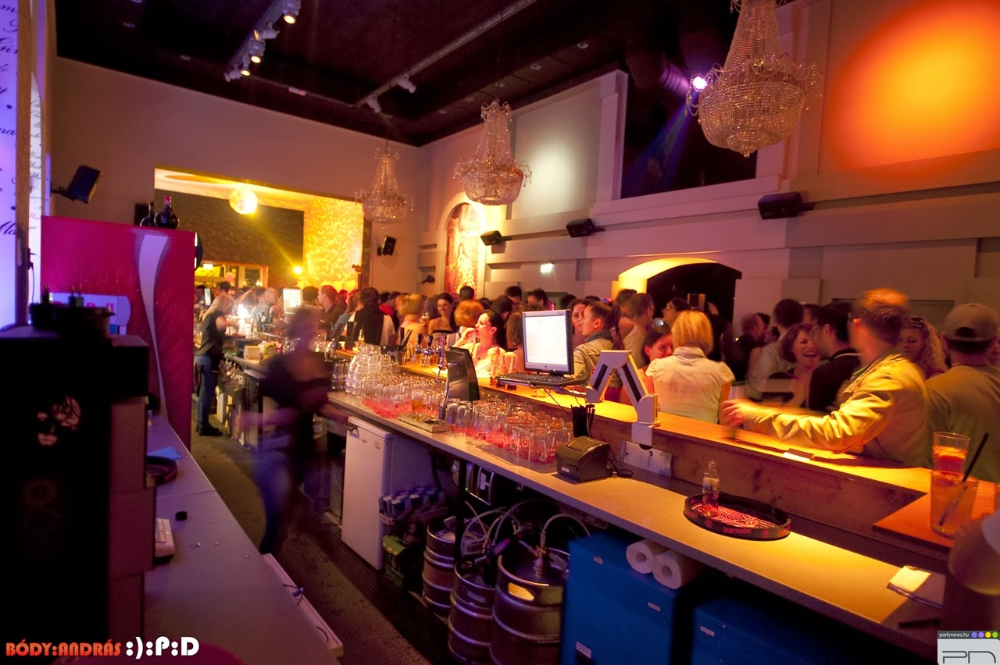
Idén már áprilisban kezdtem. Jó volt, hogy visszahívtak, ősztől tavaszig szinte egy fillér bevételem sem volt. Most szeptember közepével zárt a hely, és hiába, hogy sokkal korábban kezdtem az idényt, borzalmasan gyorsan telt el a nyár!
Persze ott volt az árvíz, két hétig zárva volt az egész Sziget, hiszen hiába a homokzsákok a futópályán körben, a Duna magas vízállása felhozta a talajvizet. Egy-két fa ki is dőlt, a laza talaj nem bírta el.
Próbáltam olyan dolgokra költeni, ami esetleg később pénzt hoz, de eddig nem sikerült egy fillért sem kicsiholni semmiből. Egy kicsit felspéciztem a gépemet, de igazság szerint még ez volt az egyik legkisebb kiadásom, amin nem élelmiszert vettem.
Voltak érdekes dolgok, például a férfivécében a középső boxban (három van) csorgott a víz. Megnéztem, mitől, hát egy kis nylon zacskó volt beledobva. A kábítószert mérik ilyesmiben. Miután felszippantotta az illető a fehér kristályokat vagy a sárgás port, a tartályba dobta, ahonnan nem ment le a vízzel, de nem is engedte a záróelemet a helyére kerülni.
Kisebb javításokért nem kellett a karbantartót hívni, egész otthonosan mozogtam a tartály, vagy a papírtartó zárjának javításában. Jól éreztem magam ott a klotyón, és ha maga a hely nem is hiányzik, azért a munka, és persze a fizetés igen. Nagyon messze van még a tavasz, és egyáltalán nem biztos, hogy visszahívnak.
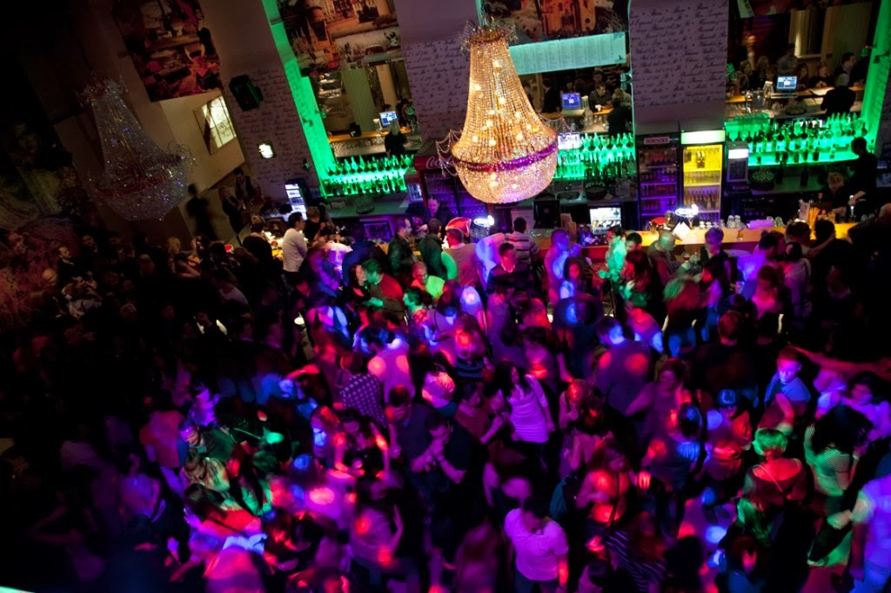
Na, hát ez nem lett valami vidám bejegyzés, nosztalgiáztunk egy kicsit. Legközelebb azért megpróbálom feldobni egy kicsit a hangulatot! Addig is legyetek rosszak! :D
2013. szeptember 28., szombat
- TANFOLYÁS
Az ember próbálkozik, mint a kutya. Aztán az embernek az orrára koppintanak:
- Mit képzelsz? Nem szabad!
- Most nem lehet!
- Sajnos nincs rá pénzünk...
- Majd ha nagyobb leszel, azt csinálsz, amit akarsz. De most nem.
Miután mindig vissza kellett fognom magam, elég későn érő típus lettem. 42 évesen iratkoztam be a gimnáziumba, és 46 évesen lettem érett - legalábbis a papír szerint. :)
47 éves koromban számítógépes szoftverüzemeltető lettem. Bár ilyen munkakör már nincs Magyarországon, örültem neki, hogy most már hivatalosan is elismerték, hogy értek a kompjúterekhez. Nem annyira, mint szeretnék, de azért... ott vagyok valahol a hozzáértők között.
Persze nem volt elég. Nem is tudtam mit kezdeni ezzel, esetleg helpdesk-esnek mehetek el - magyarul telefonos kisasszonynak -, de azt eldadogtam volna: ha esetleg felvesznek, hamarosan megszűnik a munkaviszonyom. Böngészgettem a Neten a hirdetéseket, de pénzem nem volt egy komolyabb sulira. Pont akkoriban tettek tönkre minket - magukat és engem - a bátyámék azzal, hogy minden pénzt (és az nem volt kevés!) elherdáltak, az utcára kerültünk, ki kellett mennünk külföldre szerencsét próbálni. (Nem sikerült.) Amikor visszajöttünk, láttam a Forrai Magániskola hirdetését: ötvenvalahány ezer forintért kétéves rendszergazdai tanfolyam. Istenem!... De jó lenne, ha ez összejönne! (Nem jött össze.)
Idén nyáron viszont kiszúrtam az Üzletemberképző Szakközépiskolát! Forraiéknál éppen megszűnt a rendszergazda képzés, esetleg webmesternek mehettem volna, de itt rátaláltam a frankóra! Sokkal olcsóbban ugyanúgy két év alatt kitanítanak álmaim munkakörére, és még diákigazolványt is kapok!
Heti két alkalommal van tanítás, pénteken délután és szombaton délelőtt kb. 6-7 tanórában. Ez nagyszerű - gondoltam -, hiszen két nap anyagát a rákövetkező 5 nap alatt csak meg tudom tanulni! Egy csomót gyakorolhatok is, benne lesz a kezemben minden!
Aha!... Tegnap volt egy felmérő, 16 pontból kaptam hetet. Az majdnem a fele! - mondhatnánk napsugaras optimizmussal, ha Albert, az egyik tanár fel nem homályosított volna: a vizsgán 50%-tól kettes. Na ja! Ha nem tanulom meg az alatt az 5 nap alatt az anyagot, akkor nem is fogom tudni! Ráadásul minél később állok neki az anyag elsajátításának, annál többet kell majd bepótolnom.
Szóval vigyázni kell!
Illetve tanulni! :)
Egyébként nem megy olyan nagyon rosszul! Hálózatokról azelőtt sem olvasgattam sokat. Úgy voltam vele, hogy ha esetleg a szabványokkal lesz dolgom, kinézem egy szakkönyvből, vagy felütöm az Internetet, azon úgyis minden rajta van. Persze volt valami halványlila segédfogalmam a rétegekről (egy hacker book-ban olvastam erről, meg pl. az Internet felépítéséről, működéséről), a hálózati topológiát pedig tanultuk is szoftverüzemeltetőin. De annyit foglalkozunk az OSI-val, hogy arról azt hittem, hogy protokoll. Hát nem az, és ezt most már te is tudod! Ha bármilyen vizsgán kérdezik, nyugodtan kijelentheted, hogy nem protokoll, és hazudik, ha valaki mást mond!
De nem is megy minden simán! Ma például késtem pár percet, az egész osztály előtt ott volt kinyitva az MS Project program. Nekem tíz percbe is beletelt, mire megtaláltam, hogy honnan lehet megnyitni. Nem, nem a Start menüből, és a C:\Program Files között sem volt! Előbbi helyről meg hiányzott a Futtatás opció.
Nem! Hanem a K meghajtón kellett megkeresni, valamilyen részét átmásolni a Dokumentumokba, de végül is ki lehetett tenni az indító ikonját az Asztalra...
Á, nincs vége a tortúrának, mert egy szünetről is késve értem vissza, és lemaradtam a Moodle oldalon (a suli weboldalán a képzéssel kapcsolatos dolgok vannak itt) a kurzusokra való jelentkezésről. Nem egyszerű, mert jelszó kell hozzá, ezért maradtam le. Tanítás után elkaptam a tanarat - nehéz volt, mert hárman is körbeugráltuk, mindannyian előbb akartunk végezni a másik kettőnél -, hogy küldje el az email címemre. A hozzáférést - hogy hol találom az egyes kurzusokat a weboldalon belül - megkaptam, a jelszavakat nem...
Szóval nem unatkozom, és ennek örülök! :D Már gimiben rájöttem, hogy szeretek suliba járni, csak tanulni ne kellene!...
2013. október 8., kedd
- VAJON MIBŐL LEHET PÉNZT CSINÁLNI?
Na igen, ilyeneken már én is agyaltam!
Internetes munkák: Évente többször utánanézek ilyesmiknek, és nem mondhatnám, hogy hirdetnek. Ha mégis, arról kiderül (vagy már kiderült, és egy másik weboldalon lehet róla olvasni), hogy kamu, az illető felvett egy csomó regisztrációs díjat, és most valamelyik tengerparton áztatja a lábát és issza a hideg koktélokat.
Számítógéppel (vagy anélkül) otthon végezhető munkák: Dettó! Egy kaptafa. Fizess reg. díjat, aztán kiderül, hogy valamiért nem jó a bolt.
Egyszer belementem egy ilyenbe. Feladtam a pénzt, postán kaptam egy szabványméretű borítékot, benne egy listával: Adatrögzítés X Ft/ó, levélfeladás, borítékcímzés Y Ft/db stb. És egy papír, hogy adjak fel hirdetést, ezeket a lapokat másoljam le és küldjem szét, aztán kérjek én is pénzt.
Az volt a nóta vége, Isten megsegített, küldött egy megrendelőt. Visszajött a pénzem (talán kétezer alatti összegről van szó), a hölgytől pedig itt kérek elnézést – bár nem hiszem, hogy ezt a bejegyzést valaha is elolvassa. :/
Mások tanítása: Ebből sem sikerült még egy fillért sem keresnem. “Gyere, mutasd már meg, te értesz hozzá!” “Csináld már meg, én ezt nem tudom!” “Nekem is menne, de te pikk-pakkra kész vagy vele!” És aztán várom, hogy hátha a kezembe nyomnak valamit… Ja, hazudok! Egyszer egy barátom fizetett két rugót. (Kétezer forintot.)
Jó, mostantól pénzért fogom, de ha ezt meghallják, nem fognak hívni.
Mondjuk az nem baj…
MLM: Talán el sem hiszitek, hogy pont egy hajléktalan… de évek óta a két kedvenc szavam a PASSZÍV JÖVEDELEM. (A saját 100%-os teljesítményed utáni jövedelem helyett más 10 ember 10-10%-a…) A gond csak az, hogy szinte mindenhez pénz kell. Két helyre is beregeltem, az MLM Diszkontba, meg a Family Business-be. (Ha bármelyikőtök ide akar jelentkezni, szóljatok, és megírom a linkemet! ) Mindkét hely olyan, hogy bármit megvásárolhatsz tőlük, amit ma is megveszel, csak olcsóbban és házhoz is viszik. És ha keresni is akarsz vele, és beviszel embereket magad alá, az ő eladásaik után is kapsz valamit.
Most jött el az ideje, h. nem tudom fizetni a havi (kötelező minimum) pontjaimnak megfelelő megrendeléseket. 
Egy barátom hívott be egy buliba, ahol az alád regisztrált (külföldi) emberek költése után kapsz jutalékot úgy, hogy ők meg visszatérítést kapnak. Ehhez NEM kell pénz, ha már megvan az Internet hozzáférésed (meg a géped). Laptop van, ingyen wifi is van, egy a gond: a srác a Facebook oldalamon bejelölt egy pár csoportot amíg eltiltás alatt voltam, és így még 2 héttel meghosszabbították: nem jelölhetek senkit! 
Vidéki munkahelyben is gondolkodtam. Végül is egy hajléktalannak mindegy, hogy hol nem lakik… De most, hogy péntek-szombat suliba járok, szóba sem jöhet egy autógyár vagy hasonló. Biztosan nem engednének vissza minden hétvégén. Pont ezért nem jó a külföldi meló sem, pedig a legrosszabb helyen/munkáért is annyit adnak, mint itthon egy jól fizetett szakmunkásnak.
És akkor csodálkoznak, hogy kiürül az ország!
Á, tudjátok, mit? Hadd legyen ez itt a reklám helye!
http://mlmdiszkont.hu/mlmdiszkont/bemutato?ref=rt9ni32e
http://www.family-business.hu/3601651
2013. november 21., csütörtök
- NAMOSTMÁR
Tavaly vettem a laptopomat, persze használtan. Már akkor sokat szarakodtam a billentyűzettel: ha a bal shift-et lenyomom, a jobb oldali billentyűket nem nagyon akarja látni. Meg a space-t. (Azt egyébként sem szereti.)
Még szintén tavaly vettem egy használt klaviatúrát - nevetni fogsz! - a tabletemhez. Mindössze 300 pénzbe került. A világon semmi baja nem volt, gyönyörűen működött. Igaz, német kiosztású volt, de ez engem nem zavar, úgyis vakon gépelek. Aztán hogy rá nemsokára megvettem a laptopot, feleslegessé vált: nem akartam többet a tableten netezni. Végül a pi-vizes Istvánnak adtam, mert ő is a notebookjának a gombjaival bajlódott.
Most már egyre jobban idegesített, hogy nem tudok egy hsz-t (hozzászólás) megírni úgy, hogy ne kelljen többször visszatörölnöm, mert nem ír le karaktereket. Vagy space-t. Pláne amilyen lassú esténként a Facebook! Leírtam 1-2 szót, aztán megvártam, amíg a Fb. szépen utolér.
Egy blog megírásáról már nem is szólva!
Na de most fogtam magam, és utánajártam az Interneten, hogy hogy lehetne olcsó billentyűzethez jutni. Találtam egyet, egérrel együtt 600 forintba fog kerülni, és ma megyek ki érte Újpestre.
Ettől kezdve nincs mentség, írnom kell!
2013. november 26., kedd
- AZ AJTÓK ZÁRÓDNAK
Töröm az okos kis fejemet: Mi a fenéhez lehet kezdeni egyetlen fillér nélkül?
Jó, persze, van kétezer forintom. Na de ez mihez elég? Lehet ebből egy vállalkozást indítani? Lehet ebből egy alapítványt létre hozni?
Király Norbi azt írta, hogy nem hogy pénze nem volt ingatlanbefektető céget nyitni, de még több millióval tartozott is.
Jó, akkor képzeljük el magunkat ingatlanbefektetőként! Vállalkozás vagyunk, mert ha befektetői céllal veszel ingatant, szinte elenyésző illetéket kell utána fizetni. Odamegyek az ürgéhez, és azt mondom:
- Helló, megveszem a lakásodat!
Mire ő:
- Jaj, de jó! Kérek érte 16 millió forintot, és itt van a kulcs!
Tegyük félre egy pillanatra az ügyvédi díjat (ő írja meg az adásvételi szerződést, meg még sok más papírt, és hát hová is lennénk papírok nélkül!...) meg a többi illetéket, és forgassuk ki a zsebünket 16 guriga után!
Nincs benne. Hát jól van, tudom én is, hogy nincs benne, de Király Norbi azt írta... Ja, hogy Király Norbinak volt egy(?) lakása, ami fedezetül szolgálhatott a bankkölcsön felvételéhez?
Na jó, menjünk tovább!
Lépten-nyomon olvasom, hogy „Segítse adományával/adója 1%-ával a következő alapítványt!”, és egy számlaszám. Ó, hát ez igazán nem lehet bonyolult! Csávolyon van az állandó bejelentett lakcímem, és bár soha nem jártam még ott, szegény emberek nyilván ott is élnek, akiket támogatni lehet. Ezzel-azzal. Bármivel. Nézzük, mennyi a vonatjegy!
Csávolyra nem megy vonat, Bajára a Déliből a legolcsóbb, 3130 Ft. Diákzsugával félárú, tehát oda-vissza ennyi. (Most tekintsünk el attól, hogy diákigazolvánnyal ha lenne BKK bérletem, csak kiegészítőt kéne venni, hisz még Bajáról is el kéne jutni Csávolyra, tehát egy-egy. Különben sincs pénzem bérletre.) Plusz be kéne tenni valamennyit az alapítványba. Momentán vonatra sincs pénzem, nem hogy alapítványt alapítani. A fővárosban meg még többe kerülne!
Nem, hát pénz nélkül egyszerűen meghal az ember, semmit nem lehet tenni! Tehát valamennyi zseton mindenképpen kell, hogy valamerre elindulhassak. Na de mennyi, és azt hogy szerezzem meg?
Egyszer olvastam egy boldog házaspárról (nem, nem mese volt!), akik a legnagyobb nélkülözések közepette sem panaszkodtak sem egymásnak, sem a külvilágnak. Összeszorított fogakkal dolgoztak tovább, és meg is lett az eredménye: mára már szép vagyonuk van, gyerekek, unokák veszik körbe őket, és szeretik egymást.
A férfi azt mondta, hogy ma ha egy fiatal milliomos akar lenni, semmi mást nem kéne csinálnia, mint venni három bikaborjút. Ezeket nevelgeti, és x idő múlva (talán egy év?) eladja az államnak. Pont egymilliót kap érte.
Ez szép kerek szám! Nézzünk utána, kb. mennyi alaptőke kéne (föld, bika, takarmány) a kezdéshez!
Erre a kezembe akad a http://www.farmit.hu/szakcikkek/tamogatasok-palyazat-uzletvitel/valtozott-hizottbika-tartas-tamogatas oldalon két sor, hogyaszongya: A 2010. november 30-át követően történő benyújtás esetén a kérelem érdemi vizsgálat nélkül elutasításra kerül, a késedelmes benyújtáshoz kapcsolódóan igazolási kérelemnek helye nincs.
Na, köszönöm szépen, nekem mára ennyi elég volt!
Az ajtók záródnak, tessék vigyázni! A végállomás következik! :(
2014. január 8., szerda
- NEGYED SZÁZAD
Épp negyed százada írta meg egy srác A hacker kiáltványát.
Negyed évszázad nagy idő, azóta a számítástechnikában egy csomó minden elavult, egy rakás új dolog született, és talán egyszer feledésbe fog merülni ez az írás is. Vegyük le egy percre a kalapunkat - legyen az fehér, fekete vagy akár szürke - és tisztelegjünk a (klasszikus értelemben vett) hacker, az önzetlen, segíteni akaró, örökké új és jobb megoldásokat kereső szakember előtt!
A hacker kiáltványa
Még egyet elkaptak ma, minden újságban benne van. "Letartóztattak egy tinédzsert számítógépes bűncselekményért", "A bankba való behatolás után letartóztattak egy hackert"...
Átkozott kölykök. Mind egyformák.
De te néztél valaha egy hacker szeme mögé? Gondolkodtál már valaha azon, hogy mi mozgatja, milyen erők formálják, mitől lett ilyen?
Hacker vagyok, lépj be a világomba...
Az én világom az iskolában kezdődik... Okosabb vagyok, mint a többi srác, ez a marhaság, amit tanítanak, untat...
Átkozott alulteljesítő kölyök. Mind egyformák.
Középiskolában vagyok. Hallgattam a tanárokat, ahogy tizenötödször is elmagyarázzák, hogyan kell egyszerűsíteni a törtet. Értem. "Nem, Ms. Smith, nem írtam le a házit. A fejemben csináltam meg..."
Átkozott kölyök. Biztosan lemásolta. Mind egyformák.
Egy felfedezést tettem ma. Találtam egy számítógépet. Várjunk csak egy pillanatra, ez király. Azt csinálja, amit elvárok tőle. Ha mégsem, az azért van, mert elrontottam valamit. Nem azért, mert utál engem... Vagy fenyegetve érzi magát... Vagy azt gondolja, hogy okostóni vagyok... Vagy nem szeret tanítani és nem kellene itt lennie...
Átkozott kölyök. Folyton csak játszik. Mind egyformák.
És akkor megtörtént... kinyílt a kapu a világra... végigrohant a telefonvonalon, mint a heroin a kábítószerfüggő vérében, egy elektronikus impulzus, egy menedék a mindennapok inkompetenciája elől... megtaláltam a hajót. "Ez az... ide tartozom..."
Mindenkit ismerek itt... még akkor is, ha soha nem találkoztam velük, soha nem beszéltem velük, és soha nem hallok felőlük még egyszer... Mindannyiótokat ismerem...
Átkozott kölyök. Megint lefoglalja a telefonvonalat. Mind egyformák...
Biztos vagy benne, hogy mind egyformák vagyunk... bébiétellel etettek bennünket az iskolában, mikor mi steak-re vágyunk... a hús apró darabjai, amelyeket átengedtetek nekünk, előre megrágottak és ízetlenek voltak. Szadisták uraltak bennünket, és egykedvűek néztek el fölöttünk. Az a néhány valaki, akinek volt mit tanítani nekünk, tehetséges diákoknak tartott bennünket, de ez a néhány olyan volt, mint vízcseppek a sivatagban. Most már ez a mi világunk... az elektronok és kapcsolók világa, a baud szépsége. Mi ingyen használunk egy már létező szolgáltatást, amelyik rohadt olcsó lehetne, ha nem mohó nyerészkedők kezében lenne, és minket neveztek bűnözőknek. Felfedezünk... és bűnözőknek neveztek bennünket. Tudás után kutatunk... és bűnözőknek neveztek bennünket. Bőrszín, nemzetiség, vallási nézetek nélkül létezünk... és bűnözőknek neveztek bennünket. Atombombát gyártotok, háborúztok, gyilkoltok, csaltok, és hazudtok nekünk, és megpróbáljátok elhitetni, hogy ez a mi érdekünkben történik, és akkor mi vagyunk bűnözők. Igen, bűnöző vagyok. A bűnöm a kíváncsiság. A bűnöm az, hogy azután ítélem meg az embereket, amit mondanak és gondolnak, és nem a külsejük alapján. A bűnöm, hogy okosabb vagyok, mint ti, ez olyan dolog, amit soha nem fogtok nekem megbocsátani.
Hacker vagyok, és ez a kiáltványom. Megállíthatjátok az egyént, de nem állíthattok meg minket... végül is, mind egyformák vagyunk.
Kelt 1986 január 8.-án.
Copyright 1986 Loyd Blankenship (mentor@blankenship.com). Minden jog fenntartva.
2014. április 22., kedd
- NYÖGVENYELŐCSŐVEZETŐ
Ezzel a Holdudvarral két baj van. Az egyik az, hogy csak akkor lesz biztos, ha már szólnak. Addig bizonytalan, nem érdemes számítani rá. A másik a beosztás.
Miután szabadtéri szórakozóhely, télen zárva van, és mivel vendéglátó, hétvégén nagyobb a forgalom, mint hét közben. A suli is hétvégén van: péntek délután és szombat délelőtt, tehát ez ütközik. És még valami. A suliban teljesítenem kéne egy hónap nyári gyakorlatot, és ez totál nem fér bele, ha a Holdudvarban dolgozom. Ha viszont nem vállalom el, nyáron sem lesz pénzem, nem csak télen.
Márciusban szóltak a bátyáméknak, hogy idén is úgy lesz minden, mint tavaly volt. Engem nem hívtak, de ez így volt tavaly és tavalyelőtt is, és már akkor is idegesített.
Szóltak a bátyámnak, hogy hétvégén is menjek be, mert a váltóm megbetegedett.
Szóltak a bátyámnak, hogy másnap nem kell jönni, mert rossz időt jósolt a meteorológia.
Szóltak a bátyámnak, hogy rohanjak, mert a váltóm nem ment be aznap, és én mégis csak Pesten lakom, hamarabb beérek.
Ütemterv: április 16-a nagytakarítás, 17-e szerződéskötés. A hely 18-án este 6-kor nyit, tehát aznap csak éjszakás kell a vécébe. Nosza, csütörtökön megjelentem, kössük meg azt a szerződést!
M. Judit volt bent, meg az Estella, utóbbi székeket pakolt két sráccal. Párbeszéd:
Judit:
- Mi újság?
Én:
- Jöttem jelentkezni, hátha szükség van még vécés bácsira.
Judit:
- A bátyádék adják az embereket.
Én:
- Igen, ők adják az éjszakát. De én nappalos voltam, engem a Holdudvar alkalmazott. Namost szóltatok nekik, hogy minden úgy lesz, mint tavaly volt, de ebből nem vágtam le, hogy ez rám is vonatkozik-e.
Judit:
- A bátyádékat is alkalmazza a Holdudvar.
Én:
- Igen, de ők vállalkozók, én meg a ti alkalmazásotokban… feszült
Judit:
- És?
Én:
- És most nem tudom, hogy van-e nappalos vécés bácsitok.
Judit:
- Már van vécés bácsink.
Én:
- Ó…
Judit:
- Te vagy az.
Én: fülig érő szájjal vigyorog
- Akkor írunk egy szerződést?
Judit:
- Hát most biztos, hogy nem. Gyere be szombaton, és a szerződést is akkor kötjük meg veled.
Szombaton bementem már délelőtt 10-re. Nem baj, gondoltam, lássák, hogy ott vagyok a topon! Meg egyébként is, péntek éjjel már van annyi részeg, hogy ha az éjszakás nem volt elég alapos… Minden rendben volt, csak a felmosás volt tré, de azt kijavítottam, meg a férfi klotyóban az egyik henger mögött ömlött a víz, ha lehúztam. Szóltam Tivadarnak, és pár perc alatt megjavította.
Fél 11-kor gondoltam, hogy beírom magam a jelenlétibe. Az iroda előtt volt is két ív, egy hivatalos, meg egy sokszorosított, ami valamilyen diákszövetkezet tagjait tartotta számon. Egyiken sem szerepelt a nevem. Odabent ugyanaz a gömbölyű srác volt, aki tavaly is, és már akkor sem tudtam a nevét, meg Laura, egy pici csaj. Kérdeztem, hogy hova írjak be, L. egy egyszerű mozdulattal a hivatalos lista alá kanyarította a nevem. A pasinak viszont szöget ütött a fejébe, hogy én miért nem szerepelek az emberek között.
Megreggeliztem és 11 előtt 10 perccel bementem az irodába.
- Kérem a kasszát. Ha nem túl korai.
- Nem délben nyitunk?
Udvariasan ránéztem L.-ra, ne én javítsam ki a főnököt.
- Nem – mondta ő, - tizenegykor.
- De kupont sem láttam. Kupon nélkül meg értelmét veszti az egész.
Aztán még hozzá tette morogva:
- Mondjuk kuponnal együtt is…
Idén is új dizájnnal készült kuponok lesznek, de még senki nem látott egyet sem. Tavalyiak ugyan voltak, de aztán kiderült, hogy nem lesz rá szükség. Ugyanis valaki elfelejtette leadni a nevemet a NAV-nak, és így egész hosszúhétvégén nem tudnak alkalmazni.
- Ha csak nem vállalod, hogy kifizetsz félmillió forintot, ha jönnek ellenőrizni.
Persze, hogy nem vállaltam, és abban egyeztünk meg, hogy kedden felveszem a munkát, addig is egy nyomtatványt kitöltetett velem egy Barbara nevű nő, aki, úgy néz ki, idén a nappalosok főnöke lesz. Kifelé menet, ahol már nem hallották, egy kicsit morogtam a bajuszom alatt. Visszamentem a Mikihez, és nekiálltam internetezni.
Ma, kedden elég búval bélelt idő volt, még zivatart is jósoltak, de jobban zavart az állandóan szemerkélő eső. A Sziget kihalt volt, de a kis piros busz majdhogynem tele indult el, talán egy külföldi csoport ült benne, akik csak egy-két napot maradnak itt, és eldöntötték, hogy juszt is jól fogják érezni magukat.
Késtem vagy negyed órát, de senki nem vette észre. A biztiőrön és Tivadaron kívül nem volt bent senki. Utóbbitól tudtam meg, hogy holnap sem nyitnak, előbbitől, hogy csak egy főnök meg egy főnöknő voltak bent, közölték, hogy nem lesz nyitás, és elmentek.
Mindenkit felhívtak, csak engem nem. Kifelé menet, ahol már nem hallották, káromkodtam egy jó egészségeset.
Visszamentem a Mikihez, és nekiálltam internetezni.
11:31-kor megszólalt a telefonom. Bratyó volt, ők már tegnap lecuccoltak Siófokra. A pénteket még lenyomták éjszaka, de a továbbiakban csak a melósaik fognak Pesten gályázni, ők a Balcsin keresik halálra magukat.
Bratyó közölte, hogy felhívták a Holdudvartól, és megmondták, hogy nem kell bemenni, csak csütörtökön.
Namost az utolsó szóban nem vagyok biztos, mert abban a pillanatban bekattant valami, és kurvára felhúztam magam. Azért írtam csütörtököt, mert a Tivadar azt mondta, hogy sem ma, sem holnap. Hát az csütörtököt jelent, de ha összevernek, sem tudom megmondani, hogy pontosan mi is hangzott el a telefonban. Pedig rákérdeztem, és mondta újra, sőt a Juliskámat is odaadta, és ő is mondta. Valószínűleg ugyanazt, nem tudom, de akkor már kiabáltam. Ugyanis amikor még a bátyámnál volt a telefon, megérdeklődtem, hogy mikor szóltak nekik, és kiderült, hogy még tegnap este. Annyira kiabáltam, hogy a sógunnőm gyorsan elköszönt és letette a telefont.
Amikor kitöltöttem az adatlapot, ugyanazokat a paramétereket adtam meg magamról, amit tavaly és tavalyelőtt is. Két év óta semmi nem változott, beleértve a telefonszámomat is. Harmadik éve nem képesek felhívni, bármi van, csak a bátyámmal üzengetnek, még ha ő 120 kilométerre van is. Nem voltak képesek, pedig már tegnap tudták, hogy nem nyitunk.
Ezek a görények meg ma hívnak fel, fél 12-kor, amikor már megjártam az utat oda-vissza csepegő esőben.
Hát akkor énekeljük el a nótát, hogyaszongya
Tele van a tököm akácfavirággal…
2014. április 28., hétfő
- NEHÉZ SZÜLÉS
Nincs még vége!
24-én csütörtökön bementem azzal, hogy végre dolgozni fogok. Nagyon elszánt voltam! Beírtam magam abba a jelenléti ívbe, ahol már szerepelt a nevem. Mi is bizonyítaná ennél fényesebben, hogy végre, végre dolgozhatom! :D
A klotyóban sáros lábnyomok mindenfelé. Úgy tűnik, jó vastagon felmostak, és utána még órákig bemászkáltak a kedves vendégek, vagy esetleg eleve vizes-sáros lábbal tették. Mindegy, egy alapos felmosás segíteni fog! Rengeteg helyen hiányzott a vécépapír, az összes papírtörölköző tartó üres volt. A kis huncutok! Mekkora buli lehetett itt? Kimentem az irodához, hogy kérjek cuccot, amivel feltöltöm az üres tartókat, de szokás szerint éppen akkor senki nem volt ott. Na jó, addig felmosok! Mire visszafordultam volna, előkerült a Krisz, ő egy ilyen mindenes srác. Elbeszélgettünk, és már megint csak indultam volna vissza, mire megjött L., a picike lány. Mondom neki, hogy mi van, mire ő:
- Attila, nem biztos, hogy dolgozol ma.
Lefagytam, mint az Explorer.
- Hogyhogy?
- Úgy, hogy nem vagy még bejelentve. Várj, meg kell kérdeznem!
Hát ezt nem hiszem el! Mi a fene kell még ehhez? Én kényelmesen a kanapén ülve pár perc alatt leadtam a NAV-nak a bátyámék melósainak a nevét, ők ezt lassan egy hete nem képesek megcsinálni, pedig mennyien vannak rá!
Visszamentem, és elkezdtem a férfi vécét felmosni.
Nem telt el két perc, jött L., és mondta, hogy nem tudok ma sem gályázni, majd holnap jöjjek be megint.
Megjelent az a srác is, akinek már illene megtanulnom a nevét így tavaly óta, és hozzá tette, hogy most egy szövetkezettel állunk kapcsolatban, áprilisban hozzájuk regisztrálunk, vagy valami ilyesmi. És előbb velük kell szerződést kötnöm, befizetnek 3 rugót, amit tőlem vonnak le, de ezt majd visszakapom, és csak utána tudok elkezdeni dolgozni.
Mit mondjak? Nem voltam boldog. Közben L. a női mosdóban birkózott a hajába akadt csattal. Néztük egy darabig, majd nem tudtam megállni, és megjegyeztem:
- Ez benne marad őszig.
- Szerintem is – mondta a főnök srác.
- Nem – bizakodott a csaj, - ma már egyszer kijött!
A szerződésből nem kaptam másolatot – senki sem kapott -, sőt időm sem volt elolvasni. Ez kíváncsivá is tett, ugyanakkor leszarom. Ha ez a módja, akkor legyen így, csak kereshessek már végre!
Másnap kijöttem a Vonatról és már a 8-as buszon ültem, hogy megyek fel a Mikihez, amikor 8 óra tájban csöng a telefon. L. volt, és azt mondta, hogy aznap nem kell bemennem, mert nem nyitnak ki a rossz idő miatt.
Miért nem lepődtem meg?
- És holnap? – kérdeztem.
- Majd felhívlak.
- Jó, de akkor is hívj, ha kellek, és akkor is, ha nem! Nehogy félreértés legyen.
- Nem, csak akkor telefonálok, ha nem kell jönni.
Ott ragadtam a Mikinél, és másnap reggel fél 9-re állítottam be az órát. Ha addig nem telefonálnak, akkor összeszedem magam és bemegyek. Talán idén mégis csak lesz valami munkám!
Fél előtt két perccel hívott. Nem kell bemenni. Szombat volt, és ez azt jelentette, hogy megint fogok kapni egy telefont a Providenttől.
Az úgy van, hogy múlt hónapban megegyeztünk, azaz kierőszakolták, hogy megígérjem, hogy minden hó 28-áig befizetek 4 rugót, és akkor nem adnak át a bíróságnak. Mert akkor ők is ráteszik a perköltséget, és egy összegben fizettetik ki, és az nekem még rosszabb lesz.
Belementem, persze, hogy belementem, amikor arról volt szó, hogy már Húsvétkor fizetést fogok kapni! Amit vasárnaptól szombatig dolgozunk, azt kifizetik vasárnap. Még így is, hogy csúsztunk egy hetet, ha szombaton bementem volna, azt másnap megkapom, és hétfőn befizetem. De neeem!... Nehogy már úgy legyen, hogy jó legyen!
Na, vasárnap nem csöngött a telcsim!
Miki aznap is Szolnokra indult a nőjéhez, de lustálkodott még az ágyban. Engem küldött ki zsemlékért, hoztam nyolcat. Amíg elkészültem, és ez nem tartott sokáig (sosem zuhanyzom, ha ő is otthon van, fürdeni meg soha nem fogok abban a kádban), megkent nekem hármat. Befaltam, közben be nem állt a szája. Nem egy könnyű eset ez a csaj, és Miki nekem ecsetelte, hogy ha így lesz, mit fog tenni, és ha úgy, akkor mit. Gyorsan elköszöntem, így is pár percet késtem a Holdudvarból.
Az idei első munkanapom! :D Nahááát! Csak megértem!
A nőit már majdnem teljesen felmosta a takarítónő, amikor hátra mentem. Oda nem mehettem be vécépapírt feltölteni, meg akartam várni, hogy felszáradjon. A férfit már én tettem rendbe, és volt mit takarítani: a sáros lábnyomok már megint. Gondolom, az lehetett, hogy az éjszakás korábban ment el, mint ahogy bezárt volna a hely, és felmosás után összemászkálták.
Első meglepi: nincsenek kuponok. Tehát kasszázni sem lehet. (A kuponozásnak az a lényege, hogy bejön a kuncsaft, akit le kell vennem két kilóra. Cserében kap egy kétszáz forint értékű kupont, amit lekajálhat-piálhat. Ilyenkor az a baj, hogy „már fogyasztottunk, és ki is fizettünk mindent”, vagy „de miért kell nekem itt is fizetnem, amikor ikszezer forintot elittam, rajtam ne keressetek már!”) És annyira nincsenek, hogy még azt sem döntötték el, hogy kerek legyen-e, mint eddig mindig. Ugyanis a kerek alakúak háromszor – vagy hányszor – többe kerülnek! Ebben a megvilágításban az is hülye, aki ehhez a formához ragaszkodott.
Akkor mi legyen? Tisztelet kassza, mint az éjszakásoknál.
Második meglepi: este 8 után nem jön a váltás. Kiderül, vasárnap este 11-ig van nyitva a hely, ilyenkor nem hívnak éjszakást. 9 után elszámolok, 27 380 Ft a bevétel. Gyönyörű!
Utána kimegyek oda, ahová egész nap nem volt időm. Sms-t küldök Mikinek, ne ijedjen meg, ha rányitok, de ma is ott alszom. Kifelé menet sokat dumálunk az őrrel, és ő mondja, hogy előző éjjel nem voltak takarítók. Vajon ezt a bátyámék tudták?
Ezért hát a sok sáros lábnyom! A takarítónő nyitás előtt jó vastagon felmos, és már délelőtt összemászkálják. Úgy szárad meg, és olyan csúnya marad egész napra. Ez megéri a cégnek?
Ma délután 2-kor nyit a hely. 8-kor akarok eljönni, hogy bent alhassak a Vonaton. Nem hittem volna, hogy ez lesz a választásom, ha alhatnék lakásban, ágyban is, de feszélyez a kosz és az elhanyagoltság.
A Provident meg ki lesz fizetve idén, csak legyenek egy kis türelemmel!
- 2014. október ?
- VESZTETTEM
Már szeptemberben bezárt a Holdudvar, de még nem kaptam meg a kilépőpapíromat.
Mindegy, ez nem tartott volna vissza attól, hogy szedjem a sátorfámat, és kimenjek Európába végre valami munkát találni, és normális pénzért dolgozni egy normális országban.
Ez nem. Az sokkal inkább, hogy megint elfogyott a pénzem.
Hova a fenébe tűnt el ennyi zsé? Hova lett az a sok pénz, amit megkerestem a nyáron, és a közmondásosan szerény költekezésem folytán most a pénztárcámat kéne dagasztania?
Jó, persze, vettem egy tabletet a nagylányomnak, vettem két használt számítógépet Gyömrőre - egyet a közös gép helyére, egyet a középső lányomnak -, meg kölcsön adtam egy tízest az Évának, meg több mint 17 rugót a Mikinek. De akkor is kellett volna maradnia egy "csomó" pénznek! Annyinak mindenképpen, hogy kiutazhassak legalább Bécsbe, és legalább egy-két hetet hajléktalanszállón tudjak tölteni.
És nem! Elfolyt, elcsöpögött valahol az ujjaim között, és most itt állok megint ősszel, megint pénz nélkül, megint egy szomorú országban mindenféle pénzkereseti lehetőség nélkül. Egy újabb tél előtt, egy újabb hiába eltelt évvel a hátam mögött.
Azt hiszem, jobb, ha beletörődöm a sorsomba. Nem vagyok képes változtatni rajta, mindenképpen ilyen szerencsétlenül kell befejeznem a földi pályafutásomat. Örülhetek, ha felvesz valami multi és éhbérért dolgoztat, vagy jöhet megint az ingyenkonyha a rettenetes kajákkal, meg a melegedők, meg a McDonald's-ok és a művelődési házak az ingyen wifijükkel és lenéző biztonsági őreikkel.
Rendben, ha ilyen béna vagyok, és nem vagyok képes ebből a szarból (sem) kimászni, hát akkor jöjjön ez! Nem fogok kapálózni. Éveken keresztül próbálkoztam, nem megy. Jól van, ennyi, leteszem a fegyvert.
Tisztára úgy érzem magam, mint az a fószer a Truman Show-ban.
2014. október 7., kedd
- CSOKOLÁDÉ
Mikikém azzal jött haza, hogy kérek-e csokit. Naná, hogy kérek!
Megkívánt egy tábla mogyorós csokoládét, és már a második sornál tartott, amikor rájött, hogy mazsola is van benne. Ő pedig utálja a szőlőt.
Tízdekás tábla volt, kicsi kockákkal, apróra tört mogyoróval és kicsikre szabdalt mazsival. Én is benyomtam két sort, de kábé a fele még mindig megvolt.
Megvacsorázott, ledőlt az ágyra, és elmajszolt egy kisebb szelet másmilyen csokoládét. Aztán felém fordult.
- Attilám! Tudsz adni egy kicsit a csokidból? Kevés volt úgy látszik, még kéne ennem.
- Persze, tessék.
Kissé elcsodálkoztam, de gondoltam, megeszik egy vagy két kockát… Amikor visszaadta, ez volt a papíron:
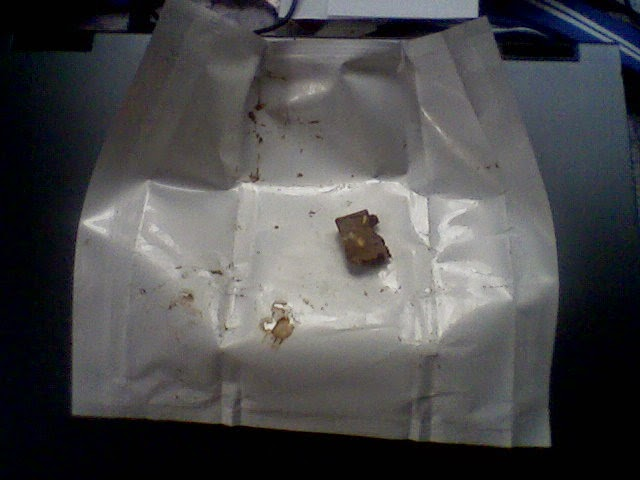
2014. október 9., csütörtök
- REMÉNYHAL
Az Úr roppant elfoglalt! Vagy csak szeret próbára tenni. Mindig megvárja, amíg jól kiakadsz, és csak akkor villant valamit.
Hát, én nem bánom, ha mindig jó lesz a vége!
2014. november 16., vasárnap
- CIKK-I 1
Azért számoztam meg, mert gyanítom, lesznek még ilyen bejegyzések.
Ezt találtam:
Bosszút állnak a csalódott álláskeresők
jobpilot.hu2008. 01. 30., 9:37Utolsó módosítás: 2008. 01. 30., 9:39
Nem kizárt, hogy a csalódott álláskeresők soha többet nem kérnek az őket méltánytalanul kezelő cég termékéből vagy szolgáltatásából. Ezt a nézetet már minden harmadik diplomás álláskereső vallja. A leggyakrabban a visszajelzés hiánya és az undok interjúztató bőszíti fel a pályázókat - írja a Világgazdaság.
A Reed Consulting európai pályázó-elégedettségi vizsgálatán évről-évre rosszabb eredményt produkálnak a cégek. Kutatásukban háromezer diplomás álláskeresőt faggattak arról, miként vélekednek a munkaerőt kereső cég toborzási és kiválasztási szokásairól. A diplomások több mint kétharmada elmondta: előfordult már, hogy soha többet nem hallott az őket első körös interjúra behívó cégről. A vállalatok közel egyharmada pedig keresés közben változtatott a jelentkezés feltételein. A tanulmány arra is rámutatott: a diplomások több mint egynegyede a kiválasztást végző HR szakember undok viselkedése miatt utasította el a felkínált állást. A felmérést végző cég szerint az eredményeknek rá kell döbbenteni a vállalatokat: az állásra pályázók egyben potenciális vevők, vásárlók is. A cég jövője szempontjából sem mindegy tehát, hogy bánnak velük.
Az öt legfőbb álláskeresői panasz:
a cég egyáltalán nem adott visszajelzést a pályázatra: 66 százalék
az interjúztató szemtelen, undok, vagy közönyös volt: 33 százalék
a meghirdetett állás követelménye megváltozott 31 százalék
kevés információ a megpályázott állásról 29 százalék
késedelmes döntéshozatal: 21 százalék
(jobpilot.hu)
Változott azóta valami?
Hogyne! A dátum! :(
2014. november 16., vasárnap
- CIKK-I 2
Mondj igazat és betörik a fejed
- Miért és miről muszáj hazudni egy állásinterjún?
-
Az esetek többségében a HR-esek olyan álláskeresőket hívnak be interjúra, akik teljes ellentétei a menedzsment által elvártaknak. Amíg a HR-esek arra koncentrálnak, hogy az új alkalmazottak "jól viselkedjenek a homokozóban", azaz beilleszkedjenek a vállalatba, és ne legyen velük probléma, addig napjaink vállalkozó menedzsmentje gyakran épp úgy véli, hogy olyan emberre van szüksége, aki még csak a homokozó közelébe sem megy. Így alakul ki a paradoxon: ahhoz, hogy az utóbbihoz közel kerülhessünk, hazudni kell az előbbinek.
Nézzük ezt a gyakorlatban: amikor a HR-es megkérdezi: "Hogyan dolgozol csapatban?". Nos, a Föld legtöbb okos és innovatív embere sehogy - vélekedik Mark Stevens marketingszakember. Nem azért, mert problémás emberek lennének, csak szimplán azért, mert jobban dolgoznak egyedül: összeállítani egy szoftvert, egy matematikai formulát, egy kreatívot, és még sorolhatnánk. Azonban ha azt válaszolnánk: "Sehogy. Nem szeretek másokkal együtt dolgozni. Szerintem akkor vagyok a legjobb, ha magamban dolgozhatok. Az egyetemi professzorom is "magányoskának" hívott.", a HR-es univerzum erre az őszinte válaszra azt felelné: a KÖVETKEZŐT! Einstein és Newton valószínűleg fennakadna a rostán.
Számos cégnél felmerülhet így a probléma: miért van az, hogy a menedzsment elé, a felvételi interjúk második körében sorozatosan olyan emberek kerülnek elő, akik nem kompetensek az adott munkára. A megoldást a HR osztályon kell keresni, hiszen ők azok - akik bár a legnagyobb jó szándékkal, de - kisorozzák azokat az embereket, akik a feladatra tökéletesen megfelelnének (a geek-ek és a magányoskák). A vállalatok gyakran ezért korlátozzák a HR feladatkörét a bérek és fizetések, a munkavállalói juttatások területére.
Nézzünk még egy tipikus kérdést: "Miért szeretnél a cégnél dolgozni?" A legtöbbször az őszinte válasz a következő lenne: "Szerintem ez a legjobb hely, hogy megcsináljam a szerencsémet, még mielőtt 35 leszek. Szuper lenne részesedni a részvényekben." A válasz hallatán biztosan a vészkijáraton távolítanák el a jelentkezőt. Ahhoz, hogy a következő szintre, azaz a menedzsment elé kerüljünk, hazudnunk kell: egy fantasztikusan csillogó versikét kell költenünk a cég innovatív kultúrájáról, vagy a zseniális alapítókról.
A jó öreg közmondás, miszerint "csak légy önmagad" a vesztesek mondata, és egyáltalán nem állja meg a helyét a felvételi procedúrában. Ehelyett annak kell lenni, akit a HR akar. Az esetek többségében pedig hazudni kell, hogy az elé az ember elé kerüljünk, aki igazán számít. És akinek 180°-kal másabb a véleménye és a gondolkodása, mint a HR-nek, legyen az az élet, a cég vagy a siker témája.
Nem szabad azonban azt gondolni, hogy a hazugság egy helyes döntés és minden szituációban alkalmazható. Mindenki szemében többet ér az őszinte ember, de ha valaki egyszer bekerül ebbe a rendszerbe, akkor meg kell tanulnia táncolni benne.
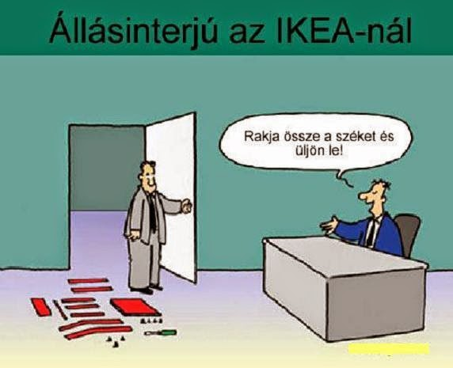
2015. április 11., szombat
- JÁTÉKOK
Nem rég fejeztem be a F.E.A.R. című játékot.
Igen, nem bírok magammal, újra és újra végig kell rajta mennem! Közben meg a hideg kilel, frászt kapok a sötét zugoktól, hiába tudom előre, hogy mi következik. Gondolom, ehhez nagyban hozzájárul a jól összeválogatott zene is. Egy saját „szám” van, ahol a gyermek Alma zenedobozát halljuk. Baromi idegesítő! (Gyanítom, hogy a történet kikerekítése már a játék sikeres befutása után jött létre.)
A sztori amúgy inkább szomorú: Egy atomtámadás után a vegyiekkel kivonuló katonák egy kislányt találnak az egyébként kihalt városban. Hogy élte túl? Milyen elváltozásokat okozott benne a sugárzás? Kísérletezni kezdenek vele, és rájönnek, hogy extra képességei vannak. Gyereket is szül, kettőt is, ők is örökölnek ezekből a képességekből. Az egyik egy Paxton Fettel nevű renegát, aki megszökik és hipnotikus úton vezényelt hadsereget indít, hogy megbosszulja magát és anyját. Ellenük, és az idősebb Alma szellemserege ellen megy a harc. A történet a játék folyamán egyre jobban kibomlik és mindenre fény derül.
A másik kedvencem az Oni nevű játék (ez japánul démont jelent), ami egy képregényszerű környezetben játszódik. A betétek nem is szaroznak sokat: inzert, és az éppen beszélő figura feje egy kockában valamelyik sarokban. (Szintén állókép.) Viszont a mozgások jól grafikáltak (hoppá, van ilyen szó?), egy tré videokártyával ne is próbálj nekirugaszkodni!
Egy Konoko nevű lány a főszereplője, akire akciódús feladatokat bíznak. Technobűnözők után kell kutatni és kiiktatni őket. Egy cég a Föld légkörén óhajt javítani, ami ugye egy nemes feladat, de ahogy begyűjtjük az adatokat, rá kell jönnünk, hogy valami más van itt a háttérben.
Lövöldözni is lehet, de inkább a verekedésen van a lényeg. Játék közben tanulunk új figurákat, de ahogy halad előre a sztori, az ellenfelek is egyre profibb képességekre tesznek szert. Persze sok disznóságra is fény derül, és a végén már mindenki az ellenségünk, aki karatés, vagy fegyvere van… Hálátlan feladat Muro mesternindzsájával, Mukade-val (Százlábú) párbajozni, aki sokkal gyorsabban mozog, mint te, és rendszerint láthatatlanná is válik. 2-3 hypo-val (tartalék energia) be se szállj a liftbe! A csúcspont a leszámolás a főgonosszal (Muro), aztán egy szomorú befejezés a romos városban.
Egy Oni fan szerint kétévente kötelező játék. Én két év alatt vagy negyedszerre futottam neki, bár csak kétszer sikerült teljesen végigmennem rajta. Szerencsére bármelyik helyszín újrajátszható.
Tulajdonképpen véletlenül bukkantam rá a Mirror’s Edge című PC játékra. Letöltöttem, de jelszóval védett a tömörítés, és csak akkor kapod meg (ha ugyan…), ha egy oldalon megadod a telefonszámodat. Aztán persze egymás után kapod a fizetős tartalmakat sms-ben, és mire le tudod mondani, a gatyád is rámegy.
Piszok látványos játék! Egy parkour brigád, a Runners röpköd tetőről tetőre különféle feladatokat teljesítve a korrupt városvezetés ellen dolgozó underground csoport számára, miközben a rendőrök (a Kékek :) ) vadásznak rájuk. Főszereplő egy Faith Connors nevű ázsiai lány. Nővére, Kate rendőr, aki gyilkosság gyanújába keveredik. Letartóztatják, de a lány nem hagyja annyiban, nyomozni kezd az igazi gyilkos után.
Szédületes képek, csak a bemutató megnézése alatt elhasználtam vagy fél kiló adrenalint! (Ide most egy rövidebb klipet tettem be.)
És most egy másmilyen játékról. Ezt a hivatal játssza az emberekkel.
A Vonaton eldicsekedett egy srác, hogy nyugdíjas bérlettel jár. Igaz, hogy már lejárt, de megveszi hozzá a szelvényt, és így utazik.
- Honnan van neked nyugdíjas bérletigazolványod? – kérdeztem.
Hát kiderült, hogy a Hallerban szerezte. Ez a hajléktalanoknak fenntartott Munkaügyi Központ. Ha egy évig együttműködsz velük, vagy az elmúlt két év alatt legalább 180 nap munkaviszonyt igazolsz, jogosult vagy rá, és egy évig használhatod.
Odamentem. Alig voltak bent, rögtön sorra kerültem.
- Mi járatban van? – kérdezte a hölgy.
Elmondtam, mire közölte, hogy ők nem foglalkoznak ilyesmivel (Lacika tőlük kapta!), de menjek el az Önkormányzathoz, majd ők.
- Milyen Önkormányzathoz?
- A Könyves Kálmán körútra.
Az szintén csak hajléktalanokkal foglalkozik, tudom, hol van. Odamentem, ott is igen hamar sorra kerültem.
- Mi nem foglalkozunk ilyesmivel, menjen el a Haller utcában a Munkaügyi Központba…
- Köszönöm szépen!
Azóta sincs bérletem. Leszarom. Havi kb. három és fél rugót megspóroltam.
2015. május 24., vasárnap
- MINDIG KÉSŐN
A hetesben már reggel 7-kor felmostak.
Ma ugye Pünkösd vasárnap van, és bent lehet maradni a Vonaton. Meg hétfőn is. De egy páran kimegyünk, és én reggel szeretek zuhanyozni. Mondjuk, ha akartam, sem tudtam volna este lefürdeni, mert véletlenül elhoztam a vécékulcsot a Holdudvarból, és az éjszakások nem tudták feltölteni a vécépapírtartókat. Legalább is nem mindegyiket. Este rámtelefonált a Krisz, és be kellett ugranom vele.
Odafelé is lekéstem a buszt, meg visszafelé is. Majdnem fél 11-re értem vissza a Vonathoz, és már be voltak zárva az ajtók. A Tibi engedett be - ő a főnökhelyettes, és egész ünnepeket is be szokott vállalni, valószínűleg ő lesz bent kedd reggelig, hacsak meg nem unja és le nem váltatja magát.
A mi zuhanyzónkat meg szétbombázták. Középen kilyukadt a padló, ezért lezárták. Most a napokban megint kinyitották, de csak azt láttuk, hogy nem csináltak semmit. Mint a magyar útépítéseknél: felbontanak mindent, és úgy hagyják. Itt is felszedték a PVC-t, és annyi.
Tulajdonképpen a mi kedvünkért tartják nyitva azóta a közös zuhanyzót egész éjszaka, az pedig hátul van, át kell menni hozzá a hetesen.
Azt meg felmosták.
Na jó, fel tudtam volna kelni 6-kor is, amikor vagy negyedszerre voltam kint pisilni, és ha akkor lefürdök és elkészülök, már nyitásra itt lehettem volna a Mac-ben, vagyis 7-re. De a Tibi nem szokott zárni, mindenki maga oltja el a villanyt, és kelteni sem szokott. 7 után ébredtem. Azért hátra mentem zuhanyozni, meg barkácsoltam egy sajtos szendvicset és meg is ettem, hogy a reggeli vitaminjaimat be tudjam kapni, és csak utána indultam el.
Ilyenkor, ha bentmaradás van, reggel 8-ig ki kell mennie annak, aki nem marad bent, és már le voltak zárva az ajtók, amikor felkerekedtem. Ugyanott mentem ki, ahol éjszaka bejöttem. Befelé és kifelé is elkéstem, de Tibor úr nem haragudott érte.
- Tudja, Attila, vannak kivételek - mondta, és ez jólesett.
Miután ennyire tré az időjárás - tegnap is haza küldtek (milyen mókás, amikor egy hajléktalant haza küldenek!) miután rendbe tettem a klotyót -, úgy egyeztünk meg a Túri Lacival, hogy 9 körül felhívom, hogy kell-e menni.
Én. Az én pénzemen. Na mindegy.
Na és ha kell, akkor csak bő fél órát tudtam netezni, ha pedig nem kell mennem, akkor szépen átbattyogok a MüPá-ba, és ott elinternetezgetek egész nap. De mára csak délutánra mondott esőt, talán kelleni fogok. Mindjárt kiderül.
Megyek dolgozni. Hahh... (sóhajt) Azért jó volt veletek! :)
2015. június 18., csütörtök
- ZAJLIK
Április 25-e óta gályázom. Igaz, hogy abban a hónapban csak 4 munkanapom volt, de májusban 2 nap nem kellett bemennem a rossz idő miatt, 2 másik napon pedig akkor küldtek haza, amikor már bent voltam – ezeket azért elszámolták 1-1 órában, mert a klotyót összerántottam, és csak utána mentem haza. Tehát a múlt hónapban 4 nap volt, amíg nem töltöttem ott huzamosabb időt. Azóta egyfolytában nyomom, mint süket a csengőt. Claude holnap jön be megbeszélni, hogy mikor ér rá.
Mindegy, nem panaszkodom, mert legalább keresek. Pénzem az nincs, de most már nagyjából minden megvan, ami nélkül ugyebár nem élet az élet: felső protkó, tablet, bringa, laptop…
Ma egy amerikai csoportot vártak. Arról volt szó, hogy hatra jönnek, az éjszakások megérkeznek 4-re és 2 óra alatt nagytakarítunk. Estilla küldött egy sms-t a Gyuszikának, mert mostanában ő osztja be a melósokat bratyóék helyett, de fél 5-kor még nem volt ott senki rajtam kívül. Állhattam neki egyedül. E. felhívta Gy-t, mire ő azt válaszolta, hogy nem tudta értelmezni az üzenetet. Nekem mutatta, mit küldött Gyuszkónak, és teljesen világos volt és félreérthetetlen. Gy. viszont azt mondta, hogy az üziben este 8-ra hívták be őket.
Mindegy, végül is bejött Gyuszikám, meg később még két csaj, úgyhogy négyen megcsináltuk. Kissé megizzadtam, és rá kellett jönnöm, hogy az, amit én dolgozom egész nap, az kutyafüle. Ha még jó lenne a wifi is, tényleg csak ajándék pénznek tűnne. De nem jó. És az egész napomat bent töltöm. Úgy búcsúzom el a biztiőrtől mindig:
- Na megyek, mert lassan már megint be kell jönnöm!
2015. június 25., csütörtök
- CLOSET BLUES
A negyedik szezonom a Holdudvarban. A körülmények hasonlók, a vendégek arc nélkül is ugyanazok, mint bármelyik évben.
Tavaly még úgy volt, hogy este 8-kor le kellett húzni a rolót, akár jött éjszakás, akár nem. Volt, hogy rám szóltak, hogy ha negyed 9-kor megyek el, ne írjak már be fél 9-et. Vagy ha 20:10-re elszámolok a kasszával, ne kelljen már a HU-nak fizetnie azt az időt, amíg átöltözök. Idén már én mondom meg, hogy mikor zárok. Fél 9, fél 10... Nem egyszer 10 után mentem ki a kapun. Addig is ketyeg az órám. Persze ezt is csak úgy tudom megcsinálni, hogy azokon a napokon a Mikinél szovelek.
A problémák ugyanazok maradtak. Mitől is változtak volna? Akik meg tudnák oldani, ugyanazok, mint tavaly, meg tavalyelőtt, meg azelőtt...
Például az egyik éjszakás csaj beletörte a mindentnyitó kulcsot az egyik vécépapírtartóba. Ez a "kékfejű kulcs" volt, és tényleg mindent nyitott, kivéve persze azokat az új rendszerű klotyópapírtartókat, amikbe egy U alakú fémet kell belenyomni, és akkor csapódik le a borítólemeze. Krisz (ő a mindenes) vagy két hete lelkesen jelentette, hogy új klópapírtartók jöttek. Természetesen azóta sincsenek felszerelve. A kékfejű kulcs nélkül pedig csak nagyon nyögvenyelősen lehet 9 darab papírtartót kinyitni, meg persze becsukni. Egy máshonnan leszedett, bőröndkulcshoz hasonló szerszámmal szenvedek azóta is.
Az éjszakások néha elfelejtik feltölteni a tartókat (állítólag nem találják a kulcsot), vagy szarul van felmosva, és úgy kell feldörgölni a sáros lábnyomokat. Esetleg a tegnapi szardarabokat vakargatni a slózi oldaláról.
Na de a kedves vendégek sem kutyák! Gondoskodnak arról, hogy ne unatkozzak! Gondolkodtam ilyen táblákon, hogy mondjuk
HA NEM TUDSZ/AKARSZ RÁÜLNI A DESZKÁRA, SZÍVESEN LÁTUNK A FÉRFI VÉCÉBEN A PISZOÁROKNÁL!
Sokszor látni a lábnyomát a deszkán (ami persze műanyag) vagy a fajansz tetején. Onnan próbál maga alá célozni - sikertelenül.
De most komolyan, annyira sötétek bírnak lenni az emberek! Vagy csak egyszerűen rabszolgának néznek, és direkt csinálják?
Ha bejössz és nem szólalsz meg (ha csak nyögsz egyet, az nem elég!), nem tudom, magyar vagy-e, vagy külföldi. Nem tudom, milyen nyelven szóljak hozzád.
Ha leejted - pláne ha ledobod! - a kéztörlőt a földre a szemetes mellé, esetleg a helyiség közepére(!), és nem veszed fel, bunkó paraszt vagy!
Ha nem húzod le magad után a klotyót, bunkó paraszt vagy!
Ha a rágógumit a piszoárba köpöd, bunkó paraszt vagy!
Ha a pénisztörlőt szintén odadobod, bunkó paraszt vagy! (Nem is értem, egyszer már bement érte a fülkébe!)
Ha a piáspoharat a vécékagylóba dobod, bunkó paraszt vagy!
És nem mentség rá, hogy engem ezért fizetnek, ugyanis engem NEM ezért fizetnek! Úgyhogy ha erre gondolsz, akkor egy bunkó paraszt vagy!
- Jó napot kívánok! Kettőszáz forint lesz a vécé.
- Akkor is, ha itt fogyasztok?
- Nem, akkor nem. Csak akkor tessék hozni egy ilyen kártyát a pincértől, és én is tudni fogom, hogy itt tetszik fogyasztani!
- Még nem rendeltünk, csak most ültünk le...
- Hát ez az! Kettőszáz forint lesz.
Kevés az ígéret, hogy majd fogyasztasz. Mert lehet, hogy nem fogyasztasz, csak vécére jöttél be, ingyen akarod megúszni, és aztán szépen kisétálsz. Nem, nem vagyok paranoid, sokan és rendszeresen próbálkoznak ilyenekkel.
- Jó napot kívánok! Kettőszáz forint lesz a vécé.
Beleguberál a bukszájába, én nyomtatom a blokkot. Az online pénztárgépen. Amikor már kijön a blokk:
- De én itt fogyasztok!
Jaj, de jó, hogy az eszedbe jutott!
- Jó napot kívánok! Kettőszáz forint lesz a vécé.
- Milyen jogon kér tőlem pénzt, amikor én itt iszok már régóta, és nehogy már külön fizetnem kelljen, hogy kijövök vécére!
- Tessék kérni egy ilyen kártyát...
- Mi az, hogy én kérjek bármit is ahhoz, hogy kijöjjek a vécére, amikor egész délután itt iszom!
- Én azt innen nem látom...
- Hát pedig így van! Maga is csak a pénzre megy, teljesen jogtalanul itt kéri a kétszáz forintokat, amikor itt iszik az ember!
- Én órabérben vagyok, nekem teljesen mindegy, hogy mennyi pénz van a kasszában...
- Csak a pénzre mennek! Magának is csak a pénz kell, de én nem adok, mert itt iszok...
- Menjen! Parancsoljon! Magának nem kell fizetnie! Tessék parancsolni befáradni!
- Na nehogy már magának álljon feljebb! Amikor én itt iszok egész nap!
Istenem, adj türelmet, mert ha erőt adsz, én a sitten végzem!...
- Hoztam blokkot, ezzel be lehet menni?
- Ez kérem nem a McDonald's, tessék kérni egy ilyen kártyát a...
- Kitől kell azt kérni?
- Tessék kérni a pincértől!
- Nem adott a pincér. Nem is találkoztam vele.
- Hát ki szolgálta ki magukat?
Részlet a Holdudvar Staff csoport üzifaláról:
Sziasztok,
Konyhai kérések-->felétek:
1, a konyhába szigorúan tilos belépni. A szakácsok sem járnak be a pultba, ti se menjetek be a konyhába.
2, A Chef nem tegeződik, vele szemben a kérés az,h ti se tegeződjetek.
3, Személyzeti étel kérésénél csak--> ismétlem, csak aki 17:00 óráig megérkezik, az kap ételt. Az étel kikérésének határideje 20:45....
Aki 21:00 óráig nem tudta kikérni, az nem tud enni.
4, Hétfőtől ...... ....-tól kell kérni az irodában kupont, azzal lehet enni kérni. Egyszeri étkezésre jogosít.
Sziasztok
JE
1. Tudomásul vettem. Már a múltkor, amikor úgy csapták be az ajtót utánam, h. a pultos kislány is frászt kapott.
2. Eddig tegeződtünk. Yo, most már nem fogunk. (smile hangulatjel)
Össze kéne szedetni valakivel az üres tányérokat, evőeszközöket, és bevitetni a mosogatóba. (Vagy nagyon naiv vagyok?)
Többi pont megjegyzés nélkül tudomásul véve. Köszönöm az információt. (smile hangulatjel)
Sziasztok!
DA
Nem, nem unatkozom, pedig néha de szeretnék!
2015. július 3., péntek
- PLÜSSFEJŰ LETTEM
Nagyon véletlen volt ez, semmi elhatározás nem volt benne. Mindamellett eléggé sorsszerűnek tűnnek az események.
Már napokkal azelőtt volt egy késztetés bennem arra, hogy rövidebb hajat csináljak magamnak. Június 21-én, vasárnap, mintegy félálomban követtem el a dolgot. Egyedül voltam a Miki sashegyi kéglijében, és felébredés után gyakorlatilag rögtön kivettem a szekrényből a Philips hajvágómat, kimentem a fürdőbe és megálltam a tükör előtt. Még meg is néztem a távtartót, hogy jól van-e beállítva. A múltkor ugyanis teljesen kihúzott állapotban kb. 2.5 centis hajat nyírtam magamnak. Hát most is végállásban volt, csak nem a külső, hanem a belső végében. Behajoltam a mosdó fölé és nekiálltam nyírni.
Furcsa volt, hogy milyen nagy darabok jönnek le a fejemről, de nem izgatott különösebben a dolog. Hanem amikor felnéztem és megláttam magam a tükörben, jobb oldalon már nem volt hajam.
Választanom kellett: Vagy középen meghagyok egy csíkot punkosra eresztve, vagy legyógyítom az egészet skin stílusban. Előbbi jobban tetszett volna, de az utóbbi mellett döntöttem. Ha már, akkor legyen egyforma!
Mostanra szántam el magam, hogy közzétegyem új kinézetemet. Az vigasztal csak, hogy nem sokan látják. (Bár már ma is volt 2 látogatóm még 9:30 előtt, fogalmam sincs, ki lehet, hiszen senki nem hagy üzenetet.)
Hát tessék, lehet röhögni, szörnyülködni, vagy bólogatni:
- Ugye, megmondtam! Mire jó az a hosszú haj? :D
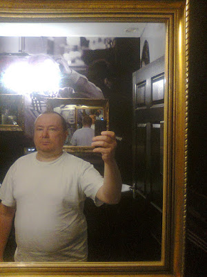
Plüssfejű vécé selfie a Holdudvar tunnelvégtelenjében
Pénzbehajtásról lenne szó? Mondjad, öcsém, ki az áldozat?
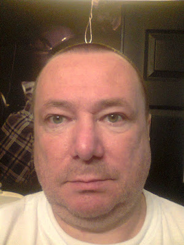
Ezt meg csak úgy ajándékba a cipóképű, plüssfejű vécés bácsitól
2015. július 16., csütörtök
- A BALATON AKARATJA
A Reichstag - a német parlament épülete - 1933. február 27-én égett le. Én pedig tegnap a balatonakarattyai strandon. A gyújtogatást egy magányos holland kommunista, Marinus van der Lubbe követte el, az én leégésemért viszont egyedül én vagyok a felelős, ha eltekintünk a Napocskának a szokatlanul erős sugárzásától.
Az úgy volt, hogy a Vonat megpályázott egy balatoni kirándulást, és megnyerte. Tavaly is így volt, csakhogy én akkor is dolgoztam ezerrel, és nyilván sokat szoveltam a Mikinél, nem hallottam hírét.
Szerda reggel már fél 7-kor felkeltettük egymást, akkor hallottam, hogy a Balázs - a Vonat főnöke - előtte való nap eligazítást tartott, és kilátásba helyezte a negyed 8-as indulást.
Kényelmesen elkészültem (vécé, zuhanyzás) addig, sőt a nálam lévő olajos halat is megettem egy párnapos margarinos zsemlével.
A Vonatból kifelé menet láttam a kondért tele limonádéval. Ha valaki előbb szól, elhoztam volna a szekrényemből a kétliteres flakonomat és megtöltöm vele, de hát nem szólt senki. Balázs adott egy kerékpáros kulacsot, ami kb. egyliteres lehetett, abba szedtem, és egy nylonzacskó (3 vagy 4 darab) szalámis zsemlét. Az volt a napi apanázs.
Fél 8 tájban indultunk, és elég hamar elértünk a velencei pihenőig (25km). Ott, mint kiderült, felvettük a buszsofőr feleségét és egy fiatal fiút és lányt. Hogy ezek milyen rokoni kapcsolatban voltak vele, az nem derült ki, de nem is érdekelt senkit.
Innen szintén nem messze, 71 km körül lejöttünk az autópályáról és jobbra fordultunk Akarattya felé. Tavaly is ide jött a brigád, sokak előtt nem volt már ismeretlen a hely.
Volt ugyan egy kilométerrel odébb egy szabadstrand, de mi a Bercsényibe mentünk. Belestem az ablakon, és láttam, hogy egy fiatal szemüveges csaj a pénztáros. B. két tízezressel meg némi apróval fizetett, ÁFÁs számlát kért, és néhány ezrest kapott vissza. Köbö 25 emberre ez nem is sok! Mindenki röhögött, amikor beköszöntem a kiscsajnak, mire én lebunkózam őket:
- Én vagyok az egyetlen, aki köszönt. Mit fognak mondani? Na, megjöttek a bunkó pestiek?
Persze csak tréfa volt, ki a fenét érdekelt, hogy mit gondolnak rólunk!
Maga a strand nem tűnt óriásinak, de így hétköznap szépen lazán elfértünk. Mert azért később jöttek még elég sokan.
Egész hátra mentünk, Tibor elővette a pokrócokat, és a fél csapat lehevert az árnyékba. Megettem egy szenyát az enyémből, meg az el nem jött emberekéből, aztán uzsgyi, be a vízbe!
Namost az uzsgyi, az úgy nézett ki, hogy amikor még bokáig ért a Balaton, akkor nagyon-nagyon hideg volt. Amikor térdig, akkor már csak simán hideg. A legfurcsább az volt, mikor a golyóimat nyaldosta, de aztán bejjebb merészkedtem és végül amikor belemerültem, már egészen barátságos volt. Előkerült egy Sunny Ball feliratú gumilabda is, azzal játszottunk, dobálgattuk egymásnak. Aztán amilyen felhős volt a nap eleje, úgy kisütött később.
Kijöttem a vízből és kerestem üres pokrócot, hát nem volt. A két szocimókus csak tizet hozott, és ezek igen hamar gazdára találtak, de Tibor megengedte, hogy az ő hatalmas rózsaszín lepedőjére - talán abroszára? - leheveredjek, ő meg elment a magával hozott sakk-készlettel. Hogy talált-e magának partnert, azt nem tudom, de a jelenlévő hajléktalanok, miután tisztában vannak a tudásával, biztos nem álltak ki ellene.
Főleg a lábamat akartam napoztatni, mert még Juliskámtól kaptam (és az nem mostanában volt!) egy háromnegyedes nadrágot, amit egy napig hordtam, hozzá tornacipővel. Ami kilógott a lábszáramból, az ez alatt az egy nap alatt szégyentelenül leégett, de olyan szinten, hogy még a mai napig is meglátszik. Ezeket akartam eltüntetni, de igen hamar megszáradtam és minél melegebb lett a hátam, annál inkább visszakívánkoztam a vízbe. Előtte azonban meghívtam magam egy korsó Dreherre. 4 kiló volt, plusz adtam 50 rupó jattot. Hűtött koriban adta a faszi a komlószörpöt, és nagyon jólesett!
Azt hiszem, háromszor voltam bent ebéd előtt, és mindig igen hosszú ideig. Tkp. én voltam a legtovább a tóban egész nap.
Az ebédet ott a strandon az egyik kioszk teraszán költöttük el. Ott mellettünk volt egy jópofa, hangár alakú étterem, de mi egészen pontosan a túlsó végébe avászkodtunk el, ami igen jót tett az étvágyunknak. (Na, mégsem olyan kicsi a strand?) Gondolkodtam egy ebéd előtti felesen, de olyan meleg volt, hogy inkább lebeszéltem magam róla.
Lassan hozták ki a levest négyszemélyes tálakban, és egy asztalnál nyolcan ültünk, ami azt jelentette, hogy akik a bódé felőli oldalon találtak helyet maguknak, azok megkapták, akik nem, mint pl. én is, azok meg nyelték a nyálukat.
Elvitték a levesestálakat, és még egy kis örökkévalóság után kihozták nekünk is. Akkor meg ők nézték, hogy eszünk, bár ezek már elcsapták az éhüket.
Második fogás rántott hús volt - egy szelet - és vegyes köret, vagyis rizs és sült krumpli. Savanyút nem szolgáltak fel, ami engem teljesen hidegen hagyott, mert nem szeretem, de a többiek közül bizonyára jópárnak hiányzott. Megfigyeltem, hogy rengetegen sóznak (a levesnél plusz borsoznak) kóstolás nélkül. Én ezt már a gyerekkorommal kinőttem, és nagyon jól is tettem, mert abszolút felesleges és káros. Ja, aki dohányzik, az nem érzi az ízeket, és a megemelt sófogyasztás abszolút nem tesz jót.
Amikor elszállingóztak, Balázs meg még két "srác" ott maradt iszogatni és dohányozni. Egy üveg Arany Fácánt vettem, gyenge 4 fokos sör, és leültem a szomszéd asztalhoz, amik a padok mellé voltak állítva. B. megkérdezte, hogy megbántam-e, hogy eljöttem. Dehogyis, sőt legszívesebben itt is maradnék, mondtam, csak leragad a szemem, a víz sokat kivett belőlem. Meghívott egy kávéra, és lesétáltunk.
Ja, és érdekes volt megfigyelni, hogy csak néhányan öltöztünk fel kajához. Tudom, hogy strand, meg Balaton, de... na mindegy. Szóval én frászt kapok attól is, ha valaki az utcán félmeztelenül sétálgat.
Kaja után már nem is tudom, talán kétszer voltam bent, de akkor már nagyon látszott a hátunkon a piros.
Az akarattyai strand délután árnyékba borul, alig lehet napos foltokat találni, legalább is azon a részen, ahol mi voltunk. Beálltam egy fa alá, hogy csak a lábszáram süsse a Nap, de persze szart sem értem vele. Az a pár perc, amíg volt hozzá türelmem, semmi ilyesmire nem volt elég
Aztán kimentem kakálni a vécére, és ott olyan kicsi szalvétaszerű papírok voltak egy hengerben, hogy ha nem ott látom őket a fülkében, esküszöm, nem jöttem volna rá, hogy mire használják. Élből két darabot vettem a kezembe, és egy pillanat alatt kilyukadt az egész, úgyhogy a következő néhány darab arra ment el, hogy az ujjaimat törölgettem.
14 "henger" volt és 15 piszoár, de nehéz elképzelni, hogy akár még hétvégén is teltház lenne itt. A mosdókat és zuhanyzókat nem számoltam meg, de ha így tettem volna, akkor is elfelejtem - kiverte volta a jéghideg víz a fejemből. És nem csap volt, ahol állítani tudod a hőmérsékletet, hanem csak egy gomb, mint a Miklós utcában, és ha megnyomod, egy darabig jön a víz.
Nagyon hideg volt! A seggemet kimostam, és egy kicsit a hátamat próbáltam hűteni, de túlságosan is jól sikerült volna, ha tisztességesen aláállok, úgyhogy inkább hagytam a francba.
Amikor kijöttem, szó szerint rázott a hideg. Rázott akkor is, amikor öltöztem, és akkor is, amikor annál a bódénál, ahol a korsót ittam, valami vízfélét kértem az útra. A faszi egy kétliteres Fantás flakont kiöblített, és szódát töltött bele. Tibor tüzet kért tőle, kapott egy skatulya gyufát csak úgy, de mondtam, hogy számolja hozzám. 170 forintomba került, ami semmi. Itt Pesten egy pohárral adtak volna ennyiért.
Visszafelé nagyon csöndes volt a busz, én pl. szinte az egész utat átaludtam. A velencei pihenőnél kitettek minket, a fószer hazadobta a családját, és jött vissza értünk.
A sofőrnek be nem állt a szája, szegény Balázsnak kellett hallgatnia egész úton. Addig-addig pofázott, hogy elfelejtett lekanyarodni az Egér útra, és visszafelé is beszoptuk a Budaőrsi utat. (Kifelé két sáv, befelé viszont csak egy, jó nagy szopás!)
Bent a Vonaton mindenkinek meg kellett mutatnom a hátam, szörnyülködtek rajta meg poénkodtak, de hát ilyen ez az állatkert, ezek így törődnek a jó arcokkal.
Misikém (aki alattam alszik) kérdezte:
- Állva fogsz aludni?
- Lábujjhegyen! - tromfoltam rá, és ezen jót röhögtünk. Pedig a lábaim ugyanolyan sápadtak maradtak, mint előtte voltak.
Szerencsére a mai napon is szabad voltam, így meg tudtam tenni azt, hogy vettem egy tubus Fenistil gélt, elmentem a dokihoz (szabin van hó végéig, de a Wallinger fogadott) és felírattam gyogyit, mert augusztusban úgyis elfogyott volna. Megkértem, hogy kenjék le a hátam, a többit majd elintézem, ahogy tudom. Az asszisztens csaj átvitt az Egri (a Horváth utódja) rendelőjébe és lekente a hátam. A doki is átjött, és közölte, hogy nem olyan vészes, egy nap alatt rendbe fog jönni, és meg is marad a színe.
Felmentem a Mikihez, és azóta is azt hallgatom, hogy milyen sms-eket írt a nője, meg ő miket írt rá, és hogy biztosan mire gondolt közben a csaj... Pedig jó lett volna kicsit pihenni!
2015. július 23., csütörtök
- UTÓ6ÁS
A múlt heti leégésem az nagyon durva volt. Nézzük, hol tartunk most!
Balcsin nem sokat költöttem, a kori meg az üveg sör, meg a végén a szóda és talán ha a gyufát is hozzám számolta a faszi. Két rugó alatt voltam jókedvvel, bőséggel. Ennél már a Fenistil is drágább volt.
Drazsé szerint a Fenistil gél a legjobb napégés (Napégés? Nem ő égett le, hanem én!) kezelésére. 2100 forintba került, és csütörtök reggel már úgy érkeztem a rendelőbe, hogy szeretném, ha lekennének. Jóval utána olvastam róla (Drazsé: Betegtájékoztatót nem olvasunk!), hogy vény nélkül is kapható. Magyarul: receptre is kiírathattam volna, és olcsóbban megúszom, esetleg utána visszamehettem volna lekenetni magam. Bakker...
Na de egész csütörtökön csak akkor egyszer volt kezelve a hátam. Ugyanis én nem érem el - még a karomat is alig tudtam felemelni, szinte hallottam, ahogy recseg a bőr -, és hát nem akartam, hogy a Miki hozzám érjen. Ahol meg elértem, az nem volt elég, és persze ott keletkeztek rajta a hólyagok, ahová nem hatoltam el. (Nem úgy, mint Fülig Jimmy, aki, miután közölte, hogy - Napoleonra hivatkozva - kenyérrel és vassal akár Kínáig is elhatol, Piszkos Fredtől azt a hozzászólást kapta, hogy "Ne nagyzoljál, Jimmy fiam, mert te már nem egyszer elhatoltál Kínáig egy falat kenyér és egy büdös vas nélkül is!")
Pénteken dolgozni mentem, és sikerült rávennem Tinát, hogy kenje le a hátam. Három alkalommal megtette, este viszont mégis csak a Mikivel ápoltattam le magam. Teljesen kiakadt, amikor meglátta a nedvedző hátam, meg a sötét rózsaszín és mélyvörös színorgiát. Lecseszett, hogy miért nem a körömvirág kenőcsöt használom, az mindenre jó.
Mindenre? Mennyit keresték a középkorban (is) ezt a szert! A mindenre frankó csodagyógyszert! Ahhoz képest elég csendben vonult be a köztudatba!
Mindegy, rá kellett jönnöm, hogy vagy az azonnali kezelés hiánya, vagy a Fenistil tökéletlensége - esetleg a kettő kombinációja - folytán sokkal rosszabb a hátamon a helyzet. Nosza, szombaton visszamentem a rendelőbe.
Az úgy van, hogy abban a rendelőben nem csak a háziorvosok dolgoznak, hanem egy ügyelet is van, és mit tesz Isten, a Katika, az "én" asszisztensnőm ott is asszisztál.
Épp ő nyitott ajtót, amikor becsengettem, és ő is kiakadt, amikor megmutattam neki a hólyaggal teli testecskémet. Azt mondta, már összefüggő sebek is vannak rajta. Mondtam neki, hogy éppen ma reggel hallottam a szomszéd kislánytól, hogy milyen jó leégés esetén egy pohár tejföl, de kiderült, hogy kifakadt hólyagokra talán az sem tökéletes megoldás. Talán menjek be a patikába, és ők majd adnak olyan szert, ami direkt égésre van. Így kaptam Panthenol habot 1300 rupóért, ami azért lényegesen olcsóbb volt a Fenistilnél, és állítólag nagyon jó tulajdonságokkal rendelkezik.
És fújni kell, azt talán én is meg tudom csinálni. Igaz, hogy utána bele kéne kenni a bőrbe, de majd a melóhelyen megoldjuk valahogy.
Tina szabadnapos volt. Azt a mindenit, hát most mit csináljak?
Várjunk csak! Tegnap, amikor megmutattam a hátam, ott volt Johanna is, egy miniatűr, fehér bőrű csaj fogszabályzóval, ő rögtön felajánlotta, hogy megmasszíroz. Akkor húztam le a pólómat, és mondtam, hogy most a legkevésbé masszázsra vágyom, inkább le kéne kenni.
Bementem a pohármosóba, és rákérdeztem, hogy vállalná-e. Igent mondott, és hogy ha lesz ideje, beugrik hozzám, én pedig mondtam, hogy addig találja ki, hogy mit kér érte. Csokis kekszben és lángosban egyeztünk ki, tekintettel arra, hogy többszöri alkalomról lett volna szó.
Igen, maradt a feltételes igeidő. Egész nap hiába vártam, nem dugta oda a fogszabályzóját. Amikor az ebéddel mentem hátra, ami 5 után volt, láttam, hogy a pultra támaszkodik és matat valamivel. Visszafelé, ahogy az üres tányért vittem, mosogatott. Egyik alkalommal sem szóltunk egymáshoz, ill. én köszöntem neki, de meg sem vártam a választ. Nincs mit tárgyalnunk.
A hátam egész nap nem volt lekezelve. Így kell elhanyagolni egy másodfokú égést!
Mikikém boldogan szörnyülködött, miközben belemasszírozta a hátamba a habot. Nem sajnálta az anyagot, és ez még reggelre sem szívódott be, csak ledörzsöltem álmomban a vállamról meg a mellemről az ágyon.
A reggeli zuhanyzás után ugyanúgy bevakolt, és elindultam gályázni. Miután szépen gyógyultak a sebek, de két éjszaka nem bírtam aludni, este bekent körömvirág krémmel, de olyan vastagon, hogy másnap szinte spaklival kellett levakarnom.
Ez ugye vasárnap volt. Hétfőn-kedden Claude-nak kellett mennie, és itt jön egy furcsa dolog: tőle is lenyúlták a kasszát, mint két héttel előtte csütörtökön tőlem, de ez nem a Ganyecz volt.
Ja, hogy ezt nem meséltem még! Hát az úgy volt, hogy azon a csütörtökön betelefonáltam, hogy késni fogok, de még fél 12 előtt beértem. A Ganyecz tajtékzott, hogy pont most, amikor csoport van, és mit képzelek, és le fogja húzni az egész napomat. Minderről persze nem tudtam, Tina mesélte, miután vele és Johannával nyalatták fel a vécét, hogy a vendégek használhassák. Egyébként a csoport már reggel 9 óta ott volt, nekem baszott bárki is szólni, hiszen akkor bementem volna már 8-ra, hadd ketyegjen az az óra, és tiszta vécét kaphattak volna, üres szemetessel meg mindennel, ahogy illik. Na és miután a klotyót nem lehetett megközelíteni, mert videóelőadás folyt, kiültem hátra, ahol dohányozni meg kajálni szoktunk, és a Ganyecz rámripakodott, hogy miért ülök itt. Felálltam, hogy elvonszoljam a belemet onnan, de felszólított, hogy válaszoljak.
- És - mondom - mi a fenét tudnék ott csinálni?
- Például kiviszi a szemetet - magázott a felindultságtól elcsukló hangon.
- Ott zörgök a zsákkal, miközben ezek videót néznek? Az jó lenne! De ha bárki szólt volna, hogy kilenctől csoport van, akkor nem pakolászok a lakásban a Miki barátommal, hanem bejövök előtte egy órával, és most nincs ez az egész!
Ez volt a fedősztori, hogy a lakást rámoltuk.
Tamás nagyon nagy ívben elkerült egész nap, nekem meg háromszor kellett szólnom a Dénesnek, hogy adja már ki a kasszát, mert már rég elment a csoport, a vendégek meg ki-be mászkálnak a klotyóban, teljesen ingyen. Na és amikor elmentem ebédelni, a Ganyé - mert nem tudok mást mondani - szépen lenyúlta a kasszámat és betette az irodába.
Amikor visszamentem és láttam, hogy mi van, rögtön levágtam, hogy csak ő lehet ilyen buzi, és kimentem megkeresni. Estillával beszélgetett hátul, nekem meg az ugrott be, hogy E. is tud erről a dologról, és szarul esett, hogy ennyire benne van. Mindjárt be is bizonyosodott, hogy igazam van, mert amikor odamentem - először persze úgy tettek, mintha nem vennének észre - és szóltam, hogy eltűnt a kassza, úgyhogy lezárom a gépet és beteszem a raktárba, E. mondta, hogy menjek vissza, majd ő lezárja.
Hagytak még főni egy darabig a levemben, aztán a Ganyé megjelent a kasszával, E. utána jött két méterrel, de előttem akkor már elásta magát. Amíg G. visszaszerelte a cuccokat - visszakötötte a kábelt, ami nyitja a fiókot - meg kiselőadást tartott arról, hogy de hiszen megbeszéltük, hogy ebédre beviszem a cuccot a sufnimba (nem igaz, mert nem beszéltünk meg semmit, csak ő mondta, és nem ezt, hanem hogy szóljak, hogy leváltson egy ConWork-ös diák, amíg kajálok - na persze, hogy megint össze-vissza pötyögjön be mindenféle hülyeséget, mint a múltkor is, és lett negyedmillió forint többletfelütés!), én azon gondolkodtam, hogy mennyire patkány dolog az, hogy csak addig számít a Ház érdeke (Juci: Ez is egy bevétel a Holdudvarnak!), amíg nem személyes bosszúról van szó egy melós ellen, mert akkor a többiek (Dénes, Estilla) bőszen asszisztálnak hozzá. Hányinger.
Szóval Claude-nál is lenyúlták a kasszát, de G. nem volt bent aznap. Ennek, úgy látszik, szép hagyománya alakult ki. Bezárták az irodába, és mivel hétfőn van meeting, jó ideig ki sem nyitották. C. meg nem tudta biztosan, hogy ott van-e, vagy valaki valóban lenyúlta a bevétellel együtt és azóta árkon-bokron túl van.
Na és este közölték vele, hogy holnap nem kell jönnie, meg nekem sem szerdától, mert betesznek egy diákot. Én pedig kaptam E.-tól egy Faszbúk üzit, hogy ne menjek a héten, majd vasárnap elküldi a jövő heti beosztásomat.
Ez persze találgatásra adott okot, és cseppet sem érezzük jól magunkat, hogy ilyen könnyedén C vágányra tettek, hogy ennyire pótolhatóak vagyunk, és ilyen váratlanul és gyorsan veszíthetjük el a munkánkat.
Na de őszintén: Ki nem szart volna be a helyünkben?
Ha lesznek fejlemények, ideteszem, de jelenleg még csak csütörtök hajnali 5 óra van. Ja, és a hátam? Köszönöm, már jobban van! Most hámlok ezerrel. Nem kenem semmivel, mert nem tudom, mivel kéne. És viszket. Na nem nagyon, csak hogy ne tudjak nyugodtan aludni.
2015. július 28., kedd
- A SZÖG A ZSÁKBÓL
Vasárnap 23 óra előtt pár perccel kaptam egy üzenetet a Faszbúkon. Estilla küldte, és azt írta benne, hogy hétfőtől mehetek dolgozni.
10:22-kor értem a HU elé. Krisz törölgette az asztalokat a Piknik Placc előtt. Üdvözlés, kézfogás, megkérdezi:
- Dolgozni jöttél?
- Igen. Egy hét kihagyás után már ideje lesz.
- Az jó, mert a ConWork-os vécésem már ott van.
Odébb húzódtam, mint a hagymaszag, és felhívtam Estillát. Azt mondta, valószínűleg a diák hazamegy, és én maradok, de beszéljem meg a Turi Lacival. Na, ez a hét is jól kezdődik!
11-ig ültem a dohányzóban - ez ott van "hátul", ahol "ebédelni" is szoktunk 5 után -, de Laci sehol. Hát mi a fene van már? Újra bementem érdeklődni az irodába, és kiderült, hogy már bent van, nézzem meg a vendégtérben. Elöl jött be, nem a portán.
Ott szívta a cigarettáját, ahol a pincérek szoktak állni. Lepasszolt a Kriszhez, hogy ő küldje haza a diákot. Na, mondom, az nekem egy harmincperces feladat lesz.
Bementem a klotyóba. A bejáratnál ott ült egy lány és a telefonját tapogatta. Kajla fülei voltak, de szépen mosolygott. Mondom neki, hogy mi van, és bementem pisilni. Közben megjelent Krisz is, szerintem Laci üzent neki valahogy, és áttette a csajt a pohármosóba. Hát, ott dolgozni is kell néha, nem csak a telefont bizgeráni, de 800 Ft/óra fizetésért talán még az is belefér.
Kb. fél óra késéssel "nyitottam", de nem is jött addig senki. Szolid napnak nézett ki. Nem is baj, mert kuponok nincsenek, mind eltűnt állítólag. Ez nekem eléggé tudományos-fantasztikus, de hát kénytelen vagyok elfogadni, amit mondanak. Aki fizet két kilót, az a blokkal tudja igazolni, hogy 200 Ft árkedvezményre jogosult.
Viszont 6 helyen papírt kellett töltenem, mert kevés volt, cserében az összes kéztörlő doboza tele volt (3-3 csomag volt bennük), alig lehetett kihúzni őket, cafatokban jöttek ki. A szappanok lefogyva, volt olyan tartó, amiben kb. 1 cm szappan volt! Összesen 8 izzó volt kiégve. Az ívek kitűnően látszottak a járólapokon, ahogy a koszos vizes mopot végighúzták az utolsó takarítás alkalmával. Nagyon elhagyatott benyomást keltett az egész hely!
Később esett, elég sokáig, és amikor abba hagyta, 6 körül bezártunk.
Na, aztán amikor bementem elszámolni, Estilla becsukta az ajtót, és közölte, hogy beszélni akar velem. Mondtam neki, hogy az jó lesz.
Tehát: a múlt héten azért voltunk C vágányon, mert ki akarták kísérletezni, másoknak mennyi a bevétele a vécén. Állítólag mindenkinek jobb volt, mint nekünk. Annyira, hogy Claude-ot nem is kívánják vissza, engem is csak azért tartottak meg, mert már olyan rég óta vagyok ott.
De hát valami ilyesmit mondott is Claude, csak szépen elfelejtettem. Odáig meg magamtól is eljutottam, hogy valamit talán felmérnek, csak nem tudtam, mit. Hát így utólag persze logikus, bár nincs igazuk, mert vagy sok kupont adsz el, vagy takarítasz.
Nagyon nehéz megtalálni az egyensúlyt a kettő között - bár hét közben talán nincs akkora forgalom, hogy ez gondot jelentsen.
E. rámöntötte az egészet, mindent elmondott vagy nyolcszor ("Ez egy gazdasági társulás!"), nem is jutottam szóhoz mellette. Megpróbáltam megmagyarázni neki, hogy két éve május elsején azért volt szuperbevételem, mert mindenkitől könyörtelenül kértem a két kilót. Na de annyi időm sem volt, hogy bemenjek feltölteni a vécépapírtartókat! És hogy az Edit, aki huszonezer forintot csinált 15-én (amikor én lementem Akarattyára leégni), egy büdös szót nem beszél a magyaron kívül. Így lehet! Mert hiába jön a külföldi, hogy ő itt fogyaszt, ha ez nem érti. Mutogat a táblára, ahol 4 nyelven ki van írva az ár, vagy a gép kijelzőjére, és szerencsétlen ha be akar jutni a slózira, hát ki kell csengetnie a zsét.
Nekem meg nem olyan régen azt mondták, hogy ne zargassam a vendégeket, sokkal többet ér a háznak, ha fogyaszt az illető. Nesze!
Böngészem a holland munkalehetőségeket. Vannak...
2015. október 9., péntek
- VANNAK NAPOK
Kedden felhívott a bátyám, hogy beszart a laptopja. Naná, ilyenkor szokott telefonálni! Ha látom kiírva a telefon kijelzőjén, hogy Bratyó T-geci, már tudom, hogy a számítástechnikai tudásomra lesz szükségem. (Azért T-geci, mert volt vonalas telójuk is, és ezt így mentettem el.) Mikikém tudja, hogy miattuk lettem földönfutó, így nem hívhattam ide, megbeszéltem vele, hogy másnap találkozunk a MüPában.
Miután ismét hajnal 4-ig voltam fent, mert többek között két DVD-t is megírtam másnapra, eléggé nehezemre esett a 8 órai kelés, de nagyon elhanyagolt voltam már. Hajat mostam, zuhanyoztam, volt még egy kis maradék kajám, azt beburkoltam. Vettem a Csarnokban utánpótlást, és úgy költöztem be a MüPába. A gépemet nem hoztam, mert esélyes volt, hogy ha nagyon szarakodik az övé, akkor azt el kell vinnem, és nem akartam megszakadni, mint a véres hurka, meg aztán van egy könyvem az életmódváltásról, azt ki akartam végre olvasni. Nagyon előrelátó volam, vittem vízforralót, hosszabbítót, kávészőkítőt, meg van egy kis maradék nescafém, azt is. 2 liter tisztított vizet cipeltem magammal, ez elég is volt, talán fél lityi maradt meg belőle. Még a Csarnokig sem jutottam, amikor Miki felhívott, hogy vigyek már neki két óriás túró rudit "ha nem gond". Kissé ingerülten válaszoltam, hogy nem tudom, hogy fog majd kinézni, ha most megveszem, és lehet, hogy csak későn jutok "haza". Jó, nem baj, ha nagyon nem fér bele, majd ő megpróbál venni. Így szokta sajnáltatni magát.
Miután a vécédeszka a szokásos állapotban volt, inkább elvittem a csomagomat és ott tettem le a Művészetek Palotájában - magyarul ott végre kikakáltam magam. Hogy ne zavarjon a nagy fény, vagy nem tudom, miért, kb. 2 perc után az automata lekapcsolja a villanyt. Ilyenkor ott ülsz a félhomályban (az ajtóval szemben ég egy lámpa, de hátul a két hengernél semmi) és vagy leveszed a pólód és dobálod, hogy a mozgásérzékelő visszakapcsoljon (vigyázz, ki ne essen a fülkéből, mert mehetsz utána letolt gatyával!), vagy szunyókálsz. Az utóbbit tettem.
Ezek ilyen ájulásszerű mikroalvások, amit nem tudsz irányítani, mert elkap, azt annyi, de a házmester a fejedben felébreszt egy pár másodperc múlva. Ilyenkor egy nagyon mély kútból kell felemelkedned, ami olyan fárasztó, mintha valóban kézzel-lábbal kéne kikapaszkodnod. És akkor egy néhány perc után elölről.
Éppen átmentem a mosdóba, amikor feltépték az ajtót és egy alacsony, kopasz biztonsági őr kukkantott be. Látta, hogy élek, egy pillanatra megbámult, aztán lenyelte, amit mondani akart és ugyanolyan hirtelen eltűnt.
Visszamentem az asztalhoz, és olvasni próbáltam. Aztán elszunyókáltam. Amikor felriadtam, megkerestem, hogy hol tartottam, és kezdődött elölről a végtelen ciklus. Időközben kétszer is készítettem laza kávét, de alig lett valamivel jobb. Kora délután eleresztettem egy bátortalan sms-t: "Szia! Hol tartasz?" Nem jött rá felelet. Szunyóka, olvasás. Este 7-kor voltam bátor felhívni őfelségét, hogy most mégis mi a frász van. Idegen hang vette fel, Tibiként mutatkozott be, és közölte, hogy a bátyám most evett. Valószínű, hogy most esziket mondott, de én így értettem. És hogy majd később felhív. Holnap felhív. A háttérből hallottam bratyót, hogy "holnap reggel felhívom!", ezt szó szerint továbbította. Letettük.
Kábé fél perc alatt összepakoltam. Hol volt már a fáradtság, a leküzdhetetlen alvási kényszer? Mondjuk ölni tudtam volna
Kettes vasaló, a Bözsihídon átszálltam egy buszra. Azt hiszem 112-es volt, rögtön utána jött a 8-as, de nekem ugye le kellett szállnom a BAH csomópontnál, hogy a benzinkúton vegyek két óriás túró rudit szállásadó gazdámnak. Mert ha nem, biztos megsértődik. Vagy elsírja magát. Vagy fejreáll és ketyegni kezd. A következő buszra 7 percet vártam, de legalább kiszellőzött a fejem. A két nasit a 290 forintos blokkal át akartam nyújtani Mikikémnek, de ő közölte, hogy nem kell már, mert a MOM Parkban a Sparban kapott, és képzeljem el, le volt értékelve, 99 Ft volt darabja.
Ekkor megszólalt a telefonom. Éva volt Münchenből. Igen, már visszament, de azért hív, mert ott nincs wifi... Illetve van, csak az ő laptopja nem fogja, és az öregasszony nem ért hozzá... Szóval kapott az email címére német nyelvi feladatokat, és azt NEKEM KELL MEGCSINÁLNI. Így bazdmeg, hogy nekem. És hogy kell.
Azt vettem észre, hogy kiabálok. Nagyon húztam a gyeplőt, így aránylag irodalmi stílusban tudtam visszautasítani, de hosszabb szüneteket kellett tartanom, hogy ne jöjjön ki belőlem nagyon csúnya szó. Megvártam, amíg beletörődik, hogy nem fogom helyette megoldani a problémáját, és udvariasan elköszöntünk.
Egen... Vannak napok, amikor nem érdemes kikelni az ágyból...
2015. október 21., szerda
- ZSUFI
Kicsikét zsúfoltak a napjaim mostanában.
Az úgy volt, hogy nyáron, amikor a Holdudvarban gályáztam, félrelökdöstem egy kis zsetont azzal a szent elhatározással, hogy ősszel ha törik, ha szakad, én kimegyek Európába. Ha más nincs, Bécsbe utcát seperni és hajléktalanszállón lakni, bár a Józsi, aki a Vonaton a mellettem levő ágyon lakik alul, volt, és nem minden nap kapott melót. Tehát az sem egy karrierlehetőség.
Beírtam a keresőbe, hogy hollandiai munkák, és ki is adott egy párat, de hamar rá kellett jönnöm, hogy ugyanaz a néhány ajánlat szerepel több weboldalon. Az egyik hirdető az Otto Workforce volt. Ezek nem csak oda, hanem Németországba, meg talán még Lengyelországba is keresnek munkaerőt. Mondjuk utóbbi helyre ki akar menni? Onnan is kirajzanak Európába. A német munkahelyekre legalább középfokú nyelvtudást kérnek, oda tényleg csak az menjen, aki biztos benne, hogy megállja a helyét! Az a két hely meg, ahol H-ba kerestek és nem kellett hozzá szakmunkás bizonyítvány, nem tűnt nagy választéknak. De elég, ha csak egy bejön, hát nem? :) Motivációs levelet, és magyar és angol nyelvű önéletrajzot kérnek. Beadtam. Azonnal jött is egy automata levél, hogy befogadták a dokumentumokat, aztán semmi.
Jó, hát Bécs sem egy szörnyű hely, és ha más kibírja az utcaseprést, hát én sem fogok belehalni.
Aztán pár nappal később: Nézzük már meg, hátha vannak új hirdetések! Ugyanazokon az oldalakon ugyanazok a szövegek, semmi változás. A kisördög (kisangyal?) azt ajánlotta, hogy jelentkezzek még egyszer, és bár nem szoktam ilyet tenni, elküldtem újra a két CV-t egy másik emil címmel. (Semmi rafkóság, csak arra gondoltam, hogy fenntartok direkt erre egy profilt.) Azonnal jött is egy automata levél, hogy befogadták a dokumentumokat, aztán semmi.
De mondjuk az osztrák főváros sem csúnya hely, és ha másnak is bejött az aljamunka, hát talán én is túlélem.
Aztán vagy egy hete kaptam egy telefont. Ottóéktól egy női hang. Pár mondatban felmérték az angol tudásomat, és megbeszéltük, hogy találkozunk.
- Csak tessék megmondani, hogy hol legyek és mikor, és én megyek!
- Mikor tudna bejönni hozzánk? Holnap jó lenne?
- Persze! Tessék mondani a címet!
- Reggel tíz?
- Hogyne! Mi a cím?
- Akkor diktálom. Győr...
- Tehát nekem holnap délelőtt tízre Győrben kellene lennem?
- Ha nem jó, adhatok egy délutáni időpontot is...
- Ja, neeem! Jó lesz az! Milyen utca?
Másnap Mikikémmel lehúzódtunk, mint a hagymaszag. Jó hasznát vettük a 90%-os kedvezménynek, amit a rossz szeme miatt kap.
Simán megtaláltuk az utcát és pont időben becsörtettünk a helyiségbe. Tudtam, hogy egy másik hölgy lesz bent.
- Tessék, miben segíthetek?
- Csókolom! D. A. vagyok Budapestről és tíz órára volt megbeszélve, hogy idejövök.
Pár szóban elmondta, hogy mi lesz a program. Lefénymásolta az angol nyelvű CV-met, amit vinnem kellett, meg 1-2 igazolványt. Vagy nyolcszor megkérdezte, hogy van-e targoncavezetői jogosítványom. Vagy nyolcszor mondtam neki, hogy sajnos nincs. Elém tett egy mikrofont és kérdéseket tett fel angolul, nekem meg válaszolnom kellett rájuk. Tkp. ugyanazokat kérdezte, mint a kolléganője a telefonban. Ki vagyok, mivel foglalkozom, mondjam el egy napomat, miért szeretnék Hollandiában dolgozni... Két perc volt az egész. Aztán falhoz állított a csaj és lefényképezett. Leültem egy asztalhoz, ahol feltettem egy fejhallgatót, amin angolul mondott 1-1 mondatot egy nő, nekem meg a gépen be kellett jelölnöm egyet-egyet az 5 válaszból. Egy kicsit torz volt és túl hangos, de nem ezért nem értettem egy csomó szót, hanem mert nem ismertem. Mindenesetre 2 pontot kaptam rá, de a maximum 3(!) volt, és a nő szerint egy csomóan az egyet sem érik el. Azért ez egy kicsit megvigasztalt. Utána magyar nyelvű tesztet kellett kitöltenem ugyanazon a gépen, ami abból állt, hogy volt valami 148 vagy hány állítás, és pontozni kellett 1-től 5-ig, hogy az mennyire illik rám. Egy csomó (mindegyik?) kérdés többször is fel lett téve, csak más-más környezetben. Pl. ami egy állítás volt, azt vagy húsz kérdéssel később tagadással fogalmaztak meg.
Közben bejött egy fiatal csaj is, azzal foglalkoztak. Fél füllel ilyeneket hallottam:
- Nekem jó a Karácsony meg a Szilveszter is. Háromszoros pénz!
- Kimész kétszer-háromszor, és veszel egy új autót.
Odaszóltam, hogy ki kell mennem vécére. Náluk privát klotyó van, ami azt jelenti, hogy nem engedi használni, de az utcában van egy jó kis tripó, oda kimentünk a Mikivel. Ittunk 1-1 pohár kólát, én kakáltam egyet, M. pisilt és visszamentünk.
Kaptam egy papírt, amin ilyenek voltak, hogy milyen céltaxikkal vagy buszokkal jutok ki, meg vigyek ágyneműhuzatot, erkölcsi bizonyítványt... Közölte, hogy egyszer még le kell mennünk a munkaszerződést aláírni, és valószínűleg utána való vasárnap kimehetek, másnap hétfőn kezdek is.
Szóval azóta kissé fel kellett gyorsítanom a dolgokat. 23-24-én lesz egy kétnapos jobb agyféltekés kreatív írás tanfolyamom (nem tartom, csak részt veszek rajta), 26-án megyek egy állapotfelmérésre, ahol megállapítják, melyik típushoz tartozom és milyen diéta és mozgás kell nekem, 27-én fogászat... Aztán várom a telefont, hogy menjek Győrbe.
Ez persze nem tűnik zsúfoltnak, de ha hozzáteszem, hogy ezeket a programokat is heteken keresztül szerveztem... Mert Mikikém olyan, hogy a szemét még ki sem nyitja, a szövegládát már igen, és be sem csukja addig, amíg el nem alszik este. Nem hiszed el, de nem tudok mellette semmire odafigyelni! Nem hallom a saját gondolataimat. Már alig várom a hétvégét, amikor jön az Andika, és mehetek a Vonatra aludni.
2015. október 28., szerda
- VISSZASZÁMLÁLÁS
A kreatív írás tanfolyam olyan gyorsan ment le, hogy nem győztem reklamálni: én még maradnék! :)
Két napra rá az állapotfelmérésen elég tré dolgok derültek ki: a sejtjeim energiaszintje 38%-os, ami piszok kevés, és úgy általában minden étkezésemet fordítva csináltam. Kevés szénhidrátot ettem sok fehérjével és zsírral.
Öregem, még a kávé is hízlal engem! Nem vicc!
Úgyhogy alig várom már Hollandiát, mert rendszert kell vinnem az életembe. Meg kell terveznem az egész napomat, mikor kelek, napi rutin, étkezések... Ezeket 4 óránként kell napi 4 alkalommal, szigorúan betartott alapanyag százalékarányokkal. Ha majd feljön a vitalitás szintem, szóba kerül a személyre szabott mozgás is: heti hányszor hány óra, ebből mikor és mennyi az erőnléti, és a kardio. Nem egyszerű, de ez a feltétele, hogy elérjem az ideális testsúlyomat, az ideális zsír- és izomtömegemet (előbbit csökkenteni, utóbbit növelni kell természetesen), de hát még el sem olvastam teljesen a papírokat, amiket kaptam.
Bakker, 18 kiló zsírt kell leadnom, főleg zsigeri területről! Durva, nem?
Na és a lényeg, illetve ami még hátra van: holnap ismét Győr, munkaszerződést aláírni, pénteken meg utazom! Először Németországba. Weeze, ill. Laarbruchen, ami talán pár száz méterre van egymástól, és mindketten vagy 2 kilométerre a Holland határtól. A biciklimet nem tudom kivinni, mert a 90 euró viteldíjon felül a bringáért még elkértek volna 40-et, és miután Mikikém nem bírta megadni a 16 rugót (ez forint), amivel hónapok óta még tartozik az 53-ból, ha a bicót is befizetem az európai útra, nem marad kajára.
Ez van.
A következő bejegyzés már külföldről lesz! :D
2015. november 1., vasárnap
- AAAND... ACTION!
A HOSSZÚ BÚCSÚ
Szegény Tinával megbeszéltem, hogy kedden találkozunk. Nem jött össze, mert a jó kis Péter, a fogtechnikus (a fogához ver minden garast) ott volt a Mikinél, és ugye én voltam a középpontban, mivel én megyek ki, és mesélni kellett ezerrel.
Aztán megbeszéltük a szerdát, de akkor meg az volt, hogy ezek ketten elmentek az Újbuda szerkesztőségébe reklamálni, én meg ahelyett, hogy összeraktam volna a cuccokat, amit ki akarok vinni, a gépen lógtam egész nap. Amikor megjöttek, felkerekedtünk, és kimentünk Budaőrsre.
Többek közt az volt a kikötés, hogy a fekete pólót és sötét/fekete nadrágot, amiben dolgozni fogok, nekem kell beszerezni. (A munkacipőt az OTTO adja. Vihettem volna a magamét, de ha egész nap a lábamon van, estére nagyon bebüdösödik. Hátha ők jobbat adnak!) Sokáig böngészgettem a Neten, amíg rátaláltam a Decathlonra, és Budaőrsön volt a legközelebb.
A 8-as buszra Gazdagrét felé kellett felszállni, úgyhogy a Péter a temetőnél le is pattant, ketten mentünk tovább. M. ragaszkodott, hogy használjuk a kettős bérletet, amikor csak lehet. Ez attól kettős, hogy ő ingyen jogosult a BKV járatokon utazni (a MÁV-on meg 90%-os kedvezménnyel), és egy kísérőt vihet magával. Beleegyeztem, de csak hogy ne sértődjön meg, hiszen Bőrs felé még soha nem találkoztam ellenőrrel.
8 pólót vettem meg 2 ilyen mackónadrág szerűséget, több mint 12 rugót hagytam ott. Miért nem fehér kellett nekik? A HU-ba így is egy csomót vásároltam, meg fehér gatyát is, tök jó lett volna. Na mindegy!
Kifelé jövet néztem a telefonomon az időt. Na, mondom, fél 6, még időgéppel sem érek oda fél óra alatt a Keletihez. Felhívtam Tinát, és mondta, hogy ő sem ér rá, mert mennek korcsolyát venni. Megállapodtunk, hogy jó lenne legközelebb Hollandiában találkozni.
Ráadásul M. mondta, hogy majdnem egy órát késett P., és amikor kérdőre vonta, először belehazudta a képébe, hogy 10 helyett fél 11-et beszéltek meg, aztán azt vágta oda, hogy de hát a Miki is szokott késni (ez nem igaz), és amikor M. megkérdezte, hogy miért nem telefonált vagy küldött sms-t, azt felelte, hogy az is kiadás. Erre Mikikém ott hagyta a fenébe. Én még pofán is vágtam volna, mert annyira vérforralóan zsugori, hogy nem álltam volna meg! De aztán valahogy utolérte a Péter, és együtt mentek a szerkesztőségbe.
Ott előadták, hogy M. nem kapta meg az október 7-én esedékes lapot, amiben hirdetett. Két hétig esett az eső, nem csodálom, hogy nem hordták ki, bár P. azt mondta, hogy ő megkapta. Jó, hát a Bartók Béla út eléggé frekventált, oda kimegy az ellenőr még esőben is, de a Sashegyre már nem hajlandó feljönni.
Persze a nő is mondta, hogy megjelent, olyan nincs, hogy nem, és amikor Mikikém szólt, hogy ő mégsem kapta meg, akkor azt mondta, hogy erről nem tehet. Ami egyébként igaz is, csak akkor miért védte az előbb a terjesztőket?
Aztán P. belenézett az újságba, és kijelentette, hogy nincs is benne Miki hirdetése, mire a nő hajlandó lett volna belemenni, hogy akkor kárpótlásul jelenjen meg két számban is. Miki úgy mesélte, hogy Péternek nem volt elég az ennyi, és itt egy kb. 3 centis darabot mutatott, hanem rögtön ENNYI kellett volna (ez mondjuk olyan 60 centi a levegőben mutatva). Mire a nő gyanút fogott, és megnézte a lapot, amiben persze benne volt a hirdetés.
Mondtam, hogy mivel ő - Miki - beleegyezett volna a kétszeri megjelenésbe, hiába erősködött P., szerintem a nő szemében ez lehetett gyanús: Miklós gyorsan el akarta sikálni, mielőtt kiderül, hogy mégsem maradt ki. M. persze szentül meg van róla győződve, hogy ezt P. cseszte el, ami azért igaz is. És hát ki tudja? Lehet, hogy a nő a Péter arcán vett észre valamit... Mindennek ellenére olyan mosolygósan és egyetértőn jöttek haza, mintha semmi konfliktus nem esett volna kettejük között. Ez nem barátság, hanem képmutatás! Annál is inkább, mert nem győztem hallgatni még másnap is, hogy milyen szemét ez a fogtechnikus.
Időjárásjelentés: Győrött az égbolt gyűrött. De mi nem azért voltunk ott csütörtökön, hanem hogy aláírjam a szerződést az OTTO WorkForce-szal.
Amint ezzel készen voltam, haladéktalanul bementünk a 30 méterrel odébb lévő tripóba és megittunk egy-egy felest a nagy ijedtségre, majd meglátogattuk a vécét, amivel a napi rutinfeladatainkat tettük maradéktalanná.
Sok időnk nem volt, a Volán pályaudvaron oda- és visszafelé is ittunk egy-egy krémkapuccsinót, aztán bementünk egy másik kricsmibe, és ott megismételtük az előbbi feladatot, azzal a különbséggel, hogy M. kupicát ivott, mert nem volt Unicum Szilva, és a klasszikust nem szereti. Nincs irodalmi érzéke szegénynek. :)
Ezek után átmentünk a túloldalra, ahol a Városházát, a Törvénykezés Épületét meg ilyeneket örökítettünk meg. M. telefonnal, én pedig frissen szerzett, bár használt FujiFilm Finepix S1600-as gépemmel. (12 megapixel, 15x optikai zoom.) Ez bridge kategória, ami ilyen félprofit jelent, és büszkén állíthatom, hogy még jövőre is lesz mit tanulmányoznom rajta. De egyelőre legyengült benne az elem.
Pár napja vettem egy négydarabos csomag ceruza aksit, de a töltőm csak kettőt bír egyszerre. Amikor feltöltöttem az egyik párat, úgy letettem valahova őket, hogy mire kész lett a másik pár, ezeket már nem találtam. 2 darabot felesleges lett volna kihoznom, mert mind a 4 kell a gépbe, ezért ott hagytam a francba. Kihajítottam egy rugót az ablakon, ahelyett, hogy vettem volna belőle két garnitúra alkáli elemet. :(
Visszajöttünk, és vásároltunk az Arénában a Tescoban. M. vett egy üveg ruszki pezsgőt, hogy megünnepeljük, hogy elmegyek a fenébe, én meg vettem egy flakon buborékmentes vizet és meglátogattuk vele a Drazsét, akit az urológián műtöttek. Nem maradtunk sokáig, mert a bátyját várta, és az is elég kiállhatatlan fickó, nem akartunk vele találkozni.
Váltottam 130 eurót. Nem volt több zsém, egy rugó maradt forintban, és az volt a tervem, hogy azon reggel kaját veszek. Nem volt annyi eszem, hogy ezt a Tuskóban megtegyem.
Onnan bementünk a Vonatra, hogy elhozzam a maradék cuccaimat a szekrényből. A Sanyi bácsi és a Tamás együtt jöttek ki beengedni, és hiába mondtam M.-nek, hogy nem jöhet be, benyomult mögöttem a kapun. Erre persze T. visszaparancsolta, és még nem is gorombán.
Na, persze mindenkinek el kellett mesélnem, hogy Hollandia, de először még Németországba kell mennem, de az nincs messze a határtól, és vagy ott maradok, vagy tovább küldenek, de még nem tudjuk, hogy melyik városban fogok dolgozni, azt sem, hogy hol lesz a szállás, a pénz az 8.70, de ez bruttó stb.
Sok göncöm nem volt amúgy sem, meg már egy kanyart elhoztam a múltkor, úgyhogy hamar végeztem. Mikikémtől egész úton azt hallgattam, hogy milyen paraszt volt az az illető, és hogy legszívesebben megfogta volna, és micsoda? igen? úgy kibaszta volna, de hát csak rám volt tekintettel, mert mi van akkor, ha azt mondja, hogy micsoda?, hát akkor nem engedem be!, de ő esküszik, hogyha nem engem nézett volna... És így, egész végig.
Otthon derült ki, hogy margarinos vagy zsíros kenyéren kívül nincs semmi. Akkor még jó ötletnek találtam, hogy nem vettem kaját, ne az én maradék pénzemből legyen már a vacsora is, amikor így is tartozik 16 rugóval. (Plusz a kamatos kamatok, amit nem győzött hajtogatni, amikor kölcsön kérte azt az 53 rugót. De erről azóta síri kuss van. Mint arról is, hogy mikor akarja megadni a "maradékot".)
Zsírosat ettünk, mert elárultam neki, hogy a margarin nem egészséges. Tudom, hogy nem fogja érdekelni, és ugyanúgy megveszi a kilósat, mert az olcsó, de az innen legyen az ő problémája. Sok hagymát zabáltunk hozzá, és lefeküdtünk aludni.
Mind a kettőnknek 7-re volt beállítva a telefonja, csak az övé késik egy pár percet, így én már az ágy szélén ültem és próbáltam nyitva tartani a szemem, amikor ő felkelt. Szart egyet, felkapta a ruháját, és elindult Szolnokra a kedveséhez, de persze közben be nem állt a szája, amitől még fáradtabb lettem. Ott maradtam egy rakás ócskaság meg szennyes ruha között, hogy eldöntsem, ebből mit akarok vinni az új életembe.
9 után indultam el egy dögnehéz málhazsákkal meg a háti tatyómmal. Előbbiben ruha, tisztálkodó szerek, könyvek, kenyér, utóbbiban laptop, fényképező gép, meg mindenféle műszaki marhaság, ami ugye szerintem nélkülözhetetlen. 10 előtt talán 4 perccel találtam meg az Opelt a Kerepesi úti Agip kútnál, de mondták, hogy várunk még egy srácot Szerbiából, csak késik a vonata.
20 percet késett, és ez nem volt elég arra, hogy elugorjak a Tuskóba venni valamit a kenyérhez. Az egyik sofőr mondta, hogy majd megállunk kaját venni, de nem voltam nyugodt. A kenyér a málhazsákban, üresen, én meg cukorkát szopogattam, hogy legyen valami kalória a pocimban.
Na, aztán 10:26-kor kigördültünk a kútról. Ez volt a cím, ahol ki kell majd tenniük:
Laarbruch H-Gebouwen
Euregio-park 22
Weeze - Flughafen
47652
Deutschland
Elöl a két sofőr ült, a középső sorban egy kopasz srác, a szerb, és egy csaj, hátul meg egy szótlan ürge meg én. Arról volt szó, hogy telt ház lesz, meg hogy felveszünk még egy lányt Ausztriában, akit kiteszünk Németországban. Mindegy, én örültem, hogy hátul lazábban vagyunk.
Elcsalinkáztunk Győr felé. Nini, hát itt voltunk tegnap! Nem lett volna egyszerűbb mára megbeszélni, levinni a putyerkámat és innen kiindulni? De mi befordultunk Abdába, és ott felvettünk egy csendes, mosolygós ürgét, aki beült mellém. Aha, hát ha Ausztriában felvesszük azt a lányt, akkor tényleg totál tele lesz a 9 személyes mikrobusz!
Kb. 2 órával az indulás után léptük át a határt. A sofőr hátra szólt, hogy kapcsoljuk be az öveket. Az abdai ürge megkérdezte, hogy szokták-e itt nézni, mondom neki, hogy nem hiszem, bár én 5 éve voltam itt utoljára, és akkor is éjszaka.
Nagyon sokat csalinkáztunk! Ha visszanézitek az előző indulásomat (idegenben.mindenkilapja.hu), látjátok, hogy az osztrákokon 2 óra alatt átrohantunk. Most nem, nekem legalább is marha soknak tűnt, amit eltotojáztunk. Mindenhol megálltunk, kiszálltunk... Mondjuk legalább tudtam pisilni... A többiek megetették a rákot (cigire gyújtottak), a sofőrök tankoltak...
Ja, valahol A.-ban egy olyan helyen álltunk meg, ahol volt egy Aldi is. Na hát ide beszabadultam, bár nekem jobb lett volna, ha a forintot költöm el. Vettem egy 40 dekás szalámit, egy Brie sajtot, egy doboz virslisalátát, meg egy Milka kekszes csokit. Nem egészen 8 euró volt, ami persze nem olcsó, ha forintra átszámítom, de nem bántam. Minden nagyon finom volt, bár a sajt egy kicsit nyers ízű volt, de ne válogassunk! Rengeteg nagyon jó sajtot kajáltam az utóbbi időben, ennyi belefér.
Átmentünk az osztrák-német határon, amit azért furcsálltam, mert még nem ült bent a csaj, akit ígértek. Illetve mielőtt a határra érkeztünk volna, már nagyon belassult a sor, lépésben haladtunk vagy másfél kilométert. A migránsok miatt volt a felhajtás. Belenéztek az autókba, különös figyelmet fordítva a furgonokra és mikrobuszokra, és ahol olajos képű arabot láttak, azt a kocsit kiszedték.
Na, nagy nehezen mi is sorra kerültünk, és valami félreértés miatt - jobb oldalt a zsaru intett a piros botjával, talán hogy menjünk tovább, a mi sofőrünk meg beállt a vizsgálandó kocsik közé - mi is beleestünk az igazoltatásba. Mire a másik vezetőnk, aki a jobb oldalon ült:
- És az a vicc, hogy nem is kellett volna kiállnunk!
Mindenkitől elkérték a személyit (ID card - ájdí kárd), és hátra mentek beszkennelni vagy telefonon leadni, nem tudom, nem láttunk hátra. Aztán visszajöttek, és a mellettem levő faszinak, aki utoljára szállt be, intettek, hogy szálljon ki. A csaj, aki előtte ült, mondta, hogy angolul segít a tolmácsolásban, ha kell. Azt mondja neki a zsaru:
- Do you translate for him?
A csaj nem értette.
- Fordíts neki! - fordítottam neki.
Hátra mentek, hogy a fószer vegye ki a szatyrait, és akkor láttuk utoljára. Nekünk visszaadták a kártyákat és mehettünk tovább.
Mondja a másik sofőr, hogy volt olyan, hogy egy csajt meg egy srácot vitt, amikor beleestek egy ilyenbe. A srácnál nem volt semmilyen papír, a csajnál egy darab diákigazolvány. És vagy fél éve dolgoztak odakint. Amikor kiemelték őket, teljesen fel voltak háborodva, aztán azt akarták, hogy a Presztízs Taxi vigye majd őket tovább. De hát hülye lett volna megvárni, mire kiderül, hogy mi történik velük! Egyébként is biztosan visszatoloncolták őket Magyarországra.
Furcsa volt, hogy Németországban vagyunk, és nem az autópályákon megyünk, hanem a kertek alatt. Ilyen kanyar, olyan kanyar, körforgalom körforgalom után, faluba be, onnan ki, hegyre fel, aztán még feljebb... Egyszer csak megállunk egy négycsillagos hotel előtt, és beszáll a lány, akiről már indulás előtt szó volt. Újra Ausztriában voltunk! Ha nem megyünk át a határon, hanem le a csajért, és a kertek alatt jutunk át a svábokhoz, ahogy most is visszafelé is, a faszi nem bukott volna le.
Este fél 7-kor már töksötét volt. Biztosan még előtte is jóval, de én lépten-nyomon elaludtam. Amikor fent voltam, jókat dumáltam a nőszeméllyel, aki pont mellettem ült. Téptünk jó sokáig, és valami éjjel háromnegyed egykor tettük ki Arngrün - vagy micsoda - utolsó házánál. Itt a kedvese várta - volna, ha nem feküdt volna le aludni. 4 hónapja nem látták egymást. Hát, nem is tudom... Nem csodálom, hogy a német csajok imádták a magyar pasikat! Én meztelenül a kapuban állva vártam volna, csak hogy mielőbb egymáséi lehessünk.
Mentünk-mentünk nagyon sokat, egy csomó helyen megálltunk pisilni meg cigizni meg tankolni, és valahol hajnalban kiszállt a szerb. Aztán ugyanez sokáig, és reggel fél 7 tájban valahol felvettünk egy másik nőt. Ő mellém ült be, így előttünk maradt a foghíj, hátul meg tele voltunk. Mentünk, szunyókáltunk, aztán egyszer csak ott voltunk Weeze-ben. Áthajtottunk egy fém transzparens alatt, ami afelől biztosított, hogy a weezei reptéren vagyunk (még jó, hogy nem az volt rajta, hogy Arbeit Macht Frei), de gépeket nem láttunk, csak baromi lepukkant és csúnya színekre mázolt házakat. Előbbiek zárva voltak, utóbbiakban nyilván laktak. Délelőtt háromnegyed 10-kor kitettek egy fémrács kerítésnél, amit szemmel láthatólag hevenyészve húztak fel a sáros út szélén. Ez egy menekülttábor volt, láttam pár színes bőrűt, de inkább csak a hangokat hallottam. A bejáratnál, ami egyszerűen a kerítés félméteres hiánya volt csupán, állt egy tábla, hogy német Vöröskereszt. Egy arab(?) és egy fehér pasi fogadott ott, és ők mondták, hogy az OTTO irodáig még tovább kell menni, de onnan már látszottak is jobb oldalon a házak.
Bementem egy Office feliratú ajtón. Égtek a fénycsövek a plafonon, de a folyosóról nyíló összes ajtó zárva volt. Lepakoltam a cuccom. Találtam egy konnektort, és bedugtam a telefonom tölteni. Aztán kimentem körülnézni. Jött egy srác, azzal szóba elegyedtem. Mondom neki angolul, hogy most érkeztem, és nem tudom, ilyenkor mi a teendő. Mondta, hogy menjek be az irodába, ott van a nemtom milyen manager, a Milan, majd ő eligazít. Mondtam, hogy senki nincs bent. Beavázkodtunk, ő bekopogott az egyik ajtón, benyitott, de látta, hogy zárva, erre azt mondta, hogy várjam meg a Milant, és elment.
És valóban, még egy órát sem kellett várnom, és megérkezett!
Ezek a lengyelek szeretik éreztetni, hogy te csak egy probléma vagy. Megkérdezte, hogy mit mondtak nekem Magyarországon. Mondtam, hogy tulajdonképpen semmit. Ezt a címet adták meg, meg ezt a telefonszámot, ami ki volt kapcsolva. (Nem is mondtam nektek, tényleg hívtam, és így volt.) Hát az a gond, hogy nekem vasárnap kellett volna érkeznem. Mit mondtak? Azt mondták, hogy igen, vasárnap fognak várni, de mivel az összes céltaxinak pénteki indulása volt, ami szombati érkezést jelent, nem lesz probléma. Közben azon törtem a fejem, hogy mi a fenéért kell ezeket a felesleges köröket megfutnunk. Haza úgysem küldhet, ha küldene, úgysem mennék, és ha nagyon kell, itt a folyosón elalszom a két pokrócom között, ez még nem ismer engem!
Aztán újra: Mert az a probléma, hogy vasárnap kellett volna érkeznem. Igen, de sajnos csak pénteki indulások voltak. Erre adott egy névjegykártyát, amin egy cseh muki neve volt, hogy ő vállal fuvarozást, akár Magyarországról is, és szombaton indul, ami azt jelenti, hogy vasárnap ér ide. Megköszöntem és eltettem, de... Nem tudom, mit kezdjek vele. Menjek haza és jöjjek ki megint ezzel a cseh faszival, hogy vasárnap érkezzek?
Az a probléma, hogy én nem itt fogok dolgozni, hanem Droomgaardban, és ma itt kell aludnom. Vártam, hogy feldolgozza ezt a megoldhatatlannak tűnő gondot és valami elfogadható mentőötletet találjon hozzá. Adott is egy kulcsot, a 49/A épület 11-es cellájához.
Ez egy egyágyas cella, és az első dolgom volt elővenni a hosszabbítót. Két konnektor van ugyanis, az egyik a mosdó mellett, és egy illatosító van beledugva, a másik meg az ágy mellett, és egy lámpa lakik benne. Ez utóbbi helyére dugtam be, és lett 4 lukam. A lámpa mellé rögtön a laptopot csatlakoztattam, de szomorúan kellett látnom, hogy nincs wifi hálózat, tehát ezt majd egy későbbi időpontban fogjátok megkapni. Kajáltam, vécéztem (egy közös vizesblokk a folyosó közepén, a két folyosón összesen 18 cella), kávéztam, és itt értem utol magamat.
A választék bő, úgymint: az office mellett van 1 közért, ott vehetek elemeket, és fényképezhetek a környéken, vagy maradok itthon és olvasok, esetleg a gép mellett, és
- filmet nézek,
- zenét hallgatok,
- játszom stb.
Talán kitaláltátok már, hogy a harmadik a legesélyesebb. :D
Következő bejegyzés valszeg Droomgaardból, de előbb várjuk meg, hogy odaérjek! Holnap reggel le kell adnom a kulcsot, és az iroda melletti épületben Katarzsinát keresni, aki elvisz majd.
Egyébként patyolat tisztaság van a szobában, a szekrényben egy rakás vállfa - vagy inkább vállműanyag :) -, meg egy mágikus henger, amivel a szöszöket szeded le a ruhádról, képek a falon stb. Szóval tök jó a hely, csak a falak piszok vékonyak, és... mindenhol csupa lengyel! :O (pótlás: 2 magyar hangot is hallottam, egy srácét meg egy csajét, de nem megyek át, sztem van elég bajuk nélkülem is)
Remélem, odaát kisebbségben lesznek!
UGYANAZNAP ESTE
Na, azért Laarbruch bemutatkozik!
Tudjátok, van az a baromi nagy trombita, ami olyan hosszú, hogy a pasas a feje köré tekeri. Úgy hívják, hogy tuba. Esküszöm, nem hazudok! A szomszédban egy faszi - gondolom, hogy nem nő - ezen játszik.
És nem ám akármit, hanem megy magnóról vagy miről valami rap, és azt kíséri!
Egy másik szomszédban - mondom, holt vékonyak a falak - egy magyar csajt hülyítenek a lengyel srácok. Angolul dumálnak, hogy pontosan mit, azt nem értem, de nem is érdekel. A srácok hangosan röhögnek, a csaj vihorászik.
Kint, talán a lengyel boltnál (másmilyen bolt nincs is itt) óbégatnak a futballhuligánok. Hogy milyen nyelven, azt nem vágom, de megy a héj-o-o-ó-o! ezerrel. Talán focimeccs van, talán csak be vannak baszva.
Most este fél 8 van és csönd. Talán a sötét miatt hallgattak el. Mint amikor a kalitkára ráborítják a takarót.
Áldott sötétség! :)
UPDATE
Este 10 után! Amikor már ÉN is lefeküdtem! Jönnek-mennek, hangoskodnak, csapkodják az ajtót. Olyan vékonyak a falak, hogy úgy rémlik, mindent az én ajtóm előtt beszélnek meg.
Bejön egy-két (három?) pasi, meg egy csaj. A csaj nem bír halkan beszélni, és MINDENEN, amit ő vagy más mond, röhög. De ilyen röhögést még nem hallottatok! Nyerít, üvölt, sikkantgat egyszerre.
Néha kiszólogatok, hogy "Fogjátok be a mocskos pofátokat!", vagy "Most már kimegyek és mindenkit összeverek!", aztán alszom tovább.
Miért, jaj, miért? :P
HOME, SWEET HOME
Másnap reggel már 8 előtt fent vagyok, megelőzöm a telefonom - ezt használom ébresztőnek.
Tegnap este levágtam a szakállam - no nem volt túl nagy, de a borotva nem vitte volna el -, és 17 mm-re levágtam a hajam is. Szépen mindent eltüntettem a mosdóból és a padlószőnyegről is, sehol egy morzsa, szőrszál, semmi! Zuhanyozni lusta voltam, gondoltam, majd ma reggel. Hát, hajat azt nem mostam, egy gyors zuhany fért bele. A... hm... napi rutin elmaradt, mert pont előttem ment ki valaki a vécére, és a nőit nem akartam/mertem elfoglalni. Később meg nem volt rá idő! Azt hittem, mindenre lesz, de neeem... Mikor tanulom már meg, hogy reggel nincs idő semmire?
Összekaptam magam, lekapcsoltam a radiátort (nem volt melegem!) és kinyitottam az ablakot, ahogy volt, és visszavittem a kulcsot. Átmentem az irodával szomszédos épület elé megkeresni Katarzsinát, és rájöttem, hogy nem késtem 10 percet, inkább korán is jöttem.
Rengeteg ember állt ott csomagokkal, és nagyjából türelmesen várakoztak. K. egy csinos (roppant csinos!) fiatal csaj, és egy jegyzettel a kezében jön-megy, intézkedik, mutogat, telefonál, beszél, és mindezt kábé egy időben. És bazdmeg, rajtam kívül mindenki lengyel!
K. dumál mindenkivel, sofőrökkel, melósokkal, és mindenkivel lengyelül. És mindenki érti.
Én vagyok egyedül, aki nem lengyel!
Kezdtem magam elveszettnek érezni egy kicsit.
Na jó, odamegyek, a hátamon egy Bundeswehr málhazsák (Rossz döntés! Gurulós bőröndöt hozzál!), a kezemben hátizsák meg egy kétliteres flakon, sajnos már a csapról megtöltve. Az otthonról hozott tisztított víz elfogyott, hiába spóroltam vele.
- Good morning! Are you Katarzina?
Rám mered.
- Yes.
- I am A. D. from Hungary and I want to go to a city with D.
Hülye! Csak bele kellett volna nyúlni a zsebembe, ott a papír, de hát tele van a két kezem...
Persze röhög.
- You don't know...
- A city with D.
- What?
- A city which name starts with D... letter.
Nekiáll sorolni a városneveket. Droomgaard-nál megállítom.
- Are you sure?
- Er... I don't know.
- Don't you sure in it?
- I think I'm sure.
Persze azért vannak körülöttünk egy csomóan, és persze mindenki érti, hogy miről van szó. Röhögnek, egymásnak mesélgetik, hogy a faszi nem tudja, hogy hova akar menni. He thinks he is sure. Végighullámzik a tömegen Droomgaard neve.
Na, ez a tizenöt év is jól kezdődik!
Na jó, nagy nehezen elkezdődik a kiosztás. Aki ide megy, az menjen ehhez az autóhoz, aki odamegy, az ahhoz... Engem egy kék Renault-hoz irányít. Bepakolok hátra és beülök a harmadik sorba. Egy fiatal pár ül mellettem. Egyáltalán itt mindenki fiatal! Direkt 35 évig kerestek embert, nem is tudom, hogy hogy kerülhettem bele. Az angolom nem az a perfekt, valószínűleg az volt az oka, hogy tudják, már dolgoztam Hollandiában. Egy fiatal, csinos csaj ül be, ő lesz a sofőr. Sajnos lengyel. Azért mondom, hogy sajnos, mert nagyon jól néz ki! Tulajdonképpen a legjobb nő, akit láttam, mióta kint vagyok. Persze nagyszájú, vagány, rágógumizik, egyik cigit szívja a másik után, vezetés közben is. Két tüdővész között energiaitalt iszik. Istenem, miért kellett megöregednem? Egy ilyen csaj mellett nem bírnám a pörgést!
De az indulástól még messze vagyunk. Ide megyünk a kocsival, oda megyünk, kiderül, hogy egy egész városka van itt kétszintes házikókból. Gyanítom, hogy ez egy katonai reptér lehetett, és ezek katonai barakkok voltak, másképp nem tudom elképzelni a sok egyforma házat. A házak között gáztartályok, nyilván erről megy a fűtés is. Néhol gyerekbiciklik, néhol kerti székek... Talán vannak itt, akik hosszú tartózkodásra rendezkedtek be.
Na, nagy nehezen elindulunk! 9 helyett fél 11-kor.
Szinte másodpercre 11 órakor lépjük át a német-holland határt. Hálaimát mondok. Aztán még egyet. Egyre jobban elérzékenyülök attól, hogy ismét Hollandiában találom magam.
Jellegzetes házak, ápolt előkertek, minden olyan rendezett. Mintha egy mesefilm díszletei lennének. Pedig itt emberek laknak, dolgoznak, élik az életüket. A pázsit frissen nyírva, állatok (ló, tehén, birka) legelnek. Egy öregúr az egyik csatorna partján bóklászik, hátrafordul, szemével keresi a kutyáját. Az felkapja a fejét, megbilleni a farkát, jelzi, hogy itt van.
Mi a fene olyan különleges ezen? És miért van az, hogy én mégis annyira vágytam ide? Ciki, vagy nem, törölgetem a könnyeimet. Na nézd csak! Vénségemre milyen szentimentális lettem! Vagy mégis lehet ebben a helyben valami, ami jobban vonz másnál?
Először Boxing-ba megyünk. Keskeny, labirintusszerűen kanyargós utcák, még keskenyebb járdákkal. Tényleg, mint egy film díszlete, ahol elmérték az arányokat. És mégis minden a helyén. A csaj ki sem száll, egy pasi meg egy nő várja egy ház előtt, nyilván nekik telefonált az előbb, azért jöttek ki elé. Pár szót váltanak, talán visszafelé beugrik hozzájuk, vagy hasonló. Megyünk tovább. El-elszunyókálok, aztán egyszer csak megállunk egy murvával felszórt parkolóban. Páran kiszállnak.
- Where can I piss? - kérdezem az egyik utastársamat, egy nagydarab srácot. Bizonytalan mozdulattal körbemutat.
- Anywhere? - kérdem.
- Anywhere! - biztosít. Összeröhögünk.
- Thanks!
Átmegyek a parkoló túloldalára, elbújok egy mikrobusz mögött és pisilek. Sietek vissza, nehogy itt felejtsen a csaj - a lengyel sofőrökkel kapcsolatban rossz tapasztalataim vannak. De nem, látom, hogy a kocsi hátsó ajtaja nyitva, akik kiszálltak, pakolják a bőröndjeiket. Visszaülök. Egyszer csak a mellettem ülő srác mond valamit a vezetőnknek, mire ő odafordul hozzám, és közli, hogy ez Droomgaard. Ez az? Ez igen. Nem nagyon hiszek neki, de kiszállok. Egy drótkerítés előtt állunk, bent fehér házikók. Olyanok, mint a lakókocsik, csak nincsenek kerekek alattuk. De rengeteg! Aha, ilyet láttam az egyik küldeményen, amit a győriektől kaptam. De arról nem volt szó, hogy egy lakótelepnyi van itt ebből! Kiveszem a pakkom és odaállok a többiek mellé. Visszasandítok a kocsira, nem indul. Lehet, hogy nem is átverés? Szedelőzködnek, és elindulunk befelé. Én nem szeretnék itt lakni! Basszus... De muszáj lesz! Jobb, mint a Mikinél, és jobb, mint a Vonaton. Megkérdezem a mellettem battyogót, hogy ez Droomgaard? Azt mondja, azt hiszi, igen. Na hiszen!... De gondolj arra, hogy mennyit fogsz keresni! Egy csomó pénzt félre tudsz majd tenni, bár még nem tudod, hogy mire, de hát majd kitalálod... És a nyugdíj! Jó, most még nem izgat, de majd akkor jól fog jönni... Fúj, de ronda hely! Ilyennek képzelem a 60-as évekbeli NDK-s üdülőket.
Végül is nincs tömegnyomor. Elég szellősen vannak a házikók (ezek a bungalow-k a prospektus szerint), közöttük füves részek. Az utak most egy kicsit sárosak, de hát november első napján milyenek legyenek, ugye... A második utcácskába fordulunk jobbra, és a szemben lévő ház előtt megállunk. Nem figyeltem, hogy egy srác kijött elénk, vagy teljesen üres volt-e a ház. Mindenesetre előlem az egyik lengyelt beküldik. Egy köpcös fiatalember bermuda gatyában odajön - igen, ez itt csatlakozott hozzánk, ő lesz a szállás manager - és angolul megkérdezi tőlem és a mellettem állótól, hogy együtt vagyunk-e. Mondjuk, hogy nem. Először engem küld be ugyanabba a házba, aztán a másik srácot is. Végül is jól jártunk, a lengyel egy földijével lakik a kétágyasban, mi a két egyágyasban. Később kiderül, szlovák a gyerek, aki mellettem pecózik. Itt is tök vékonyak a falak, de hát ezt ebben az országban meg kell szokni. Rotterdamban a Schermlaan-on is olyan érzésem volt, mintha a szobámon keresztül ment volna dolgozni a szomszéd házban lakó bolgár család.
Wifi van, de nagyon tré, szakadozik. (Már hallom, ahogy mondjátok: Nem baj, Dühöske, majd te megcsinálod! :D ) A fiatalabb lengyel piával kínál, elfogadom. Koccintunk mind a négyen. Maxnak hívják. A szlovákot Martinnak, a rangidős (9 éve van kint H.-ban!) Arek, vagy micsoda. Nem Marek, mert rákérdeztem. Na mindegy. Gyors egymásutánban lenyomunk még 3 pohárral. Kicsit összeakadnak a szavak a számban, Maxszal dumálunk, a másik kettő eltűnik valamerre. Aztán előkerül még egy üveg a hűtőből. Aztán megjönnek Marek haverjai, akiknél 52 fokos pálinka van. Hát mi van itt?!
Utóbbiaknál hamar elástam magam. Amikor megkérdeztük, honnan vannak, az egyik - pont, aki a piát hozta - mondta, hogy Bánská-Bystrica. (Ugye így írják?) Erre rávágtam, hogy az is magyar terület volt. Amikor rám merednek, nem értem a csodálkozásukat, és magyarázólag hozzáteszem, hogy 1920 előtt. Hát nem is kaptam pálinkát! Csak azt vettem észre, hogy mindenkinek töltenek, csak nekem nem. Először azt hittem, véletlen, de a harmadik körnél már kapcsoltam, hogy neeem, ez nem az. Mindegy, kint maradtam a bungi előtt, részt vettem a beszélgetésben, nagyon rendes gyerek voltam.
Hogy mi? Hát igen. Mert Max dumált velük, és ő nem tud szlovákul, a szlovákok nem tudnak lengyelül, és angolul szövegeltünk. Végül éppen Martin kínált meg az ő piájából, és tulajdonképpen akkor zizzentem rá, hogy én direkt nem kapok a haverjától, és pár perccel később azt is kistudíroztam, hogy miért. De nem bánom. Nem hiányzott, és különben is, ha már kimondtam, nem fogok elnézést kérni érte. Kérjenek azok, akik kitalálták Trianont!
Most bekopogott a köpcös srác, és közölte, hogy akinek el kell intéznie a SOFI számot, az holnap reggel 5:40-kor legyen kint a parkolóban.
Hogy mi?? Akkor még a madár sem száll! Hova akarnak vinni olyan korán?
Na jó! Meg kell próbálnom felmenni a Netre és ezt feldobni, aztán beájulok az ágyba és sürgősen kialszom magam!
Yo 8! (Jó éjt!)
Kivonat az egyik brossúrából:
"Miközben Ön valamelyik szállásunkon él, számos lehetősge less szabadidejének aktív eltöltésére. Ha pl.mosni szeretne, akkor minden szállásunkon van mosógép..." (sic)
- Drágám, mit szeretnél csinálni így munka után?
- Hát ööö... mosni! Olyan régen nem mostam!
:D
2015. november 4., szerda
- HALADUNK
HALOTTAK NAPJA
Tegnap egy kicsit összecsaptam a dolgokat, mert hogy marha korán kellett kelni.
Na és azért kellett korán kelni, mert elvittek Venlo-ba a SOFI szám miatt. Senkinek sem volt rajtam kívül, és nekem nem is kellett volna mennem, ha a Kati csajék megtalálják, hogy hova tüntették. Majd egyszer ezt is megírom, mert még mindig bosszantanak az ezzel kapcsolatos dolgok.
A mellettem levő szobában lakó szlovák srác, Martin tegnap egy kissé bebaszott, de nála sokkal részegebb volt a kisebbik lengyel, Max. Bemaxolt rendesen. Este ki is ment hányni, bele a mosdóba, a padló is tiszta ragacsos lett, de még az ajtó is.
Szóval Martinnal kellett kimennünk a parkolóba hajnali 5:40-re. Kint is voltunk, és ott állt már 3 lengyel, de jöttek még nyolcan, ahogy múlt az idő.
Az idő múlt, a lábam egyre jobban fázott a tornacipőben (na, ki olyan hülye rajtam kívül, hogy ősszel egy tornacsukában megy el új életet kezdeni?), de kocsi csak nem jött. Ami jött, azzal is mások mentek el máshova, talán dolgozni, nem tudom, mert nem értek lengyelül, és ezek szinte kizárólag azok. Sokan nem is beszélnek semmilyen más nyelvet, és simán beleférnek itt a melóba. Mi, kisebbségek (szlovákok, magyarok, meg a fene tudja, talán nincs is más, illetve valahol láttam kiírva egy olasz(!) női nevet) rákényszerülünk, hogy valami emberi hangon szólaljunk meg. Persze nem árt megtanulni lengyelül, így legalább tudod, mikor dumálnak rólad. Annyit már megtanultam, hogy a pierdole azt jelenti, hogy (meg)baszni. Ja pierdole - gondolom - az, hogy megbaszom. A faszt is megtanultam tegnap, csak elfelejtettem.
Aztán befutott egy kisbusz, ami elvitt 6 embert, köztük Martint is. Erre odajön hozzám egy fószer, a kezében valami fekete mappa, és angolul valami ilyesmit mond, hogy még kb. 15 percet kell várni, addig elmegyünk teázni.
Istenem, egy igazi úriember! Hát menjünk! Sétálunk befelé, és egy kiscsaj is hozzánk csapódik. Nem baj, tea hármasban! Meghívhatta volna a többieket is. Ja, a többiek kintről utánunk kiabálnak, hogy "Mennyit kell még várni? 50 percet?" (15 angolul fifteen, 50 pedig fifty, könnyen összekeverhető, ha rosszul hangsúlyozol.) Visszaszól a srác, hogy 15. Ott röhögcsélek mellette:
- Hát igen, 50 egy kicsit sok lenne!
Megáll, odafordul, és kimért hangon mondja:
- Megmondanád a sofőrnek, ha megjön, hogy 15 perc múlva itt leszünk? Csak elmegyünk teázni - és itt a csajra mutat.
Jaaa? Peersze! Hógyne! Basszus... Visszakullogok. Hogy érthettem ezt félre? Bosszúból nekiállok kajálni. Itt állunk már mióta, és még egy falatot sem ettem!
Nem telik el 5 perc, megjön a kocsi. Visszagyömöszölöm a flamót a zsákomba. Ilyenkor kell jönni? Nem vártad volna meg, hogy rendesen megreggelizzem itt állva a parkolóban?
Persze lengyel a sofőr srác. Kiszáll, megkérdezem, hogy SOFI szám ügyben-e, azt mondja, igen, és megkérdezi, hogy hívnak. Megmondom. Rajta vagyok a listáján, és pont visszajön a teából az úriember és a nője is. (Egyébként itt mindenki rohadt fiatal, én vagyok csak túlkoros.) Egy perc türelmet kérek, amíg a parkoló túlsó felén pisálok egyet, és már indulhatunk is.
Három üres hely van még a Renault-ban, máshol felveszünk másokat is.
Nem tudom, hogy hol van ez a hely, nem volt kiírva semmi. Keskeny betonösvényen hajtottunk egy darabig, majd valamilyen falucskába értünk, onnan pedig egy erdőbe. Az erdőben pedig furcsa alakú épületek voltak és madárdal. Most jövök rá, hogy nálunk a "telepen" nincs ilyen. Fák vannak, de nem ilyen sűrűn, és nincs madárka, aki énekelgessen nekünk. (Vagy magának. Vagy a párjának. Vagy csak úgy, bele a világba, mert most éppen jókedve van.) A központi ház egy nagyon összetett épület, mintha nagy gyerekek csinálták volna különböző gyártmányú építőkészletből. Körülötte kisebb házikók teljesen asszimetrikus, sokszögű tetővel, hátul éppen elfér alatta egy felnőtt, elöl pedig két emelet magas, és egyenletesen lejt vagy 30 fokban. Még sehol nem láttam ilyeneket, baromi jó lehet itt lakni! Napokig csak a házakat bámulnám. Kifelé menet valahogy Boxtel-en megyünk át - erről már írtam tegnap -, és miközben egyik autópályáról a másik autópályára térünk, elszunyókálok.
Utak, házak, szunyóka, és egyszer csak Venlo. Egy parkolóház található az intézmény oldalában, beállunk a 24-es állásba és bevonulunk. Számokat kérünk a recepcióstól, a vezető srác elmagyarázza, mit kell nézni a sorszámokon. A 9-es és 11-es ablakoknál intéznek minket. Idejében jöttünk, mert utánunk még legalább három kisbusznyi ember érkezik. Én a 26-os számot kapom, de spórolnak, mert többször is kiadják ugyanazokat. Pl. amikor leülök egy asztalhoz, a 43-as kerül sorra. Kávégép nincs, sőt egy piktogram tiltja az evést-ivást. Van viszont vécé, igaz, hogy mozgássérülteknek, de mindenki azt használja.
A hátam mögött magyar szót hallok, megfordulok, összeismerkedünk. Két pasi, az idősebb Ungvárról, a fiatalabb talán Mezőkövesdi.
A kilences pulthoz hívnak. Ez talán rozogább öreglány, mint a másik, de lám, még dolgozhatnak.
Itt 65 év a nyugdíjkorhatár, de ha úgy gondolod, dolgozhatsz 70 éves korodig. Ekkor nem emelkedik a nyugdíjalapod, mint eddig, mégis magasabb lesz, mert később kapod meg. Úgy látszik, kamatoztatják. Szóval Európa - Magyarország 1:0. És a fizetésről még nem is beszéltünk!
Szóval odamegyek, és mondom, hogy nekem van SOFI számom, csak elhagytam. (left)
- Elvesztette? (lost)
- Igen, elvesztettem.
Belenéz a gépbe, és jó is, hogy ott jártam, mert hibásan (főleg ékezethibásan) voltam benne, kijavítjuk. Azt mondja:
- Szüksége van a hivatalos papírra? Mert az 12.80 lesz.
- Tessék? És ha nem?
- Ha elég csak a szám egy papírra leírva, akkor ingyenes.
- Elég, persze! Nem a papír a lényeg, hanem maga a szám!
Lassú a rendszer, többször leáll, de a mama türelmes. Lehet, hogy azért tesznek ide idősebbeket? Egy kis szkennerrel beviszi a szig és a lakcím kártyát, de az is szarakszik. Türelem, mosolygás, elviccelődünk. Amikor kész, kimegyek az autóhoz, de csak a sofőr ül bent. Mutatom a cetlit, amin a hatos és a nyolcas alig felismerhető hieroglifa. Vezetőnk szerint a hivatalos papírt kellett volna megkapnom, mert be kell szkennelniük. Nem akarom felhomályosítani, hogy szkennelni nem csak A/4-es lapot lehet, ha ez a problémája, oldja meg maga. Visszamegyünk, és megkeressük azt a csajt, aki körbejárt és kipipálta a neveket. Őszerinte nem kell a papír, mert a listájában beírja a számot, azt annyi. Na ugye!
Bepötyögtem a telefonomba, de leírom ide is, hogy megmaradjon az utókornak: íme Szertelen SOFI, ill. most már BSN száma, tisztelt ükunokáim:
702546821
Még reggel bepakoltam egy fekete pólót (bár egyet már felvettem, mert nem volt más tiszta), meg egy fekete nadrágot. Ugyanis én úgy csinálnám, hogy innen bevinném magunkat a munkahelyre és megtartanám a betanítást. De amikor végzünk, visszavisszük az erdőlakókat és magunk is haza jövünk.
Arek jön ki a fürdőből, és először Martint, majd engem kérdez arról, hogy mi csináltuk-e azt a foltot az ajtó belső oldalán. Mindketten nemmel felelünk. Miért, ő nem tudja, ki volt? És az egész fürdőt rendbe tette. Most pont az szúrja a szemét?
Barkácsolok egy kávét - erről hogy fogok leszokni? -, de meglök, és kissé szarul leszek. Ez úgy néz ki, hogy remeg picit a kezem, és éhes leszek. Olyan, mint amikor leesik az ember vércukra. Gondolom. Erről a bátyám tudna mesélni, de őt nem fogom megkérdezni. Nincs már kajám, vagyis... Eszembe jut a 3 paradicsomos hal. Egyet betolok, csak úgy magában. Jobb.
Elindulok a boltba, ami innen állítólag 2 kilométerre van. Persze gyalog, hiszen biciklit még mindig nem kaptunk. Megkérdezek egy csávót, merre menjek, persze rosszul magyarázza. Mindegy, megtalálom az átjárót az autópálya alatt, közben szóba elegyedek egy nőcivel, akiről kiderül - micsoda meglepetés! - hogy ő is innen jön, és lengyel. De ő legalább tudja az utat. Közben kérdezgetem, ő két hete van kint. A meló könnyű, csak kevés. Heti 24 órája van, ami igazán nem sok. Azt tervezi, hogy hazamegy. Mondom neki, hogy nekem ősztől tavaszig nincs semmi kilátásban, én inkább maradok, de ő valószínűleg talál magának, mondja. Eddig nyílegyenesen megyünk, de beérünk egy térre, amin srégen átvágunk. Kis utca, a végén jobbra fordulunk. (Mint a sorsom. :D ) Látok egy táblát, hogy Lidl balra, de itt is jobbra megyünk. Azt mondja, Lidl-t mutat nekem is, de erre van. Hát jó, te vagy az iparos, de ha elcsábítasz, nekem az is jó, elég csinos vagy hozzá! Persze ezt csak gondolom magamban. Megállunk egy beugró előtt, ahol Albert Heijn van, ez is egy üzlethálózat. Azt mondja, ő idáig jött, és ha tovább megyek a bal oldalon, 200 méter után megtalálom a Lidl-t is. Kérdezem, hogy melyik az olcsóbb, azt mondja, az. OK, innen már el sem téveszthetem! Bontják az utcát, de már látom is a boltot a sarkon, amikor... Nem tudok átmenni. Egy markoló áll előttem keresztben, abban az utcában, amin át kellene jutnom az üzlethez, a géme eltorlaszolja az utat. Mellette nem tudok elslisszolni, direkt odaraktak a melósok mindenféle szart. Vissza kell mennem vagy 50 métert kerülni. Mondom a szembe jövőknek, hogy dead end, de nem hallgatnak rám. Vagy nem értik, vagy itt laknak még a sarok előtt, és nem érdekli őket. Már a túloldalon vagyok, amikor látok egy szőke csajt visszabiciklizni. Az imént még mellettem ment el. Látod-látod, nem hallgattál rám! Tovább megyek és átvágok a félig elkészült kocsiúton egy idősebb párral. Ha rájuk nem szólnak, akkor rám sem.
A boltban megint csak elvetem a sulykot, 14 eurót költök. Hát kérem, a 7 valamennyi, amit még Ausztriában vettem, ma délutánig kitartott. Most majd be kéne osztanom ezt a cuccost 2x3.5 az... Jesszusom! Egy hétre?! Na várjunk csak... Pénteken indultunk, és nem ettem 2 cukorkán kívül semmit addig, amíg nem vásároltam be abban az Aldiban. A 3 és fél nap inkább 3 lesz, akkor viszont csak 6 napig... Csak! Most még spórolni próbálok, de mi lesz, ha tisztességesen nekiállok keresni? Mindegy, annyi pénzt egyszerűen nem lehet megenni, tehát nem is izgatom magam igazán.
És hogy miket vettem? Az első az édesség, amibe belebotlasz a Lidl-ben. Vettem egy csomagot, amiben 2 húszdekás étcsoki tábla van. Nem akarok már mogyorósat venni, részben nem tetszik a protkómnak, részben meg nem tesz jót a testemnek. Egyszer már rá kell vennem magam, hogy összeírjam és meg is tanuljam azokat az alapanyagokat, amik kifejezetten jót tesznek nekem. A többi nem is érdekel. Mi a fenének vegyek olyat, ami közömbös? Ami meg rossz, hát azt meg abszolút felesleges! Persze a csoki is az utóbbiak közé tartozik a cukortartalma miatt. És hogy ne legyen elég, egy zacsi csokis kekszet is a magamévá teszek. Ugyanis kell a szénhidrát, csak hát ugye a cukor nem kéne. Ebben meg van előbbi, utóbbiból meg nem sok, talán csak amit a csokoládédarabok tartalmaznak. Határeset, de elfogadom. Egyelőre. De ha eredményeket akarok, nem szabad kompromisszumokat kötni.
Aztán néztem a banánokat, nagyon zöldek voltak. Persze ezeket hagyták meg. Vagy addig nem tesznek ki mást, amíg ez el nem fogy? Akkor ott fognak megérni! Egy 80 dekás kenyeret veszek. Itt nem hiszem, hogy valaha találok teljes kiőrlésű tönkölybúza kenyeret, de ha mégis, akkor sem fogom tudni róla, hogy az. Ez most magvas. Asszem az sem jó, de hát majd ha kiírtam a frankót, akkor szigorúbb leszek. :) Felvágottak... Végül győz a spór, egy félkilós kolbászt vásárolok, amiről már 2009-ben is írtam. 1.09, talán az ára sem változott azóta. Sajt. Egen, ez is tiltva van nekem, de veszek gyorsan egy 40 dekásat. Egy idős nőtől kérdezem, és azt mondja, ez a legolcsóbb. Hát ha ez, akkor bevásárolunk belőle! Ceruzaelemből 8-as csomag! Nagyszerű! Látok ceruza aksit is, fel is van töltve, de nincs hozzá töltő. Hát ebbe most nem megyünk bele, marad az, ami már a szatyorban van. Látok egy csomag aprított zöldséget, meg valamilyen almasalátát, utóbbiról kiderül, hogy torma is van benne. Zutty, bele a zsákba! (Persze most nem sorrendben mondtam, hanem ahogy az eszembe jutott.) Fémekkel fizettem, de kissé meglepődtem, amikor kimondta a végösszeget. Jobban oda kell figyelnem, hogy mennyit költök!
Megjövök, azzal fogadnak a lakótársaim, hogy holnap hajnali 5:15-re kint kell lennem a parkolóban. Beülök, megeszem az almasali felét sok kenyérrel, jön Robert, a manager srác. Szerintem ez az egyetlen bermuda nadrágja van, vagy lehet, hogy sok, de mind egyforma. Menjek vele. Papucsban, pólóban követem. Bemegyünk két lakókocsi közé (a kuta is jó, de a latótocsi még jobb!), ahol tucatnyi bringa van. A többsége 28-as fekete férfi, a tipikus holland fajtából: első fék nincs, hátul kontra, teljesen zárt lánc. Ennek is nőies a váza, de legalább nem töri fel a tojását a férfiembernek, ha megáll a pirosnál. A női változat égszínkék, 26-osnak nézem, a többi része nem is érdekel. Mindegyiknek patkólakat a hátsókerekén, amiből csak akkor tudod kivenni a kulcsot, ha lezárod. Kiosztja a jelenlévőknek a kerékpárokat, és közli, hogy 5:15-kor... Tudom, kint a parkolóban! Nem, itt a házak mellett az utacskán. Aha... Akkor reggel 5:15. Nem, hanem most délután. Van 5 percem. Húha!
Rohanás vissza, cipő, kabát. Ja, nadrág le, fekete gatya fel! A saláta be a frigóba, kolbász ki, hát valamit enni kell! Kenyeret, telefont a zsákba, bár nem tudom, kit hívnék fel, ha bajban lennék. Talán a 112-t.
- Jöjjenek gyorsan, eltévedtem!
Kirohanok a házból, Arek akkor ér ide a bringájával.
- Minek a zsák? - kérdezi lengyelül, de valahogy megértem.
- Megyek dolgozni! Nem reggel, hanem most 5:15-re!
- Most nem dolgozni megyünk, hanem megmutatják az utat a melóhely felé.
Nesze neked! Vissza a zsákot, azt uzsgyi! Odaérünk, egy csomó ember áll és vár, mintha a Tour de Droomgaard indulna innen. Csilingelünk a csengőkkel. Az ülésem marha alacsonyan van, nehéz lesz majd hosszú távon tekerni, de a gép kezes, könnyű egyensúlyozni, kanyarodni. Nem úgy, mint az enyémmel, az igazi vadmacska. Rá is van írva!
Nagy nehezen jön egy srác, bemutatkozik, ő fog minket vezetni, elindulunk. Nem a parkolón keresztül megyünk ki, hanem hátratekerünk, és az autópályával párhuzamosan kijutunk egy portánál. Kiderül, hogy ez a droomgaardi kemping. Szóval kempingezők vagyunk! Ki hitte volna? Átmegyünk az úton, és a majdnem szemben lévő utcán be. Sokáig megyünk egyenesen, majd beérünk egy helyre. Utána egy másik következik. Ezeknek a városkának nem tudom fejből a nevét, utánanézni pedig nem tudok, mert most sincs Net.
Az első lámpánál lemaradunk. Nézem, pont az úrifiú meg a nője. Zöld, átmegyünk, én elsőnek, de érzem, hogy a bal pedál mintha egyre kijjebb tekeregne. Lenézek, és tényleg, szépen lassan jön le a tengelyéről. Félreállok, ezek elzúgnak mellettem, a többiek már régóta nem látszanak. Folyékonyan káromkodom, átmegyek a másik oldalra, mert ott van valami virágágyás, és valóban, a szélén találok köveket. A kisebbikkel visszakalapálom, de nem megy fel egészen a helyére, és a csavart sem tudom meghúzni. Vissza a kerékpárútra, és tekerek tovább, de pár méter után ugyanaz a hiba. A Beethovenlaan-ról fordulok vissza. Tovább menni nem lenne értelme, ha valahol le kell kanyarodni, én meg megyek tovább egyenesen, lemegyek a térképről, és soha többé nem látnak. Visszatolom a gépet. Fél 7-kor már töksötét van, égve hagyom a lámpákat, hogy ne üssenek el.
Nem olyan sokára befutnak a többiek is. Addig a ház előtt ücsörgök a vizes széken, mert most már mindenhol harmat van, a háznak meg az egy kulcsa Areknál. Elmesélem, hogy jártam, és hogy Robert később ad egy másik bringát, és térképet is rajzol majd.
Valóban, be is jön és átad egy kulcsot, kint áll az új verdám. Szomorú nosztalgiával gondolok a sajátomra, aminek elöl-hátul van fékje, 21 sebességes, és elég magas az ülése is. 40 euróért ki lehet hozatni, ha Mikikém felteszi a Keletinél. Nem hiszem, hogy felmennének érte a hegyre. Abba talán belemennek, hogy itt kapják meg a pénzt. Végül is, ha nem fizetek, övék a gép, azt annyi. Hát nem? Csak megér nekik egy kis rizikót!
Mutatom az sms-t, amit útközben kaptam. Persze hollandul van, és valami ilyesmi szerepel benne, hogy szerdán és csütörtökön dolgozom 9:30-19:30-ig. R. mondja, hogy azt felejtsem el, a papírt nézzem, ami ki van ragasztva a lakókocsi hátsó ablakára. Az pedig azt mondja, hogy már holnap bultizom, ugyanebben az időbeosztásban.
Egyébként lehet regisztrálni az OTTO oldalára, és személyre szabottan ott van mindenkinek a munkabeosztása, de ilyen tré wifi mellett még az időjárást sem sikerül megnéznem. Felhívtam a Vodafont, és azt mondták, hogy napi 100 MB-ot tudok venni valami 900 forintért, úgyhogy nem éri meg. Meg azt sem tudom, hogy valóban látja-e a laptopom a SIM kártyát, vagy csak a helye van meg. Hát most fog eljönni az ideje, hogy vegyek egy okostelefont, de csak azért, hogy modemnek használjam. Na csak kapjam meg az első komolyabb pénzem!
Na de addig? Most sincs Internetem. Mikor adom fel ezt a blogot?
HARMADIKA
Még mindig nincs Internet. Kurva maty!
Mi van? Tanulok lengyelül! :)
Ma volt az első munkanapom. 7-kor keltem, és rendes volt a Martin, mert elkísért. Neki ugyan nem kellett dolgoznia, de nem nagyon emlékezett rá, hogy hol van a hely. Jól is tette, mert ha egyedül megy, legalább kétszer eltévedt volna. Állítólag valami 9 kilométer, kb. 40 perc alatt tettük meg az utat. Majdnem fél órával korábban bent voltam. Rögtön utánam érkezett egy bolgár srác, neki is az első napja volt. Egy csajnak is kellett volna jönnie, de nem tudjuk, sikerült-e neki, mert nem vártunk 9:30-ig, hanem előbb bevitt minket egy Kamill nevű srác. Ugye, nem kell mondanom, hogy lengyel? 8 éve van ott, ennyi idő alatt szépen kinőhette magát ilyen kisfőnöknek. Tudod, ezeket ilyen-olyan managernek hívják. Hát belőlem biztos nem lesz ilyen. Nem azért, mert nem vágyom rá - sokkal könnyebb lenne újakat eligazítani több pénzért, mint robotolni kevesebbért -, hanem mert nem Lengyelországból jöttem. Itt annyi van, hogy Maas-t lehetne rekeszteni velük. Egyértelmű, hogy lengyel kell, hogy szót értsen velük. Mondom, egy csomóan vannak, akik nem is beszélnek semmilyen más nyelven, és hát beleférnek, mert a földijeik mindenhol ott vannak, bármi van, kisegítik őket. Nem is tudom, érdemes-e Hollandiának hívni ezt az országot. :)
Kaptunk egy-egy pár bakancsot. Mindketten 42-test kértünk, de csak egy volt, nekem egy számmal kisebbet hozott a Kamillka. Hát, tkp. jó volt a lábamra, de egész nap abban dolgozni, eléggé meggyűrte a lábujjaimat.
A melóhelyre nem vihetsz be semmit. Sem karóra nem lehet rajtad, sem piercing, telefon nem lehet nálad, nem beszélve Mp3 lejátszóról... Semmi!
A kantinig elviheted a kajádat, de a portáról max. 2 átlátszó egyennylonzacskóban, hogy a biztiőr lássa, hogy mi van benne. Befelé kéziszkennerrel lezsűriznek, hogy van-e nálad valami (hát ez gondolom fém lehet, mert mást nem nagyon mutat ki), kifelé meg úgy jössz, hogy kipakolsz mindent egy tálcára, leveszed a bakelót és kidobod (tudod, acélbetét), és ha zöld a lámpa, kijöhetsz. Van, hogy bejelez, pedig nincs nálad semmi. Ilyenkor visszaküldenek, és ki kell jönni megint. Valszeg ez azért van, mert nem mindig várják meg a bakancs után, hogy zöldre váltson a lámpa.
Kaptunk 1-1 chipet, ezzel jössz-mész a portán meg az öltözőben, meg ezzel fixálod a munkaidő elejét-végét. Az öltöző olyan, hogy bemész, van 1 kis monitor, odakoccintod a chipet, mire kiír egy számot, az lesz az öltözőszekrényed. Sok cucc nem fér bele, de hát ez nem a Csepel Vas- és Fémművek öntödéje, itt nem leszel koszos. Zuhanyzót nem is mutattak. Biztos, hogy van, mert ez Európa, de nem nagyon használják talán. Mi a fenének? Bejössz, berakod a kabátod, meg telefont, ilyesmit, aztán este kiveszed és mész haza. Fürdeni otthon is tudsz.
Hogy most ugyanazt a szekrényt kapod, vagy mindig sorsol a gép, azt nem tudom. Amikor kijössz az öltözőből és odakoccintod megint, a kijelzőn két sor jelenik meg. Az alsóra akkor kell nyomnod, ha aznap még visszamész, a felsőre meg akkor, ha már nem. Ha jól emlékszem. :) Azért ezt majd meg kell kérdeznem. Nekem ugyanis ma még nem volt aktív a chipem, az öltöző sem fogadta el, ezért az előtérben lévő csomagmegőrző fiókocskákba pakoltam. Ilyen a szupermarketekben szok lenni, beteszed a putyerkádat, bezárod, és beütsz egy négyjegyű kódot. Aztán elfelejted, és a biztiőr nyitja ki neked. :D Á, nem jártam így, ez csak poén akart lenni. Hazafelé onnan is mindent el kell vinni, mert éjszaka kinyitják a széfeket.
Felvittek egy csöpp irodába, ott kaptunk ilyen nyakba akasztható szalagot a chiphez, aztán beültünk a kantinba, ott aláírattak velünk egy munkavédelmi szöveget meg a fene tudja, még mi volt rajta. Talán az, hogy ingyen dolgozunk a DocDatának, és halálunkkor minden ingóságunk az övék lesz. :)
Aztán vártunk, ill. kajáltunk, és 10 órakor egy marha nagy képernyős tévéről fejtágítót mutattak, hogy hogyan mozogjunk a munkahelyen, és hogyan ne. Aztán végre levittek dolgozni.
Bent felmarsz egy kézi szkennert. Ilyet bármelyik közértben láthatsz, a készletnyilvántartáshoz használják. Ha lenyekken az akksi, kérsz másikat és kicseréled benne, a mittomén milyen manager meg felteszi a lepukkantat a töltőre. Ja, színkódos pólók jelzik a managereket, melyikhez milyen ügyben lehet fordulni. Nem tudtam még megjegyezni, de nem is lesz rá szükségem szerintem. Teszem a dolgom, azt annyi. Fizetésnap felteszik a zsét a kártyámra, és mindenki bekaphatja.
Ez egy rohadt nagy épület! DocData a neve. Nem tudom, így írják-e. Ez két webáruháznak a raktára, a címüket még nem sikerült megjegyeznem, és miután itt aztán tényleg minden van, ezért nem lehet bevinni semmit. 5 szint van, a földszint a nulladik, a negyedik a legfelső. Szintenként más-más cuccok vannak.
Ma a földszinten voltam. Mindenki kap egy számot, azt a szkenner bekapcsolásakor beüti, és akkor már mindig tudják, hogy aznap vagy bármikor milyen és mennyi cuccot pakoltál. Ezt persze nem mondják, de levágja az ember. Van valamiféle norma is, amit tartani kéne, de remélem, hogy ezt nem gondolják komolyan! Amikor nekem új a bakancsom!
Egyébként felőlem lehet norma is, csak akkor a fizuban is legyen látszata! Biztos nem én keresném a legtöbbet, de igazságos lenne.
Szóval keskeny közlekedőhelyek vannak, és ilyen rolli kocsikon jönnek be a cuccok. Mindenféle ömlesztve. Van, hogy mindenből egy, van, hogy kisecsetből 14 darab. Minden darabon van vonalkód, a szkenner ezt olvassa be lézerrel. Kiírja többek között, hogy van-e regisztrált helye valamelyik polcon, és ha van, akkor hol, vagy nincs neki. Ilyenkor te keresel egy üres helyet és beolvasod annak a helynek a vonalkódját. Ha sok cucc van azon a polcon, keresel egy másikat, oda pakolsz és annak adod be a kódját. Amikor ezt elfogadta, beütöd a darabszámot. Ha nem fogadta el, mert üres ugyan, de a gépben egy másik cucchoz van regisztrálva, mész tovább és keresel egy másik üres helyet. Többször is észre vettem, hogy - mivel nem húzogatom a kocsit, hanem leállítom valahová és onnan osztom szét - hozzám pakoltak be olyan dolgokat, ami még nem került regisztrálásra. Hadd sétáljak én!
Nyúlsz a kocsiba a következő darabért. Ennyi. Ez az inbound (beadás, berakás, valami ilyesmi lehet hollandul) munkakörben dolgozó melója. Vannak, akik a polcokról szednek le árut, nyilván kiszállításhoz készítenek össze. Aztán vannak, akik kézi targoncával (amire nem ülsz rá, hanem mész mögötte) brillíroznak, meg hát vannak a targoncások. Úgy néz ki, hogy mindkettőre ugyanaz a tanfolyam van, hát majd meglátjuk, mert én jelentkezni akarok. Gondolom az időm is több lesz, meg az alapbérem is.
Ha kiürül a kocsi, kiszeded a papírt és a gyűjtőkonténerbe teszed (hullámkarton doboz, amiben a sokdarabosokat hozták), a kis (Talán 50x30x35 magas) sárga műanyag ládákat, amiben az apróbb szarok voltak, egy kocsira teszed, majd elviszik, gondolom. A rollit kiviszed egy helyre, ahol leparkolod úgy, hogy az alját felhajtod és a két szárnyát egy kicsit kinyitod, hogy a következő szorosan hozzá tudjon parkolni. Mész a következőért, és ezt addig csinálod, amíg a managered nem szól, hogy menjél 15 vagy 30 perces szünetet tartani. Hamar elmegy...
Ma 10 és fél órám volt, mert ugye nem tudom, mennyi az idő, csak azt éreztem, hogy jó lenne már kimenni pisilni. A csajt, aki betanított, már órák óta nem láttam. Egy fiatal srác jött oda, hogy vége a munkaidőmnek, és én előbb elmentem vécére, megittam 3 pohár vizet meg egy pohár csokoládét (kávé, csoki, leves, mindenből több fajta ingyen az automatákból, csak az édességes gépnél kell fizetni), és csak utána mentem megkeresni egy managert, hogy lejárt a napom. Ő egy listán egy zöld pöttyöt tett a nevem mellé, és átküldött egy másik managerhez, aki éppen akkor ment el valahová, és azt mondta, hogy várjak. Abban profi vagyok, de reménykedtem, hogy ezt még beleszámítják a munkaidőmbe. Végül is 20 órát írtak végzésnek, ami nekem tökéletesen megfelelt. Visszamentem a kantinba, kajáltam és eljöttem. 20:34-kor jöttem ki, és először belehúztam a tekerésbe, de aztán hagytam, hadd diktálja a testem a sebességet. Így is 50 perc alatt értem haza, és sokkal szívesebben használom ezt a szót, mint a Miki lakásával vagy a Vonattal kapcsolatban.
Amikor betoppantam, azzal fogadott Max:
- Te még élsz?
Mondom nekik, hogy 10 és fél az időm, erre azt mondja, annyit dolgoztam, mint ő és Arek együtt. Azt mondta, majd megyek a prostikhoz.
- Ja - mondom, - megyek a honky-tonk házba, és azt mondom: Két lányt... nem is, hármat kérek! Lefekszem, és elalszom. A csajok ott fognak állni az ágyamnál: Hát most mit csináljunk? Én meg: Hrrr...
És a horkolás hangját utánoztam. Ezen persze mindenki nevetett. Muszáj egy kicsit feloldani ezt a feszkót, mert látom, hogy nem tetszik nekik, hogy nekem ilyen sok az órám.
Holnap 10:30-tól 19:30-ig szól a munkaidőm. Ha a lábam bírja, én nem bánom!
MÁR MEGINT HÜLYE VAGYOK!
Azt néztem tegnap, hogy miért nem müxik az SD kártyaolvasóm a gépben. Van mellette egy kapcsoló, ami az egyik állásban semmit nem mutat, a másikban pedig zöldet. Ezt kapcsolgattam.
Nem a kártyaolvasóhoz szolgált. A wifi kártyát kapcsolta ki-be. :P
2015. november 5., csütörtök
- KEZDŐDIK, APA!
Ma reggel - ez még a szerdára vonatkozik - benéztem a hűtőbe. Jó lett volna egy darabot levágni abból a 40 dekás sajtból, meg az apróra vágott zöldségből is vittem volna, direkt elmostam hozzá az almasaláta dobozát. Nem volt benne semmi.
Pontosabban volt benne tej, tojás, ilyesmi, amiket nem én vásároltam. Amiket én vettem, azok mind hiányoztak.
Most a két lengyel lett volna? Az egyik vagy mindkettő? Azzal, hogy ők úgyis ketten vannak, talán nem merek pofázni, és ha igen, hát majd jól letagadják, vagy megvernek, vagy nem is tudom?
Vagy a szlovák gyerek, aki még egy percet sem dolgozott, mióta megjöttünk? Ez egyébként süt-főz magának, és eléggé izmos is ahhoz, hogy valami sportháttere legyen. Szerintem bodyzott, és abba hagyta (dohányzik), de megtartotta az egészséges étrendet. (Attól még össze fog menni idővel.)
Mindegy végül is, tanultam belőle: ami hűtendő, azt a melóhelyen hagyom, ami nem, az jön-megy velem minden nap. Esetleg itt bent tartom a szekrényemben. De oda nem teszek be többet semmit.
Vajon a szobámba mikor jönnek be?
2015. november 8., vasárnap
- FÉLREÉRTED
Senki nincs veled, se ellened,
félreérted a helyzetet...
... ahogy az egyik kedvenc alternativ együttesünk énekelte ezt még a kenderillatú 80-as években. Igen, úgy tűnik, az életem félreértések sorozatából áll össze, ami a tények nem tudásából adódnak. De ennek a félreértésnek most örülök, mert azt jelenti, hogy nincs semmi rosszindulat a lakótársaimban.
Az úgy volt, hogy a tegnapi napot, ami november 6-a péntek volt, totál elcsesztem azzal, hogy ki sem mozdultam a szobámból. Győzködtem magam, hogy mindjárt nekiállok zuhanyozni, aztán rögvest bemegyek a városba (sikerült megjegyeznem, Kaatsheuvel-nek hívják) és íziben bevásárolok némi kaját, hogy utána nyomban körülnézzek valami műszaki bolt után és azonnali hatállyal vásároljak egy stick-et SIM kártyával, hogy legyen végre normális Internetem.
Na de hát itt a számítógép... És még ezt kéne megnéznem rajta, mielőtt elindulok, meg még azt is, és igen, amaz sem tűrhet már halasztást. És persze bitang lassú a wifi, ha éppen nem szakad a kapcsolat. Van, hogy egy képernyőváltásra negyed órát kell várnom. Addig kártyajátékokkal szórakoztatom magam. Így lett, hogy mire talán már tényleg megérlelődhetett volna bennem az elhatározás, hogy nem is olyan sokára végre nekiállok azon gondolkodni, hogy eszembe juthatna feltápászkodni, addigra kint elkezdett zuhogni az eső.
Na jó, ez nem rossz ürügy arra, hogy még egy kicsit... mert ugyebár ki menne ki ilyen időben? Mondjuk addig lezuhanyozhatnék... De majd akkor, ha elállt, és egyetlen lendülettel...
Volt, hogy elállt. Aztán később újra kezdte.
Na ne... Erről nem volt szó. Nem ezt beszéltük meg!
Később meg már besötétedett, és van ugyan lámpa a binyiglin, de ki tudja, péntek este melyik sofőr van annyira beszíva... Na jó, maradjunk!
A szombat teljesen jónak tűnt arra, hogy nyélbe üssem azokat a dolgokat, amik elmaradtak. A csúnya, csúnya eső miatt, ugyebár!
Kaatsheuvel tőlünk északra és nyugatra is fekszik. Előbbi irány a munkahely felé mutat, utóbbi felé indulunk, ha boltba szándékszunk jutni. Én pedig oda, tehát nyugat felé vettem az irányt.
Az úgy van, hogy ha kijutunk a parkolóba, akkor balra, dél felé fordulunk, és ott a kerítés egy darabon megszakad. Tudom, hogy ez tulajdonképpen egy szárny nélküli kapu akar lenni, de olyan kicsi a hely, hogy komolyan mondom, 120-as pulzusszámmal hajtok rajta keresztül. Egyszer fent fogok akadni, csak azt remélem, hogy nem lesz senki, aki látja.
A déli oldalunkon erdő van, de sajnos kerítés és gyalogút választ el tőle. Ezen jobbra, nyugati irányba fordulunk, átgurulunk az autópálya alatt (nekem minden autópálya, amin nem tudok átmenni) és egyenesen megyünk egy térig. Ott átvágunk keresztbe a jobb alsó sarkától a bal felsőig. Egy rövid utcába jutunk, amiből jobbra fordulunk ki. Itt az út szintén jobbra tart, követjük, és ahol az út fel van bontva, ott a Lidl a bal oldalon. Amikor a lengyel csaj (de az is milyen csinos volt!) kalauzolt el, kiléptünk, hogy alig tudtam tartani a tempót, és 20 perc alatt értem oda. Most bringával kényelmesen 8 elég volt.
Hadd tegyek itt egy kis kitérőt!
Szerdán és csütörtökön 9:30-tól 19:30-ig szólt a munkaidőm, bár utóbbit 20:00-val zárták. Mondtam is a team leader-nek, hogy imádom – szerencsére nő.
Hetenként kapok egy sms-t hollandul a beosztásommal, de azt mondják, ne is foglalkozzak vele, mert az a mérvadó, ami az egyik házikó ablakában van kiragaszva. Itt esténként kiírják a másnapi tervet: név, beosztás, munkaidő. Hétfő óta mindig kint volt a nevem, kézenfekvő volt, hogy a péntek is munkanap lesz a számomra. Pénteken viszont 14:40-kor kiürítik a melóhelyen a kantin fidzsidereit, és csak azokat teszik vissza, amin red sticker van, bár inkább narancssárgának mondanám. Ezen rajta kéne lennie egy tól-ig írásnak, bár ezt nem tudom, mi a fenének, de szabál az szabál. Én pedig hiába kérdeztem több embert is, nem tudták, honnan lehet piros matricát szerezni. Még gondoltam is, hogy csütörtökön este magammal hozom a kolbászt, amit ott tartottam, de inkább mégsem tettem abból a megfontolásból, hogy elég, ha pénteken az első pihi alatt kiveszem és beteszem a kenyér mellé a nylonba, estig nem fog megromlani.
Mondjuk csütörtökön reggel bementem az útközbe eső Plusz-ba, és nem csak a félkilós kolbászt vásároltam, hanem egy csomag (20-25 deka) kis fasírtkákat, kellemesen fűszeres golyócskák, vagy 13 darab. Kenyérből fogalmam sincs, milyet veszek, meg kéne már tanulnom hollandul, de 80 dekásat szokok, ez egy-másfél euró. Mondjuk 1.20-1.80. A fene sem nézi. Van, hogy kisebb magvak vannak benne, van, hogy nagyobbak, van, hogy nincs, de egyik sem finom fehér lisztből van, és pihe-puha könnyű a tésztájuk. Ezeket ettem pénteken, de ma reggelre is maradt még a sajt és egy kis kex, ami szintén a csütörtöki vásárlásból származik.
Hát nem kellettem pénteken, a kaja bent maradt a hűtőben, és ez kezdett megviselni. Előbb a zöldség meg a sajt, most a kolbász... Nem kerestem még semmit, de már úgy szórom a pénzt, mintha legalábbis manager lennék! Szóval pénteken csak fogyasztottam, ma pedig már-már elindultam, amikor a két lengyel srác beszólt, hogy mennek a boltba. Addig csináltam egy pár fotót a kégliről meg a csekélyke kilátásról, és már vissza is értek.
Na, mondom, most bemegyek a városba, és bevásárolok, és ha minden jól megy, akkor vagy találok egy helyet, ahol jó a wifi, vagy egy internetes stick-kel jövök haza. A laptopot egyelőre nem vittem, előbb legyen meg a hely!
Szóval 8 perc alatt ot voltam a Lidl-nél, és persze miután le kéne állnom a csokival is, egyelőre átmeneti megoldásként vettem ilyen félkilós csokis kexet.
Kettőt.
Most mi van? Nem volt drága!
Mert hogy lassú égetésű szénhidrát típus vagyok, tehát abból kell többet ennem, és kevés zsírt és kevés fehérjét. És miután lassú égetésű, így a cukor hízlal, de a gabona nem. Persze a teljes kiőrlésű tönkölybúza lenne a jó, de hát tegye már fel a kezét az, aki ezt le tudja fordítani holland nyelvre!
Meg vettem egy láda tojást. A 10 darabos ugyanannyi volt (1.49), mint a hatos bio, még méretre is, de nekem ne csinálják már ezt, hát tudom, hogy a nem bio is a tyúkból jön ki! És lehet, hogy elfogult vagyok ezzel az országgal szemben, de nem tudom elképzelni, hogy itt olyan tré körülmények között nevelnének csirkéket, mint amilyen az amerikai állatfarmokon van.
És a 10 több, mint a 6.
Na és a szokásos 80 deka kenyér, és a kolbász, meg ugyanabból az aprított zöldségből is egy csomaggal.
Istenem, annyi pénzt keresek (illetve majd fogok), hogy nem tudom elkajálni!
Persze pl. halból is lazacot kéne ennem, és az itt sem olcsó, hiába határolja két oldalról is tenger.
Na, felpakoltam, és nekiálltam csavarogni. Rátévedtem egy ilyen főútvonalra, ahol nem volt bicikliút, gondoltam, sebaj, hát nem lehet mindenhol, majd kerülgetnek. De amikor hárman is rámdudáltak, és még 50 métert sem tekertem, inkább leszálltam és visszafordultam. OK, nézzük meg másik oldalról a várost!
És jól is tettem, hogy nem adtam fel, mert belefutottam egy ilyen bevásárlóközpont szerű dologba, ahol volt egy passzázs különféle boltokkal, meg az egész utcában boltok kétoldalt, néhány mellékutcába is befolytak. Persze rámjött a pisilhetnék, és egyszer egy presszóba mentem be, ahol wifi is van, de 5-kor bezárnak, vasárnap meg ki sem nyitnak (kisváros!), másszor egy cukrászdába, és mindenhol 50 centet kellett fizetnem. Lényeg az, hogy találtam egy picike telefonboltot, ahol egy füstös képű fazon meg a fia (legalább is egy kissrác) dolgozott, talán törökök lehettek. Ott azt mondták, hogy SIM kártyát árulnak ugyan, de stick-et hozzá nem, ahhoz el kell mennem Waalwijk-ba, ami onnan 5 kilométerre van. Császkáltam egy darabig, aztán felhívtam a Csigát, és ő azt mondta, hogy wifivadásszal semmit nem érek, ha gyenge a jel, az csak arra jó, hogy olyan távoli hálózatot is lát, amit a gép már nem. Viszont vegyek egy akármilyen olcsó okostelót, ő is azt használja modemnek. Rájöttem, hogy ha Droomgaard-ban gondolkodom, igaza lesz, hiszen nem nagyon lesz kedvem meló előtt/után bekerekezni ide, meg még fogyasztani is valamit, hogy ne nézzenek ki. Visszamentem a telefonboltba, és megkérdeztem, hogy tudnak-e olyat mutatni, amit ráköthetek a laptopomra. A faszi hátrament, és megkérdezett valakit hollandul, aztán visszajött egy Samsunggal, ami kábé akkora, mint egy fél pingpongütő. Azt mondta, egy százas.
Nem százezer forint, hanem száz euró.
Én nem tudom, hogy van ez, de nekem minden okostelefon annyira egyforma, hogy nagyon nehezen tudok különbséget tenni közöttük. Mulatok is mindig rajta, hogy a sok hülye hogy válogat. Jó, mondjuk a Lenovo készülékei valahogy jobban mutatnak, és nem csak azért, mert a gépem is ilyen márka, meg a Sony szögletessége elüt a többi nagy átlagtól, már ha valakinek ez tetszik. De valahogy megtetszett az a masina. Fogalmam sincs, mit tud, mit nem, ill. azt nyilván tudnia kell, hogy ha kellő mennyiségű pénz áll rendelkezésre, akkor Netképes, és akár számítógéphez is lehet csatlakoztatni, hogy internetes jeleket továbbítson, és ez bőven elég. Azt mondta, vannak olcsóbbak is, de azokkal ezt nem lehet megcsinálni, és vannak drágábbak is, de ez is tudja azt. És a fene sem érti, hogy miért, de nekem már nem is kéne más.
Nem voltam képes kifizetni, mert kb. 2.50-em maradt volna, és az nem lett volna elég az előlegig, de közöltem a pasival, hogy jövő héten valószínűleg pénteken visszajövök és megveszem.
Visszatekertem a táborba, és éppen hogy kibújtam a pólómból, Arek bekopogott. Megkérdezte, hogy enyém-e az a csomag zöldség.
Na nézd csak! Hát ez meg hogy került hozzá? Bevitték magukkal, hogy megeszik, aztán mégsem kellett? Mutatta, hogy 4-én lejárt a szavatossága. Mondtam, hogy az enyém, és meg is ettem volna, ha megtalálom, de eltűnt a frigóból a nagy darab sajtommal együtt. Erre kinyitott egy ajtót a mosogató túloldalán, és betette.
Ott is van egy hűtő!
Mondom neki, hogy ha tudom, hogy ott van, bekajáltam volna, de azt hittem, csak ez az egy fridzsiderünk van. Aszonta, hogy az Martiné – nekem erről miért nem szólt senki? -, és azért tették a másikba. Valamit mondott, hogy minden polcon más-más termék van, de szerintem azt akarta mondani, hogy minden polc másvalakié. Mindegy, az a lényeg, hogy megvan a kaja, és egyik sem nyúlta le. Ha úgy vesszük, eldugták előlem, de megvan, és ez a fő.
Most már volt 2 doboz apróra vágott zöldségem. Neki is álltam a lejárt szavatosságúnak kolbásszal és kenyérrel. Arek szerint legfeljebb kinéz egy hasmenés, de hát nem fogom kidobni!
Most már úgy néz ki, a hasmenést megúsztam, de azért... dolgozik bent a zöldség rendesen!
2015. november 9., hétfő
- A SZÜRKE HÉTKÖZNAPOK 50 ÁRNYALATA
Filózgattam azon, hogy mi lesz, ha megkapom az első előlegemet. Ugyanis nem tudom a PIN kódomat. Ez olyan odakoccantós kártya, de pl. pénzt felvenni nem tudok a 4 varázsszám nélkül. Hogy veszem meg akkor a telefont? Ha nincs odakoccantós POS terminálja a töröknek abban a pici boltban, akkor sehogy. Asszem mégis csak be kell mennem Waalwijk-ba venni egy stick-et, biztosan olcsóbb, mint 100 euró. Még SIM kártyával és rátöltéssel együtt is. Végül is nincs szükségem még egy telefonra, mégha okosabb is nálam!
Akkor pláne nem!
Különben is be kell ugranom, mert akarok nyitni egy bankszámlát. A MagNet bankosom forint alapú, és ha oda-vissza váltogatják nekem a valutát meg a devizát, a végén nem marad semmim. Arról nem is beszélve, hogy mi van, ha zsét kell felvennem? Ugye-ugye?
Pillanatnyilag 5 darab böngésző van fent a gépemen. Általában a Chrome-ot használom, de speciel ide a SeaMonkey-val tudtam feljönni. (Firefox fejlesztés.) A Google böngészője egyszerűen nem hajlandó.
Miután vasárnap sem történt semmi figyelemre méltó, kiírtam az ajánlott kajákat, már csak le kéne fordítanom hollandra, és megtanulnom, hogy ne szótárfüzettel kelljen vásárolnom járni.
Azért az durva, hogy mindenből a legdrágábbat kell ennem!
A kávéról meg eddig kétszer szoktam le, most le kell harmadszor is. A csokinak is annyi, meg persze a pia is hízlal. Rendszert abszolút nem tudok vinni az életembe, ezen a héten pl. délután kell dolgoznom, és ha nem változik semmi, úgy lesz majd, hogy
- ma 13:30-20:00-ig voltam kiírva, de 7-kor hazaküldtek, hogy túl sokan vagyunk
- holnap 20:00-02:00-ig - de jó lesz! :(
- szerda 13:30-20:00-ig
- csütörtökön szintén
- és szombaton 15:30-tól éjfélig.
Ezt valami nem normális ember találta ki!
Most majd kiderül, hogy mi újság a műszakpótlékkal!
Na, visszatérve a diétámra, idebiggyesztem nektek, hadd csodálkozzatok! Egy elektromos szerkentyűt rákötöttek a bal alkaromra (már alig vártam az alkalomra :D ), és kineziológiai módszerrel megállapították, hogy milyen csoportba tartozom (4 különböző szempont szerint), milyen kajákat kell, lehet és tilos ennem, mennyit, hányszor, mikor és milyen arányban. Meg még azt is, hogy mennyi a sejtvitalitásom (35%, ez marha alacsony!), és ha ez felmegy majd valamikor vagy 80-ra, akkor milyen és mennyi testmozgás ajánlott. Pl. könnyen veszek fel izmot - na persze, ha dolgozom, és nem a gép előtt csücsülök! -, és ezért kevés erősítés és sok kardio kell. De nem most, mert szegény sejtjeim így is fuldoklanak.
Erre fel mi van? Rendszertelenül tudok kajálni, és bringával kell bejárnom egy 9 kilométerre lévő munkahelyre. Na ennyit a szép tervekről!
Mindez 40 rugómba került, de eskü, hogy megérte, mert ha nem is mozgok (többet), és rendszertelenül eszem, de azokat, amiket ajánlottak, akkor is fogok fogyni! Muszáj, mert a zsigeri zsírban az a tré, hogy mire bekötöm a cipőmet, majdnem megfulladok. Ha nem szedem össze magam, kinéz egy jó kis cukorbetegség is, abból meg rohadt nehéz visszajönni. Ha ugyan vissza lehet...
Na itt a lista, csodálkozzatok:
Táplálkozási típus: Béta (Lassú égetésű)
Hormon típus: Mellékvese
Másodlagos hormontípus: Agyalapi
Jótékony kaják:
Diók, magvak, zsírban gazdag gyümölcsök:
Lenmag 4gr
Egyéb:
Fehérje por (növényi) 7gr
Lenmagliszt 8gr
Keményítő (tápióka) 5gr
Nyírfacukor (xilit) 25gr
Eritrit
Stevia
Fűszerek:
Zöldfűszerek
Gabonafélék:
Barna rizs 17gr
Búza 17gr
Búzakorpa 19gr
Kukoricaliszt 18gr
Tönkölybúza 19gr
Barna rizsliszt 17gr
Búzacsíra tönköly 17gr
Durumbúza 18gr
Tönkölybúza liszt teljes kiőrlésű 17gr
Barna basmati rizs 17gr
Búzadara tönköly 17gr
Vadrizs 17gr
Gyümölcsök (SZH)
Cseresznye 95gr
Eper 171gr
Koktélnarancs (kunquat) 94gr
Málna 207gr
Mazsola 20gr
Nektarin 122gr
Sárgabarack 125gr
Szilva 103gr
Ananász 113gr
Bodzabogyó 118gr
Datolya 21gr
Fekete áfonya 115gr
Görögdinnye 207gr
Guava 176gr
Meggy 118gr
Őszibarack 146 gr
Sárgadinnye 150gr
Szőlő 77gr
Egres 154gr
Füge 88gr
Gránátalma 81gr
Kivi 115gr
Mangó 103gr
Papaya 500gr
Szeder 182gr
Vörösáfonya 115gr
Olajok, zsírok:
Lenmagolaj 2gr
Pálmamagolaj 2gr
Kókuszzsír 2gr
Olivaolaj 2gr
Cocomas kókusz tejszín 4gr
Mákolaj 2gr
Repceolaj 2gr
Halak:
Harcsa 9gr
Óriás lepényhal 25gr
Compó 32gr
Fogas 29gr
Fűrészes sügér 32gr
Hekk 28gr
Kardhal 21gr
Maréna 25gr
Tengeri lazac 13gr
Tőkehal 32gr
Vörös sügér 32gr
Compó sügér 32gr
Durbincs 24gr
Foltos tőkehal 32gr
Lepényhal 21gr
Nyelvhal 29gr
Tengeri süllő 29gr
Húsok:
Csirkemell 22gr
Pulykamell 18gr
Csirkemell sonka 25gr
Pulykamell sonka 25gr
Hüvelyesek (F):
Lóbab 7gr
Veteménybab 7gr
Csicseriborsó 8gr
Fehérbab 9gr
Italok:
Mandulatej (ZS) 39gr
Kókusztej (ZS) 8gr
Rizstej (SZH) 122gr
Zöldséglevek 194gr
Víz
Tojások (F):
Tyúktojás 15gr
Zöldségek (SZH):
Cukkini 188gr
Eisberg saláta 545gr
Fejes káposzta 188gr
Fokhagyma 44gr
Karalábé 154gr
Kelbimbó 176gr
Paprika kápia 200gr
Rebarbara 353gr
Édesburgonya (batáta) 44gr
Endivia saláta 600gr
Fejes saláta 353gr
Kelkáposzta 171 gr
Leveles kel 162gr
Paprika (piros kaliforniai) 200gr
Paradicsom 261gr
Pepperoni 299gr
Retek 400gr
Savanyú uborka 500gr
Uborka 500gr
Vöröshagyma 150gr
Brokkoli 250gr
Cikória 353gr
Fehérrépa 200gr
Fekete gyökér 375gr
Lilahagyma 150gr
Metélőhagyma 222gr
Paprika (zöld) 300gr
Paradicsom velő 353gr
Radicchi 429gr
Újhagyma 188gr
Vöröskáposzta 194gr
Zöldbab 146gr
Kenyér- és tésztafélék (SZH):
Kétszersült (telj. kiőr.) 14gr
Kevert kenyér 24gr
Puffasztott tönkölybúza 16gr
Teljes kiőrlésű kenyér 26gr
Puffasztott barnarizs 16gr
Telj. kiőr. tönkölybúza kenyér 27gr
Ebben az arányban kell szerepelnie az alapanyagoknak:
F ZS SZ
25% 15% 60%
1 1 1 = 100kcal
6 6 6 = 600kcal
Az 1-1 azt jelenti, hogy minden kaja után van egy szám, ami abból 100 kcal-át jelent. A zöldbabból pl. 146 gramm egyenlő 100 kcal-val. Nekem 2000 kcal-t kell zabálnom egész nap, ha fekszem és nem csinálok semmit. Ha mozgok, dolgozom stb., akkor 2400-at, és miután napi 4x kell(ene csak) ennem, így a 2400-at 4 felé osztva 600 kcal-t kell bevinnem minden egyes étkezés alkalmával.
Így nézne ki mondjuk egy reggeli:
(F) Tojás 15gr x 6 = 90gr
(ZS) Kókuszzsír 2gr x 6 = 18gr
(SZ) Tönk. kenyér 27gr x 4 =108gr
(SZ) hagyma 150gr x 1 = 150gr
(Sz) Paradicsom 260gr x 1 = 261gr
____________________________________
összesen 600 kcal
Hát ez kérem 2 szelet kenyér, meg 2 tojás kókuszzsírban rántottának, bele a 15 deka hagyma, és mellé a paradicsom. Én mondjuk azt is belesütném, mert valahol azt olvastam, hogy a paradicsomból a frankóságok hevítéssel jönnek ki a legjobban, méghozzá zsiradékban való hevítéssel - ezek nyilván zsírban oldódó cuccok.
Szóval van gondom, nem mondom, ezzel el leszek egy darabig. Egy-két-pár hónap után vissza kéne mennem újra feltérképezni az állapotomat, de egyelőre még annyira új vagyok itt, hogy szó sem lehet szabadságról. És hát igazán még el sem kezdtem a diétámat! Vaktában vásárolgatok, és persze reflexből az olcsó dolgokat, de azok vörös húsok, meg nem tudni pontosan, milyen kenyerek (a rozs pl. nem jó nekem), és a csokis kexből is a csoki nem jó, a kex meg franc tudja, lehet, hogy finomított liszt. Valszeg rá van írva, de hát...
Lehet, hogy mégis szótárral kell vásárolnom? :)
2015. november 14., szombat
- HUSS, KIREPÜLT AZ ABLAKON!
Na, miután kedden este 8-kor kellett kezdenem, úgy döntöttem, hogy keresve sem találnék alkalmasabb időpontot arra, hogy csináltassak egy euró alapú bankszámlát.
Robert nem volt otthon, de valamelyik tettestársát kiugrasztottam a bungalójukból. Ő a Rabobankot ajánlotta, ami itt van egészen közel Kaatsheuvel-ben: elindulunk a Lidl felé, át a highway alatti aluljárón, és utána rögtön balra fordulunk. Már látszik is a jobb oldalon.
De aztán amikor visszamentem a címért – kell valami címednek lenni, anélkül nem nyithatsz bankszámlát, és gyanítom, kevés lett volna annyi, hogy a Droomgard nevű kemping –, Robertet ott találtam, és azt mondta, inkább az ING-nél nyissak, az jobb. Ahhoz viszont be kellett kerekeznem a távolabb lévő Waalwijk-ba.
Az úgy néz ki, hogy amikor kijössz a táborból, átkelsz egy kis forgalmú úton – stop tábla! –, szinte szemben, picit balra folytatódik az út, itt mindjárt vége is Kaatsheuvel-nek. Focipálya, teniszpálya, és máris beértél Sprang-Capelle-be. (Előbbit szerintem Káátszhőfl-nek kéne mondani, utóbbit állítólag úgy ejtik, ahogy írva vagyon, persze a C-t K-nak. Ahová készültem, azt Váálvájk-nak hallottam.) Itt keresztezel még egy utat, a tied pedig belefolyik egy olyan szakaszba, amit az autókkal közösen használtok, ezért fekvő rendőr elvtársak sűrű jelenlétére kell számítani. Mindez persze a közbiztonság érdekében, nem azért, hogy jelenlétükkel zavarják a tisztes polgárok mindennapi tevékenységét.
Innen egy sasszéval becsatlakozol egy balról érkező kerékpárútba, és még mindig egyenesen tépsz tovább Észak felé. A bal oldalon a Plus, ami aránylag olcsó, de nem megyünk át, hanem az első lámpára koncentrálunk, amihez mindjárt odaérünk.
A biciklizés nehéz mesterség! Menet közben a kinyújtott lábad éppen hogy leér a pedálokra, különben marha fárasztó tekerni. Illetve 9 vagy hány kilométert nekem mindenképpen fárasztó letekerni, de úgy még hamarabb akadna ki a lábad.
Namost amikor meg kell valamiért állni, le kell tenni a lábad, különben elborulsz. De hiszen a nyeregben ülve nem ér le! Ki kell emelkedned az ülésből, vagyis abszolút a komfortzónádon kívül kell kerülnöd. Mindezt úgy, hogy közben nem esel el. Az elindulással ugyanez a helyzet, csak fordítva. Már mielőtt feltennéd a fenekedet a nyeregbe, akkora sebességre kell szert tenned, hogy ne essél el, hiszen ha nem így lenne, nem tudnál felülni, újra le kéne jönnöd a kényelmes magasságból.
Van egy fogás, amit szorgalmasan gyakorlok, de eddig nem sikerült elegánsan megoldanom. Nem szállok le a nyeregből, tehát nem is teszem le a lábam, hanem lassítok – persze ilyenkor egyre bizonytalanabbul ingadozom jobbra-balra –, és megpróbálom elkapni az oszlopocskát, amin a gomb van. Elkapni és megnyomni, és amíg arra ügyelek, hogy ne boruljak el, még figyelni a gomb körül és/vagy az autósoknak kitett nagy lámpa oldalán a világító LED-ekre. Amikor ezek elfogynak, hirtelen zöldre vált a bringások lámpája (itt nincs olyan, mint Magyarországon, hogy a piros és a sárga együtt ég), és át kell sietni, részben mert mögötted is vannak és azon mulatnak hogy milyen béna vagy, részben pedig rövid ideig tart a zöld. Mert ezek kerékpárversenyzőknek hiszik az embert, és abban vannak, hogy te majd másodpercek alatt megoldod az átkelést. Közben mi van? Amíg a túlélést gyakoroltad, nem figyeltél arra, hogy a pedálok megfelelő szögben legyenek az elinduláshoz. De ez különben sem a te választásod, hanem szerencse kérdése, hogy hogyan érkezel az oszlophoz. Ugyanis előtte elfordul a bringaút azok számára, akik keresztben akarnak tovább menni, és erről kell élesen balra fordulnod a zebrához. Van úgy, és nem is ritkán, hogy szégyenszemre le kell (esnem?) ugranom a gépről, és áttolnom, amíg a többiek kíváncsian szánakozó pillantásokkal méregetnek. Ilyenkor szívesen odakiáltanám:
- Mi van? Az én országomban ezt írja elő a KRESZ! - de itt nem értenék.
A második lámpáig sima az út, jobb kéz felé csatorna, azon túl égett gumiszag.
De tényleg! Ezek éjjel-nappal gumit füstölnek?
Aztán a következő lámpa, amit már sztoikus beletörődéssel veszel.
- Röhögjetek csak! Bezzeg ha itt lenne jó kis Vadmacskám, racsnival, dupla fékkel, 21 sebességgel, majd én röhögnék rajtatok, városi bringásokon!
De ehhez 40 euró kell, és úgy időzíteni, hogy akkor érjenek vele ide, amikor éppen nem dolgozom.
Szóval átjutsz a második lámpán is, és túlélted. Szemben ház van, tehát dönteni kell az irányról. A melóhely felé balra kell fordulni, jobbra Waalwijk Centrum van. Miután most dolgozni megyünk, az előbbit választjuk.
Na, megyünk, mendegélünk, amíg az egyik sarkon bele nem botlunk a Heineken sörözőbe. Ott hirtelen veszünk egy jobbost, és tovább gurulunk Északnak. Itt nincs bringaút, a kövezet kicsi téglákból kirakva, kellemetlenül pattog a gép. Már látni egy autópályát keresztben, itt kell majd átkelni, de mire odaérnél, hirtelen lesz egy bicikliút, ami átmegy először a pálya levezetőjén, aztán felvisz egy szerpentinre, ami a pálya felett vezet át. Ennek a hídnak neve is van, de még nem sikerült megjegyeznem. Ahogy leérsz, keresztezed a másik levezetőt, és – itt is, mint a kempingből kivezető úton – majdnem szemben folytatódik az utad.
Ez már ipari terület, gyárak, raktárak vannak. Itt is jobbkezes kereszteződéseket látsz, jó lesz figyelni a kamionokra, bár ők nagyon vigyáznak a bringásra. Tudod, mint amikor bálnával úszol. 4 ilyen keresztút után jön egy aszimmetrikus, aztán még kettő, ha jól emlékszem, ott kell balra fordulni. Ha tovább mennél, maga az út is arra kanyarodna, ez a tömb az utolsó. Jól kint van a francban.
Be kell fordulni, és szemben a sorompóval védett bejárat. A kedvedért nem fogják felnyitni, mellette kell beslisszolni, bár éppen tegnap (ezt csütörtökön írom) kifelé jövet négyünknek felemelték. Egyedül nekem jutott az eszembe felemelt kézzel megköszönni.
Maga a raktárépület jobbra húzódik, balról meg kell kerülni, és hátul van a bejárat, előtte bringatárolóval. Van itt robogó is, nem mindenki olyan hülye, hogy már a munkába jutás alkalmával legyengüljön, leizzadjon és lemerevedjenek a lábai.
Jómagam nem használom az öltözőt, ott is csak egy széfnyi helyed van, inkább az előtérben lévő szekrénykékbe pakolok. Hely kb. ugyanannyi, csak itt nem a chipeddel zárod, hanem négyjegyű kóddal. Az egyik bolgár, Dimitar, akivel egyszerre kezdtünk, egyik nap elfelejtette, hol hagyta a cuccait. A kombináció megvolt, csak a szekrény nem.
Aztán egy kézi szkennerrel lezsűriznek, és mehetsz be az elektromos ajtón. Ennyi a munkába járás.
Viszont én kedden a Centrumba mentem, tehát a második lámpánál jobbra fordultam. Robert szerint az első utca balra a bevásárlóutca, de nincs igaza, mert van addig vagy két mellékutcácska, ahol lakóházakon kívül nincs semmi. Igaz, ezek gyönyörűek, valódi holland stílus, le sem tagadhatnák! Bármikor bármelyikben szívesen ellaknék.
Na, valóban balra kell fordulni a központ felé, és tényleg rengeteg bolt van, csak az ING bankot nem ismerik a környékbeliek. Először elküldtek a térig, ahol egy hosszú épület fut körbe, és hogy ott jobbra, és majd meglátom, két bank is van egymás mellett. Jobbra fordultam a térnél, és tényleg megláttam egy Rabobankot, de azért nem jöttem volna el idáig. Közben egy pici jobb oldali mellékutca végén egy kupolás épületet láttam meg, ami valószínűleg templom lehetett, nagyon jópofa volt.
Két arra haladó őszlánytól megérdeklődtem, hogy hol találok ING bankot. Nem beszéltek angolul, de megértettük egymást. Vissza a térig, és ott balra. Aha, ott már voltam, de azért köszönöm!
Úgy tettem, ahogy mondták, végül is ők vannak itthon, talán én nézhettem el. Ott belefutottam egy hármasba, egy pasi két nővel, már ők sem voltak fiatalok. Az egyik néni nagyon vagány volt, aszongya, honnan vagyok én? Meglátja a hosszú ujjú pólómat, ja, California? Odaszól a másik banyának:
- Látod, onnan van, ahonnan te!
- Á, nem – mondom, - ez csak a T-shirt-öm, valójában magyar vagyok.
Hát ők meg turisták, és abszolút nem ismerik a környéket, most járnak itt először. Na jó, nézzünk egy valódi, hamisítatlan hollandot!
Jött is egy néger csaj egy babakocsival. Ez az! Babakocsi! Ez biztosan idevalósi! És valóban, egy kukkot nem tudott angolul, de valami nagyon vad németes kiejtéssel elmagyarázta, hogy el kell menni a térig, és ott balra fordulni.
Á, hát arra még nem voltam! Megköszöntem, és úgy tettem, ahogy mondta, de ott már nem volt semmi látványos, visszazökkentünk a kisvárosi lakónegyedbe. Még egy fószert megállítottam, na ő tősgyökeres holland volt, és elmondta, hogy ott elöl, ahol az a teherautó van, ott van a bal oldalon a bank. Valóban ott állt egy betonkeverő, és a bank is ott volt, az előtte lévő biciklisávot javítgatták melósok, és már meg sem lepődtem, amikor hallom, hogy lengyelül beszélgetnek.
Bent az idősek otthona jutott az eszembe. Egy pasas ült az egyik kanapén, egy pár a másikon, én utóbbiakkal szemben egy botra támaszkodó öregasszony mellé kerültem. Az öreglányt elvitték, aztán jött egy hosztesz és megkérdezett minket, hogy kérünk-e kávét vagy valamit, de nem kértünk. Ültünk egy darabig, az egyedülálló ürgét is elvitték, aztán én kerültem sorra, és egy irodába vezettek, ahol egy csinos fiatal nő fogadott.
Gyakorlatilag percek alatt nyitott nekem egy számlát, lefénymásolta a szigemet (tudod, személyi igazolvány, csak hogy ne írjak mindig ID card-ot), és megkérdezte a telefonszámomat. Mondom neki, hogy még csak magyar van, azt mondta, semmi baj, majd ha lesz egy holland is, jöjjek vissza. Ööö, izé… Akkor veszek egy hollandot, és visszajövök még ma. Ó, hát az nagyszerű lesz!
Na, ebben maradtunk, és mivel úgyis akartam venni egy stick-et a gépembe, visszakerekeztem a térhez, jobbra fordultam és bementem a KPN boltjába.
Hogy akkor rohadt volna le a lábam!
Amikor a Vodafone-nal beszéltem, a magyarral, de már innen, azt mondták, hogy csak a SIM kártyát kell megfizetni, a stick-et megkapom egyforintos áron – magyarul ingyen utánam hajítják –, és kiküldik postán, csak arra kell figyelni, hogy annak az adatai legyenek a postacímen, aki átveszi. Aztán ő majd utánam küldi. Havi 3 rugóért mittudoménmennyi adatot adnak, de ha túlfutnék rajta, az majd a következő számlán jelentkezik. Banki utalással menne a fizetés, és ha belépek a Voda oldalára, ott meg is tudom rendelni.
Már régen voltam bent, természetesen elfelejtettem a jelszavamat. Hiába mentettem el a böngészővel, ha azóta másik a gép, az is többször újra húzva… Nem is sikerült bejutnom. Kértem ideiglenes jelszót, azt írták, hogy el is küldik a telszámomra, de azóta sem kaptam meg. Na, mondom, Isten ujja, ő úgy akarja elintézni, hogy itteni stift legyen, itteni kártyával, és nyilván igaza is van!
Így kerültem a KPN-hez.
Itt is egy öregasszonyhoz, aki nagyon szívélyes volt, és rögtön kihozott egy csomagot, amiben mint kiderült volt egy Huawei stift, egy KPN kártya és egy cirka 20 centis USB hosszabbító, mindez egy húszasért. A kártyán 2.5 euró, de ha regisztrálok a KPN oldalán, jóváírnak még 7.5-et. Feltölteni személyesen a boltban nem lehet, csak bankon keresztül. Sebaj! Örültem, kifizettem, és mondtam neki, hogy milyen jó, most már van holland számom is, mert a bankban az kell, és van stick-em is, és most már jöhetnek az Internet jelek ezerrel. Az öreglány azt mondta, hogy nem, mert ez a kártya direkt internetezéshez van, a telefonba nem jó. Rendben, mondtam a pénz hatalmától megrészegülten, akkor adjon egy SIM kártyát a telefonba!
De akkor a stift is kell?
De kell ám! Hát különben hogy fogok netezni? Kell a csomag is, meg kell külön a kártya!
Újabb 10 euró.
Pff! Mit nekem? Eddig csak spórolgattam, a fémekből fizetgettem, különben is csütörtökön kapom az első előlegemet a magyar kártyára – hadd jöjjön!
Na, vissza a bankba, itt a telcsiszámom. Most már hívhatsz, szívem, neked mindig szabad vagyok, mondhattam volna, ha teljesen úgy akartam volna viselkedni, mint egy seggfej, de inkább nem mondtam. Helyette megkérdeztem, hogy tud-e egy Lidl-t itt a közelben.
Lidl-t? Hát azt nem, de van itt egy Nettorama, az olcsóbb.
Olcsóbb a Lidl-nél? Hát hol van az a bolt?
Tényleg nem volt messze, és tényleg olcsó volt. Pl. az L méretű tojás került annyiba, mint a fent nevezettben az M-es. Igaz, itt is csak pár fillér volt a különbség a kettő között. Vettem kenyeret és vécépapírt is, és azt kellett látnom, hogy eljött az ideje annak, hogy szerezzek végre egy gumipókot, mert nem fért bele minden a zsákomba. Különben is, ha melóba menet nem a hátamon van, hanem a csomagtartón, talán nem izzadok be annyira. Na, hol van olyan bolt, ahol ilyet beszerezhetek? Igazán segítőkészek voltak, és hárman is összedugták a fejüket. Az egyik kiscsaj megmondta a frankót: jobbra, balra, és a kereszteződésben bal kéz felé van a sarkon egy bringabolt. A boltot elég könnyen megtaláltam (na, ez nem volt igaz, de legalább olyan helyre leltem, ahol tudtam egyet pisilni), de zárva volt. Egy arra járó hölgy, aki a gyerekét – unokáját? - terelgette mondta, hogy minden kedden kora délután bezár.
Azóta sincs gumiszalagom a csomagtartóhoz.
El nem tudom mondani, mekkora örömmel és várakozással eltelve jöttem haza, és szinte remegtem a vágytól, hogy beüzemelhessem internetes rudacskámat!
Persze ilyenkor jöttek a hülyeségek: Jó, de hát fontos ez? És hová akarsz felmenni? Mi az a roppant fontos, amit csak nagyobb sávszélességen lehet elintézni? Aztán azzal vigasztaltam magam, hogy ha mást nem is nézek, legalább fel tudok tenni képeket meg videót (utóbbit főleg a YouTube-ról, sajátot nem készítettem), ahhoz kell a normális sebesség.
Na, összeraktam, bedugtam, ő feltelepítette magát, és máris kaptam 2 sms-t a KPN-től. Üdvözölnek, satöbbi. De én gyorsan felmentem az oldalukra, mert szerettem volna megkapni a 7.5 euró ajándékot, és ugyanez volt érvényes a telefonkártyámra is. Be kellett pötyögni a telszámot és a nemtudommilyen számsort.
Aszongya, ismeretlen a telefonszám.
Jaj, hát persze, hogy ismeretlen, te kis csacsi, különben nem kellene regisztrálni!
De ő csak nem volt hajlandó elfogadni. Közben hallom a telefoncsörgést, hogy jött még sms erre a kártyára. Na jó, hagyjuk a fenébe egyelőre, a két és fél eurónak azért elég sokáig elégnek kell lennie! Nézzük, mi a fenét írnak ezek!
Ezek pedig azt írták, kérem szépen, hogy a telefonszámom regisztrálásra került.
Istenem, milyen profik ezek! Na, akkor a telefon-telefonszámomat regisztráljuk!
Azt sem fogadta el!
Ez azért már kezdett gyanús lenni!…
Jó, leszarom, nem hagyom, hogy elvegyék a jókedvem! Majd lesz valahogy!
Nekiálltam szörfölgetni, talán az emileket akartam megnézni, már nem is tudom. Egyszer csak egy képernyőváltáskor nem az jön be, amit én beütöttem, hanem a KPN oldala, ahol széles mosollyal hirdetik, hogy huszonnemtudoménhány euró helyett most kereken húszért lehet rájuk tölteni.
Hát ki nem szarja le! Most adtam ki egy húszast, hagyjanak már békén! Majd töltök, amikor töltök, most egyelőre használni szeretném, ha lehetne!
De nem lehetett. Újra és újra csak ez az oldal jött be. Ebből megértettem, hogy valahogy lejárt a két és fél pénz, a hét és felet nem írták jóvá – vagy az is lejárt volna?! –, és amíg nem töltök, úgy néz ki, hogy egy húszassal, addig nem fogom tudni használni.
Kurva maty, ja pirdole! És menjenek a picsába!
2015. november 14., szombat
- BOLGÁROK
Szerda kivételével minden nap előbb kellett eljönnünk. Nem tudnak elég munkát adni. Valóban sokszor egymást kerülgetjük, útban vagyunk a másiknak. De persze erről nem volt szó még a szerződéskötés előtt. Sőt, még utána sem. Győrben sem tudnak sokat ezekről a dolgokról, de gyanítom, a többi országban sem. És hát legyünk már egy kicsit belátók: Ha tudnának róla, reklámoznák?
- Persze, írja alá nyugodtan, menjen ki, de ne számítson arra, hogy minden úgy lesz majd, mint a papíron. De hát majd meglátja! Mi szóltunk, nehogy meglepetés érje!
Mindegy, ez a fele nem nagyon érdekel. Legyen annyi zsém, hogy tudjak enni, és ne az olcsó szemetet, a többi nem nagyon fog érdekelni. Ja, de! Legyen frankó Internet! Más valóban nem kell, leszarom a többit. Én kevéssel is beérem, és ha sikerül nyugdíjkorhatárig dolgozni, esetleg még rá is húzni, hát nem tudom, mennyit fogok kapni, de olyan szépen eltengődöm rajta, hogy öröm lesz nézni!
Egyébként ma hazabiciklizés közben motoszkált bennem egy novella, de még nem találom elég ütősnek ahhoz, hogy megírjam. Aztán az is lehet, hogy megírom ilyen limonádén, nem muszáj mindig akcióthrillert írni, hát nem igaz?
Kedden odajött egy nőszemély, sima melós, mint én. Szegény nem valami szép, és bár tisztában vagyok azzal, hogy én sem vagyok az, azért én mégis a csinos csajokat nézegetem. Hát mit csináljak? Aki a szépet szereti, rossz ember nem lehet, és én nem is tartom magam annak.
Elhívott a kantinba, hogy pauze van. Aztán persze elvárta, hogy odaüljek hozzá. Sokat dumált, elég laza volt, egyáltalán nem megjátszós. Főleg angolul beszélgettünk, de aztán rátért az oroszra, meg néha belekeverte a németet is, hát elég érdekes volt. Mondta, hogy bolgár, de nem tud bolgárul. Tud németül, angolul, oroszul, szerbül, macedónul, asszem még a görögöt is mondta, de bolgárul azt nem.
Érdekes búrája van ennek a nőnek. Ovális a feje, az orra nem nagy, de horgas, és így az orrlyukai is lefelé állnak. Elég közel ülnek a szemei egymáshoz, és egy kissé csodálkozó-ártatlan módon görbülnek a szemöldökei. És egy kissé… hát zömök. Mondjuk úgy.
A nap végén, amikor együtt mentünk le, a portán mondta, hogy neki még be kell ugrania átvenni a pólót. Közöltem vele, hogy nekem nem, mert én csak felkapok egy hosszúujjút, és már itt sem vagyok.
Úgy is lett, ilyen gyorsan még nem tekertem haza. Amikor a szerpentinen felfelé gurultam, láttam, hogy két bringalámpa is jön. Nosza, belehúztam, de nem akartam megbántani, reméltem, hogy nem veszi észre, hogy menekülök. Ha ő az egyáltalán.
Már beértem a kempingbe, amikor eleredt az eső, és elég határozott zuhé lett belőle. Szinte bemenekültem a házba. Nem voltam a Roberték felé, mert másnap úgyis találkoznom kellett vele, hogy megmutassam az új bankszámlaszámomat.
Másnap kérdezgette a csaj, hogy hol tartottam, amikor nekieredt az eső. Mondom neki, hogy nem sokkal a ház előtt kapott el, úgy kellett beugranom. Hát ő meg a Robertnél volt. (Nyilván a listát nézte, hogy ki van-e írva másnapra.) Hűha! Ez majdnem utolért!
Persze aznap is vele kellett kajálnom, pedig ugyanakkor tartotta a szlovák housemate-em is a szünetét, de hát olyan rohadt lovagias vagyok, hogy nem lehetett szó arról, hogy faképnél hagyom a csajt. Itt már beszélt a volt barátjáról, meg a mostaniról is… Nem tudtam eldönteni, hogy ezzel azt jelzi, hogy foglalt, és nem akar tőlem semmit, vagy csak olyan hülye, hogy mellém teszi a szeretőit, és azokkal hasonlítgat össze. Pl. mondja, hogy a mostani barátja (boyfriend – milyen szemérmes az angol!) 6 évvel fiatalabb nála, és nem bírja a szerpentinen az emelkedőt.
Ez igen! Ez nem cicózik! Hat év!
Mondom neki, hogy én már két bolgárt ismerek, őt, meg egy Dimitar nevű srácot, akivel az első napunkon szinte percre pontosan együtt érkeztünk. Erre mondja, hogy igen, ő a 6 évvel fiatalabb pasija. Meg hogy négyen laknak bolgárok a házban (szerintem nincs is több bolgár az egész kempingben), és ő egyedül nő, a másik három fiú. És hogy mindig, de mindig neki kell takarítania utánuk. Mondom neki, hogy miért nem csinálja azt, hogy ha te szemeteltél, akkor neked is kell eltakarítani. De hogy neki mindig a pasik után… Na jó.
Aztán nem úsztam meg, mert gyors volt, és megvárt a portán. Már át volt öltözve, dzseki meg sapka volt rajta. Mi ez? Mit fog viselni télen? Sokat vacakoltam a bringámmal, de csak megvárt, nem volt mese, együtt indultunk el.
- Let's die again! - mondtam, mert panaszkodtam neki, hogy naponta kétszer meghalok. Mire beérek, meg mire haza. Ő azt mondta, hogy OK, és elindultunk.
Én egy kicsit lemaradtam, hadd diktálja ő a tempót, de nem hagyott le, tartotta azt a sebességet, amit én. Na, mondom, sosem jutunk haza, de végül is nem kellett legalább megszakadni.
Az első kereszteződésnél ahelyett, hogy bekanyarodott volna jobbra, tovább ment Kelet felé.
- Erre van a híd – mutattam az irányt.
- Nem, erre van!
- Te tudsz egy másik hidat?
- Nem, csak egy van.
- Akkor itt jobbra kellett volna menni. Na mindegy! - mondtam, és közben mentünk tovább. Egy kicsit előbbre kerültem, úgy látszik, azért maradt le, mert átgondolta a dolgot. Aztán utánam szólt, hogy forduljak meg, mert tényleg rossz irányban megyünk.
Ez hogy jött volna haza? Sehogy? Reggelre átjut Németországba, és taxival hozzák vissza?
A lámpáját nem kapcsolta fel – elemesek, nem dinamóval mennek – és a bringaúton kívül, szinte középen ment. Kezdett egyre szimpatikusabb lenni. Nem hülye a csaj, de hogy nem normális, az is biztos! Az egyik kereszteződés előtt rá is dudált egy kis fehér autó.
Együtt mentünk a Roberték házáig, megnéztük a másnapi beosztást. Én rajta voltam, de ő nem, pedig az sms-e szerint kellett volna mennie. Hát ilyen ez a popszakma! Sűrűn változnak a dolgok. Később kiderült, hogy aznap nekem nem is kellett volna bemennem. A listán rajta voltam ugyan, de küldtek egy sms-t dél körül, csakhogy nem volt bekapcsolva a telcsim. Sajnálom! Tessék kifizetni a napomat!
Az egyik ablak nyitva volt, csak a kék függöny takarta. R. kinézett rajta, és megcsapta a marihuána illata az orromat. Megjelent a feje felett egy nő is, az is lengyel, valamit mondott, amit nem értettem, de olyan lendülettel és közvetlenséggel, hogy egész jókedvem lett tőle. Engem miért nem az ilyen bögrék találnak meg? Aztán eltűnt a függöny mögött. Jött egy faszi, talán még nálam is idősebb lehetett, legalább is rozogább volt. Ő is a beosztást nézte. Dumált valamit a bolgár csajjal, talán ő is az egyik a három pasiból. Kimentek az útra a házak közül, én közben megbeszéltem R.-tel, hogy másnap csinálunk valami papírt a bankszámlaszámmal kapcsolatban, aztán elindultam én is. Ezek még ott dumáltak, és amikor kezdtem hazatolni a bringát, mert arra a pártíz méterre már nem szenvedem fel magam, ők is jöttek mögöttem. Na, most meglátja a csaj, hogy hol lakom! De nem izgatott különösebben.
Amikor lezuhanyoztam, hallottam, hogy vendégek jöttek. Két srác volt, úgy tűnt, hogy Martinnal, a szlovák csávóval érkeztek. Doboz sörök voltak a kezekben, M. nekem is adott egyet. Felkaptam egy pólót és kijöttem, kinyitottam a komlószörpöt és nekidőltem a konyhapultnak. M. letuszkolt a tévével szemben lévő kanapéra, gondolom valami ilyesmit mondott, hogy úgysem jövök ki ide soha, ő meg elhozott egy széket az asztaltól.
Az egyik srác talán lengyelül dumált, Arekkal legalább is beszélgettek, a másik főleg angolul, róla kiderült, hogy bolgár. Na, nesze, már az összes bolgárt ismerni fogom a táborban! Persze arról folyt a szó, hogy mennyire más van a szerződésben, mint a való élet. Amikor kimentek rágyújtani, én is kislisszoltam velük, akkor kapcsoltam csak, hogy Arek hogy eltűnt a kanapéról. Négyen voltunk kint a ház előtt is. Később megjelent a csaj, és azzal a sráccal dumált, aki odabent Arekkal beszélgetett. Már végképp nem tudtam eldönteni, hogy milyen nyelvet használ, talán ő is a csajjal lakik, vagy a csaj tud lengyelül, vagy oroszul dumál és azt megértik a szlávok… Viszont szóba jöttek a lengyel szövegek, hogy minden és mindenki kurva, folyton ezt mondogatják. Végre mi röhögtünk rajtuk, nem viszont! Akkor talán mégis bolgár, de nem derült ki, mert a csajjal együtt elmentek.
A maradék biztosan bolgár sráccal meg Marekkal jókat sztorizgattunk. Például azt mondja, hogy ha inni akarnak, Szerbiába mennek. Ez annyira triviális, mint hogy ha a magyar inni akar, akkor a kocsmába megy. Cipőt a cipőboltból, világos! Aztán sokan nyaralnak Várnában – külföldiek -, mert azt tartják, hogy olcsó. A bulgár ha nyaralni megy, azt Görögországban teszi, mert ott tényleg olcsó. Dolgozni is odajár. Szeptemberben van olívaszüret, akkor megszedik magukat. Mondja ő. Mert aszongya, valami 5 eurót kapnak, én csak magamban teszem hozzá, hogy talán nem naponta, hanem óránként. Hát, ha minden nap szüretelnek az egy hónap alatt, az biztosan szép pénz… Meg B.-ban 250 euró a minimálbér. Mondom, hogy Magyarországon kb. 300, de nem nagy a különbség. (Bár így, hogy utánaszámolok, inkább a kettő-ötvenhez van közelebb!) Meg hogy amikor átment Szerbiába, azt hiszem szintén valami 250-et váltott be, és milliókat kapott érte. Alig bírta betuszkolni a táskába. Aztán amikor fizetni kellett, ilyen 400 ezres számlák jöttek ki. Ott aztán van pénzforgalom! Nem úgy, mint itt, hogy 5 euróból megkajálok, de 8-ból akár 2-3 nap is.
Én dajkálgattam a piámat, de ő hazaugrott még egy dobozért. A szlovák srác sem kért többet. Amikor egy kicsit leült a beszélgetés, és már hangosan csörgött a vízórám (magyarul: iszonyúan kellett pisilni), udvariasan szóltam, hogy ne haragudjanak, de nekem haza kell mennem. A bolgár is gyorsan elköszönt, így asztalt bontottunk – mondanám, ha nem állva buliztunk volna végig.
Pénteken szabad vagyok, bemegyek már valami civilizált helyre és feladom ezt a blogot.
2015. november 14., szombat
- PÉNTEK 13
Pénteken szabad vagyok – gondoltam én.
Reggel valamikor felkeltem, sajnos volt még annyi kaja, hogy meg tudjak reggelizni, persze csupa tiltott dolog: sajt (tejtermék), csoki (cukor), csokis kex. Csak a kenyér volt frankó, meg vettem csütörtökön mazsolát a Plus-ban. Nem akartam nagyobb bevásárlást csinálni, pl. tojást venni, mert a melóba menet a zsák egyik zsebében az esődzsekim van, a középsőben a kaja, a kicsiben meg zsé meg papírok, ilyesmi. És azért mondom, hogy sajnos, mert ha nem lett volna, legalább felkerekedek és bemegyek a városba, mindegy, valamelyikbe, de így nem volt fontos. És piszok álmos is voltam. Ittam egy tiltott kávét is, de nem lett jobb.
Már az ebédemet is elköltöttem – de hülye szó ez, hiszen csak megettem! -, és még mindig jobbra dőltem, balra dőltem, nem akaródzott elindulni.
Azt nem tudom, írtam-e, hogy Max haza akar menni. Itt szarul mennek a dolgok, most 10-e előtt valamivel kaptak fizut, és nem annyi, mint amennyire vártak. Levonni mindent levonnak, de állítólag nem adnak meg mindent, amit kéne, az órák különben is kevesek stb. Na és haza akar menni, aztán majd januárban kimegy Angliába. A legjobb barátja Írországban van, de ott is kevés a zseton, hát majd megszállják Londont, és ott majd jó lesz.
Nekem meg ugye, mint magyarnak, rögtön az ugrott be, hogy milyen jó, hogy pénteken nem dolgozom. Ugyanis vagy itthon leszek, amikor Max elindul, vagy bent leszek ar városban, mindegy, valamelyikben, és akkor majd minden nálam lesz. Laptop, külső meghajtó az összes filmmel és könyvvel, tablet, e-book olvasó, fényképezőgép… De csak egészen véletlenül!
Nehogy eltűnjön valamelyik.
Ugyanis, hát gondoljatok bele, nem vagy otthon. A srác elindul egy céltaxival, amit odarendel, hogy ne kelljen a cuccait hurcolgatnia Amszterdamig vagy Utrechtig a repülőtérig. 15 óra alatt kocsival is otthon tud lenni, de mire megjössz a melóból, már rég elérte Németországot. Ha ESETLEG véletlenül valamit magával visz, ami neked hiányozna, mire kijön a rendőrség hogy megnézze a fényképezőgép hűlt helyét, vagy ilyesmi, szereznek egy magyar tolmácsot, mert a jegyzőkönyv azért mégis csak egy hivatalos dolog, nem lenne jó, ha félreértések lennének benne, és akkor biztos, hogy szólnának az Interpolnak? A másik lengyel pedig mindenre megesküdne, ami szent, hogy nem volt nálam semmi ilyesmi.
Na neee! Jobb félni, mint beszarni!
A gépet különben is be kell vinnem, hogy valami Nethez jussak, azok az apró szarok meg csak elférnek a zsákban! Ha kiveszem a jackie-t, simán, és visszafelé még kaját is tudok venni.
Egyszer csak hallom, hogy Arek, aki nagy kaján, és ezért egyszer beleverem a fejét valami kemény dologba, kiabálja, hogy “Magyar! Magyar!”
Anyádnak kiabáljál, én tudom a te neved, majd tanuld meg te is az enyémet, hevertem tovább. Azért a gyomrom elkezdett szűkülni, mert ha ilyen hangos, akkor valami olyan történt, amin majd ők kegyetlen jót fognak röhögni.
Idejött és bedörömbölt az ajtómon. Én halál nyugodtan, kedvesen, ahogy szoktam, kiszóltam:
- Yes, come inside!
Feltépte az ajtót, és bebömbölte a cirka 150x250-es személyes aurámba, hogy menjek dolgozni most, nagyon sürgős.
Már nem tudom, hogy pontosan miket mondott, meg milyen nyelven, de megértettem. Erre persze felment bennem a pumpa – mintha a vécében a kagyló mellé ültem volna -, és nem azért, mert csak úgy hirtelen el kell menni dolgozni, illetve azért is, mert ugye minek rángatják az embert, hanem a bunkó stílusa miatt. Most ezért neki jópont jár az OTTÓ-tól vagy a Doctatától, hogy ő engem így sürget? Vagy előbb fogok beérni? Hiába egy fejjel magasabb nálam, egyszer betöröm azt a sunyi képit!
Na, kimegyek, ott áll az ajtóban a Max is, mert neki is ott kell lennie, ha valahol valami történik, meg a lépcső aljában a Robert. A Max is harsog valamit a fülembe, mintha legalább is négy házzal odébb lennék, de nem értem, és nem is érdekel, mert ők nem számítanak. Robertet kérdezem, hogy mi újság, aszongya, menni kell dolgozni. Idegességemben azt kérdezem, hogy holnap? (tomorrow), pedig mát akartam mondani (today), és ezen persze röhögnek a lengyelek. Nem, hanem ma, most rögtön.
Most rögtön, mi? Az anyátok szomorodna meg! És mit csináltatok volna, ha most bent ülnék egy presszóban és neteznék? Hiába hív fel telefonon, azt mondtam volna, hogy nem tudok menni, mert túl sokat ittam.
Há hógyne! A szabadnapomon? Mi az, hogy nem tehetem meg?
De otthon voltam, és józanon.
Na jó, parancs az parancs, és a seregben megtanultuk, hogy megbaszni nem lehet, mert szaporodik. Azért káromkodni azt szabad,és teszem is szorgalmasan, közben azért vigyázva, hogy kerüljem azokat a kifejezéseket, amik túl nemzetköziek. De hát gazdag a magyar nyelv!
Valamelyik régebbi pólóm volt rajtam, jó kis sófoltos – ja, majd a mosást el kéne intézni végre! -, azt lecseréltem egy újra. Szó szerint, mert ezeket még nem használtam, van még vagy 2-3 darab, de lassan elfogynak. A gatya ugyanaz rajtam, az jó lesz még, mert csak kettőt vettem, tiszta zoknit fel, cipő fel, chip a nyakba, kerékpárkulcs… A zsákba bedobálom az éppen megkezdett kenyeret, a darab sajtot (90 deka volt, a fele még megvan), meg a mazsolát, bár azt este nem esszük, mert éjjel erjed a pociban, az nem jó. Azért viszem, inkább több legyen, mint kevesebb. Tele is lesz vele a zsák.
Ahogy tekerek, hangosan káromkodom, az le is vezeti az idegességet, meg egy kicsit bele is lovall. Persze jönnek a képek: Most aztán szabad a vásár, Max még nem indult el, az összes műszaki cuccom ott van, a gép az ágy alatt, még az aksit is beletettem neki, hátha olyan helyen lesz wifi, ahol nem férek oda a kettőhúszhoz. A málhazsákomat csak ki kell nyitnia, rögtön ott a fényképezőgép, kicsit turkál, ott van a többi is… A kis maradék pénzem ugyan nálam van, de szar lenne, ha ezekből bármit lenyúlna, otthagyni a Mikinél meg nem akartam, mert mi van, ha tényleg nem megyek vissza többet.
Mi van, ha ezekből MINDENT lenyúl? A fényképek a gépről meg a két kicsiről a szériaszámokkal megvannak, de a laptopon, mert lusta voltam letölteni egy pendrive-ra. És ha nem lettem volna lusta, mit érek vele? Egy szalmaszálat keresztbe tettek volna érte, hogy megtalálják? És ha igen, akkor sikerült volna?
Tekerek, mint állat, azt sem tudom, mennyi az idő, vagy hogy hányra kéne bent lennem. Kivételesen szépen süt a Napocska, biztos szeretne megnyugtatni, de csak félig-meddig sikerül. Már nem egyszer látom, hogy vannak, akik gyalog mennek be a melóhelyre. Nem biztos, hogy oda, ahova én, de arrafelé nem jár semmi, és elég korán el kell indulniuk, hogy időben beérjenek. Lehet, hogy nem kéne siránkoznom a biciklizés miatt? Ha időben indulnék el, nem izzadnék le annyira, és hiába lassan megyek, azért közel sem annyira strapás, mint lesétálni azt a pár kilométert. Meg vehetnék végre egy gumiszalagot egy bringaboltban, vagy addig, vagy helyette egy trikófüles nylonszatyorba pakolnék, amit valahogy felkötnék a kormányra. A legjobb lenne, ha a bal oldalon a csengő tartaná, a jobb oldalon meg… van egy aránylag hosszú kék gumim, azt beakasztom a jobb fülébe, és valahogy átvezetem a csengőre a végét…
Amikor megérkezem, találok egy jól megjegyezhető helyet a bringának, besietek, és látom, hogy jó hosszú sor áll arra várva, hogy beengedjék őket. Úgy látszik, sokakat riasztottak, de lehet, hogy ez csak egy szokványos váltás. Azért elég nagy ez a hodály!
Megpróbálom megtanulni a fiók számát, ahová begyűröm a hosszúujjú pólót meg a zsákot, de érzem, hogy most nem megy. Leszarom, majd hazafelé megtalálom, egy rossz fióktól jobbra lefelé, narancssárga ajtó.
Közben lassan elfogynak előttem az emberek, átnéznek kézi fémkeresővel, mehetek. Már átjutok a biztonsági kapun, amikor eszembe jut az a rohadt papír az új bankszámlámmal. Este nem tudom, mikor fogok végezni, már nem lesz senki az irodában, holnap szombat, de egy sms-ben lemondták (azt bezzeg meg tudták írni, hogy szombaton ne menjek, de azt nem, hogy ma igen!), leghamarabb hétfőn, ha el nem felejtem ugye, és a következő részlet is a magyar kártyámra fog jönni…
Visszafordulok. Most még közel vagyok, kiugrom érte, aztán be az irodába, majd utána csekkolok be, magukra vessenek, miért nem szóltak időben, hogy kellek nekik!
Visszamegyek, és… nem találom a fiókomat. Ami szerintem az lenne, az nyitva van, a körülötte levő zártak nem nyílnak a 1228-ra. Lehet, hogy idegességemben elnyomtam valamit a záron? Mondjuk 1122, és a 8-at már nem is regisztrálta, mert 4 számjegy után lezárt. Vagy mi van, ha 1222-nél zárt le? Hát bakker! (Ami egyébként péket jelent hollandul.) Hát pék! Az hagyján, hogy nem tudom leadni a papírt, de hogy jutok haza?
A biztiőr aszongya, hajnali 3-kor kinyitják a szekrényeket. Addig még alig egy fél nap van hátra. Csekélység!
Ettől nem lettem nyugodtabb. Megyek a white board-hoz, fehér tábla, itt mindenkinek a neve egy kártyán, amin mágnes van, oda tesznek, ahol dolgozni fogsz aznap. De legalább is ott kezdesz, aztán majd kiderül, hol kellesz jobban. Egy kerek asztalnál áll egy-két zöld kabátos… manager?, akik kipipálnak a listán.
Én nem vagyok rajta.
Nem vagyok az aznapi listán, be sem kellett volna jönnöm, ezek szépen megszervezték, hogy eljöjjek a házból, addig kirabolnak, és Max árkon-bokron túl jár a cuccaimmal!
Na, kérdezem, most mi van? Azt mondja a zöld színű csaj, hogy menjek fel az OTTO irodájába és kérdezzem meg a manageremet. Felkullogok, de tudom, hogy ezzel csak le akar rázni, ne ő küldjön haza, hanem a közvetítőm.
Fent a srác belenéz a gépbe, és azt mondja, rajta vagyok az ő listáján, menjek, csekkoljak be és fogjak egy szkennert.
Jól van, végül is reggel 3-ig piszkosul ráérek, ha végig fizetnék az időm, még az lenne a legjobb.
Újra le, a white board-nál azt mondják, 5-ös terem, földszint. Elmegyek hátra a kettes szervizponthoz, ahol tegnapelőtt kitöltöttem egy papírt, most megkapom rá a kártyámat. Állítólag csak erre adnak ki szkennert. Viszont azt az egyes pontnál fogom felvenni, mert az van közel ahhoz a kütyühöz, ahol nekem be és ki kell jelentkeznem. Megint vissza, és végre odakoccintom a chipem, mostantól ketyeg az órám. Ha nem lettem volna ilyen hülye szerencsétlen, már ezzel kezdtem volna, hadd fizessék azt is! A kártyámra csak rápillantanak, ugyanúgy lehetett volna egy 17 éves kislányé, le sem szarják, odaadnak egy szkennert az újabb fajtából. Ezt már szeretem!
Bár még mindig marha ideges vagyok, nyugtatom magam. A jelenlegi helyzetemen nem tudok változtatni, azért stresszelni kár lenne, majd meló végén meglátjuk, mi a helyzet. Talán lesz olyan kombináció, amire kinyílik valamelyik.
Az ötös hallban egy csapat lengyelbe botlok, a legnagyobb darab látszik a főnöknek. Amikor a többiek elmennek a fenébe, mondom neki, hogy itt kell dolgoznom. Azt mondja, ők picker-ek, vagyis kiszednek a polcokról, az inbound-osok főnöke egy Reggie nevű tag. Keresem, keresem, de senkit nem látok, végül egy fickóba botlom, persze nem ő az. És persze nem tujda, hogy hol van. Mászkálok még egy darabig, aztán feladom. Visszamegyek a white board-hoz, elkapok egy zöld színű csajt, és megkérem, hogy keresse meg nekem Reggie-t, mert én nem ismerem, nem tudom, hogy néz ki, és nekem nincs rádióm, hogy megkérdezzem tőle, hogy hol van. Végig mér, látja, hogy egy kissé feldúlt vagyok, nem is próbál vitatkozni. Valakivel dumál valamit, és azt mondja, hogy menjek vissza oda, és keressem Arielt.
Arielt, mi? A sziget szellemét a Viharból! Vagy a tengeristen lányát, egy félmeztelen sellőt! Ma mindenki hülye?
Kérdezem, hogy néz ki Ariel? Azt mondja, egy szakállas fazon.
Egy szakállas sellő? Ha nem ő, akkor én őrültem meg.
Jó, megyek, nem vitatkozom. Én ennyi pénzért akár hülye is lehetek. Visszamegyek, kérdezősködöm utána, és mutatnak egy szakállas, ruhába öltözött pasit, aki egy targoncán ül. Na jó, ez megvan! Elkapom, mondom, hogy mi van, felküld a negyedikre (fourth). Felmegyek, persze gyalog, a liftet csak teherszállításra használják, és keresek egy trollit.
Nincs.
Így nehéz lesz inbound-olni, hogy nincs mit.
Kolbászolok körbe-körbe karikába, addig is hadd múljon az időm, elkap a floor manager, egy szemüveges muki. Mit csinálok? Mondom neki. És ide küldtek? Egen, de lehet, hogy az elsőre (first), én legalább is ide értettem. Menjek le a harmadikra.
Jó! Ma semmi sem drága! Ti már nem tudtok felhúzni, ahhoz ez kurva kevés, hogy én ilyenek miatt idegeskedjek. Kábé most jut az eszembe, hogy péntek van és tizenharmadika.
Még jó, hogy nem vagyok babonás!
A nap hátralevő része aránylag békében telik. Először találok egy-két trollit, azokat inbound-olom, aztán amikor elfogynak, épp szünetem van. A 15 percből csinálok vagy 35-öt, de leszarooom!, próbáljon valaki beszólni, hosszában tépem ketté!
Senki nem teszi.
Amikor visszamegyek, nincs trolli, a szemüveges muki, mert ezeknek két szintjük is van úgy látszik, megkér, hogy takarítsak.
Ez abból áll, hogy sétálgatsz, és gyűjtöd a szemetet. Röhej, mert elvileg nincs szemét, de persze azért mindig van egy-egy leszakadt sarok, amikor bontják a kartont, vagy egy üres doboz, amit ott hagytak, mert lusták voltak elvinni, esetleg ugyanez egy polcon, ami kartonnal együtt lett berakva, de azóta kifogytak belőle a cuccok. Eredetileg egy kocsit kéne tolnom és abba gyűjteni ezeket, de ha gyalog vagyok, nem kell kerülgetnem a sorok között a többi kocsit, amit persze betolnak, ne kelljen az esetleg nehezebb látdákat vagy dobozokat becipelniük. Így többször kell kimennem a helyre, ahol gyűjtjük a kartont, de addig is telik az időm, elsétálgatok.
A második szünetem 30 perces, azt betartom. Negyed órával később kezdtem, mint ahogy az ki volt írva, de legalább nincs az a nagy tömeg a kantinban. Nem sokkal később elkapott a muki, hogy nincs munka, menjek haza. Még 9 óra sem volt.
Szóval ez volt az a halaszthatatlanul sürgős dolog, amiért engem félálomból fel kellett ugrasztani, hogy a lengyelek kórusban röhöghessenek rajtam, vásárlás meg netezés helyett be kelljen tekernem és el kellett felejtenem a szekrényemet, hogy csak reggel jussak haza, és ha esetleg lenyúlták a zsákom, mert látták a számot, amit beütök, akkor még gyalogolnom is kelljen a hajnali hidegben, aztán valahogy pótolnom az ellopott igazolványokat, amiért valószínűleg vissza kell mennem Budapestre… De már csak fáradt voltam és elcsigázott. A takarítás több erőt vett ki belőlem, mint a bepakolás. Talán mert addig sem tehénkedem a kocsira, vagy nem is tudom.
Sok szekrényt végigpróbáltam, jóval többet, mint amennyi számításba jöhetett. Mondom a biztiőröknek, hogy mi van, mondják a 3 órát. Az a nő volt, aki az első napomon, meg egy kissé elhízott srác. Kijött a nő, és mondta, hogy ha rámutatok egy szekrényre és kinyitja a saját kódjával, de nem az a szekrény volt az enyém, az elég ciki. Mondom neki, hogy tudom, nem is kívánom, hogy itt most kinyisson mindent, ami szerintem az enyém lehetett. Mondom a kódot, meg hogy esetleg milyen variációkra gondolok, de amikor ő is próbálgatja, és nem megy neki, azt mondja, visszanézi a kamerán, hogy melyik volt az.
Hát pék! Ez eddig miért nem jutott senkinek az eszébe?
Visszanézik, és megvan, igen, narancssárga – de hát én is ezt mondtam, csak nem tudtam, hogy melyik az! -, és a faszi kijön és kinyitja a mindentnyitó kódjával.
Ez az? Ez, ez! Hálálkodom, ők elnéző mosollyal nyugtázzák, hogy nahát, ez is milyen hülye ez a magyar, biztosan mondják, hogy 60 deka kenyeret hoz magával, 40 deka sajtot, 30 deka mazsolát, aztán szinte az egészet haza viszi, de hogy melyik szekrénybe rámol, azt nem bírja megjegyezni, de sebaj, felőlem kiröhöghetnek, ha akarnak, nekik most meg van engedve!
Hazafelé akkora szél van, hogy majd lefúj a bringáról! Amikor a Taxandriabrug-ön át megyek, mert mostanra már a nevét is sikerült megjegyeznem, úgy kell lefelé tekernem, mintha felfelé mennék! Nem is tudom, hogy sikerült felmennem!
A túloldalon, a VW boltnál le is szállok a gépről, mert annyira fúj. A fák között úgy bömböl az orkán, hogy komolyan mondom, majdnem megijedek. Amikor bent a házak között csendesedik az idő, felszállok, de rögtön nekiáll fújni.
Mi van, Uram? Azt akarod, hogy később jussak haza? Persze mi az a későn a 3 órához képest? Vagy ki vagyok rabolva, és ahhoz kell szinten tartani az adrenalint, hogy ne hagyjam annyiban és még az éjjel intézkedjek?
De aztán amikor hazaérek és benyúlok az ágy alá, ott a számítógépem. A málhazsákot ki sem nyitom, nem is zuhanyzok, beledőlök az ágyba és 30 méter mélyen alszom.
Reggel Martin mondja, hogy úgy horkoltam, hogy fülhallgatóval kellett aludnia, de végül is nem baj. Na, hát százszor jobb fej ez, mint a lengyelek!
Azért belenéztem a pakkomba, és persze minden megvan. Nem mindenki olyan, mint a magyarok, hála Istennek!
2015. november 18., szerda
- ISTEN MALMAI
A szombatom az jól telt, fogtam magam és bepakoltam a gépet a zsákba, és elindultam.
Bementem Waalwijk-ban a KPN boltjába azzal a szándékkal, hogy visszakérem a húszast, de még azt sem bánom, ha levonják azt a kettő-ötvenet vagy mennyit, amit kb. 20 perc alatt szívott le. Húztam egy sorszámot, nehogy abba kössenek bele. Az öreglány is foglalt volt, meg egy fiatalabb fószer, mindketten komoly vevőkkel tárgyaltak. Azt onnan lehet tudni, hogy hosszasan magyaráztak minden feltett kérdésre. Hát persze, eladni akartak, ezért voltak itt.
Leültem és vártam. Közben érkeztek más vevők is, két fiatal csaj, aztán egy középkorú pár, ezek köszöntek, de senki nem viszonozta. Egyszer csak előkerült egy szakállas, olajos képű ürge.
Én nem vagyok profi abban, hogy ránézésre megkülönböztessek rasszokat, és pláne így Párizs után hajlamos az ember minden szakállas, olajos képű ürgét arabnak nézni, de… Jó, akkor biztosan török. Mindegy.
Na, ez odajött végre hozzám, és megkérdezte, hogy mi járatban vagyok. Elpanaszoltam neki, mire azt mondta, hogy látnia kéne, hogy mit csinál (vagy mit nem) a kártya. Előhalásztam a cuccot. 220 nem volt, így akkumulátorról mentünk. Hümmögött, kattintgatott, gondolom én is így nézhettem ki, amikor rájöttem, hogy más oldal nem jön be. Az ember próbálkozik, mint a kutya, hátha meggondolja magát és bead mást is. Pedig tudjuk, hogy aki ugyanazt csinálja és más eredményt vár el, nem normális. Mint amikor nyitogatod az üres hűtő ajtaját. Hátha egyszer csak tele lesz kajával!
Mondja, hogy az előre fizetéses (prepaid) internet drága. Én meg mondom neki, hogy amikor vásároltam, ezt nekem nem mondta senki.
Több mint fél órát voltam ott, ezalatt az idő nagyrészt azzal telt, hogy az ürge ide-oda telefonált, és mindenhol elmondta vagy ötször, hogy prepaid, prepaid, én meg ott ültem mint egy rakás szerencsétlenség és ezerszer megbántam azt a pillanatot, amikor először bejöttem ide.
Közben a középkorú pár szakállas férfitagja odaszólt hollandul vagy öt méterről hozzám, hogy akár le is nyúlhatná a telefont, annyira nem figyel rájuk senki. Visszaszóltam angolul, hogy vigye nyugodtan, csak a kábelt el kell vágni. Ezen jót derültünk, az ürge meg csak nézett, hogy miféle hülyeségekben törjük a fejünket, és ádázul telefonált.
A végén aztán azt mondta, ha egyáltalán jól értettem, hogy rá kell töltenem mindenképpen, mert lenyekkentek az egységeim, és ők most feltettek 7.50-et, de ha az lemegy, pakoljak bele mindenképpen. Ráadásul csak online lehet tölteni, hát leshetitek, hogy mikor lesz ez!
Vettem kaját a Nettoramában, és egy gumipókot egy olyan bringaboltban, ahol szerintem az egyik eladó, a fiatalabb srác magyar volt. Nem kérdeztem, nem is érdekelt annyira, de volt egy spúrom.
Emlékeztek? Den Helderben is volt egy biciklibolt, és ott hátul is egy magyar csávó szerelgetett. Elöl egy holland zsidósrác árult a nőjével felváltva. Úgy látszik, magyar specialitás: ha szétszedtél egy pár bringát és nem vagy nagyon hülye a méretekhez, kimehetsz vele Európába, és szépen megélsz belőle.
8.95 volt a gumipók, és persze nem kaptam számlát. Ez egy karikára fűzött két gumiból álló együttes kampókkal a végén, így 4 ponton lehet rögzíteni. Nincs már átizzadt hát! Annyira…
A bringaboltban megkérdeztem, tudnak-e egy olyan helyet, ahol ingyenes a wifi. Én ugyan találtam egy éttermet Waalwijk központjában, amire ki volt írva, hogy wifi zone, de ha ott rendelek valamit, az legalább 50 euró. Az öreg holland csak nézett, nem szorult bele sok humorérzék, a srác meg úgyis egyfolytában vigyorgott, de aztán azt mondta, hogy itt a McDonald's, az ingyenes.
Egen, van itt is, már akkor láttam, amikor az első nap, hogy átléptük a határt, elhúztunk mellette. Aztán látom minden nap, amikor felmegyek a szerpentinre. Úgy látszik, azért nem írtam róla, mert inkább szerettem volna elfelejteni, de most kifejezetten örültem neki.
Amikor kijöttem a boltból, jobban körülnéztem, és akkor látom, hogy abban az utcában vagyok, amin a melóba menet kell végigmenni. Arccal az autópálya felé jobb kéz felől érkeztem a Nettoramából, és a Mc felé is egyenesen kell továbbmenni. Kicsit távolabb jobb kéz felé ott a mecset (úristen, már itt is?), bal oldalon a VW bolt, és utána kell most elfordulnom balra. Fúj a szél és esik az eső, én pedig nem hoztam kabátot, annak a helyén van most a laptop és a fényképezőgép. Sebaj, mire végzek, biztos eláll!
Bementem a Mc-be, mint a Róbert Károlyon szoktam, csak ez sokkal nagyobb, és kerestem egy konnektort. A kutya nem szólt hozzám, nem rendeltem semmit, csak szarnom kellett, de inkább visszafogtam magam: most ez fontosabb!
“Rendelkezésre állnak kapcsolatok.” OK, végül is ezért jöttem! Ráböktem arra a sorra, ahol a Mc volt, erre bejött egy weboldal. Na, ha ennél nem jutok tovább, átmegyek a konkurrenciához! Talán 50 méterre innen van a Burger FucKing, ott lehet, hogy jószívvel várnának. De nem kellett aggódnom, csak egy hosszú lista volt, amit el kellett olvasnom és utána elfogadnom. Fingom sincs, mi lehetett, esetleg az, hogy nem töltök fel és le pornót vagy fasiszta szövegeket – nem érdekelt. Netezni akartam, mert már kezdett elhatalmasodni rajtam az elvonás.
Kissé lassan jött be a home page-em, talán egy hacker program átnézte ezalatt a gépemet, vagy egy backdoor-t rakott fel, hát egészségére, de aztán csúszott minden rendesen. Szinte semmit nem kellett várnom egy-egy képernyőváltásnál. Na, ez lesz az a hely, ahonnan nem fogtok tudni kirakni!
A gyerekek ugyanúgy sivalkodtak és szerepeltek, mint akárhol máshol a világon, a szülők ugyanúgy elnéztek nekik mindent, és ott lehetett hagyni a gépet az asztalon az arab vagy milyen család mellett, amíg pisiltem egyet és kértem a pultnál egy kanalat.
Azért Windows + L-lel kiléptem, és jelszóval van levédve a fiókom, de nem hiszem, hogy a szülők engedték volna, ha a gyerek próbálkozik. Sőt, azt sem hiszem, hogy a gyerekeknek az eszükbe jutott volna próbálkozniuk.
A kanál meg azért kellett, mert vettem 2 doboz akciós csokihabot. Istenem, hát tudom, hogy tilos, nem csak a cukortartalom miatt, hanem a benne lévő koffein is hízlal, de ez egy különleges este volt (fél 6-kor már kabátot lehet rá akasztani, olyan sötét van), és ezek étcsokisak, és a képernyő mögé bújva betermeltem mind a kettőt. Na nem befaltam, mert közben azért kattintgatni is kellett, de fél óra alatt megvoltak.
Asszem 9 körül jöhettem el. Az eső persze mindvégig esett, és elég szépen fújt a szél is. Kis ország, nincs messze a tenger, és onnan korlátlan mennyiségben idefújja a sós párát. Az biztos, hogy aki ismerte a vitorlázást, és a hollandok ismerték, annak ez nagyon szép idő. Én jobban örültem volna egy szélcsendes, száraz estének, mint mindig, de engem erről senki nem kérdezett meg.
Mintha itt a táborban mindig jobban esne, mint odakint. Amikor leszálltam a bringáról, hangosan káromkodtam. Bent Arek állt a nappaliban, furcsán nézett rám. Ja, ez most azt hitte, hogy hozok valakit! Persze ezek bent cigiznek, hiába tilos, ő még néha a zöldet is itt szívja, be volt szarva, hogy ki lehet velem. De aztán megtalálta a hangját.
- Hét órán keresztül tartott a bevásárlás?
- Nem, hát voltam netezni is…
- Nem tudtam sehova elmenni, egy kulcs van, és ha megjössz, zárva az ajtó, aztán várhatsz a ház előtt. Martin sem tudott volna bejönni…
Miért, hova mentél volna? A tejedet is velem vetetted meg! Vagy a dieleredhez akartál? Az meg jöjjön ide, pénzt kap érte!
Persze nem szóltam, hadd fussa ki magát. Odaadtam a tejcsit, amit kért a kávéjába. Kérdezte, hogy mennyi volt, mondom neki, hogy nem kell kifizetnie, nem volt drága. Na de mégis, mennyi? Ne aggódjon, kevesebb volt, mint egy euró, és bejöttem a cellámba. Na látod! Máris le vagy szerelve!
A vasárnap megint a jobbra dőlök – balra dőlök című műsor volt. Semmit nem csináltam, illetve elkezdtem töredezettségmentesíteni a külső meghajtót. Ma hagytam abba, szerda délután. Azért mondom, hogy abba hagytam, mert én látok piros pöttyöket, de a program úgy látszik nem, őszerinte nincsenek már töredezett fájlok.
Ezen a héten mindketten nappal dolgoznak, csak én járok éjszakára. Legalább volt időm gondolkozni, és arra jutottam, hogy megspórolok magamnak 5.50-et a mosógépre és 1.75-öt a szárítóra (van ugyanis egy önkiszolgáló mosoda a tábor bejáratánál), inkább kimostam az egyik fekete tréninggatyámat a mosdóban és kiteregettem a kandalló elé, mert most alig volt rajta valami. Aztán vérszemet kaptam és kimostam az egyik hosszú ujjú pólómat is 3 pár zoknival. Ó, én nagyon tudok ám spórolni a zoknikon!
Időközben kiszúrtam, hogy be van zárva az ajtó és nincs benne a kulcs. Bekopogtam Arekhoz, nem volt otthon. Martinhoz be sem néztem, inkább kikukkantottam az ablakon és láttam, hogy csak az én bringám van ott. Na szép, ez rámzárta az ajtót! Sebaj, biztos visszajön időben, hiszen tudja, hogy 8-tól dolgozom.
Talán 6 körül megjött a szlovák srác, kopogott, hogy engedjem be. Kikiabáltam, hogy nem tudom, mert a lengyel elvitte a kulcsot. Visszakiabált, hogy két kulcs van. Mondom, éppen Arek mondta, hogy egy, azért kellett volna kérnem Roberttől, de neki nem volt több. Nem, kettő van.
- Hát akkor hol van? - kérdeztem, és ahogy színpadiasan körbefordultam a nappaliban, kiszúrtam, hogy ott figyel az asztalon.
Nabazmeg! Ezért nem tudtam elmenni kaját venni!
Előbb indultam, hogy be tudjak ugrani a Plus-ba. Ott volt is ilyen odakoccintós terminál, csakhogy valamiért nem vette be a magyar kártyámat. Van egy tippem: Attila Dűh helyett ezek Atilla Duh-t írtak címzettnek, a program pedig nem fogadta el, mert három helyen is hibát talált, és nem engedte át a lóvét. Kösz szépen!
Hétfőn volt az első nap, hogy picking-re osztottak be.
Egy igen halkszavú szemüveges lengyel csaj oktatott hármunkat. A másik srác egy magas marokkói arab volt Casablancából, 10 éve él Hollandiában. A harmadik egy alacsony, dundi, szintén szemüveges spanyol kölyök Sevillából, jólfejlett humorérzékkel. Rögtön megkedveltem, de olyan tré volt a kiejtése, hogy az anyanyelvéből többet értettem, mint az angoljából, pedig jobban tudott, mint én. A csaj végigvezetett minket gyakorlatilag majdnem az egész raktárházon, és közben magyarázott. Mire odaértem, éppen befejezte, és odébbállt, de úgysem értettem volna belőle semmit, úgy motyogott. Jól van, hát majd csak lesz valahogy!
Aztán fogtunk egy trollit (nem tudom, miért mindig ezt a hülye szót írom!), és egy papírt, és megcsináltunk egy kört a gyakorlatban is. Mindhármunknál volt egy-egy szkenner, de tulajdonképpen csak egyet használtunk, a golyó alakú spanyolét, azt adtuk körbe két-három árucikk kocsiba pakolása után. Hogy a kész járgányokat hová kell parkolnunk, az még mindig nem világos, talán soha nem is lesz az, de eldöntöttem, hogy majd az ott dolgozó csomagolókat kérdezem meg mindig, ők biztosan tudják. Ilyen szempontok vannak, hogy egy megrendelőnek gyűjtöttünk vagy többnek, nagy árucikkek vannak-e a kocsin stb. Ez számomra a papírról nem derül ki. Egyelőre legalábbis.
Pár kocsit megpakoltunk önállóan. Miután elfogytak a pickelni valók, egy másik szinten beállítottak inboundolni. Kettő helyett éjfélkor hazaküldtek minket, mert már nem volt mit csinálni.
Közben összespannoltam egy magyar sráccal, ő mondta, hogy van a mecset mögött egy könyvtár, ott nagyon jó a wifi. Hát, egyszer majd megkeresem, ha nem leszek ilyen rettenetesen lusta.
Kedden megoldottam egy problémát, amire csak én voltam képes!
Az úgy volt, hogy hallom, hogy üvölt az Arek:
- Grizzly! Problem!
A Grizzly az én vagyok.
Kimegyek a nappaliba, integet az ajtó felé, hogy problem, de szorosan ott van a nyomomban, nehogy lemaradjon egy jó kis balhéról. Kint egy bajuszos, jó húsban lévő fószer azzal fogad, hogy nézzem meg, hogy néz ki a szemetes zsák. Valóban, két zsák hevert szinte a lépcső alatt – két lépcsőfok vezet ugyanis az ajtóig – és nem volt bekötve egyik sem. Mondjuk, ha be lett volna, az sem jelentett volna semmit, mert itt láttam már macskát, amelyik a kiszakított fekete zsákban turkált, Rotterdamban pedig a sirályok szórják szét az utcai szemétkosarak tartalmát, hogy valami ehetőt találjanak.
Amíg összeszedtem és beleraktam a kihullott szemetet, hallgattam a faszit, hogy ha ezt meglátja a szállásmanager, abból baj lesz. Szerintem meglátta, és szarik bele. Robert a szállásmanager, és kisebb dolga is nagyobb annál, hogy ilyen szélben ilyesmiért szóljon.
Mindegy, összekaptam, bekötöttem a szájukat és kivittem a parkolóban található konténerekbe. Na ennyit a szelektív hulladékgyűjtésről! A faszi egész végig, amíg ki nem értem a táborból, mellettem gurult egy ilyen golfpályákon látható villanyautóval, hátul vagy 3 zsák, és kidumált Robert nőjének, hogy milyen sok itt a bicikli. Igen, sok munkás, sok bicikli, mondta a csaj. Szóval ez a fószer csak a szépen bekötözött zsákokat hajlandó elvinni. Ezért veszi fel a fizetését. Vannak még boldog emberek!
Areknek meg nyilván leesett volna a nem létező aranygyűrű az ujjáról, ha nem velem szedeti össze, hanem ő maga csinálja meg. Hát kapja be!
Amikor visszamentem a házba, a lelkemre kötötte, hogy szóljak majd ez ügyben Martinnak is. Peeersze, peeersze, majd szólok, feltétlenül! Hagyjál már ilyen hülyeségekkel!
Bent végre leadtam a papírt, pontosabban letettem az asztalra. Egy dagadt nő volt ott, hollandul szabadkozott, hogy ő csak takarít. Angolul szóltam, hogy nem értem, erre elismételte angolul is. Mondom, nem baj, biztosan észre veszik és bekönyvelik.
Öregem, itt még a takarítónő is több nyelven beszél!
Aztán a white board-nál összefutottam Kamillal, szóltam neki a papírról. Hát, ha minden igaz, szerdán utalnak, még belefér, hogy az ING-s számlámra jöjjön a zsé. De ha esetleg mégsem, annyi pénzem van, hogy még egy hétig kaját vegyek rajta. Istenem, ezt is nagyon jól megoldottad! Ha minden igaz, soha többé nem lesz olyan, hogy nincs pénzem ételre!
Inboundoltam, amíg volt mit, aztán takarítottam, 11-kor mindenkit haza küldtek. Ez egyre szarabb lesz!
Hazafelé AKKORA szélvihar volt, hogy a szerpentinen LEFELÉ tolni kellett a bringát!
Nem is tudom, hogy jutottam fel!
És nem túlzok, a srác, aki utánam jött, szintén tolta.
Ez a szerpentin egyébként nincs rajta a Google térképén, gondolom később építették, mint ahogy a műholdfelvételek készültek. Sok minden nem úgy van pl. a táborban sem. Az a ház, ahol lakom, nincs is rajta, vagy akkor még el volt forgatva, másképp állt.
A lámpáktól befelé mindig attól féltem, hogy belesodor a csatornába. A Sprang-Capelle és Kaatsheuvel közötti senki földjén pedig úgy átzúgott a szél, hogy szintén le kellett szállnom, hogy toljam. Olyan széllökések voltak, hogy a bringát majdnem rámborította!
Egyszer Pesten volt részem ilyen szélviharban. Tizenéves srác voltam, és leküldtek Anyámék a boltba. A tetőről palákat sodort le, és többször is majd levert a lábamról. Este (vagy másnap?) a tévéből tudtuk meg, hogy 100 km/órás széllökések voltak. Hát ez sem maradhatott el mögötte!
Elkerekezett mellettem egy csaj. Én kb. másfélszer olyan súlyos vagyok, mint ő, ha előbb jön 5 perccel, szerintem a vihar besodorja a focipályára. De legalábbis a kerítésig biztosan. Nem mertem visszaülni, inkább megvártam, amíg beérek a házak közé. Nem voltak már olyan hatalmas lökések, de ezt előre nem tudhattam. Egy srác is elkerekezett mellettem, igen csak kapaszkodott a kormányba.
Persze ahogy beértem a táborba, nekiállt csöpögni az eső, de aztán inkább abba hagyta.
Ma arra ébredtem, hogy verik az ajtót, meg még valami kiabálás is volt. Nem mentem ki, tudtam, hogy mi lehet az. A srácok már elmentek dolgozni, a bajuszos faszi meg azt akarja, hogy szedjem össze a ház körül a szemetet. Hát szedje az anyád! Ha te nem vagy takarító, én még úgysem, és hadd ne legyen már az én saram, hogy a tábor összes szemetét ebbe a sarokba fújja az orkán!
Kajáért megint nem fáradtam el, majd be kell ugranom a Plus-ba. A kártyámat ismét nem fogadja majd el a gép, de ez már talán nem tart sokáig.
2015. november 30., hétfő
- 7 OLDAL
KATALIN NAPJA
Hát ez nem semmi! Most nézem, hogy múlt hét csütörtökön írtam blogot utoljára. Ugyanis az utolsót meghagyom, és amikor újra írok, kitörlöm, és a helyére kerül az új. Spórolunk a papírral, kérem szépen!
Nem is tudom, hogy érzem magam! Egyik nap le vagyok robbanva, csak fetrengenék, másik nap jobban vagyok… Lehet, hogy valami vírus bujkál bennem, és hol gyengébb az immunrendszerem, hol erősebb. Hát persze, nem is csodálkozom rajta! Ha lassan tekerek, megfagyok, pláne, ha nagy szél fúj. Ha gyorsan, kimelegszem, tiszta víz a hátam meg mindenem. A kezem lefagy, különösképpen a hüvelyk- és kisujjam, a pofám úgyszintén, főleg az orrom meg a fülem. Legjobb lenne az orromra egy csapot szerelni, hogy ne csöpögjön, és amikor beérek, vagy haza, csak kinyitnám a klotyó felett, azt annyi!
Kéne venni kesztyűt meg sapkát, ha már voltam olyan hülye, hogy nem hoztam magammal. Csakhogy nincs zsé. Két darab bankkártyám van, és nincs egyiken sem egy büdös fillér! Hogy ezt hogy csinálják?!
Pedig igérgetik, meg hazudoznak. Két faszi van a DocDatában az OTTO irodájában, persze mind a kettő lengyel. Van még egy lengyel csaj is, de az nem csinál semmit. A Kamill azt mondja, hogy persze-persze, mindjárt megcsinálja, hogy beélesíti az ING-s bankszámlámat, és legközelebb arra kapom a pénzt. De most nézi, hogy nincs meg a papír... Az Eloj – franc tudja, hogy kéne írni a nevét, rohadtul nem érdekel – meg azt, hogy de hiszen feltette az előleget a magyar kártyámra. De érdekes! Amikor fizetni kéne vele, soha nincs rajta egy alzó grand! Ráadásul a MagNet bankosnak a PIN kódját sem tudom, mert hogy odakoccantós, aztán ahhoz nem kell. Csak egy bizonyos összeghatár felett, de hát nem vagyok én nagycsalád, hogy elérjek ilyen magasságokba! A holland zsugám is olyan, de annak tudom a kódját. Sőt, még fel is mentem az oldalukra, mert kiderült, hogy aktiválni kell, de ott láttam egy szép kerek nullát, és mellette az euró jelét. De jó, hogy most már két kártyám is van! Az egyikre rajzolok egy tízest, a másikra meg egy ászt, és azt fogom nézegetni. Folyton huszonegyem lesz!
És van 10 euróm és 25 centem. (Meg még 3, de az itt nem játszik.) És ha ez elfogy, kurva ideges leszek!
Bakker, ezek nem ismernek engem!
Még én sem ismerem magam, hogy miket fogok csinálni, ha nem lesz kajám!
Az első az lesz, hogy bemegyek az irodába, és megmondom valamelyik nyikhaj köcsögnek, amelyik éppen bent lesz, hogy munkaidő végéig van idejük összedobni száz ficcset. Ha nem, iszonyú botrányt rendezek!
A másik, mert erre semmi nem fog történni, és ha összeverek valakit, csak engem rúgnak ki, hogy bemegyek egy közértbe, és nekiállok enni. Igen, kérem, odaállok a hűtőhöz, ahol a felvágottak vannak, és kibontok egy párat, aztán gyorsan bezabálom, mielőtt jön a biztiőr. Ha nem jön, hanem kint próbál megvárni a kasszáknál, annál jobb, még utoljára jóllakom, mielőtt előzetes letartóztatásba helyeznek.
De elvárások vannak!
Jó, tudom, hogy ketté kell választani a DocDatát és az OTTÓ-t, mert az egyik egy holland munkahely, a másik pedig Európa legnagyobb munkaközvetítője (mindegyik ezt mondja, amelyik nemzetközi), és sajnos túlnyomó részt lengyel illetőségű, ha ugyan nem teljesen az. De fizikailag egy helyen található mindkettő, és basszus, nyilván több lét vesznek fel utánunk, mint amennyit kapunk tőlük, hiszen ebből élnek. És arra nem képesek, hogy azt betartsák, amit ők ígértek?
Nem én kértem előleget, ők írják a papírjukon, hogy heti 150 eurót adnak, és négy hét után (jó lesz az egy hónapnak is!) a következő hó 10-éje előtt felteszik a számlára. De a rohadt életbe! Ha nem számítok az előlegükre, be tudtam volna osztani a zsetonomat fizetésig! Csirkemell sonka meg csokis kex helyett egyeurós kolbászokat vettem volna, és leszartam volna a dumájukat, az elszámolást meg mindenképpen fel kell tenniük, azt nem sumákolhatják el!
Igen, mert szerintem hetente felveszik a mi melónk után járó összeget, azt beteszik egy centrifugába, jól megforgatják, és havonta odalökik a maradékot. De hogy ilyen mohók legyenek, hogy már az előleget is lecsalják, hát azért elmehetnének a jó lengyel édesanyjukba, és ne is jöjjenek elő onnan többet!
Ilyen biztos rohadt tuti, hogy nem lenne, ha nem közvetítőnek dolgoznék, hanem egyenesen a cégnek! A hollandok szerintem nem ismernek ilyeneket, hogy nem fizetünk, meg nem annyit… Itt soha nem volt szocializmus!
Valahogy át kéne kerülni hozzájuk!
Halovány remény van rá, mert ma is – persze többek között – engem kért az egyik csaj (az egyes raktárháznak (warehouse) a második emeleti managere) inbound-olni, de amikor a 14-es raktárházba kértek pickereket, engem is átirányított egy másik floor manager. (Aki egyébként egy litván srác, és a múltkor kijelentette, hogy semmi baja a magyarokkal, ő csípi őket.) Oda pedig szerintem nem tesznek nagyon bénákat.
Jó, persze, tudom a korlátaimat! Lassú is vagyok néha, meg pontatlan is, de ha valamit elszúrtam, nem hagyom annyiban a dolgot, és szólok, és megkérdezem azt is, hogy hogyan hozhatom helyre, vagy ha nem tudom, akkor megkérem, hogy hozza helyre nekem. A múltkor egy ilyen eset után hallom, hogy az Olaf (aki biztos, hogy ilyen névvel nem lengyel, de valami nagykutya lehet ott, mert minden szinten dirigál) mondta ennek a litván srácnak:
- The only guy! The only guy!
Az egyetlen srác.
Nem BIZTOS, hogy éppen rólam beszéltek, de pont akkor volt, amikor odahívtam Olafot, a másik meg azért jött oda, mert hallotta, hogy gond van, és amikor elmentem onnan, hogy folytatom a berakást, akkor hallottam, mit mondott.
Na, a mai nap, az aztán elég hosszú volt!
Reggel 7-re kellett mennem. Ha maradtam volna berakó, takarítással kellett volna kezdeni a napot, mert az inbound-olni való minimum 8-kor érkezik, de lehet, hogy még később. De szerencsére átküldtek, és ott már azonnal szükség volt ránk.
Ez úgy megy, hogy odamész, megkérdezik a neved, aztán amikor megmondod, a kezedbe nyomnak egy papírlapot, hogy írd le. (Ezek nem tanultak történelmet? Annak idején egész Európa tőlünk draselt! Ja, és én voltam a királyunk.) Leírod, hogy Attila. Erre intenek, hogy vegyek el a tálcáról egy lapot, amin rajta van egy vonalkód, amit be kell olvastatni a szkennerrel, ő onnan már tud mindent: hogy honnan, milyen sorrendben miket és hány darabot kell leemelni a polcokról. Így egyszerűnek tűnik minden, de… Nem mindig az.
Rajta van még az is, hogy a különböző szintekről összesen
- hány helyről
- hány darabot és
- hány megrendelőnek kell összeszedni.
A harmadik adat nekünk rohadtul nem mond semmit, de OK, most már ezt is tudjuk!
Rajta van a papíron még az is, hogy pontosan melyik az a hely (raktárház, emelet stb.), ahonnan a legelsőt, és ahonnan a legutolsót kell elvenni.
Pl. 10 0 004A001A. És ha félreolvasod, akkor sincs baj, mert más árucikk vonalkódját nem veszi be, hibaüzenetet ír. Csak időt vesztettél. Ami alapjában véve még nem lenne baj. Akkor baj csak, ha előtte mazsolás kenyeret ettél, és már második napja főtt tojáson élsz.
Azért baj, mert rettentően jönnek a szelek.
És még ez sem lenne gond, hiszen annyit mászkálsz, itt-ott el lehet pukkantgatni néhány buborékot. A szörnyű az, hogy nem csak az akar jönni!
Nem, mert mindig jön vele egy kicsi folyadék is. Nem sok, csak éppen annyi, hogy tudd, nem eregethetsz a nagyvilágba, hanem ha már úgy érzed magad, mint a Zeppelin léghajó, ami ugye dugig volt tömve hidrogénnel, ki kell menned a slózira. És találnod kell egy üres fülkét. A kettőből. Időben. Mert ha nem… Akkor baj lesz.
Mert ugye nincs váltóruha, abban dolgozol, amiben jöttél. Meg hát egyébként is!
Szóval csak ügyesen. És gyorsan!
Nem tudom, hányszor voltam vécén, de sokkal többször, mint amennyi az egész napi szünetem lett volna.
Egyszer, amikor jövök vissza a slóziról, látom, hogy nincs meg a kocsi, amit eddig pakoltam! És persze benne volt a szkennerem is, pont azért, hogy ne vigyék el.
Na, loholok fűhöz-fához, mi a fenét kell ilyenkor csinálni, a végén odaküldenek egy Kuba nevű pasihoz, aki eléggé ki volt gyúrva. Gyanítom, hogy nem a Közép-Amerikai orzág, hanem a cuba, kocka szó adta a nevét. Fiatal, talán 30 éves ürge, a háta mint a pingpongasztal, de nem az a favágó típus, hanem ilyen szépen kidolgozott izmok vannak, szinte mindegyik látszik külön-külön. Na, ennek nem gond egy húszkilós csomagot feltennni a felső polcra! (Jó, mondjuk annyi még nekem sem. Igaz, nem mosolygok közben…) Ő pedig azt mondja, hogy kérjek egy másik szkennert, vegyek el egy másik papírt, és csináljam azt.
Ugyanis ha benne van egy csomag a gépben, nem tudsz kiszállni belőle, előbb be kell fejezni. És úgy látszik, hogy azt a csomagot nem lehet másik géppel folytatni, bár ebben nem lennék biztos. Mindegy, így rendbe jönnek a dolgok. A tré csak az, hogy ez a másik gép nagyon szar! Ha bemegyek a sorok közé, márpedig be kell mennem, leakad a hálózatról, és nem is hajlandó újra felcsatlakozni. Pár órás szarakodás után lecserélem egy harmadikra, de annak meg olyan halvány a kijelzője, hogy nem csak én, a floor manager is alig látja, ezért sokat tévesztek.
A heti sms és a napi lista szerint is 15:30 ig lett volna a munkaidőm. Odamegyek a csajhoz – ez egy másik, nem a Sylwya, aki mára külön engem kért – és mondom neki, hogy akkor én most hazamegyek, jó? Jó. Illetve hánykor jöttem? Hétkor. Igen? Akkor nézzek csak ide!
És mutat egy kézzel írt papírt, ami ki volt celluxozva a számgép mellé, hogy kinek-kinek hogy szól a munkaideje. És aki reggel 7-re jött, annak 16 óráig.
Ó, hát jól van akkor, elveszek még egy lapot, majd azt gyorsan lejárom egy fél óra alatt!
Aha! MINDENHOL voltam, még ott is, ahol nem kellett volna lennem!
Kezdtem a 14-es raktárház földszintjén, ahonnan a lapot is kaptuk. Folytattam a másodikon (kivételesen nem kellett az elsőről semmi), a harmadikon és a negyediken. Amikor ezek megvoltak, át kellett mennem a 10-es raktárházba, és ott ugyanez, csak fordított sorrendben.
A liftet pedig nem használhatod. Az csak a trolliké. (Postcart vagy trolley, de leszarom, írom, ahogy jön.) Beteheted, illetve berakathatod a lifboy-jal, aztán lemehetsz és megvárhatod, de sokkal gyorsabb, ha lehordod, akár több kanyarban is. Ha azon a szinten nincs liftboy, szinte biztos, hogy nem jutsz hozzá a felvonóhoz, mert ők használják, és egymásnak küldözgetik.
Amikor végzel, ki kell találnod, hová kell raknod a kocsit. Erre mindenféle rejtjeles szöveg is van a papíron, pl. 1Tjes Big Items, vagy Fragile… Tudom, hogy törékenyt jelent, de tessék, hova teszed? Mert minden ilyen csoportot más gépnél csomagolnak.
Fél 4-kor vettem fel a papírt. Kb. 6 óra volt, amikor letettem a kocsit.
És most fújjuk ki magunkat egy kicsit!
Az időpontokkal az a helyzet, hogy kb. kétóránként van szünet. De csak három darab.
Tehát – nem halálpontosan, de sacc/kábé – ha 7-kor kezdtél, akkor mondjuk 9-től van egy 15 perces szüneted (break), kb. 11:30-tól egy félórás, és úgy 14:30-tól egy másik negyedórás. A félórást fizetik.
Amiből következik, hogy a negyedórásokat nem.
Ez azért is tré, mert a hazaengedésnél ezeket maximálisan figyelembe veszik. Itt egy példa:
Inbound-olsz, és elfogynak a kocsik mondjuk délután egykor. Aznap 8:30-kor kezdtél, a nagyszüneted, tegyük fel, 13:30-tól lenne. Fél óráig takaríttatnak, és amikor már korog a gyomrod, és ki vagy hegyezve a kajára, vagy lelki szemeid előtt kizárólag kávéspoharak jönnek-mennek, akkor pont úgy küldenek haza, ahogy a break kezdődne. Megkajálhatsz, vagy teleihatod magad akár egy vödör kávéval, hiszen ingyen van, de az már a te szabadidődből megy. A DocData megspórolt fél órát. És azt már a Süsü a sárkányból tudjuk, hogy sokszor nyolc az negyvennyolc.
Vagyis amikor a fizetésedet számolják, ezeket a kisszüneteket kőkeményen levonják. Nem úgy van, hogy ma dolgoztam 11 órát, hanem úgy van, hogy ma bent voltam 11 órát, abból dolgoztam 10 és felet. És ez minden nap. Ha a nagyszünet előtt küldenek haza, akkor kevés is volt az órád, és még abból is lejön az első kiszünet negyed órája. Ez van!
Filózom rajta, hogy megörökítem egy Libre Office Calc táblázatban (mert most ezt használom) az egész marhaságot, hogy hánytól hányig, mínusz szünetek, meg minden, de nem vitt még rá a lélek, hogy megtervezzem. Meg most már annyi haladékot adtam magamnak, hogy várjuk meg az első elszámolást, és akkor az is ki fog derülni, ha valahol lehúztak.
Át kell menni, basszus! Valahogy ki kell kerülni a lengyeleket!
De hogy megy ez? Ők jönnek oda, hogy van-e kedved náluk dolgozni? Mert akkor lehet, hogy én már kimaradok ebből. Egyelőre. (Az első hónap letelte előtt nyilatkozni kell az OTTÓ-nál, hogy meg akarod-e hosszabbítani a szerződésed, és már a negyedik hetemet húzom.) Vagy nekem kell megkérdezni valakit? De kit? A múltkor körbeérdeklődtem, hogy tudnám megszerezni a targoncavezetői jogsit. (OTTÓ-kám hajlandó kioktatni, a papír szerint legalábbis, de akkor minimum fél évet náluk kell alkalmazásban lenni.)
A kantinban elkaptam ezt a litván srácot, aki floor manager, és két szinten is van hatalma, de ő azt mondta, hogy vissza kell mennem Magyarországra, ott letenni (jópénzért, mi?), és lefordíttatni a jogsit. De most van elég lift car-os. Bementem a team leader irodájába is (ez leginkább csoportvezető), amikor láttam, hogy az a nő van bent, akinek a múltkor szerelmet vallottam, mert felkerekítette 8-ra a munkaidőm végét. Ő azt mondta, hogy az OTTÓ-t kérdezzem meg. Kamill szinte megigérte, éppen csak annyira, hogy később ne lehessen számonkérni tőle. Szóval nem győztek lepattintani.
Asszem egyelőre nem kavarok, ha kitanítanak, jó, ha nem, az is jó, és szerződést hosszabbítok a munkaközvetítőnél. Elvégre nekik köszönhetem, hogy most itt vagyok.
A BOGÁR
Időközben sajnos elment a szlovák lakótársam, és helyette kaptunk egy másik szlovákot. Martin Sprang-Capelle-be költözött, gondolom ez a faszkalap meg onnan jött. Bár ne tette volna!
Arek boldog volt, hogy itt van valaki, aki még nem hallott az én viselt dolgaimról, és nekiállt mesélni. Megértik egymást, mindketten dohányoznak, füveznek. Bent a kégliben. Éjjel-nappal ment a szöveg, és jókat röhögtek rajtam. Jól van, gyerekek, majd előbb-utóbb eljön az ideje annak is, hogy én fogok rajtatok mulatni!
Azért neveztem el Bogárnak, mert bevonul a szobájába, és halottnak tetteti magát. Ha rákopogsz, sem reagál. Az a fajta, aki szerint a problémák egy idő után megoldódnak maguktól. Pedig nem, csak valaki megunja, és megoldja helyette. Talán egyke gyerek, és megszokta, hogy a szülei mindent elintéznek, neki csak be kell bújnia a monitor mögé, aztán néha elétesznek egy kis kaját, kicserélik alatta a pelust, ilyenek.
Persze azért önjáró a maga módján. Azt pl. megtanulta, hogy ha vesz valamit a boltban, és beteszi a mikróba, és egy-két gombot kezel rajta, egy idő után melegen veszi ki. Hát, valahol el kell kezdeni a nagybetűs Életet! Azt viszont még senki nem mondta, hogy fémet ne rakjon bele, mert attól tönkre mehet. Vagy mondta, csak nem hitte el. Vagy nem tudja, mi az a fém. Gondoltam, hogy megkérdezem tőle, de inkább hagyom a francba. Ezzel a palival én nem akarok foglalkozni.
Valamelyik nap le is verte a villanyt, de érdekes módon nem akkor, amikor bekapcsolta, hanem amikor befejezte a mutatványt, egyébként sűrű sercegések és látványos szikrázások közepette. Akkor én mentem át Robertékhez, én szóltam, hogy mi van, és fél éjszakán keresztül keresték-kutatták, hogy tudnák visszaállítani az elektromosságot a bungalónkban. Végül az ÉN ablakomon kopogott be Robert, hogy nézzem meg, van-e villany, mert ő még az ajtót, de még az ablakát sem volt hajlandó kinyitni. Mondom, bogár!
Péntek este ugyanez volt! Fél 10 körül értem haza 11 órai munka után, hogy másnap reggel 7-kor kezdjek, de a még reggel megvásárolt doboz tojásomat feltettem főni. Sercegés, szikrázás, a mikró fala feketedik a füsttől, ahol az alutálca hozzáér. Mondom a srácnak, hogy legközelebb ne tegyen be fémet, mert tönkrevághatja a sütőt vele. Nekiáll valamit hadoválni szlovákul, pedig tud angolul is, de most nem kommunikálni akar, hanem engem szapulni, hogy miért dugom az orrom az ő dolgába. Szerintem legalábbis.
Fő a tojás, ott állok mellette, jön ki a parasztgyerek a szobájából, kikapcsolja a mikrót, és PUFF!, sötétbe borulunk. Én már meg sem lepődtem. De hogy nem én fogok az ő hülyesége miatt mászkálni meg magyarázkodni, az hétszentség!
Ő bevonul, gondolom eszik. Jó, addig ne zavarjuk, majd utána!
Vártam egy jó fél órát, már majdnem lefeküdtem, hiszen a hajnali 5 órás kelés elég szomorúan hangzik így késő este, fáradtan, fájós lábakkal. De azért odamentem az ajtajához, bekopogtam, és bekiabáltam, hogy menjen, szóljon a Robertnek, mert nem lesz villany.
Aztán lefeküdtem.
Hajnali ébredés keserű szájízzel, ahogy a Beatrice ezt megénekelte Angyalföld c. számában. Melegvíz nincs, próbálok úgy zuhanyozni, hogy ne nagyon érjen a víz. Érdekes megoldásokat találok ki, de hát víz nélkül nem megy, ezt egy Harry Potter sem tudná megcsinálni.
A szombatom is elmúlt a melóhelyen. Az vigasztal, hogy másfélszeres pénzért dolgoztam. A vasárnap dupla zsé, de most nincs kedvem belefutni, mert jó lenne már egy nap, amikor nem kell időre kelnem. Az egész jövő hetem így is hajnali 7-től indul.
Nem akkor kelek, hanem akkor kezdek!
Délután hosszú sor áll a fülke előtt, ahol a szkennereket leadjuk-felvesszük. Arek ott ül egy raklapon, inkább megvárja, hogy elfogyjanak az emberek. Igaza van, bejelentkezett, innen már a cég fizeti az idejét, hova siessen? Egy-két haverja ott ácsorog mellette. Átszólok neki angolul, hogy nincs villany, reggel is hideg vízben zuhanyoztam. Nyilván ő is, de hadd szítsam egy kicsit a tüzet! Visszakiabál valamit lengyelül, pedig tudja, hogy nem értem. A mellette álló fószer fordít, hogy este megint nyitva hagytam az ajtót. Erre én angolul, hogy nem igaz, mert utánam a szlovák srác még fogadott valakit az ajtóban, ő nem zárta be. Meg sem várja, hogy befejezzem, nem érdekli, hogy mit mondok, karattyol valamit a saját nyelvén. Jól van, kispofám, engem meg az nem érdekel, amit te mondasz! Én eddig sem voltam rádszorulva, ezután sem leszek, le vagy szarva!
Ezeket persze csak gondolom, mert vagyok annyira úriember, hogy nem ócsárolom a másikat, pláne nem olyan nyelven, amit nem ért. Mondhattam volna én is olyanokat magyarul, hogy ha megérti, két hétig sírdogál, de egye fene, hagyom futni. Ha felidegesíti magát mindenen, az nagyobb baj neki, mintha én tenném. Saját magával tol ki, nem kellek én oda!
Azután elmegyek az ING bankhoz, és megnézem, hogy néz ki, amikor be van zárva. Szombaton 4-ig vannak, én kb. akkor értem oda. Visszafordulok, a Nettorama-ban veszek egy szál kolbászt meg egy 80 dekás kenyeret, és eltekerek a McDonald's-hoz.
Hogy akkor miért nem tettem fel blogot? Bocsika, de fontos dologban kellett eljárnom! Be kellett törnöm a MagNet bankos oldalamra megnézni, hogy valóban odautaltak-e. Igen, háromszor is, összesen több mint 127 rugó van rajta, ami felhasználható. Na nem euróban, hanem forintban.
Pedig de szép is lenne!
Csakhogy nem felhasználható, mert PIN kód nélkül nem tudok pénzt felvenni, a vásárlásnál meg nem fogadja el, ha csak úgy odakoccintom. Bemegyek az Átutalás oldalra, de nem tudom beírni a holland számlaszámom, mert úgy kezdődik, hogy NL, és csak számokat fogad el. Annyi eszem nem volt, hogy felmenjek az IBAN generátorra, hátha kidob egy olyan sztringet, ami csak számokból áll. Jobb ötlet nem lévén, írok egy szívhez szóló emilt a banknak, bár nem fognak belemenni abba, hogy az ott leírt számlaszámra utaljanak. Arról nem is beszélve, hogy mennyire nem biztonságos ilyeneket elküldeni a Neten, különösen egy nyílt hálózatról, de most leszarom. Aztán eszembe jut a PayPass-ről a PayPal, és feltöröm azt a fiókot is.
Hát igen, miután egyiket sem használtam már egy-két éve, olyan volt, minha egy idegen fiókba kellene bejutnom. Volt persze valami halvány segédfogalmam arról, hogy akkoriban milyen jelszókat meg melyik emilfiókokat használhattam, de nem volt egy rövid futás.
Rátettem 32 rugót a PayPal számlámra, ez is majd jövő hét közepe táján fog megjelenni, addig csak azt kéne eldöntenem, hogy onnan hová tegyem. Ugyanis valamiért nem tudnak utalni az ING számlámra, és ha ők nem, akkor nekem sem fog sikerülni. Ha lelek egy olyan megoldást, hogy valamelyik boltlánctól veszek bevásárlókártyát vagy vásárlási utalványokat, és neten keresztül fizetek érte, akkor jó, meg vagyok mentve. Ha nem, akkor csak a pénzt tologatom, és nem férek hozzá.
A másik pedig az, hogy hétfőn mindenképpen be kell mennem ezt tisztázni, hogy miért is nem fogadnak átutalást, és ha a továbbiakban sem tudnak, akkor a Rabobank-nál kell nyitnom egy másikat, hátha azzal már nem lesz baj. Addig van 5 euró 55 centem. Szép?
Ez az egész eltartott éjjel fél 12-ig, aztán szélviharban hazabiciklizem.
Arek ott ült a kanapén a sötét tévé előtt és dohányzott. Bogár a szobájában halottat játszott éppen. Ezeket nem érdekli, hogy nincs villany a házban? Hogy nincs meleg víz? Nincs hűtő, mert leolvad a francba, és megromlik benne minden?
Lefeküdtem aludni.
Reggel 10-kor ébredtem kipihenten. Istenem, de szép is a világ!
Kivettem a leolvadt hűtőből a maradék zöldségemet, és hoppá, egész szép darab kolbi van ott még az előzőből is! Szerencsére nincs baja egyiknek sem, bár azok a csírák a zöldmixemben már egy kicsit barnulgatnak… A kolbit megettem, a zöldből maradt még, de hát a tegnap vásárolttal mi lesz? Átmentem a Robertékhez – megint én! –, és bekopogtam. Ismét a csaj nyitott ajtót. Elpanaszoltam a dolgokat, és megkértem, tegye már be a frigójukba a szál kolbászkát meg a maradék zöldet nekem. Átjött velem és addig zörgött a Bogár ajtaján, amíg ki nem jött.
- Polsky, English? - kérdezte igen szigorúan.
- Nem, szlovák – válaszolta a Bogár a saját nyelvén, még angolul is elfelejtve. Erre a csaj lehordta. Jaj, nagyon élveztem! Bogárka próbált mentegetőzni, de nem ment neki, a nőszemély roppant határozott és kérlelhetetlen volt. Ez egyre szimpatikusabb!
Aztán amikor elment, még hallottam, hogy Arek is kikiabál valamit a cellájából, de a nő ezt már vagy nem hallotta, vagy a megfelelő módon kezelte: szart rá.
Persze a Zsiráf (hadd legyen már teljes az állatkert!) is kimászott a szobájából, odament a Bogár odújához és bekiabált, az meg kikiabált, már egész megtalálta a hangját a rohadt, és meg szépen bejöttem az enyémbe.
Aztán hallom, hogy a Zsiráf aszongya:
- Kurva Grizzly!
Anyád a kurva, ezt jobb, ha megszokod. Kimegyek. Lengyelül karattyol, közben mutogat a barna odaszáradt löttyre, ami kifolyt a konyhaszekrény elé. Úriember módjára angolul szóltam vissza, hogy ha meg akarja tudni, mit mondtam, meg tudja kérdezni a jó kis barátjától, hogy igen, miután nincs elekrtisziti, leengedett a hűtő. Ő mutogat a tócsára, és hogy miért nincs feltakarítva, én meg szépen ott hagyom a mondat közepén. Talán rájön arra, hogy én nem fogom feltakarítani azt, ami a kedves szerelme miatt ment tönkre. Felőlem… hm… jól érezhetik magukat együtt (talán sejted, mit akartam ide írni), de ne találjanak meg, ha valaki más balhéját kell elvinni. Vigyék el egymásét!
7FŐ
Egen, eljött a hétfő is, mert nem vitt rá a lélek, hogy szakadó esőben és szélviharban bebiciklizzek – ill. inkább ki! - a Mc-hez, hogy feltegyem ezeket a bejegyzéseket. De nem baj, mert most itt ülök végre-végre a Wilhelminastraat-on a waalwijki könyvtárban!
Csakhogy eljött ez a pillanat is!
Amúgy a reggel 7 órai kezdésemet átírták 9 órára, tehát nem kellett 5-kor kelnem, és száraz és csendes volt az idő is, úgyhogy nem győztem csodálkozni, hogy a Jóisten mennyire elkényeztet. Talán meg sem érdemlem!
De, azért egy kicsit igen!… :)
Na és persze 13:30-ig szólt volna a munkaidőm, de lett 15:40, mire kijelentkeztem. Azért arra jutott, hogy beugorjak tök vizesen az ING-hez, és megkérdezzem, hogy miért nem lehet rátenni a bankszámlámra pénzt, de a nő azt mondta, hogy rá lehet, semmi akadálya. Na ezt magyarázzák meg az OTTÓ-ék nekem! Mert holnap bemegyek a rohadt irodájukba, és nagyon szépen(?) megkérem őket, hogy most már ne szórakozzanak, hanem igenis tegyék rá a lét, mert kurva nagy balhé lesz!
Különben meg a MagNet bankról is átutaltatom majd az utolsó fillérig, csak az a baj, hogy ugyebár amikor megkapták az eurót, átváltották forintra, most majd visszaváltják, és mindig egy kicsit(?) lecsípnek belőle. Plusz majd az utalásért is leszednek zsét, úgyhogy nekem eddig csak ráfizetés ez a magyar bankkártya itt Hollandiában.
Egyet ígérjetek meg! Ha kijöttök – akárhova, nem csak ide –, ne adjátok meg a magyar számlaszámotokat! Csináltassatok ott kint, azt adjátok csak meg, és nem lesznek ilyen kellemetlen kerülőutak meg minden szarért lefaragás a kis pénzetekből!
Na sok szerencsét az olvasáshoz, most itt van 7 oldal belőlem! :)
2015. december 2., szerda
- VÉGRE FORDUL A KOCKA?
Sziasztok!
Látom ám, hogy szorgalmasan nézegetitek, olvasgatjátok a blogot! Köszönöm nektek, legalább nem érzem annyira egyedül magam.
Tudtátok, hogy a Szabad Európa Rádió sokáig nem lehetett biztos abban, hogy hallgatják-e? Aztán mód nyílt arra, hogy üzeneteket küldjenek, számokat kérjenek a Teenager Party-ban, és attól kezdve tutik lehettek benne, hogy nem repül el csak úgy az éterben meghallgatlanul az egész.
Nem bírnak rátenni az ING-s számlámra egy fillért sem!
Ma bementem munka után - 3/4 2 körül - az irodába, és kértem a Kamilltól kölcsön egy ötöst. Megmondtam neki, hogy most ettem meg az utolsó főtt tojásomat, és van 9 szelet kenyerem, más semmi. A félkilós zacskó zöldségről nem tettem említést, ami otthon a frigóban vár rám. Bent volt egy nő, talán az a Kamilla, talán egy másik, a fene tudja, de úgy tűnt, hogy tkp. ő ott a főnök. Közölte, hogy van nála 5 euró, azt odaadja, de holnap mindenképpen be kell mennünk a bankba, úgyhogy hozzam el az összes papírt, amit ott kaptam. Be vannak szarva, mert jövő héten havi elszámolás, és nem tehetik meg, hogy azt nem kapom meg. Ugye megmondtam?!
Közben Kamillkám kiment, és amíg a nő vagy harmadszor is elmondta, amit az előbb, visszajött és 11 ficcset a kezembe nyomott. Amikor ő újra elő akarta venni a pénzt, mondtam, hogy hagyja, most már van. Tehát csütörtökön munka után testületileg bevonulunk, és ott le fog égni az OTTO WorkForce. De hát hadd legyen ez az ő bajuk!
Közben az elküldött levelemre válaszolt a MagNet bank is. Már negyedik napja ott pihent az emiljük a fiókomban, pedig jó lett volna talán, ha időben elolvasom, ugyanis azt írja többek között, hogy VAN mód devizaátutalásra, csak én nem vettem észre azt a menüpontot. (Ott ugyanis nem csak számokat fogad el a program.) Ez azért kár, mert van mód sürgősségi átutalásra is, igaz, hogy akkor levesznek € 15-t, de ha nincs pénz a zsebedben, viszont nem az utolsót veszik le tőled, hát egye fene, megéri.
Most átutaltattam 33 rugót, persze forintban, és sürgősségivel, csak hogy lássák, hogy mégis lehetséges. Jó, ez nem fog holnapig megjelenni a számlán, mert az 2 munkanap, de majd jól az orruk alá fogom tudni dörgölni. És hát lehet, hogy addig sem tudnak rátenni, tehát muszáj volt, hogy tudjak enni, a fenébe is!
Már tegnap lejött a Watch Dogs, meg a Nem vénnek való vidék. A film talán pár másodperc alatt, észre sem vettem, és már kész is volt! Áldás ez a könyvtár, mondtam én mindig! Ma meg leszedtem Az Éhezők Viadala mind a 4 részét, mert nem tudom, hogy mennyi van meg belőle - hát most már megvan mind!
És újra el kell búcsúznom, mert nincs negyed óra 6-ig, hadd ne menjek már el mindig az utolsó percben!
Meg - nagy nap ez a mai! - kaját is veszek majd, és azt hiszem, meglepem magam egy csokis kexszel! Na nem az amerikai fajtával, hanem az olcsóbbikkal, de hát akinek nincs elég pénze (kéznél!), az ne válogasson!
Ezzel, ni:
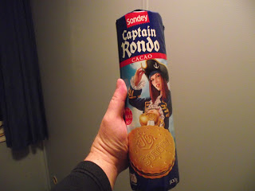
Na jó étvágyat mindenkinek, az enyémmel nincs baj! :D
Puszi!
2015. december 4., péntek
- FOCUS: HOCUS POCUS
Esküszöm, hogy már eldöntöttem, hogy felteszem ezt a klipet, amikor megtudtam, hogy hollandok!
Igen, mert azzal vádolhatnátok, hogy túlságosan részrehajló vagyok a hollandokkal szemben. Pedig nem, legalábbis ebben az esetben nem így van.
Ugyanis még jópár évvel ezelőtt a Kukinál hallgattunk Gerdesits Ferencet, aki '47-ben született (a Wikiről lestem le) operaénekes. Persze akkor még nem volt YouTube, meg hogy a Google majd megkeresi, a Clipconverter vagy a YTD meg le is tölti stb. Kazettán volt meg neki, mint minden más, és nem adta kölcsön az Istennek sem! Ősmetál volt a címe a lemeznek, és az egyik száma ez volt, de nem ennyire gyorsan. Lendületes rocknóta volt az is, névtelen, de profi zenészekkel előadva. Na de az eredeti!...
Szóval ez egy '73-as felvétel, és garantálom, hogy koncerten ugyanígy szól (nézz csak utána!), tehát nem kizárt, hogy élőzene. Egyszerűen fenomenális, amit csinálnak, ma is simán megállnák a helyüket ezzel a tudással.
Thijs van Leer úgy néz ki, mint aki másfél kilogramm amfetamint reggelizik, két dupla presszókávé között, és azóta látja is a hangokat, Jan Akkerman még kinézetre is hozza a Radics Béla féle feelinget, és hát a basszeres és a dobos is durvajó.
És, mint annyi helyen írtam (asszem kettő, az is a Faszbúkon), nagyon sokra értékelem a zenei humort, mert talán az átlagnál is komolyabb felkészültség áll mögötte.
Rengetegen feldolgozták, de maradtak a Futottak még kategóriában - az én szememben legalábbis. Egyébként létezik egy Gerdesits féle is, szerintem ebben a legjobb a hang:
Más:
Igen, fordult végre a kocka, de ezt majd holnap írom meg, hacsak el nem cseszem az időt. Ha igen, akkor holnapután, akkor úgyis zárva lesz a könyvtár, lesz időm otthon összebarkácsolni.
2015. december 5., szombat
- KÉT MÉRFÖLD
IZ- SSA
Ez nem egy rejtjel, hanem ezt írja ki az órám a kijelző felső sorába. Ez azt jelenti, hogy tizenkettedik hó ötödike van és szombat. Így megy ez – Vonnegut után szabadon.
Szóval gondok voltak a bankszámlával. Illetve szerintem semmiféle gond nem volt vele, valamiért – hogy miért, azt még csak megsaccolni sem merem – nem voltak képesek feltenni pénzt. Ezért a magyarról átküldtem 33 rugót sürgősségivel, mert az 1-2 munkanap (mennyi lehet akkor a nem sürgősségi?), de ezért levesz 15 eurót.
Istenem, hát mit nekem! Így mulat egy magyar úr! Forintra váltja az eurót, hogy levegyék a kezelési költséget, aztán ugyanezt visszaváltja, hogy ismét fizessen érte, de még sürgősségi díjat is penget.
Ha már Kossuth, legyen Lajos!
Ez másodikán volt, és, mint kiderült, harmadikán egészen véletlenül már nekik is sikerült rátenniük a 4. heti előleget!
Változott valami? Semmi. Akkor hogyhogy most sikerült, korábban meg nem? Egy választ tartok valószínűnek: Hogy nem is próbálták. Mert ha megpróbálják, sikerrel járnak. De ők automatikusan a magyarra rakták.
Ezek így akarnak kiutálni onnan? Azt hiszik, ez elég ahhoz, hogy fogjam magam, megsértődjek, és visszamenjek Magyarországra? Hát ott velem ennél sokkal jobban kitoltak! Ez marha kevés ahhoz!
Mondjuk én erről még mit sem tudtam akkor, amikor bementem kölcsön kérni, és utána eljöttem ide a Könyvtárba (ez van kiírva az épületre: de Bibliotheek - a Könyvtár), hiszen arról volt szó, hogy másnap vigyem be az összes papírt, amit a bankban kaptam, még a PIN kódot tartalmazó levelet is.
Jaj, és kaptam egy 24 dekás díszdoboz Docdatá-s csokit is! Íme:
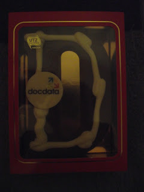
Nem tudom, a nő hogy értette, hogy ő fog engem elkísérni, vagy valamelyik nyikhaj, esetleg mindhárman, mondjuk bent ülnek egy autóban, és lépésben jönnek utánam, ahogy a széllel birkózva tekerek a bank felé?... – ilyen képek vonultak el lelki szemeim előtt.
De nem került rá sor, mert másnap reggel, amikor bementem és a Fehér Táblánál sorakoztam a többiekkel, hogy megtudjam, aznap hova osztanak be (ez persze csak azt jelenti, hogy aznap hol kezdesz), az egyik ilyen beosztóember az Eloj volt, és közölte, hogy munka után menjek vissza a táborba és keressem meg a Robertet, vele fogok majd a bankba menni.
Ez nekem annyira tudományos-fantasztikus volt, hogy egy szavát sem hittem igazán. Meg az is, hogy képes azért beosztatni magát, hogy ezt közölje, még csak esélyt sem adva arra, hogy napközben elkerüljük egymást…
Mindegy! Ha azt akarja valaki, hogy menj el vele egy mérföldet, menj el vele kettőt! Ezt a Biblia írja, és sokszor ezért is néznek annyira baleknak, mert ezt a tanítást követem.
- Ó, hát ez ilyen hülye? Ezzel azt csinálhatok, amit csak akarok? Nem is kérdez semmit, csak jön velem egy szó nélkül, pedig ha tudná, hogy most hogy leveszem, a világból is kifutna!
Egen, én ilyen kis balek vagyok. Más már régen felborzolná a tollait és berzenkedne, tiltakozna, de én megyek még egy mérföldet, és mintegy kívülről szemlélem, hogy fosztanak ki közben, hogy vesznek el tőlem olyan dolgot, ami engem illetne, és nem őket.
Azt hiszed, büszke vagyok rá? Nem, egyáltalán. Közben pedig színről színre látom, hol végződik a saját utam, és hol folyik bele, hol kezdődik az övék.
De legalább látom!
Na nem mintha vigasztalna! De hát nem is kell vigasztalni, hiszen én arról az előnyről, arról a tulajdonomról, jogomról már abban a pillanatban lemondtam, amikor elhívnak, hogy egy mérföldet menjek velük. Furcsa ez tényleg, de attól kezdve nem is izgat, hogy mit vesznek el tőlem. A lemondásban nagyon profi vagyok!
Jaj, azt hiszem, azt nem is mondtam, hogy még kedden R-től próbáltam kölcsön kérni!
Kértem tőle egy tízest, hogy majd megadom, ha hozzájutok a pénzemhez. Azt nem mondtam neki, hogy már vagy útban van, mert átutaltam magamtól magamnak, vagy nekem sem sikerül, és akkor valóban nem lehet rátenni a számlámra, de ezt nem hittem egy percig sem. Ő azt mondta, hogy nincs készpénze, később felvesz, és majd odaadja.
Bogár barátunkhoz(?) vendégek jöttek aznap az ő előző szálláshelyéről, egy magyar srác, és egy lengyel csaj. Kaptam tőlük egy kis üveges sört, nagyon finom volt. Amikor már kibeszélgettük magunkat, a magyar gyerek szóba hozta, hogy szívesen venne egy újabb bongát (ez talán a vízipipa egyik neve?), vagy egy kis jointot, mire Bogár: Hogyne, persze, rögtön!
Szép dolog a barátság, jaj, de szép dolog! És milyen önzetlen!
Este későn feküdtem le, addig nem volt képes a szállásmanagerünk beállítani a kölcsön tízessel.
Reggel volt ugyan egy tízeurós a konyhaasztalon, rajta egy cukorkával, de hát ha nem volt képes időben a kezembe adni, akkor menjen a fenébe, inkább nem kell.
Na, meló után hazaevett a fene, jelentkeztem Robertünknél, hogy menjünk a bankba, erre ő firtatni kezdte, hogy aktiváltam-e a kártyát. Mondom neki, hogy igen, de hát ez attól független.
Ugyanis ha nem lenne kártyám, vagy lejárt volna, pénzt akkor is fel tudok venni a bankban.
Mert hogy az lehet a hibája, hogy azért nem tudnak utalni. Nem akartam elvenni a kedvét, ráhagytam. Mondta, hogy adjak neki egy kis időt, erre én, hogy persze, úgyis kajálni akarok egy-két falatot.
- Te tettél az asztalra egy tízest? - kérdeztem tőle, de nemmel válaszolt. De jó, hogy nem vettem el! Talán a hülyegyerek tartozott Areknak, mondjuk egy gramm fű árával, én meg még filóztam, hogy elrakom.
Betértem a kéglibe és megtámadtam a klotyót. Éppen kijöttem onnan, amikor kopognak. A Zsiráf nyitott ajtót, hallom, hogy R. az. Pár másodperc után jön Zs., hogy a koordinátor beszéli akar velem. Már viccelődni akartam azzal, hogy még nem sikerült kajálnom, de kiderült, hogy nem azért keres, mert indulni akar, hanem hogy adjam kölcsön a bringámat valakinek. Elcsodálkoztam, de hát miért ne! Sétáljuk le azt a mérföldet!
Eljött az 5 óra, semmi. Eljött a 6, a bank bezárt, sehol semmi. Eljött a 9, sehun sámli. Fél 11-kor átmentem és bekopogtam. A nője nyitott ajtót. Mondom, hogy R.-et keresem. Azt mondja, R. most nem ér rá, de ő szívesen segít. Mondom neki, hogy kéne a biciklim, mert hajnalban 5-kor kelek és megyek dolgozni. Bement, megbeszélte R.-tel, kijött, és közölte, hogy az illető munkába ment az én gépemmel, hajnalban fog majd megjönni, de bepottyantják a nappali ablakán a kulcsot.
Az egészből az lett, hogy egy másik bringát hoztak oda, beadták a kulcsot egy levélke kíséretében, hogy egyelőre ezt használjam, és majd meló után menjek oda.
Meló után eljöttem ide, és felmentem a bank oldalára, ahol azt olvastam, hogy a negyedik részlet már odament, és megérkezett az én átutalásom is, de valahogy már nem tudtam neki örülni. Ha előre tudom, nem utaltam volna, de ha mégis, nem sürgősségivel. Eddig nekem kész ráfizetés volt ez az egész holland história!
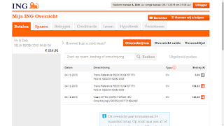
Már csak az volt a kérdés, hogy bankkártyával tudok-e fizetni. Hazafelé beugrottam a Plus-ba, vettem két csomag kipfilet-t (kipfilé, vagyis csirkemellfilé), ennyit ki tudtam pengetni, de simán működött a kártya. Örömömben visszakanyarodtam és vettem két kisüveg tízéves portóit, á 10.90-ért. Nagyon finom, csak ajánlani tudom!
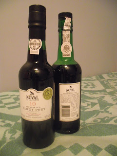
Na, odamentem Róbert gida házához, erre azt mondta, hogy most marha sok dolga van, holnap, vagyis szombaton kapnak bringákat, addig bírjam ki.
De jó! Kölcsön nem képes adni egy rohadt malért, de én adjam oda a cangámat egy vadidegennek! Biztos lengyel volt, ők előbbre valók, mint a magyarok. Adjam oda, és én járjak egy szarral. És még várjak is türelemmel.
Aznap este részeg nagyhangú ordibálás volt a táborban, mulattak a lengyel kollégák.
Itt tartunk most, várom a bicikliszállítmányt. Szerintem át akar verni a gida, de hát ez van. Én mindig elmegyek két mérföldet velük, úgyhogy velem ezt simán meg lehet tenni.
2015. december 7., hétfő
- EMOTIONAL SURGES
vagyis érzelmi hullámzás
milyen szép kifejezés!
Szóval amikor szombaton bent voltam a bankban, volt egy furcsa beszélgetésem a csajjal, aki ott dolgozik. Arról volt szó, hogy ők kiküldték a bankkártyát postán a recepció címére, én meg jól nem kaptam meg. Na és azt mondta a nő (ez most egy fiatalabb volt, nem a múltkori asszony, aki belenézett a gépbe és közölte, hogy semmi akadálya annak, hogy pénzt tegyenek a számlámra), hogy értesülései szerint vannak olyanok, hogy nem oda viszik a postát, hanem a mosókonyhába. Lengyelek mosás közben ott láttak leveleket, nézzem meg én is ott, hátha. Aztán azt mondta, hogy az átmeneti kártyám le van tiltva, azt akár el is dobhatom.
Erre gyorsan felvettem egy ötvenest a letiltott kártyámmal, hogy ne maradjak zsé nélkül, és közben elmeséltem neki, hogy többször is vásároltam vele, annyira nem volt letiltva. Előtte való nap kétszer, és aznap egyszer. Azt felelte, hogy ez furcsa.
És ez nekem is szöget ütött a fejembe. Ugyanis mi van akkor, ha nem az OTTÓ-nál piszkoskodnak, hanem a bank tévedett?
Tegyük fel, csak egy pillanatra, hogy a bankban elírtak valamit! Mittudomén, a vezetéknevemet írták a keresztnevem helyére és fordítva. Ezt a program nem fogja kijavítani, mert nem tudhatja, hogy kit hogy hívnak. Sok országból vannak klienseik, nem csak lengyel meg magyar van itt, hanem bolgár, litván, cseh, szlovák, török, arabok nyilván több helyről, és még a fene tudja, kik. Nem fog azon tűnődni, hogy jól gépelték-e be a nevemet, hanem azzal dolgozik, amit elétesznek. Ha így, akkor így. De lehet az is, hogy máshol történt valami, nem tudom.
Az átmeneti kártyát a PIN kóddal azonnal odaadták, akár rögtön lehet használni, csak hát ugye először fel kell tenni pénzt, hogy legyen mit levásárolni, vagy kivenni. Én azt aktiváltam, de tudjátok, volt egy sanda gyanúm, hogy esetleg kicsúsztam vele az időből. Mindegy, elfogadta, és még furcsa is volt, hogy nem kérte az aktiválókódot, csak a jelszót kellett megváltoztatni, és máris bevitt az oldalra.
Tehát a hiba miatt nem fogadott rá pénzt, hiszen neki nem pontosan azok az adatok voltak meg, amit az OTTÓ-ék feltüntettek, de aztán a reklamáció miatt valaki utánanézett a dolgoknak, és észre vehette, hogy miújság, mert később elfogadta az én utalásom, és az OTTO utalását is. Hogy ne mondjam, az utolsó pillanatban.
Namost. Mi van, ha erre a kártyára (temporary) hitte azt, hogy az a fő- (main) kártya? És éppen ezért abban volt, hogy ők már kiküldték nekem a frankót, hiszen aktív, és vásárolni is tudok vele, minden rendben van, közben meg el sem indult a főkártya.
Egy kissé filmbe illő is lett volna az a rengeteg konspiráció, hogy az egész OTTO kirendeltség ellenem dolgozik, aztán ott van a recepción az összes ember, akik összebeszéltek, hogy neeem, ők aztán semmi ilyesféle dolgot nem kaptak, mint az én nevemre szóló levél, pláne attól a banktól, ami két városkával odébb van, és bicajjal is megjárható fél órán belül, meg a Robert és mindenki, aki vele együtt lakik, hogy ha a magyar kérdezi, tagadjátok le, hogy jött neki bármi is… Ha viszont a bankban követtek el egy hibát mondjuk a gépeléskor, akkor egy lépésből megvan az egész, illetve kettőből, ugyanis a kártyákat is benézte a program.
Na de ez már legyen az ő bajuk!
Viszont amikor hazaértem, először benéztem a mosókonyhába, ahol persze még egy üres borítékot sem láttam, aztán otthon elővettem a Sony-Ericssonomat, amiben a KPN-es kártya van, és letiltattam a main card-ot, hogy ha idegen kezében van, ne tudjon vele mit kezdeni.
Amit szerintem ki sem postáztak!
És csak remélni tudom, hogy most nem a temporary-t tiltattam le, de nem valószínű, ugyanis ma is tudtam vele fizetni. Egyébként meg felmentem az oldalra, és csak az én vásárlásaimat igazolta vissza a gép, különben is miért csücsülne valaki egy bankkártyán, amivel 20 vagy 25 euróig PIN kód nélkül vásárolhatna bárhol?
Szóval az utolsó két és fél eurómon, ami a SIM kártyán volt, letiltattam egy nem létező bankkártyát. Hát ezt csináljátok utánam!
Vasárnap ismét semmit nem csináltam, a cellámból csak akkor mozdultam ki, ha vécére mentem, vagy a hűtőből vettem ki a kaját. Egyszerűen semmi lelkierőm nem volt semmihez. El is kapott egy kicsikét a depi, úgy látszik, túl sokat voltam egyedül, és volt időm gondolkodni például azon, hogy milyen kicseszett hiábavaló az egész élet. Gürizel, kuporgatsz, nélkülözöl, hazudozol a kapcsolataidban, vagy igazat mondasz, és elveszted őket, kitolsz a szeretteiddel, akiket nem is csípsz igazán, eltűröd, hogy hazudjanak neked, kitoljanak veled, aztán amikor már eleged van mindenből, biológiai öngyilkosságot követsz el mondjuk egy rák képében, szenvedsz egy darabig, és kimúlsz ebből a rohadt világból. Ha nincs szerencséd, egy másik testben újrakezded, méghozzá úgy, hogy fogalmad sincs az egészről, azt fogod hinni, hogy a szüleid csak azért csináltak, hogy neked jó legyen, de persze hamar rá fogsz jönni, hogy ebből egy szó sem igaz, és kezdődik minden elölről.
Szinte egész nap a Thing Machine nevű játékot nyomtam, ahhoz nem kell gondolkodni, és bőgtem is egy kicsit, a monitort alig láttam, csak nyomkodtam a gombokat.
Ma pedig odamentem a Róbert Gida házához, de nem azért, hogy boldog csütörtököt kívánjak, hanem hogy visszakérjem végre a bringámat. Megmutatta azt a házat, ahol az a srác lakik, akinek odaadta, bekopogott, de nem nyitott ajtót senki, pedig már vagy fél 11 volt, aztán azt mondta, hogy majd jöjjek vissza később, és cseréljem vissza a gépet. Én meg azt mondtam neki, hogy most elmegyek vásárolni, és ha visszajöttem, őhozzá fogok menni, és idejövünk, hogy visszacseréljük.
Így is lett, de odaküldött, hogy menjek egyedül, mert neki most el kell mennie, bringára pattant, és már ott sem volt. Hát ez óriási! Én teszek neki, meg annak a baromnak szívességet, és még nekem kell utánajárnom, hogy visszakapjam a saját cuccomat!
Odamentem, bekopogtam. Egy csávó nyitott ajtót, mondom neki, hogy mi járatban vagyok, azt mondja, ki volt az az ember? Mondom, honnan tudnám, tőlem a Robert kérte el, nem tudom, kinek adta oda. Ja, akkor a nemtomki lehet az! Bekopogott egy cella ajtaján, kijött egy nyüzüge faszi. Persze mind lengyelek voltak, ugye nem is kell mondanom! Aszongya, hogy ő ezt nem fogja odaadni, mert ő ezt a R.-től kapta, hogy ezzel járjon munkába, ennyit még én is megértettem.
Elborult az agyam. Azt láttam, hogy furcsán néznek rám, talán kiült az arcomra, hogy gyilkolni akarok. Megfordultam, fogtam a rámsózott bringát, visszatoltam R. háza elé, de közben egyfolytában káromkodtam, még mindig ügyelve arra, hogy a túlságosan nemzetközi szavakat kihagyjam a repertoárból, de hála Istennek, elég gazdag a magyar nyelv, és még csak ismételni sem kellett magamat.
Egyszerre értünk a ház elé a gidával, és amikor mondtam neki, hogy a köcsög (persze nem így, de azért eléggé indulatosan) nem akarja visszaadni, nem is szólt egy szót sem, visszajött velem, rászólt a kis gecire, aki aztán egy pillanat alatt odaadta a kulcsot.
Meg még találkoztam az egyik magyar sráccal, akitől viszont azt tudtam meg, hogy hetente járna egy mosózseton mindenkinek, ez benne van a heti 87 euróban, amit szorgalmasan vonnak tőlünk. Csakhogy a R. nem szívesen ad, úgy kell kizsarolni tőle.
Na még ez is! És ezt öt hét után kell megtudnom!
Most nem, de hamarosan eljön az ideje, hogy bekopogok egy zsetonért is...
2015. december 9., szerda
- LAZAC, KEX, MEG ILYENEK
Sikerült a mai napot is eltékozolnom.
Kétszer is volt, hogy pont akkor akartam a fürdőbe menni, amikor Arek volt kint, erre hallom a második alkalommal, hogy dumál a Bogárnak, a kurvá komunikácijá-t hiányolja. Vártam egy kicsit, hogy biztos legyek benne, hogy kijött, és ismét elindultam, hogy kakáljak meg zuhanyozzak. Erre mondja a szlovák szerelmének, hogy fordítson.
Hogy itt emberek élnek (basszus, észre sem vettem!), és hogy én csak számítógépezek meg gubbasztok a szobában (vajon mi az a gub?), aztán egyszerre csak kijövök és zuhanyzok, meg fogat mosok...
Miért, mások hogy csinálják? Ja, biztos kiírják a Faszbúkra: "Nah jóvan, megyek azt kiszarom magam, meg fogat is mosok asszem, pá!" De nekem nincs otthon Internetem.
Vagy azt szeretné, hogy kint üljek a füstben, szívjam a nikotint, kátrányt meg THC-t, amit kilélegeznek, és beszéljem meg vele, hogy mikor használhatom a fürdőt? Haggyuk mán Ilonkát!
Délelőtt szinte semmit sem csináltam, délután naaagy nehezen felkerekedtem és bejöttem a városba, hogy internetezzek. Úgy pakoltam össze, hogy a Könyvtár zárása után ne kelljen hazamennem. Vettem némi kaját, de ezek nem szerepelnek az ajánlottak között: két doboz fasírtgolyócska. Az egyik nemtom milyen, a másik holland. Talán a fűszerezésben lehet a különbség, majd meglátjuk.
Ugyanis napok óta nincs az a tömlős lazacpástétom a Plus-ban. Nem tudom, mikorra várnak, nem is kérdeztem meg. Ha már bent vagyok, muszáj vennem valami kaját, így esett a választás ezekre a golyóbisokra.
Az ideiglenes kártyámat végre letiltották (nem mintha hiányzott volna!) az állandó helyett, amit ugye ki sem küldtek, vagy csak magától járt le, nem tudom, de még javában kitart a készpénz.
Mondtam a hajléktalant a Plus előtt? Nem?
Ez egy román srác, valószínűleg cigány, de hát annyi baj legyen. Hajléktalan újságot árul.
Igen kérem, Hollandiában van ilyen!
1.50 egy példány, a fele a terjesztőé. Adtam neki egy bélást. Amikor másodszor is belébotlottam, csak egy eurót kapott, de nem kértem lapot, mert láttam, hogy ez még ugyanaz.
Szóval ha minden rosszra fordul, hajléktalannak még elmehetek. Itt jobb dolgom lenne, mint Magyarországon, azt gyanítom, de inkább hadd ne próbáljam ki! Csak abban reménykedem, hogy nem a két nyikhaj meg a testes nő fog dönteni arról, januárban kiket tegyenek lapátra, hanem megkérdeznek még egypár floor managert, és esetleg ők kiállnak mellettem.
Na, aztán pillanatnyi ötlet alapján egy utcával hamarabb kanyarodtam le, és nézd csak, hát nem ott a piac?
Igen, mert a napokban jutott az eszembe, hogy érdekes módon itt nem láttam piacot. Persze hogy is láthattam volna, amikor szinte mindig ugyanazokon az útvonalakon közlekedem? Ha eddig nem botlottam belé, ezután sem fogok, hacsak le nem térek a járt utakról. És az Úr megmutatta!
Na nem egy nagy szám, nem akkora, mint Rotterdamban volt, de hát ez sokkal kisebb városka. Viszont vettem 10 pár zoknit 5 euróért. Jó, nem 100% pamut, csak 80, de ennyiért kifejezetten olcsó volt. Sötétszürke, úgyhogy ez jól illik a fekete melósgöncömhöz.
Aztán belefutottam egy halsütőbe, és végem is lett, mint a botnak.
Mert hogy imádom a halat!
De nem mindegyik jó nekem, és nem tanultam meg még mindig a holland nevüket, de azt tudom, hogy a zalm az a lazac, bár abból is a tengeri lenne a jó, de azt nem írják ki külön.
El tudod képzelni, hogy ott sütik a haldarabokat a forró olajban, és nekem csorog a nyálam? Persze, hogy el! És azt el tudod képzelni, hogy én sarkon fordulok és ott hagyom ezt a csodát? Hát én sem!
Megkérdeztem, hogy "Ready to eat" a lazac, vagy ki kell sütni előtte? Nyugodtan ehetem, így hát vettem egy darabot, kis híján 3 euró volt, de nem sajnáltam rá a pénzt. Nem tudtam eldönteni, hogy füstölt, sült, vagy mindkettő, talán csak egy rafinált pácba tették, és attól lett ilyen íze, de nagyon finom volt. Nem vitt rá a lélek, hogy nekiálljak a dugig tömött hátimban megkeresni a kenyeret, megettem magában, de így sajnos kevés volt. Jobb híján itt a Könyvtárban előszedtem a maradék kexemet, és utánaküldtem, így már elmúlt az éhségérzetem, és a jó ízek is sokáig maradhattak a számban.
A kezemen még mindig érzem az illatát.
Holnap-holnapután 13:30-tól este 8-ig szól a munkaidőm, a szombati napomat ma mondták le sms-ben. Ez nagyjából azt jelenti, hogy - hacsak nem leszek nagyon fitt és harcra kész - leghamarabb szombaton jövök ide, vasárnap meg mosok egyet.
2015. december 15., kedd
- HOMORÚ VASÁRNAP
Tudom, tudom, rossz voltam, tessék engem megbüntetni!
Mi? Hát azért, mert múlt hét csütörtökön is lemondták a napomat, lett egy szabadnapom, és nem bírtam az Istennek sem megírni egy rohadt bejegyzést!
Pedig voltam bent a Könyvtárban!
Pénteken dolgoztam ugyan, de hétvégén nem, és szombaton sem voltam képes rá, hogy életjelt adjak magamról ezen a fórumon!
Pedig szombaton is voltam bent a Könyvtárban!
Csúnya, rossz Dobby!
Jó, mondjuk fent voltam a Faszbúkon, de hát az mégsem ugyanaz. Aztán amikor bezárt a Könyvtár, szépen hazajöttem, és elővettem a laptopomat. Bekapcsoltam, és hallottam is, hogy feláll a rendszer, de látni csak a háttérvilágított kijelzőt láttam, más semmit.
Beszart a gép.
Az úgy van, hogy fogom a masinát, beleteszem a zsák hátsó zsebében található külön zsebbe, ami egy vastag műselyem szalaggal (ebből az anyagból van az egész bélés) és a végén tépőzárral lezárható. Ezt külön ilyesmihez találták ki, és még szerencse is, hogy nem nagyobb számgépet vettem, mert az nem fért volna bele. Ezen kívül abban a rekeszben az esőkabátomat tartom, meg a gumipókot, és ha a gép is benne van, a tápot és az egeret is. Az egéralátét a géppel együtt parkol a lezárható helyen. (A középsőben kaját szoktam tartani, tehát ha vásárolok, azt is ide teszem, az elülső pedig olyan kicsi, hogy abban a személyes papírok, telefon, pénztárca (amiben még lötyög néhány euró), Thelma és Louise (a két tizenhat gigás pendrive) meg a miniatűr Kingston mikro SD kártyaolvasó van – szóval csupa apróság.)
Mintha ugyan attól kéne félni, hogy a bezippzározott rekeszből kicsúszik a laptop!
A hátizsák hátam felőli része vastag és puha, nyilván azért, hogy ne törje a számítógép.
Namost amikor én felteszem a zsákot a csomagtartóra, a gép van alul. Mindössze az a centi vastag párnázott rész választja el a hideg rácstól, ami a hátamnak feszülne, ha előírásszerűen használnám a zsákom. De neeem, én nem akarom, hogy a nagy tekerésben befülledjen, beizzadjon az én hátacskám, inkább rágumipókozom a bringára a zsákot, és a szerencsétlen ott pattog minden egyes kilazult díszburkolatkövön, minden zökkenőn, amint az egyik típusú útról a másikra kanyarodok, minden járdaszegélyen, ha felszökve a gyalogjáróra végül lepattanok a kocsi- vagy bicikliútra. És mindig odakoccan a hideg és kemény rácshoz. Nem csoda, hogy kiakadt szegény, nem bírja a kiképzést, nem is úgy szerkesztették meg, hogy ilyen kínzásoknak ellen tudjon állni.
Szóval vége van. Ennyi.
A kérdés már csak az, hogy javítható-e. Mert ha esetleg kilazult benne valami, akkor azt a helyére lehetne tenni. Ha mondjuk elszakadt a szalag, amin a jelek mennek fel a géptől a monitorig, azt ki lehet cserélni. Tudom, hogy kegyetlenül levesz majd a számítógép szervizes, de leszarom, olcsóbb, mint egy új gépet venni. És ha esetleg annyira javíthatatlan, hogy mégis újat kell, mert mondjuk kiment belőle a video áramkör, hát Istenem, semmi sem tart örökké. Csak most már jó lenne valami olyat, amin esetleg elmennek a modernebb játékok is.
Na tessék! Még azt sem tudom pontosan, mi baja, de már temetem!
Vasárnapra mosást terveztem, most hát nem állhat semmi az útjába.
A lustaságomon kívül.
Na meg persze figyeltem a szárítót, ami a gázkandalló előtt áll – hát azt sem arra tervezték, hogy nagycsaládosok mosását aggassuk rá! 10 pálcika van, és ha valaki csak a zoknijait meg egy-két pólót tesz rá, már beborítja a felét. Nekem az egész is kevés lenne, annyi szar összejött, de így nem is fogok mosni. Vagyis akkor kézzel kéne, de csak a legszükségesebbeket…
Jobbra dőltem, balra dőltem. De rohadtul hiányzik ez a gép!
Na de legalább olvasni tudok! Hoztam néhány papír alapú könyvet is, amiket nem lehetett letölteni ebook kiadásban, és fontosnak tartottam magammal cipelni. Az egyik a Kassbach volt, régen már olvastam, ezt is a Kukitól kaptam kölcsön annak idején, és ő mindig felemlegette, hogy mekkora könyv. Most, valamikor tavasszal vagy nyáron sikerült megszereznem, de még a kezembe sem vettem. Elég vékony, gyorsan ki tudom olvasni.
A hétvégén a seggére is vertem, mást nem is nagyon csináltam. Négyóránként ettem, meg olvastam a könyvet. Ja, meg néha meghúztam az üveget. Na nem nagyon, mert ez most egy ír whisky, csak módjával jártam rá. Tullamore Dew. Egyliteres.
Nem kell aggódni, nem egyszerre iszom meg!
Tudom, hogy hízlal! Nem kell mondani. Majd… lassan iszom.
Szóval gyakorlatilag nem csináltam semmit a hétvégén, és próbáltam valamiféle szabadságtudattal szemlélni elkövetkező számítógép nélküli időszakomat. De közben már azon agyaltam, hogy hétfőn, amikor kinyit a Könyvtár, fogom magam és bemegyek, leülök egy gép elé, és kinézem, hogy hol van szerviz a közelben. Vagy a távolban. Mindent kiírok, ami a két városkában található. Talán elmegy egy LCD monitorral, esetleg egy kis tévét veszek, és akkor én is tudom itt bent nézni az angol nyelvű és holland feliratozású műsorokat, de persze utóbbi inkább álom volt – ha van számítógép, kit érdekel a tévé?
Ezen a héten végig 13:30-tól 20 óráig szól a munkaidőm, ami azt jelenti, hogy délelőtt van egy kis időm, ha korán kelek, és nem bámulok ki a fejemből órákon keresztül.
Reggel – a hétfőről van szó – megcsináltam első holland rántottámat!
Igen, mert a BodyWakes-es papír azt írja, hogy kókuszzsírt használjunk a sütésnél, az nem változtatja meg a molekulaszerkezetét hő hatására. Én pedig lusta voltam utánanézni, hol lehet kapni és mennyiért, de miután volt egy kalandom a többnapos, a meleg szobában tartott főtt tojásokkal (az utolsó 3 darabot a szarkák ették meg itt az ablakom alatt), úgy döntöttem, hogy nem csak ezen élek, és hát a tojás még mindig a legolcsóbb és az egyik legjobb kaja. És miután Kaatsheuvel-ben még jobban felbontották a Gaasthausstraat-ot, ami a Lidl-höz vezet, én is ráálltam az Albert Heijn-re, ami ugyanabban az utcában van, csak előtte. És itt van igyen kávé is (és kapuccsinó is, nem úgy, mint a Plus-ban). Szóval itt vettem egy tízes tojást és egy üveg kókuszolajat. Szegény nagyanyám ekcéma elleni kenőcsére emlékeztet, csak valamivel nagyobb üvegben van.
Kiscsiga, neked tudnod kell, hogy van-e különbség a kókuszzsír és a kókuszolaj között, én mindenesetre eldöntöttem magamban, hogy nincs, és vettem egyet. Persze bio, és drága, de leszarom, mert marha keveset fogok főzőcskézni, és ahhoz jó lesz így, hogy (kicsivel több mint) 3 deci ugyanannyi euróba kerül.
Szóval megrittyentettem a rántottát, ami, valljuk be, marha íztelen lett, és az sem emelte a hangulatomat, hogy 4 fej hagymából az egyikről kiderült, hogy rohadt, de bevágtam 3 szelet kenyérrel, mert az kb. 10 deka, és elindultam a Könyvtárba.
Namost Hollandiában szombaton nem zárnak be a boltok délután kettőkor, meg a vasárnapi blokád sem ér el idáig, de cserében hétfőn tovább alszanak flamand barátaink. Így zárva volt minden műszaki bolt (ejnye, mondtam, hogy ne vegyél monitort, amíg ki nem derül, hogy elmegy vele a gép!), és szerviz is.
És ugyanez érvényes az állami „boltokra”, mint pl. könyvtár. Délután egykor nyitnak! Ott álltam negyed 12-kor kicsi bringaparkolójukban és szidtam magamat, de hát a számítógépemen meg tudtam volna nézni a nyitvatartást – csakhogy nem tudom MEGNÉZNI, pont azért vagyok itt most félig üres hátizsákkal, mert nem lehet rajta nézni semmit sem…
Mi a fenét csináljak egy óráig?
Mert hogy akkor kell legközelebb ennem, és ha fél egykor elindulok innen, ahogy terveztem, akkor is kettőt előre és egyet hátra kell tekernem, kis túlzással, hogy egyre beérjek a Docdatába.
Még jó, hogy ennyire elcsesztem a mai délelőttöt is! Pillanatnyilag az sem vigasztalt, hogy ismét tudtam 10 tömlő lazacpástétomot zsákmányolni a Plus-ban. Na jó, vánszorogjunk el a biciklibolthoz!
A bicikliben az a furcsa, hogy két kereke van. Egy elöl, egy hátul, így nem tudunk előre vagy hátra esni. Oldalt viszont nincs neki egy sem, és ez legalábbis elgondolkodtatja az embert.
Jó, persze olvastam motoros cikkben, hogy a nemtudommilyen fizikai erő nem engedi eldőlni a motort… De ez a bringára nem vonatkozik! Olyan lassan tekertem, hogy többet mentem oldalra, mint előre. De hamarosan odaértem a bolthoz.
Bent az öreg mellett egy fiatal fószer állt, láthatólag megzavartam egy bensőséges beszélgetést, ami inkább a fiatalnak volt fontosabb, az öreg úgy állt ott, mint egy darab fa, az elutasítás élő szobra. Talán a fia most közölte vele, hogy homokos, és levázolódott előtte, hogy soha nem lehet unokája… A hátrafésült hajú srác, akit a múltkor magyarnak néztem, viszont inkább hajazott arra, hogy a magafajtájával szórakozzon.
Mindegy! Mondom, hogy kéne pumpa, meg valami szerszám, amivel például a nyereg magasságát tudom állítani. Kimegyünk, a félbehagyott kínos családi beszélgetést magunk mögött hagyva, mutatom a szelepméretet. Közben elpöttyintem, hogy nem a saját gépem, csak bérlem, az enyém otthon van. Magyarországon.
Semmi reakció.
Tehát nem magyar.
Akkor buzi. Tudtam, hogy valamiképpen kilóg a sorból!
Mutat valami kulcshalmazt egy szerszámon, ilyet mindenki látott, akinek volt biciklije a hatvanas években, csak ez mintha silányabb anyagból volna. A csomagolást nem is adja a kezembe, nyilván az ára is rajta van, azt bent eldobja a boltban. Kint addig-addig próbálgatja a kulcsnyílásokat, amíg az egyik persze ráillik a nyeregcső anyájára. Egy euró. Pumpát akarok, vagy levegőt? Hát, másfél hónap alatt ennyire eresztett le, legyen csak levegő. (Mindent ki kell próbálni!) Ötven cent.
Legközelebb megveszem a pumpát, de addig is ezzel a drága levegővel járok.
(Ott kint, legalábbis ezekben a városkákban nem úgy van, mint Magyarországon, hogy bemész a benzinkútra, és ha jó a szelepméreted, akkor fújsz ingyen. Itt automata van, amibe fél vagy egy eurót dobsz, beállítod a légnyomást, és ráküldöd a kerékre. Külön figyelmeztetnek, hogy ez csak autókhoz és teherautókhoz (cars and trucks) való.)
Akármilyen lassan tekerek, beérek a melóhelyre. És most, hogy nem kell sietnem, a szerpentin is milyen könnyű!
Rengetegen vannak az előtérben! Nem is tudom eldönteni, hogy ezek jönnek vagy mennek. Előrefurakszom, és látom, hogy megint be van zárva az öltözőajtó. Hát itt nem lesz szabad szekrény! Kijövök és továbbkerekezek a következő bejárathoz. Ez már péntekről ismerős, itt mentem be akkor is. Parányi öltözőjük van, inkább kulcsos szekrénykék vannak, de van jó pár automata is, ami chippel nyitható. Nekem persze az utóbbi jut, kulcsom nincs ezekhez. Kiveszem a tömlőket, nem tudom, hány fokon kell tartani, de jobb a békesség, inkább beteszem majd a hűtőbe.
Fiatal, szerintem festett szőke a biztiőr csaj, halál komoly képpel elviccelődik a zsákmányomon, úgy kell mentegetőznöm, hogy nem egy napra vettem. Azt mondja, ne tegyem a frigóba, mert lehet, hogy megeszik.
Efölött a bejárat fölött egy másik kantin van, itt sokkal kevesebben szoktak lenni. Azt hiszem, ez nem a Bol-hoz tartozik, hanem a másik webáruházhoz, ahol csak ruhaneműk vannak. Persze sokkal szerényebb az árukészletük, és gondolom a megrendelésük is. Kevesebben is dolgoznak itt, az ember azt hinné, hogy jobban figyelnek egymásra, de ha a jobban figyelés arra korlátozódik, hogy kinek mennyi lenyúlható kajája van, akkor visszateszek nyolcat, kettőt viszont a zöldséggel együtt be kell vinnem. Nem fogom felborítani a diétámat néhány tolvaj miatt!
Kényelmesen megkajálok, attól eltekintve, hogy vagy két lengyel srác ül le velem szemben kávézni, vagy egy bomba lengyel kiscsaj egy kicsit oldalt, és hát a zöldség össze-vissza potyog, de felcsipegetem és megeszem, nem érdekel. Egyébként néhányan szintén villával esznek, persze nem zöldséget, hanem főtt kaját, és ugyanolyan feszültek, mint én. Próbálunk marha illedelmesen zabálni.
Na, tíz perccel fél kettő előtt lesétálok, át a másik warehouse-ba, és most fordítva járom le az utat el a Service Point 2 előtt, ahol én is fel szoktam venni a szkennert, el a kütyü előtt, ahol be és ki szoktam jelentkezni, el a teamleader iroda előtt, be a white board elé, és… nem vagyok a listán. Menjek fel az irodába, és kérdezzek rá.
De én már tudom a végét! És Kamil mondja is, hogy cancelled a mai napom, nem kaptam meg az üzenetet? Még én magyarázkodom, hogy korán elindultam otthonról és a telefon a zsákban, nem hallom… Ahelyett, hogy rákérdeznék, hogy mi a fenéért nem tudnak egy napra előre szervezni, vagy ha úgy alakult, akkor már hagyni, hogy egy-két órát dolgozzak… De nem is érdekel. Ez a hétfő ez ilyen!
Viszont nyitva a Könyvtár!
Beavázok, az asztal, ahol mindkét oldalon gépek vannak, szinte üres, csak egy néger fószer nyúzza az egyiket. Leülök én is, beteszem Louise-t – Thelmán egyelőre nincs semmi – és elindítom a hordozható Firefox-ot. Az egy darabig dermedten áll, aztán bejön rajta a Könyvtár oldala, és középen két ablakocska, ahová a felhasználónevet meg a jelszót kellene begépelni. Na, szevasz!
Ugyanis én nem fogok egy petákot sem fizetni ezért! Inkább fogom magam, és veszek egy monitort… illetve előbb elmegyek egy szervizbe… de ahhoz előbb hazamegyek és felkapom a gépemet!
Így is lett, és Waalwijk-ban a „főutcán” (ami felvezet egész a Városházáig, pedig a keresztutcát hívják Grotestraat-nak, Nagy utcának) találok is egy számgépszervizt. Pontosabban a robotrepülő találja meg egész kis hibával: ahol leszállok érdeklődni, a boltos mondja, hogy 3 üzlethelyiséggel hátrébb van.
Bemegyek. A pult mögött egy eléggé öreg ürge áll, nem hiszem, hogy nagyon a topon lenne számítástechnikai kérdésekben, de hát ő itt a szerviz. Egy faszi matat valamit előttem, sokáig dumálnak az eladóval. Megnézem addig a vitrint, 340-ért lehet kapni kis Lenovót, egész a 800 eurós Toshibáig van vagy nyolc gép. De hogy melyik mit tud, azt csak találgatni lehet. Itt, úgy látszik, úgy vásárolnak az emberek, hogy na, ennek tetszik a színe (mindegyik fekete) vagy az alakja, vagy nem is tudom, ezen több a billentyű, és akkor ezt kérem. Vagy itt szóba állnak az emberrel, és kérdezz-felelek formában dönti el a vásárló, hogy melyik gépet veszi meg. Mondjuk én megszoktam, hogy kiírnak mindent, ami érdekel, és csak rá kell böknöm. Aztán persze amikor sorra kerülnék, berobban valami ürge, aki itt vásárolt egy kábelt, de valamiért nem kell neki, annak visszaadják a pénzét.
Na, nagy nehezen szóhoz jutok. Mondom, hogy mi van, előveszem a cuccot, a faszi kinyitja, és kijelenti, hogy törött a kijelző, nem tudja megjavítani (fix it).
Hát ez marhajó!
És hogy kiszúrta, hogy törött! Én észre sem vettem!
Na és elmegy egy monitorral?
Nem tudja, mindjárt megnézi.
Bekapcsolja… És feláll a gép! (A lófaszt törött!)
Csak a fiókomig, kéri a jelszót, de feláll! Látni mindent, Konoko démoni arca ragyog rám, és… működik a gép!
Ööö… az a helyzet, hogy idefelé szintén a hátizsákomban volt a gép, és szintén a csomagtartóra gumizva. És amit kirázott két nappal ezelőtt, azt most visszarázta, és működik.
Szóval hazafelé a hátamon hoztam, nem érdekelt, hogy beleizzadok. És most már jobban fogok rá vigyázni.
Erre iszunk!
2015. december 19., szombat
- IGEN, NEM, MÉGIS, DEHOGY...
SZERDA, 16.
A múltkor kaptam Bogártól egy mosózsetont. Hozzá is fűzött némi magyarázatot, de nem sokat értettem belőle. Tulajdonképpen semmit.
Namost én már (múlt) vasárnapra elterveztem a mosást, pedig akkor még volt 2 fekete pólóm, de nem jött össze, mert ugye jobba dőltem, meg balra dőltem, nem vitt rá a lélek, hogy részt vegyek ebben a világban.
Aztán elfogytak a pólóim. És lusta voltam kézzel mosni.
Na jó, ha nem, hát nem! Nem muszáj életet élni, lehet buddhista módon a semmit keresni, csak arra vigyázzál, hogy ne találd meg!
Szóval, hogy tegnap sikerült végül feltenni némi blogot (némi? 5 oldal volt!), rászóltam magamra, hogy MA mosás van!
9-re húztam fel a telefonomat, de előtte keltem vagy negyed órával. Mivel nem volt kenyerem, nem reggeliztem, a TUC-okhoz meg a brownie-hoz nem volt kedvem, a halpástétomból meg legalább kettő kellett volna, hogy valamennyire megtöltse a bendőmet, de akkor borul a diéta szerinti alapanyagelosztás. Inkább elhalasztottam.
Vécé, zuhany, és döbbenten konstatáltam, hogy ezzel fél óra elment. Na, ez szép! Gyorsan összekaptam magam, ami kb. 10 percet jelentett, és hátrakerekeztem a recepcióhoz. Bementem a mosókonyhába, bepakoltam szépen az egyik gépbe a cuccaimat, és vacilláltam, hogy hová tekerjem a gombot. A fehér miatt (törülközők) jó lett volna egy 90 fokos mosás, rettenet, hogy mennyire büdös tud lenni, holott az ember csak akkor törli bele magát, amikor tiszta. Kész rejtély! A fekete miatt, ami a javát tette ki a csomagnak, viszont jó lett volna egy 40 fok, nehogy nekem összemenjen. Úgyhogy inkább hagytam ott, ahol volt, 60 fokon, aztán játsszák le egymás közt! A Tomi Akármiből, amit még Magyarországról hoztam (ezt vettem a sashegyi kéglibe, és ebből tettem egy nylonzacsiba így útravalónak) szépen pakoltam a kihúzott fiókba, itt talán nem kell attól tartani, hogy nem működik a mosóporadagoló.
Becsuktam az ajtót. Még egyszer elolvastam a használati utasítás angolul írt részét. OK. Aztán fogtam a mosózsetont, és megpróbáltam bedugni a nyíláson.
Miért nem vettem észre, hogy ez a nyílás kb. fele akkora, mint a zseton?!
És a többi is!
Egyedül a szárítóba lenne jó, de előtte ugye ki kéne mosni a ruhákat… Na, most jött el az ideje, hogy bekopogjak Róbert gidához!
A nője nyit ajtót. Amióta lemondtam róluk (értsd: eldöntöttem, hogy nem szeretem őket), a csaj tök aranyos velem. Ki érti a nőket?…
Mosózseton? Persze! Térül-fordul, a kezembead négyet.
- For all.
Mindenkinek.
Hát hogy lehet így haragudni rájuk?
De ezek ugyanakkorák, mint ami nekem van!
A recepciós pult mögött egy középkorú nő ült. Már többször találgattam, hogy a fiatalok, a nagymellű meg a másik a lányai-e, vagy itt Hollandiában a tiniket is bevonják a melóba. Na és azt mondja, hogy nem ebben a mosókonyhában kell nekem mosni, hanem a másikban.
De, mondom, nem tudná becserélni a zsetont egy ittenire? Nem. Na és nem vehetnék egyet? Nem.
De hogy miért nem, azt nem mondja!
Mondom neki, hogy benne vagyok a gépben. Nem hatja meg. De a mosóporom is benne van! Erre ad egy ilyen kis csomagot, két buborék van benne, egy kék meg egy zöld, hogy azt a ruha közé kell betenni. Se felvágni, se semmi, a többi majd megoldódik magától.
Na pék! Milyen az a másik, és hol találom? Nekem eddig senki nem szólt róla!
Mutatja a tábor térképén, nincs is messze a mi bunginktól. (Jó, mi van messze? 3 perc alatt átkerekezek az egész kempingen.) Azért kimarkolom a mosóport is a fiókból, jó lesz az még! A körmöm alja telemegy vele.
Elég könnyen megtalálom. A két ajtajából az egyik kulcsra zárva, az ablak nyitva, nem rég mosták fel, még fel sem száradt. Az ajtó mögött van az ablak, a széles párkányán egy eltévedt katicabogár, és egy faláda POCZTA felirattal. Aha! Erről beszéltek a bankban! És valóban, egy csomó levél felbontatlanul, felbontottan, kivéve a borítékból… Van olyan is, amit nem is erre a címre írtak, csak idekeveredett, ezen augusztusi bélyegző. Hát én ugyan nem fogom elvinni, ez hadd legyen a postás sara!
Az én második bankkártyámat is (első állandó) akkor kaptam kézhez, amikor már letiltattam. Két nappal később odaadták a mostanit, amivel semmi gond. Aznap jött ki, amikor az előzőt átvettem.
Bal oldalon két szárítógép, mellette négy mosó. Az első mosógép ugyanolyan kis nyílású, a többi szép nagy, használhatom nyugodtan. Megetetem, állítani nem is kell rajta, beindítom. Először 11 percet mutat, de nem hiszek neki, aztán 20-at, aztán 55-öt. Bólintok, és elindulok kaját venni.
Az AH-be megyek, közelebb van mindennél. A zöldség meg a kenyér, meg még gondolom tucatnyi áru kb. egy árban van a boltokban, akció csak akkor várható, ha közel van valamelyik lejárati ideje, és elég sok van belőle. Én legalábbis így csinálnám. Éhgyomorra nem merek kávét inni, de egy csokiitalt benyomok. Lám, ilyen nincs a Plus-ban, ott csak kétféle kávé, meg forró víz a teákhoz, ha azt akarsz inni. Cukor, kávészőkítő külön kis zacsikban. A Lidl-ben pedig még ennyi sincs.
Veszek kétféle kipfilet-t, ezek cirka 15 dekásak, két adag. Egy „nagy” kenyeret, ezek 80 dekásak, kb. 24 szelet, ami azt jelenti, hogy 3 tesz ki 10 dekát. Ez egy kajaadagom. Egy csomag 45 dekás zöldség, de azt hiszem, inkább csak otthon eszem majd, odabent zöldséglevest iszom hozzá, abból is lehet háromféle erősségű, majd a legzorallabbat választom. Ahhoz nem kell villa.
(Érdekes adalék, hogy a „hátsó” kantinban, ahová mostanában járok a melóhelyen, először próbáltam erősebb zöldséglevest venni. Kiadta másfél deci vízzel. Aha, és a gyengébb milyen? Két és fél decit ad hozzá? Púpozott pohár leves? De aztán kiderült, hogy a közepeshez is csak annyi víz jár.)
Kényelmesen visszatekerek, még van vagy 10 perc a mosásból. 3 zsetont kiraktam otthon az asztalra, a negyediket eltettem, ez megy majd a szárítóba, és akkor teregetnem sem kell. Sajnálom, hogy nem kalkuláltam előbb, mert akkor a fehér gatyámat veszem fel, esetleg a fehér pólómmal, és melóba már csak frissen mosottból vehettem volna, aztán ami rajtam volt, azt baromira ráértem volna kimosni. Mondjuk tavaszig.
Most már mindegy, ne essünk ezért kétségbe, lesz itt még mosás!
Hazabringázom a szépen megszárított ruhákkal, és döbbenten látom, hogy dél múlt. Gyors reggeli, és mehetek is dolgozni!
Éppen megkajálok, amikor hallom, hogy Arek jön be, és kiabál utánam. Mondom, hogy itt vagyok, de hát a világért sem nyitna be, kimegyek. Azt mondja, beszélt Roberttel, és mindkettőnk napja vissza van mondva (cancelled).
Hát itt tartunk most.
CSÜTÖRTÖK, 17.
Illetve, hogy lássátok, milyen kiszámíthatatlan az élet a Docdatánál, kiderül, hogy most rögtön, azonnal be kell mennem dolgozni!
Robert az ajtóban, egy bringán ül és dohányzik.
- De mettől meddig? - kérdezem tehetetlenségemben, csak hogy belekössek valahogy.
Nem tudja. Mostantól.
Megfordulok, de a cellámba menet azért elkáromkodom magam, sajnos egy p betűvel kezdődő szó is becsúszik, ennek Arek nagyon örül.
Ez akkor boldog, ha engem bosszankodni lát!
Ráadásul kiderül, hogy behalt a jó kis Sony fülesem! Nem hall a jobb felére.
Pedig milyen baróti volt! Zenehallgatásra a legjobb!
Na jó, ha úgysem tudják, hogy mikor fogok beérni, a második lámpánál jobbra fordulok és bemegyek a „főutcára”, ahol a boltok vannak. Érdekes módon a java zárva, pedig még csak 6 lesz pár perc múlva. Találok ugyan egy bazárt, de rózsaszín meg babakék fülesek vannak. Ezek nem arra valók, hogy használják, hanem hogy passzoljon a színe a műkörömhöz vagy a telefon színéhez.
- Ez egy bolt hölgyeknek?
- Olyasmi – mondja az eladókiscsaj, akin bombajól áll a cicagatya.
Kiszédelgek, és a túloldalon egy pár méterrel odébb látok egy másik boltot. Itt kapok végül frankót, ez is Sony, és ez is többet tud, mint az átlag. Lefelé is, és felfelé is. (Mérnökök valami másnapos hajnalon kitalálták, hogy az emberi fül 20 és 20 000 Herz között hall, ezért nem is érdemes ennél érzékenyebb füleseket gyártani. Ebből aztán roppant széles választék van, a 300 forintostól a többezresig, de én nem a színét nézem, vagy az árát, hanem hogy mennyit visz át. A húsz alatti jobb basszushangzást jelent, és ha már, akkor legyen húszezer fölött is. Ez pedig olyan!) 13 euró, de hát Istenem, más naponta költ ennyit fűre!
Odabent pickingelni kell, küldenek ide-oda, nem vagyok a listákon, naaagy nehezen azért hajlandóak tudomásul venni, hogy kénytelenek számolni velem, kapok egy listát, aztán mehetek összeszedni, ami rajta van.
Ezért kellett hát csapot-papot otthagyni és nagyon sürgősen bejönni! Gratula a szervezéshez!
A csütörtököm ismét békésen telik, inboundolással, ahogy ezt előre megírta az sms. Lejelentkezel a White Board-nál, kipipálják a neved, megnézed a táblán, hova vagy beosztva (ha nem vagy, ahogy én is járok egy csomószor, odabiggyesztik valahova, mondjuk 5 Hall, 3. Vloor), és mész. Elkapsz egy kocsit és berakod, ami rajta van, aztán előbb-utóbb megjelenik egy zöldkabátkás és összeírja a neveket. Könnyebb tartani a szüneteket is, mert az inboundból egyszerű kilépni, bármikor bárhol folytathatod ugyanazt a kocsit, vagy másikat. Pickingnél nincs ilyen, ha egyszer benne van egy lista a gépedben, nem szállhatsz ki belőle, és más sem csinálhatja.
A péntekem viszont…
A péntekem olyan kapitálisan szarra sikeredett, hogy külön blogbejegyzés lett belőle!
2015. december 19., szombat
- LENGYELORSZÁG MEGMUTATJA IGAZI ARCÁT
GRIZZLY LISTÁJA
Tegnap volt a legszarabb napom a cégnél!
Legalábbis nagyon remélem, hogy még egyszer nem kell ilyeneket átélnem!
Jött egy sms, amiben lemondták a szombatomat – ez már hagyományos -, aztán még egy, hogy 13:30 helyett 15:30-kor kezdődik a munkaidőm, 20 óra helyett éjfél 1-ig tart, és nem berakás lesz, hanem kiszedés.
Ez utóbbi mindig olyan nyögvenyelős! Sosem vagyok rajta a listán, küldözgetnek Ponciustól Pilátusig, nézegetnek a számgépben, és közben mindenki fontosabb, mint én. Bármilyen problémával odamehetsz ilyenkor, biztos lehetsz benne, hogy soron kívül megoldják, csak velem ne kelljen foglalkozniuk!
Így volt ez most is. Bementem, megkajáltam, lementem a kütyühöz, ahol be szoktam csekkolni, aztán irány a White Board. Ott azt mondták, hogy menjek át a 10-es raktárházba és ott jelentkezzek a team leader-nél. Ott nem volt senki, és pár perc ácsorgás után bementem "a földszintre", ahová ezek úgyis küldtek volna. Ott persze senki nem tud rólam semmit, a nevemet sem ismerték, mintha nem csináltuk volna már végig ezt vagy ötször!
Van ott egy alacsony, frusztrált képű csaj, az nagyon szeret levegőnek nézni. De mondjuk a többi sem marad le nagyon mögötte. Mondom neki, hogy nem muszáj nekem pickingelni, ha nem vagyok rajta semmiféle listán, én boldogan elmegyek inboundolni. Nem, nem, azt nem lehet, mert ha pickingelni küldtek, akkor azt kell csinálnom!
Visszaküldtek a WB-hoz.
Visszabattyogtam. Én leszarom, 8.70-ért elsétálgatok egész este, ezen már ne múljék!
Rátámaszkodtam az asztalra. Ez olyan kerek talponálló stílusú asztal, állva kell mellette dolgozni, végülis csak arra az időre van itt valaki, hogy a beérkező embereket kipipálják és eligazítsák. Sőt, most már az sem, mert rád szólnak, hogy nézd meg magad a fémtáblán, amire kibiggyesztik a neved egy mágneses kártyán, hogy hányas hall hányadik emeletén kell aznap dolgoznod. Persze ez csak a berakásra vonatkozik, nem is értem, miért ide kellett jönnöm.
Na, előkerült az egyik ilyen kipipálós csaj, ennek rövid sötét haja van, a másik a Halászjutka, ez hasonlít a Halász Jutkára, azért neveztem el így, ezek zöld kabátkában vannak, és szokott lenni velük egy magas piros kabátos fószer is. Ilyenkor felszívódnak, valahol eltöltik az időt, aztán ha műszakkezdés jön, megint összeverődnek, hogy 10 percet dolgozhassanak.
Kérdezi, hogy mi újság. Mondom neki, hogy semmiféle listán nem szerepelek, és ide küldtek. Mert hogy mindig ide küldenek, amikor nem tudnak velem mit kezdeni. Felmentünk a lépcsőn, be egy irodába, ahol Halászjutka ült a gép előtt. Ez szabályszerűen elzavarta onnan, levágta magát, és vadul guberálni kezdett benne. Közben pergő párbeszéd zajlott közöttük, talán mondanom sem kell, hogy lengyelül, és ha jól éreztem a hangulatot, a pickinges csajokat szidták.
Aztán kijött a lézernyomtatóból egy papír, azt a kezembe nyomták, és visszaküldtek.
Ez egy fekvő tájolású nyomtatvány volt, rajta egy sor apró betűvel, hogy kiférjen (micsoda pazarlás!), és az én adataim voltak rajta. A nevem, a cég, aki "üzemeltet", meg mindenféle ilyesmi. Egy egyszemélyes lista.
Na, visszamentem, és megvártam, amíg hajlandó volt a rosszkedvű nőszemély észre venni. Felnézett azzal a tekintettel, hogy "na mi van?", én pedig odanyújtottam a papírt:
- Itt egy lista, amin rajta vagyok.
Nagyon kellett vigyáznom, hogy ne röhögjek a képébe!
Ő halál komoly képpel ránézett, letette, valamit pötyögött a gépbe, és azóta léteztem a számára. Legalábbis aznap este. Aztán majd legközelebb elkezdjük elölről az egészet.
ZÖLD SASOK
Rögtön az első kanyarom olyan volt, hogy fel kellett mennem a másodikra, ott összeszedni vagy 7 dolgot, átmenni a másik warehouse-ba, és ott is vagy hármat. Az út a kantin mellett vezetett el, mert véletlenül nem a legrövidebb ösvényt választottam, hanem a Sárga Utat.
Nem vicc, két sárga sáv vezet végig gyakorlatilag az egész emeleten, illetve mindegyiken, és arra való, hogy ha ezt követed, nem tévedsz el, ugyanis előbb-utóbb minden stratégiai ponthoz eljutsz.
Nekem recsegett-ropogott a nyakam, és feszült a tarkóm. Talán az idegesség miatt, hogy ilyen semmibe vesznek, talán elfeküdtem... De hát akkor miért csak most érzem? Azt tapasztalatból tudom, hogy hiába masszírozom. Magas lenne a vérnyomásom? Nem csodálkoznék rajta. De ez a recsegés, ez nem attól lesz. Jó lenne valami kenőcs, ami vérbőséget okoz...
Eszembe jutott a kávé. Az tágítja az ereket. Nem vesztek vele semmit, legfeljebb nem használ, na bumm!
Csináltam én már ilyet kiszedésnél, hogy amikor a másodikon jártam, beugrottam a kantinba, kivettem az automatából a kávét, letettem valahova, ahonnan nem kukázzák ki, és mire körbejártam és összeszedtem a cuccokat, addigra kihűlt, csak meg kellett innom. Kétszer két perc, és hát ha ezért szólnak, akkor tényleg menjenek a fenébe!
Szerencsére mindkét raktárházból csak kicsi dolgokat kellett szednem, és már ittam a kapuccsinómat, amikor a vécé felőli ajtón bejött Ana.
Ez az a nő, aki a legelső napon betanított. Jóban vagyunk, éppen tegnap (mármint csütörtökön) mondta, hogy van egy héthónapos kislánya. Németet tanított, és bár a hollandokhoz képest nem kapunk sokat, nem hiszem, hogy ennyit megkeresett otthon Lengyelországban. Gondoltam, elsütök egy szóviccet.
- I am picking. I picked a coffee.
Ebben a pillanatban az irodák felőli ajtó előtt megjelent a három zöld kabátkás nő: a Halászjutka, a rövid hajú, és egy idősebb harmadik, aki alacsony és szétcigarettázott hangja van. Halászjutka megtámadott.
Micsinálok? Kávét iszom. De nincs szünet! Aha, tudom. De hát ezt nem tehetem!
Na most hogy magyarázom meg neki angolul, hogy recseg-ropog az összes nyakcsigolyám és kötött a tarkóm?
- Fáj a fejem, és gondoltam, hogy a kávé majd segíteni fog.
Úristen! Ez rosszabb, mintha nem mondtam volna semmit! Pont a nőknek szokott fájni a fejük!
- Attila, ezt nem teheted! Már a múltkor is mondtam!
Igaz, egyszer rajtakapott, hogy bent kajáltam és nem volt szünet. Az úgy volt, hogy nem volt harmadik szünetem, csak dolgoztattak (mert hogy ilyen a picking: ha sok meló van, nyomni kell, ha nincs meló, akkor meg mehetsz haza), én meg csináltam magamnak. Nem adtam le a szkennert, mert azt is bevezetik a gépbe, és akkor mi a fenét csináltam negyed óráig, ha nem dolgoztam, miért csak utána csekkoltam ki, így hát beültem kajálni, előttem a szkenner, ezt meg beette a fene. Úgyhogy most másodszor buktam le.
Párszor széttártam a karom, nem jött szó a számra. Ilyenek jutottak eszembe: Akkor most megbüntet? Ezt hogy mondják angolul?
Meg ilyenek: Akkor most menjek haza?
Basszus! Mit lehet itt mondani?
Inkább nem mondtam semmit.
Aztán sarkon fordultam és otthagytam őket. Ugyanis kezdett elmenni a kedvem az egésztől, és ilyenkor az szokott lenni, hogy nem nézek semmit, felveszek egy nyegle stílust, vagy ami még rosszabb, agresszívet, és attól kezdve nem alakulnak jól a dolgok.
Viszont a kávé segített. Ha vérnyomás probléma volt, hát levitte, ha rossz vérellátás, akkor pedig megszüntette, de jót tett.
MAJDNEM ÖSSZEJÖTT
De akkor már ideges voltam, és magamban puffogtam.
A rohadt anyátokat! Azt nem veszitek észre, amikor más után is összeszedem az üres kartondobozokat, meg az útból a műanyag pántolószalagokat, hogy ne tekeredjenek fel a targonca kerekére, meg hogy kéretlenül is segítek boldog-boldogtalannak, de ha bejövök egy rohadt kávéra, akkor már rögtön torokra kell támadni? Mélységes átéléssel jött ki belőlem:
- Menjetek a picsába!
Ezt aznap jó párszor elismételtem, de azért vigyáztam, hogy ne legyen senki a közelemben.
A harag hullámokban tört rám, és tényleg nem bántam volna, ha haza mehetnék. Vagyis hát el innen. Aznapra bőven elegem volt mindenből. Úgy kellett mindig magamra szólnom, amikor üres dobozokat láttam, hogy ne szedd össze, szedje az, akinek fontos a szünet ideje. Mert hogy kiveszik az utolsó darabot, a kartont meg ott hagyják.
Ez úgy van, hogy van az "odabent", ezt nem tudom másképp elmagyarázni, az 5 szintet jelent: a földszint, és 4 emelet. Az egész épületnek egy része van így kiképezve. A többi helyen csak az épület héja van, ha felnézel, a tetőt látod belülről, meg az acélszerkezetet, meg az esőztető rendszer csöveit. Illetve a másodikon van még egy szint kialakítva körben. Na és itt és a földszinten gépsorok vannak, ahol csomagolnak, irodák, amik fallal vannak elválasztva, de nincs tetejük, meg van egy nem kicsi rész, ahol ugyanúgy sorokba, "utcácskákba" vannak rendezve a polcok, egész fel a mennyezetig. Raklapokon van az áru. Az alsó két szintről, vagyis a földről és a mellmagasságban lévő első polcról mi szedünk, a többi magasságokban csak a targoncák tudnak, de ezek a trepnik le vannak fóliázva, nehogy szétdőljenek. Nagyon profi módon a villák között egy széles lézersugár mutatja, hol tart a magasság, és egy kis kamera is, aminek a fekete-fehér képét a fülkében látja a fószer. Másképp nem is lehetne! Hát ki lát fel mondjuk 10 méter magasra, hogy most pont a raklap aljánál van a villa, vagy nem?
Na, tolom a kocsit, amibe szedem össze a cuccot, közben puffogok, mint a puffogó vipera, és nézem, hogy egy targoncás fölfelé bámul, ahelyett, hogy a képernyőt nézné. Hú, de profi! A villa valahol a legfelső polc közelében lehet, és... nem mozdul a fószer. Pedig ezek eléggé tempósan szokták a munkájukat végezni.
Egyszer csak hallok a hátam mögül valami recsegést, de ez nem a tarkómban volt, és reflexből tettem egy pár gyors lépést, hogy ha potyog valami, akkor ne a nyakamba tegye. Hátra nézek, és egy trepni öblítő esik oda, ahol cirka három másodperccel azelőtt voltam!
Hát... majdnem sikerült kijutnom a melóhelyről!
NE HAZUDJ!
Amikor végzel, és sikerül letenni a kocsit is, lehetőleg oda, ahová való, visszaavázol a földszintre és nézel egy másik lista után. Ezt vagy a számítógépnél kapod, ami kijön a nyomtatóból, vagy a többi emeletről leküldött kocsikat lehet befejezni. Pontosabban előbb befejezni kell, és ha azok elfogynak, akkor kérhetsz új listát.
A befejezés pedig úgy megy, hogy miután nem szoktam nézni, hogy mi van a listán, rálövök a szkennerrel a vonalkódra. Ha kész van, úgysem fogadja el, ha nincs, akkor abban a pillanatban bent van a gépben. Felkínál egy helyet, ami lehet akár egy másik szint is, vagy egy másik hall, és a zöld gombbal elfogadod, a pirossal elutasítod. De azt nem teszed, mert valakinek úgyis meg kell csinálni.
Na, rálövök az egyikre, és beenged. Szuper! Kiírja, hogy a következő termék a 10-es warehouse 0. emeletén a 21. sorban lesz. Valami cadeaukaart*, vagy mi a szösz. Biztos olyan, mint a nyomtatópapír. Vagyis át sem kell mennem a 13-asba, emeletet sem kell járnom, az alacsony számú sor pedig azt jelenti, hogy "kint" lesz, nem "a földszinten" a szűk zárt helyen. Elfogadja? El hát! Zöld gomb, és már kint is vagyok a szekérrel.
Hoppá! Csak 20 sor van. Na neee!... Hol keressem a huszonegyediket?
Visszatolom a szekeret, mert egyszer már eltüntették így az enyémet – érdekes, hogy mindig velem történnek ilyen dolgok! - és az egyik benti sor éléhez teszem, itt nem lesz útban senkinek.
A számítógépnél a zöld kabátkás nőt kapom el, ez nem azok közül való, hanem egy másik, alacsony és a jobb első foga hiányzik felülről. Csúnyácska, de aránylag jó viszonyban vagyunk. Persze közel sem úgy, mint Anával, csak a kötelező udvariassági formula keretein belül. Mutatom neki a szkennert, hogy ezt a lokációt hol találom? Felküld a másodikra. Aztán rögtön utánam is jön, és megkérdi, hogy hol van a kocsi. Mutatom neki, hogy a 62-es sor végén. Nézzük meg!
Mi a fenét nézel rajta? Na jó, gyere! Odaérünk, és... nincs ott a kocsi! Hova lett? Honnan tudjam? Mindegy, menjek fel!
Földszint 21. sor, és menjek fel a második emeletre? Na jó!
Fent a Cuba van a gépnél, a kigyúrt srác. Ő is lengyel, mint itt 99 százalékban mindenki, az előbb odalent lebukott, hallottam, hogy a frusztrálttal dumált. Mondom neki, hogy mi van, megkérdi, hogy hol van a kocsi. Mondom neki, hogy hát azt nem tudom. Mi az, hogy nem tudom? Elmesélem neki. Elkéri a szkenneremet, megnézi, guberál a számítógépen, aztán odaadja egy csajnak, hogy menjen el az áruért. Az elindul, aztán visszafordul, és megkérdezi, hogy nem megyek-e. Dehogynem!
Csatlakozik hozzánk egy miniatűr kiscsaj, neki is valami hasonló problémája lehet. Megyünk, és közben mondja, hogy hiába földszint, be kell kopogni egy ajtón... De majd megmutatja. Én egy kissé hitetlenül, de mosolyogva, hogy a huszonegyedik sor egy ajtó mögött van? Erre azt mondja, igen.
Hm...
Megkerüljük az irdatlan hosszú csomagológépet, és egy irodaszerűséghez megyünk, ahol az acéllemez ajtón kívül nincs kilincs. Bezörget oldalt a plexin, kinéz egy kicsit görbe hátú bögre, akinek a fekete pólóján hátul az van angolul, hogy Krav Maga Nemzetközi Csoport. Hűha! Mi lehet ez a hely? A púpos kinyitja az ajtót, a csaj bemegy rajta és becsukja maga után. Mi a pöttömmel kint maradunk. Vigyorgunk egymásra, de ez nem tart sokáig, mert kilép az ajtón a csaj, a makettnak a kezébe nyom valamit, aztán visszacsukja magára. Az elmegy, én pedig nézelődöm, bár nagyon nincs mit nézni, mert olyan eldugott helyen van a bejárat, és még egy-két megrakott trolley is van itt... Tényleg mi a fene lehet ez? Felnézek, és a menyóról ilyen rúdon kis kamera lóg alá. Vajon ez azt is veszi, hogy itt kint állok, vagy csak a benti dolgokat?
Nagy nehezen kijön a csaj, és közli, hogy meg kell keresni a kocsit, 963 a sorszámának a vége. Meg is néz egy párat, persze nincs köztük az enyém. Azt mondja, itt van a másodikon, keressem meg. Meg hogy mit pickingeltem, mi volt az a három árucikk. Mondom neki, hogy semmit, időm sem lett volna rá, ez volt a legelső, amit kidobott a gép. Mindent vagy huszadszor mondok el neki, ugyanazokat a kérdéseket kapom vissza. Láthatóan nem hisz nekem. Hogy ezek nagyon drága dolgok – még mindig nem tudom, egyáltalán miről van szó -, és hogy ha nem lesznek meg, valakinek meg kell fizetnie. 50 euró darabja. Itt egy kicsit megnyugodtam. Ha nem én vettem el, nem nekem kell kifizetni. Visszamegy arra a titkos helyre, én megint kint várok, és amikor kijön, ugyanazok a kérdések. Aztán a kezembe nyomja a szkennert, és ott hagy, keresgéljek csak.
Hát ez marhajó! Ezek szerint a liftesek betolták a kocsimat, pedig egy félreeső helyen hagytam, és felküldték a másodikra, holott semmiféle utalás nem volt erre.
Ugyanis előre nyomtatott papírok vannak, amit beleteszünk a kocsiba. Ilyenek, hogy Kész, meg hogy 10. hall, 2. vloor, vagyis nem kell áttolni a másik hallba, csak fel kell küldeni a másodikra. Az enyémben természetesen semmi ilyesmi nem volt.
Egyik rejtély a másik után!
Na, mindegy, nekiállok bóklászni, és közben minden kocsin, amin lista van, megnézem az utolsó három számot. Természetesen nem találom.
Egyszer csak jön Cuba, és közli, hogy kövessem.
Odavisz a számgéphez, ahol most egy sörtehajú, ovális fejű paraszt áll, és marha ideges.
A kérdések ugyanazok, a válaszaim is, ő sem hisz nekem, újra és újra ugyanazokat kérdezi. Meg hogy mutassam meg, hogy mik azok az árucikkek, amiket én pickeltem. Nem pickeltem semmit, a legelső volt a 21. sor... De hát itt van a szkenneren, hogy pickingeltem 3 árucikket! Mondom neki, hogy az utolsó 30 percben kizárólag más kezében volt a szkennerem – ez persze nem teljesen igaz, de ezzel most senki nem törődik. Mondjam meg, hogy hol vannak, mert ez nagyon nagy probléma neki!
Hohó! Valahányszor egy lengyel azt mondja, hogy nagy problémát jelentek neki, az éppen akkor akar átverni! Emlékszünk Rotterdamban a sofőrre, aki "elfelejtette" a címet, holott reggel a ház előtt vett fel? Aztán délután kirakott egy buszmegállóban, hogy ez majd hazavisz (hova haza, ha nem is tudja, hol lakom?), közben, mint kiderült, pont az ellenkező irányba kellett elindulnom, és vagy egy óra múlva találtam vissza a Sárköziékhez.
Tajtékzik. Keressem meg a kocsit! Elveszi a szkenneremet és közli, hogy most akkor elmegyünk a team leader-hez.
Na végre! Ezek hollandok, ha jól vettem észre, ez legalább pártatlan lesz, és kiabálni sem fog. Talán megtudom végre, hogy mi a fenéről is van szó.
Rohangál össze-vissza, megnézi a kocsikat, kapkod, és kiabál velem. Az a lengyel jut az eszembe, aki a brokkoliföldön üvöltözött velem, hogy méreten aluli fejeket vágok, és kitiltott, sőt traktoron vissza is vitt a pihenőszobába. Hogy ezek mit képesek megtenni, hogy másokat kitúrjanak onnan, ahol ők vannak!
Megáll, elmeséli az egyik targoncásnak, hogy felvettem 3 árucikket, és letagadom. Ha látja a kocsit, szóljon! Ő halál komoly pofával megígéri. Ötletszerűen elkap embereket, érdekes módon csak lengyelt, hogy nézze már meg, pickeltek ezzel 3 cikket? Igen? Na ugye!
Hol vannak azok a cikkek? És hol a kocsi? Ne hazudjak!
Ezt így üvöltve, belehajolva a pofámba.
Hogy is mondjam... KIBASZOTT KURVA MEGALÁZÓ VOLT! Ott állsz, és teljesen tehetetlen vagy, mert olyannal vádolnak, amit tudod, hogy nem követtél el, de bármit mondasz, nem hisznek neked.
Ráadásul észnél kell lenni, nem kiabálhatsz vissza, nem viselkedhetsz fenyegetően, miközben veled pont ezt teszik.
És mit tesz Isten? Jön szembe egy szemüveges csaj, két kocsit tol. Illetve az egyiket tolja, a másikat húzza, érted! Ez a paraszt odaugrik, hogy nem látta-e a 963-ra végződő kocsit? Dehogynem, ez az – és rábök a mögötte levőre, amit húzott.
Így utólag ugranak be dolgok, például hogy meg sem nézte, hogy mik vannak a szekéren, rögtön elkezdte tolni oda hátra. A válla felett hátravetette, hogy maradjak ott, de hát én ezt nem hallottam, kérem szépen...
Végre megvan a kocsi, a kezében a szkennerem, dehogy várok!
Ráérősen tolja, már sehol az a lázas kapkodás, szinte ballag. Észre veszi, hogy mögötte jövök, megáll, és visszaküld, hogy várjam meg valahol. Mi a fenét tegyek? Visszaballagok Cubához, aki nem is törődik velem, mintha ott sem volnék.
Végül visszajön a paraszt, visszaadja a szkennerem, és azt mondja, hogy legközelebb ne pickingeljek cadeaukaart-ot. Látom, hogy már nincs a gépben semmi, valaki kiléptetett ebből a listából.
A VIZSGÁLAT LEZÁRULT, FELEJTSE EL
Na jó, ezt most így szépen leírtam, de akkor és ott roppant mód ideges voltam! Ideges és megalázott, és össze voltam zavarodva.
Van egy pont, amikor már nem tudsz visszalépni. Tudod, hogy most valamit csinálnod kell, és nincs visszaút. És marhára kell vigyázni, mert ilyenkor szokja az ember jó alaposan eltolni a dolgokat. Magyarországon például már vagy háromszor kiléptem volna egy ilyen nap folyamán, de itt nem tehetem, mert akkor pont oda mehetek vissza, ahonnan eljöttem, azt meg baromira nem akarom!
Vagy mehetek hajléktalannak.
Vagy mehetek vissza, csináltathatok útlevelet, és onnan Angliába, és mire kijutok, csak kabátgombok maradnak a fizetésemből.
Ami még nem is tudom, mennyi lett, mert azóta nem voltam Net közelben.
Szóval rázott az ideg.
Visszamentem "a földszintre", odaálltam a géphez és megvártam, amíg észre vesznek. És amikor észre vettek, közöltem, hogy nem akarok pickingelni. Soha többet.
Döbbenet és csend. Mert ugye ilyenkor kiabálni szoktak, meg hazamenni, és másnap kilépni, vagy hallgatni és csendesen sírdogálni. Én meg még csípőre is tettem a kezem.
Igen, mert hogy volt ez az affér, és olyan dolgokat kerestek rajtam, amit nem is láttam, és kiabáltak, és hogy én hazudok...
Éppen hogy ki tudtam önteni a szívemet, ez a bunkó ott terem. Na persze, fedezte a visszavonulását. Csakhogy elkésett vele, és egyszerre két nő dumál neki. Mondanom sem kell hogy milyen nyelven, egy szót sem értek belőle. Na nem kiabálnak, azért menteni kell a renomét, de igen határozottan, és hiába beszél vissza, lenyomják. El is megy.
Aztán odafordulnak hozzám, és mondják, hogy ezt nem tehetem. (Nem kávézhatok, nem adhatom be a kulcsot... Semmit nem tehetek!) Mert ha azt mondják, hogy kivennem kell, akkor kivennem kell. Esetleg ne fejezzek be kocsit, csak listát vigyek a nyomtatóból.
Jó, akkor kérek egy listát!
Gondosan olyat válogatnak, ami csak a földszintre szól, hogy még véletlenül se fussak össze a tarfejűvel, de nem is bánom.
Aztán egyszer csak elkap a sorok között a frusztrált arcú. Hogy szedjem össze magam, de egész emberi hangon, és hogy nyugodjak meg, ne csináljak semmit.
Aha! Kellemetlen lenne egy email az OTTO-nak, vagy pláne a Docdatának, mi? Ki kéne vizsgálni dolgokat? Meg kéne hallgatni embereket?
Először szó nélkül ott hagyom, de kétszer is utánam lép, úgy látszik, nagyon fontos neki, hogy tényleg fogjam be a pofám. Azt mondja, ne haragudjak, az az ember nem szereti a többieket.
Hogy mi? Ja, biztos arra gondol, hogy a nem lengyeleket.
Mondom, hogy jó, megpróbálok megnyugodni, de ez így most ebben a pillanatban nem fog menni.
Aztán egy pár perc múlva a hiányos fogsorú is megtalál. Mondom neki, hogy igen, tudom, már beszéltem azzal az alacsony nővel. De, azt mondja, nincs rendben, mert ezt túl sok ember hallotta.
Szóval ez a baj! Nem az, ahogyan viselkedtek velem, hanem hogy híre mehet a dolognak.
Odahív egy srácot, a kezébe nyomja a szkenneremet – na már megint! -, hogy fejezze be a kocsimat, és elvisz a team leader-hez. Most érdekes módon bent van egy piros kabátkás ürge. Elmondja neki, hogy mi volt (azt a részt kihagyja, hogy a gyökér kiabált és hazugnak nevezett), és hogy nem szeretnék többet pickingelni. A faszi is azt mondja, hogy sajnos azt nem lehet, ha arra hívnak be, akkor arra kell bejönnöm. Mondom neki, hogy milyen fontos volt, hogy hol van a kocsi, állandóan azt kérdezték, meg hogy a másodikon kerestették velem, holott egész végig a földszinten volt. Most nem fontos? Hogy ki vitte el, hova és miért, az ebben a pillanatban senkit nem érdekel? Meg olyan dolgot kerestek rajtam, ami egy elzárt helyen volt, ahol bent sem voltam. Nem csak ma, hanem sohasem.
Feláll, kijön az asztal mögül, a vállamra teszi a kezét, és elnézést kér.
Szóval le vagyok pattintva. Ennyi, és vagy elfogadom, vagy mehetek a fenébe. De hát mi mást vártam?
Visszamegyünk, kapok még egy papírt, kint veszem észre, hogy egyetlen cikk van rajta. Na, ezért nyomtatni külön egy lapot! Megcsinálom, kis segítséggel jó helyre is teszem, aztán mégis csak kijön belőlem a partizán, és felmegyek kajálni.
Mostanában a hátsó kapun járok be, és az ottani kantinba járok. Itt legalább nem futok össze Halászjutkáékkal, de ha igen, engem már az sem érdekel. Négy és fél órája nem ettem, menjenek a fancba, ezeknek a kedvéért nem fogom felborítani a diétámat!
Amikor visszamegyek, a fogatlan kérdezi, hogy mikor kezdtem. Mondom neki, hogy fél négykor. Akkor mehetek, a viszontlátásra. Hálásan megköszönöm, és indulok.
Persze messze van egy óra, még fél egy sincs, a munkaidőmnek is bebaszott ez a kaland. Leadom a szkennert, a snitzert meg a tollat és odaállok a kütyü elé. Van itt egy vízgép is, tudjátok, egy felfordított ballon van a tetején, és a bal csapból szobahőmérsékletű folyik, a jobból pedig hűtött. Falból kéne egy pohárral a kezembe, de most olyan hangulatban vagyok, hogy remélem, látszik is rajtam, talán nem fog belém kötni senki sem. Rátehénkedek az acélcsőre, ami a plasztikzsákot tartja, amiben a használt poharak vannak, és kicsit nyugodtabban átgondolom az egészet.
Valaki azt mondta, hogy a lengyelek a banda 70%-át teszik ki. Én egész nap egy magyarral, egy spanyollal, egy litvánnal és talán két hollanddal beszéltem, az ÖSSZES többi MIND lengyel volt!
Nem egyszer volt már, hogy pl. szünetben, vagy amikor takarítottam, kilépett a szkenner, és nem tudtam visszalépni, mert A felhasználó foglalt hibaüzenetet kaptam. Ilyenkor oda kellett menni valamelyik számítógéphez, és megkérni, hogy segítsenek. Tehát simán bele lehet menni a gépből a szkennerbe.
A sörtehajú csak befejezte, amit elkezdtek. Már amikor Cuba turkált a gépben, megkérdezte, hogy hol van a három árucikk, amiket pickeltem. Hohó! Mi ez, ha nem összeesküvés?
A csaj bement arra a titkos helyre, és el akarta kérni azt a bizonyos három szart, amit annyira kerestek rajtam. Ők azért nem adták oda, mert a szkenner szerint már megkaptam. Hiába tudták – csak tudták, ennyit tudniuk kell! -, hogy nem adták oda, ha egyszer már a program szerint kikértem. Az egész keresgélés fal volt. Szerintem pontosan tudták, hol van a kocsi, azért keresték és kerestették ott, ahol tuti nincs. "Fent van a kocsi a másodikon." Ezt honnan vélték tudni? És ha már ezt is a kompjúterből tudják, azt miért nem tudják, hogy a másodikon hol?
Szépen hagytam magam hülyének nézni! Mit idegeskedtem, amikor csak színház volt az egész!
Közben odajött egy néger srác meg egy fehér csaj. Dumálnak, a srácnak be vagy ki kéne jelentkezni, de valamiért habozik. Aha, lehet, hogy ő is húzza az időt, hogy kerek legyen az órája?
Egyszerre ott terem egy piros kabátos fószer. Megkérdezi tőlem, hogy végeztem-e. Érzem, hogy nagyon morcos a nézésem, de hát ezt is ideette a fene. Miért cseszegetsz, ha már segíteni nem tudsz?
Igen, végeztem!
Négerékkel dumál valamit, aztán megint megtalál. Várok valakit?
- Nem! - mondom dühösen, megfordulok és töltök egy pohár vizet. Nagy nehezen eleszi a rosseb, de már nincs is kedvem ott ácsorogni. Nulla óra tizennégykor kijelentkezem.
Jó, lehet, hogy néha túl sok az összeesküvés körülöttem, de tudod, attól, hogy paranoid vagy, még lehet, hogy üldöznek!
* Ma, szombaton amikor jöttem a Könyvtár felé, beugrottam a Plus-ba. A kasszánál látom, hogy különböző értékben lehet cadeaukaart-ot venni, ezek vásárlási utalványok.
Hát így már érthető! Ezt megéri lenyúlni, talán egy chip lehet benne maximum, simán átmegy vele a biztonsági kapun. Kétszer is előfordult, hogy a zsebemben felejtettem a bringakulcsot, és a kézi fémkereső sem mutatta ki. Ezért már érdemes ekkora felhajtást csinálni!
2015. december 21., hétfő
- IZZOSU
Bezony-bezony, nincs két hét és vége van '15-nek!
Ma korán feküdtem, reggel 6 körül, többet nyomtam behunyt szemmel a gombokat a Thing Machine-en, mint ébren, de sikerült 50 000 fölé mennem. (Az persze még nem félálomban volt.) Ennek megfelelően délben reggeliztem. De nem is gáz, mert holnap este 8-kor kezdem az outbound-olást, vagyis megint megyek pickingelni. Ki vagyok rá váncsi, hogy ismét figyelni fognak-e arra, hogy ne kelljen más emeletekre felmennem. Nem mintha izgatna, mert ha nincs miért belém kötnie senkinek, akkor nem is tudnak, ha megfeszülnek sem. Nem szabad szüneten kívül kávézni mennem, de hát ezt különben sem szabad, és nem fogok kocsit befejezni. Ha nincs más meló abban a pillanatban, inkább várok. Azt az időt is fizetik!
Azért ez tetszik ez a dolog a kisvárossal. Igaz, hogy korán zárnak a boltok, de a közértek nyitva vannak, és kaján kívül nekem nem nagyon kell semmi. Szerdánként, ha lesz időm, elmegyek bűnözni a piacra, már olyan értelemben, hogy eszem a sült halat jó drágán, de hát a pástétom sem a legolcsóbb, ha tizenkét deka körül majdnem másfél euróba kerül.
Végül is… Mi a drága? Itt 27 helyett 8% adó van a kaján, tehát eleve olcsóbb, bármennyit is fizetsz érte. A pián itt is 27, de az nálam ritkán van, és ez nem is baj. És ha azt veszem, hogy sokkal jobb az órabérem, mint Magyarországon bármikor lenne, és a kaja nem sokkal kerül többe, akkor százszor is jobban megéri.
Na de hogy a kisvárosban mi tetszik? Hát az, hogy vadidegenek rád köszönnek! Tekersz a bringával, és a fószer a kiskutyájával odaköszön. Pedig sosem láttátok egymást. Mész el az öregasszony mellett, szegénynek már tré a vérkeringése, úgy fel van öltözve, mintha mínuszok lennének, és odaköszön.
Persze csak úgy negyven felett! Alatta nem divat. Az új nemzedék már úgy nő fel, hogy ne álljon szóba idegenekkel, így is tele a környék – meg az egész ország – más nemzetből valókkal, nem tudhatjuk, ki milyen ember. De lehet, hogy egyszerűen már nem divat.
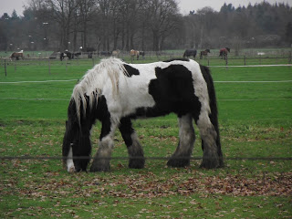
A cudar november után a csendes, meleg december kész felüdülés! A pocsolyák egyre kisebbek, és noha még mindig sűrűn felhős az ég, ezek a felhők több fényt eresztenek át. Emlékszem, amikor kézzel mostam a fekete gatyámat meg a pólókat, milyen víz maradt utánuk. Na, hát többségében olyanok voltak a novemberi felhők. Meg téglavörösek. Meg olyanok, mint amikor fehéret mosol, de abból nem sok eső esett. A szél is szinte simogat, egyáltalán nem olyan vad, hogy le akar szedni a bringáról. Még éjszaka is elég a hosszú ujjú póló, legalábbis a kabát nagyon meleg.
Pedig nem vastag a dzseki, csak polietilén, nem szellőzik, belefülledek. Szakadó esőben is tiszta víz vagyok alatta, mintha rajtam sem lenne. De a szürke kardigán is olyan, csak azt gyapjúutánzatnak csinálták. Már kinézetre.
Tegnap hajnalban elköltözött Arek, és Pjotr, a negyedik srác cuccolt be a cellájába. Ma délután pedig megjelent a Bogár – Tényleg, ez hol volt eddig? Na nem mintha érdekelne… - és addig-addig rámolt, hogy úgy tűnik, ő is elment a fenébe.
Ez a Petya gyerek elég érdekes egy figura. Tök jószívűnek tűnik, meg felszabadultnak, úgy néz ki, élvezi, hogy itt lehet. A múltkor átgyalogolt a fél erdőn, pedig van itt mögöttünk éppen elég, mert egy félóra járásra van egy sivatagos terület. Azt mondja, százévekkel ezelőtt kivágták itt a fákat, és attól lett ilyen. (És nem az Omo-tól.) Elsétált és megnézte. Képeket is csinált az okostelójával, de hát őszintén, mi a fenét fényképezel egy sivatagon?
Mondjuk én is készítettem volna egy párat…
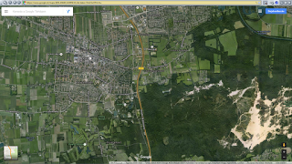
Ezt a Google mutatja, és tőlünk délkeletre jól látszik a sivatag
Szóval ilyen dolgai vannak, meg tök udvarias, előzékeny, egyáltalán nem olyan, mint mondjuk a Zsiráf. Ő eleve nem is tudott normális hangon beszélni. De az már szét is szívta az agyát szerintem.
Ahhoz képest, hogy kisvárosokkal vagyunk körülvéve, elég sok a templom. Romot nem is látni, mindegyiket rendbe hozták. Van olyan, ami 1617-ben épült! Ami a Könyvtárnál van, az sem mecset, rosszul mondta az a magyar srác. Azt hiszem, azt is Péternek hívják. Van ugyan egy mecset, ahogy megyünk a Taxandriabrug felé, de szerencsére az elég kicsi.

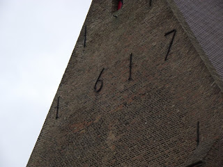
1617... Azért az nem mostanában volt!
Írtam a Mindenkilapján, hogy R'damban vannak közterületfelügyelők. Hát itt nincsenek. Sem biztonsági őr a boltban (bár kamera van), sem rendőrjárőr. Bár pl. tegnap este aránylag sok rendőrkocsit láttam, talán hármat is, vagy ugyanazt háromszor, de hét közben egyet sem. És mégis szépen folyik az élet! Nyugodtan ki lehet merészkedni, nem fognak leütni, kirabolni, megerőszakolni pláne nem, a hollandok tutibiztosan!
Azt hallottátok, hogy Hollandiában több börtönt is be kellett zárni kihasználatlanság miatt?
Jaj Istenem, csak ne lenne ennyi lengyel!
Nem az az egy-két barom izgat, leszarom, annyi mindenhol van. Ez a SOK lengyel zavar! Meg az, hogy a tábor és a közértek között az út mellett mindenhol el van hajigálva a kávés pohártól az energiaitalos dobozig mindenféle. A cigis dobozt ott dobják el, ahol kivették belőle az utolsó szálat. Talán családi házban érezném legjobban magam minden oldalról helyiekkel körülvéve, bár nem tudom, mit szólnának ehhez a hollandok, pláne amikor az első néhány héten folyton kijárkálnék bámulni a házamat, meg az övékét.
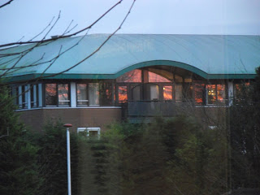
Pl. amikor odasüt a lemenő nap
Mostanra eléggé megbarátkoztam a biciklizéssel mint életformával. Még mindig hangosan káromkodom, amikor ügyetlenül indulok és sokan néznek, de inkább csak derülök magamon. Nincs nagy forgalom, főleg villamos nincs, és a buszok is nagyon ritkák. Sajnos a térdeim ki vannak készülve, de ha időben indulok mindenhová, nem kell gyorsan tekerni, és ez sokat számít.
És így nem kések el, ami főleg sokat számít!
Valószínűleg megkaptam a havi végelszámolást. Onnan veszem, hogy van egy tétel a bankszámlámon, ami jóval alacsonyabb a heti előlegeknél. Részletes listát nem adnak, amiről kiderülhetne, hogy ők hogy számolnak, pedig marha kíváncsi lennék pl. a műszakpótlékokra. Így hát készítettem egy táblázatot, amiben felvittem, hogy melyik napokon hánytól hányig dolgoztam, ezekből levontam a negyed vagy fél órákat, ezek a kisszünetek, amiket nem fizet a cég, és miután nem találtam olyan függvényt, ami jó lenne, kézzel-lábbal – de legfőképpen számológéppel – kiszámoltam, hogy mennyit kellett volna keresnem.
Hát a bruttó az 1155 euró 65 cent 132 és fél órára, de mondom, ebben nincs benne délután, éjszaka, meg szombat. A levonások után (bicikli, arra a százas kaució, bakancs, kégli) 652.65 jött ki, de ebből le kéne még vonni a biztosítást, amit fejből nem tudok, és lusta vagyok most előkeresni a szerződést, de nem lehet az olyan nagyon sok. Tehát mondjuk saccperkábé 6 kilót kapok kézhez havonta, ami ugye első hallásra kurva kevés!
Másodikra nem annyira, ugyanis ebből már csak kajára kell költeni, tehát ez olyan, mintha Magyarországon a sárga csekkek kifizetése után maradna 180 rugód minden hónapban.
Hoppá ridikül! Mi a drága? Hol vannak azok a sült halak és ír whisky-k? Amerikai csokis kexek és tízéves portói borok?
Az Albert Heijn-ben láttam húszévest is!
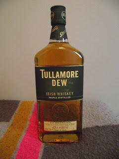
Sajnos már ez is a múlté
2015. december 21., hétfő
- IZZIMO
Nekem rohadtul tetszenek ezek a dátumozások! A karórám yo ötletet adott! :D
Na, ahogy írtam a jó időről, éjjel egy akkora felhőszakadás volt, hogy nagyon! Kezdődött egy sima esővel, aztán amikor már azt hihette az ember, hogy na, a szokásos, úgy rákezdett, de úgy!... És végül egy laza eső levezetésnek.
Megint reggel 6-ig játszottam, de az éjjel java részét a FEAR-rel. Igen, ismét elkezdtem, ha már a Watch Dogs nem akar elindulni, akkor legyen már egy akciódús játék, és szegény Oni-t már lassan unom.
Eltünedeznek az emberek a házból. Pjotr is elment valahova binyiglivel, és nem is tudom, hogy éjszaka otthon volt-e, de valószínűleg nem, mert nem hallottam köhögni. Aztán reggel, amikor kimentem volna pisilni, láttam, hogy foglalt a klotyó.
Aztán még meg tudtam főzni az utolsó 4 tojást, de vizet már nem tudtam ráereszteni. A flakonomból kellett önteni, hogy azért hűljön egy kicsit.
Néhány helyen feltúrták a tábort, és úgy hagyták. Ez mint magyar embernek nem újdonság, majd valamikor visszatemetik, aztán kész, de úgy látszik, ma csináltak is valamit, mert elment a vizecske. Persze ez előzetes figyelmeztetés nélkül, mintegy előkarácsonyi ajándékként, csak itt, csak most, csak önöknek. Ne menjenek sehova...!
Dehogynem! Te azt csak hiszed, hogy ez visszatart engem attól, hogy elmenjek a Könyvtárba netezni! Felvettem tiszta zoknit, tiszta pólót, azt mehetünk!
A munkaidőmet naponta többször is képesek megváltoztatni. Most éppen ott tartunk, hogy este 8 helyett már délután 5-kor kezdek, és hajnalban 2 helyett 3-kor végzek. Mondd már! Több óra, több pénz! Ez nekem nem kitolás!
A holnapi napomat nem is próbáltam megjegyezni, majd hazafelé megnézem a listát, de hát úgyis küldhetnek még sms-eket akár egész délelőtt.
2015. december 28., hétfő
- A MÁSODIK HOLLAND KARÁCSONY
AZ ELSŐ
Először nézzük vissza, hogy telt az első még 2009-ben!
Ezt az Idegenben blogomban találjátok. Íme:
2009-12-31 13:53:36
Elmeséljem, milyen volt a Szentestém? Na jó, elmesélem, ne csak én mulassak rajta!
Tudjátok, még 24-én írtam ide, de aztán "haza" mentem a Voetjesstraat-ra. (Futjeszsztrát. Hülye egy név.) Ez egy kis mellékutca, aminek az a hátránya, hogy a közeli petárda- és tüzijátékboltban vásárolt kellékeket mind itt próbálják ki. És miután ezek egyszer használatosak, visszamennek, vesznek még, és azokat is itt robbantják fel.
Mindegy, megyek fel gyanútlanul, néhány kaja a szatyorban, köztük egy kéteurós húsgombócos csomag.
Ezek ilyen kis fasírtgolyók, barnák, először azt hittem, kész is vannak, csak meg kell enni őket, de aztán volt annyi eszem, hogy megkérdeztem egy ott dolgozó kisgyereket, hogy miúsjág ezzel, és ő mondta, hogy be kell tenni a mikróba 80 másodpercre.
Ezen nem fog múlni, van mikrosütő is a lakásban. Még jó is, mert nem kell hozzá mosogatni semmit. Azt az egy edényt, amiben beteszem, elcsutakolom meleg víz alatt.
Itt jegyezném meg, hogy már nem volt pénzem effajta úri huncutságra, mint mosogatószer. A két mosogatószivacs büdös és penészes, a mellette ázó edényekhez sem volt semmi gusztusom - ha lehet, meg sem fognám őket. A konyhában gyakorlatilag minden úgy van, ahogy találtam, amikor beköltöztem.
A tévét már meséltem, nem fog adást (gondolom, ki van kapcsolva a hálózatból), és nincs is hangja. A DVD lejátszó csak DVD formátumot meg Mp3-at hajlandó lejátszani. Utóbbi értelmét vesztette, előbbiről csak annyit, hogy a Lusta torna c. műsort nézhetném hang nélkül, ahhoz meg most nincs kedvem. Rádió a telefonomban, Mp3 lejátszó ugyanott, de az sem az igazi egy lakásban.
Ekkor betettem egy nagyjából kisikált tányérra téve a fasírtocskákat a mikróba. Furcsa volt, hogy ki van húzva a konnektorból, talán egy telefont töltöttek előtte, és elfelejtették visszadugni. Eltekertem a gombot, és puff, abban a pillanatban sötét lett.
Szia, dobozos!
Sem fűtés, sem világítás nem volt az egész lakásban. Van ugyan egy gáztűzhely, de az is elektromos gyújtással megy. Nincs gyufa, a lakásban található két öngyújtó kifogyott - ezeket már korábban sikerült megállapítanom.
Nekiálltam biztosítékdobozra vadászni a sötétben. Az nyilvánvaló, hogy valahol fent kell lennie, a mennyezet alatt. Mindenhol így csinálják, talán a gyerekek miatt.
Sehol nem találtam. Igaz, nem is nagyon láttam semmit.
Kimentem az ajtó elé. Van három szomszédom, a mellettem levőnél égett is a villany. Becsöngettem, többször is, de senki nem nyitott ajtót. Becsöngettem a mellette levőhöz is, az sem jött ki. A harmadikhoz már nem is próbáltam.
Milyen környék lehet ez, hogy nem mernek ajtót nyitni?
Most mi a fenét csináljak Szenteste a sötétben? Ettem egy kis hideget, aztán lefeküdtem aludni.
Egy órával később már határozottan hidegebb volt a lakásban.
Hajnalban pedig rohadtul hideg lett. Felkeltem, és dideregve, hangosan, teljes meggyőződéssel kijelentettem:
- Tele van a ....om! - aztán hozzá tettem:
- Boldog Karácsonyt!
Mégegyszer körülnéztem, immár napfénynél, és a sufniban, második rácsodálkozásra, a feljebb említett testrésszel egy magasságban ott volt a biztosíték panel.
És most vissza a jelenbe!
AZ ÖSSZEKÖTŐ
Rájöttem, hogy az Úristen egy összekötőt küldött nekem, hogy megvilágítsa, mennyire hanyag vagyok a dolgaimmal kapcsolatban, és segítsen nekem, hogy rendbe tegyem ezeket. Ez az a srác, aki itt volt látogatóban a Bogárnál. Persze a nevét abban a pillanatban elfelejtettem, amikor bemutatkoztunk egymásnak. Most összefutottunk néhány szünetben, és mondhatom, csupa frankót mondott.
Például hogy nincs műszakpótlék, a Docdata (de szerintem a közvetítők) minden napszakban 8.70-et fizetnek. A szombat másfélszeres, a vasárnap kétszeres pénz.
Igen, mondom, hogy én is fitogtassam a tudásom, az ünnepnapok pedig háromszoros – de erre még én sem mertem volna megesküdni.
Meg a be- és kijelentkezések. Hogy ha pl. 9-kor kezdesz, és 9:00-kor pöttyinted oda a chipedet, akkor már elkéstél. Negyedórás etapok vannak, és ha :00-kor jelentkezel be, akkor az már 9:15, ettől számolnak. Amikor viszont kijelentkezel, teszem azt hajnali 2-kor, akkor 1:45-nek számol, meg kell várni a 2:01-et.
Ez így hülyeségnek tűnik, de én tudom, hogy lehet így programozni számítógépet, tehát hülyének hülye dolog, de semmiképpen nem lehetetlen.
A biztosítási pénz. Havonta levonnak x eurót biztosításra, de ha nem éred el az évi y összeget, ebből nemtommennyi százalék visszakérhető. Még Győrben a lelkünkre kötötték, hogy keressük meg a biztosítót és kérelmezzük ezt, elég csak egyszer, de ezt a srácot a bizticég kereste meg, hogy adja meg a pontos elérhetőségét, mert pénzt szeretnének neki adni. Van, akit így szeret a Jóisten.
Egyszer kaptam egy email-t a Kamiltól, hogy beregisztrált az Isabel-be. Majdnem kitöröltem, mert a spam-ek közé érkezett, de valami derengett Isabel-ről, és a Kamil név... Szóval rákattintottam, és kiderült, hogy ezen az oldalon olvashatom, hogy milyen időbeosztásban leszek. (Na, sokat érek vele, amikor van, hogy naponta kétszer változtatnak rajta!) Namost a MyOtto-nál viszont részletes havi elszámolás is van, érdemes (sőt kötelező!) odaregisztrálni.
Sok ilyen dologról volt szó, sajnos csak érintőlegesen tudtuk átvenni így negyed- vagy félórákban, majd feltétlenül össze kell jönnöm vele hosszabb időre is!
A KU... A KU...
Van az a nagyon régi vicc, hogy Mórickáék szállodába mennek, és rossz a lift. Fent a századik(?!) emeleten kapnak szobát, és a recepción ki van téve egy tábla, hogy káromkodni tilos.
Na, battyognak felfelé, egyszer csak Móricka megszólal:
- A ku...
De az anyja rögtön letorkolja.
- Nem szabad! Fogod be rögtön a szádat!
Ez így megy a tizen-huszon-sokadik emeletig, aztán amikor felérnek végre, az öreg rájön, hogy nem tudnak bemenni. Mire Móricka:
- Én már a harmadik emelet óta akarom mondani, hogy a kulcsot a portán hagytuk!
Ez nem egy nagy vicc, és az még kevésbé volt humoros, ahogy én jártam.
Az úgy volt, hogy szerdára szabad lettem volna, mára (24-e) kellett volna a héten utoljára mennem, de persze beleszartak a palacsintába, és küldtek egy sms-t.
Ezekkel az sms-ekkel ki tudnának kergetni a világból! Odalett a szép terv, hogy bemegyek Waalwijk-be vásárolni meg internetezni, meg talán még a Mc-ben folytatom, ha kevés volt a bitekből és byte-okból, és majd valamikor este esek haza. Ehhez képest éppen hogy el tudtam készülni sietség nélkül és útközben a Plus-ban vásároltam, hogy beérjek időben.
Már maga az elgondolás is szörnyű volt: délután 3-tól hajnal 3-ig meló. Vettem egy kenyeret, meg két csomag olyan zöldséget, amiben volt némi csirkemell, meg mint később kiderült, salátaöntet. Sajnos a csirkemellel kapcsolatban a némit szó szerint kell érteni, de ez persze csak akkor derült ki, amikor kicsomagoltam, és láttam, hogy egy kicsike tálcán van egy pár falat, ami a nagy tálcára volt biggyesztve.
(Erről persze egy másik vicc jut az eszembe, mintegy kárpótlásul az előzőért, én legalábbis jobban szeretem.
Egy 56-os magyar, aki kint megszedte magát, hazajön látogatóba. A reptéren odamegy a kávéautomatához, bedob egy bélást (régi vicc!), megnyomja a gombot, és... semmi. Bedob még egy bélást, gombot nyom, semmi. Bólogat:
- Hm... Ügyes!)
Ebből egy csomag volt 3 euró. De ennél nagyobb gond volt, hogy a zsebemben felejtettem a biciklikulcsot. És az öreglány befelé nem ellenőrzött. És már bent jutott az eszembe, hogy OK, hogy behoztam, de hogy fogom kivinni?
A helyzet az, hogy miután sokat járok Könyvtárba, gondoltam, sokkal egyszerűbb lesz, ha egy kulcskarikán tartok mindent: bringakulcs, a ház kulcsa, Louise, és egy mikro SD kártya olvasó, amivel a képeket szedem le a fényképezőgépből. Namost itt egy csomó műszaki cikk is van, és mondjuk nem láttam 16 gigás SanDisk Cruzer Blade pendrive-ot, de ez nem jelenti azt, hogy nincs is. És azt sem jelenti, hogy nem fognak faggatózni, amikor kifelé menet megtalálják nálam.
Bementem az irodába, ahol Kamil éppen egy csajjal dumált. Nem tudom, ki lehetett a hölgy, de eléggé elfogódott volt, mintha munkára jelentkezett volna. A fura az volt, hogy nála volt a retikül, nekünk pedig nem szabad még gyűrűt vagy karórát sem bevinni, nem hogy egy egész táskát. Mindegy, ez legyen az ő gondjuk!
Amikor sorra kerültem, mondom, hogy mi van, erre azt mondja Kamil, hogy adjam oda neki, ő majd beleteszi egy borítékba, és leadja a portán. Aztán ha már ott voltam, mondom neki, hogy vannak ezek a ki-bejelentkezések, és amikor inbound után át kell menni pickingelni, és odanyomom a chipem, akkor gyakorlatilag kijelentkezem, mert mindig elfelejtek funkcióbillentyűt nyomni hozzá. Erre is azt mondta, hogy nem baj, mert ők meg naponta figyelemmel kísérik a dolgokat, és korrigálnak.
Na, ha ez valóban igaz, az nagyon megnyugtató! De én felmegyek majd a MyOttóra is, és utánanézek, hogy mit számoltak el nekem novemberre, mert ugye van az az arab közmondás, hogy bízz Allahban, de azért kösd ki jól a tevét!
Amikor kijöttem, egy magyar srác ment be utánam, akit ha jól emlékszem, Tóth Istvánnak hívnak, és később még találkozunk vele.
Szóval volt forgalom elég, és meló is volt sok, úgyhogy nem unatkoztunk, és nem unatkoztak az irodában sem. Szerencsére nem kellett bennmaradni 3-ig, egy harminckor már elköszöntek, boldog Karácsonyt kívántak és elzavartak haza. Én még ezzel a Pista gyerekkel felmentem a kantinba, megettem a maradék kajámat, és közben vele is tök sokat dumáltam. Ő már beadta a felmondását, még vasárnap megy utoljára, aztán irány Németország. Mondom neki, hogy abban az a legrosszabb, hogy jó német nyelvtudást követelnek meg mindenhol. Azt mondja, elég az alap is, de, mondom, nekem még az sincs meg. Ő viszont két évig kint élt Ausztriában, úgyhogy ezzel nem lesz gond. Hát, vannak még boldog emberek!
Na, amikor leértünk, érdeklődtem, hogy leadtak-e egy kis csomagot a nevemre. Egy darab biztiőr srác volt, de az mondjuk kitett kettőt. Felületesen végigpásztázta az asztalt, ez kb. fél másodpercébe telt, és közölte, hogy nem.
Ez magyarul azt jelentette, hogy gyalogolhattam haza, és ki tudja, meddig dörömbölhetek Pjotr ablakán, mire felriad és kinyitja az ajtót, vagy kiadja az ablakon a kulcsot. Micsoda kilátások!
István nagyon rendes volt, felajánlotta, hogy megpróbáljuk az ő kulcsával meghekkelni a bringámat, meg hogy valamelyikünk ülhetne a csomagtartóra, de hát ezek inkább csak agymenéses alapon jöhettek szóba, nem kínáltak igazi megoldást.
Közben hasonló esetekkel szórakoztatott, mint például előző napon még nagyon le volt engedve az ülés (kölcsönbringáról van szó), és az a bitang erős szél fújt, minden egyes taposás halálos fáradságába került. Vagy hogy lusta volt kaját venni, de az egyik lakótársa megkínálta olajos hallal. Ő főzött hozzá tésztát, de sem olajat nem tett rá – olajos hal mellé minek? - meg sem sózta, aztán bent a munkahelyen vette észre, amikor bontani akarta a halat, hogy nyitó kellett volna hozzá. Na meg a kerékpárok! Egy kölcsönbringáról az első kereket bugázták le fényes nappal az Albert Heijn előtt, ahol ki-bemászkáltak az emberek. Volt olyan, amikor az első és a hátsó kerék is le volt lakatolva, akkor a pedált lopták le róla.
Győzködtem, hogy menjen nyugodtan haza, miattam ne aggódjon, de csak a Taxandriabrug után unta meg annyira a mellettem való vánszorgást, hogy elkerekezzen.
Nem lehetett több másfél óránál, amíg hazaértem. Éreztem, hogy jó tempóban megyek. A házhoz érve a bal oldalon bezörgettem Pjotr ablakán, de csak azt hallottam, hogy horkol. Zörgettem, szólongattam, de tudtam, hogy ha tovább folytatom, legfeljebb csak a szomszédok fognak felébredni. Pisti ugyan felajánlotta, hogy ha nem jutok be, alhatok náluk, de fontos volt, hogy még reggel előtt bent legyek, mert meg akartam írni vagy beszélni, hogy Pjotr hagyja ott a kulcsát. Ha máshol alszom, és ő elmegy, mielőtt megtalálom, ugyanott tartok, ahol most.
És volt egy titkos adum: tudtam, hogy a kétágyas ablaka nyitva van.
Ezek az ablakok úgy vannak megszerkesztve, hogy az ablakszárny alsó felén van egy acél kar, amiben furatok vannak, az ablaktok alsó részéből pedig kiáll egy pecek. A karral tudod szabályozni, hogy mennyire legyen nyitva az ablak, így nem csapja be a szél.
Hátulról kerültem meg a házat, mert már nagyon kellett pisilnem, aztán megnéztem, és valóban egy-két ujjnyira nyitva volt. Benyúltam és felemeltem a kart. Sarkig tártam, most már csak azért aggódtam, hogy beleakadok az acélpöcökbe, amíg mászom befelé.
Előre kerültem, és felkaptam a szemetest. Ez nem vödör, csak egy plasztik váz, amibe zsákot teszel, és van egy fedele is. Már kezdettől nem használjuk semmire, mert a macskák úgyis szétcincálnák, inkább bent gyűjtjük, aztán amikor tele a zsák, valamelyikünk kiviszi.
Na, fogtam ezt a műanyag héjat és odatettem az ablak alá. Ráálltam, simán elbírt, innen már nem volt nehéz felhúzódzkodni, és átvetni a lábam. Még arra is ügyeltem, hogy ne az ágyneműre tegyem a bakancsom, hanem a mellette levő asztalkára.
Érdekes, itt is van asztalka, meg a mellettem levőben is, csak nekem nem jutott!
A párkányon megtaláltam Bogár mosózsetonját, azt szépen zsebre tettem, és becsuktam az ablakot. Nem hiányzott, hogy más is megtegye ezt a tornamutatványt.
Fogtam az egyik borítékot, amit a banktól kaptam, és írtam egy levelet a Peti gyereknek, hogy hagyja az ablakban a lakáskulcsot, ha elmegy itthonról, mert az enyém Kamilnál maradt, és lefeküdtem aludni. Három óra volt.
SZENTESTE
Jól is tettem, hogy időben odatettem a levelet, mert amikor felkeltem, P.-nek hűlt helye volt. Reggel még félálomban hallottam, hogy használja a fürdőt. A kulcs ott volt a nappali nyitott ablakában, ahová azelőtt tettük. OK, ez rendben van. Bogár bringáját elvitte, a másik itt áll. Az asztalon egy kulcs, de hiába próbáltam, nem illett bele, azt a szobájában tarthatta. Nem akartam bemenni, inkább besétáltam Kaatsheuvel-ben az Albert Heijn-be és vettem ezt-azt. Már hazafelé jöttem, amikor eszembe jutott, hogy csak a tojást felejtettem el. Van még két pástétom a hűtőben, megfagyva, mert nincs ajtaja a mélyhűtőnek, meg két csirkecombot vettem, hát az nem lesz elég két napra. (Karácsony másnapján is nyitva az AH.) Most menjek vissza? Hát nem megyek!
Arra a döntésre jutottam, hogy begyaloglok a Docdatába, a második kulccsal el tudom hozni a bringámat, aztán ha megvan a kulcscsomóm, jó, ha nincs, majd meglesz két ünnep között.
Jobban fájt a lábam, mint gondoltam. A sarkamra, a talpamra alig bírtam rálépni. Hazafelé jövet be lehetett már dagadva a cipőbe az egész napos járkálás után, de így egy kicsit mozgott benne, és főleg a lábujjaim súrolta. Sokkal tovább tartott, amíg beértem.
Útba ejtettem a Nettoramát és vettem egy doboz L méretű tojást, itt csak 1.99, az AH-ben 1 euróval több, meg egy tábla aprómogyorós csokit, meg két nulla-harminchármas multivitamint, ezeket az útra.
Mindenféleképpen meg kellett tennem az utat előbb-utóbb, hiszen ha el is kérhettem volna P. gépét, nem tudom azon a hosszú távon a két bringát hazakormányozni. És így, hogy szinte naponta mehetek vásárolni, hadd ne kelljen már gyalog megtennem az utat a boltig meg vissza!
Az internetezésről eleve lemondtam, jobb a békesség. Ha azt választom, nem tudni, mennyi időm lett volna, amíg a Könyvtár meg a Mc bezár, és vagy hazajövök és leteszem a gépet, vagy azzal a hátamon megyek be a munkahelyre, de hogy senkit nem találok az irodában, az tuti. Így még fel tudok telefonáltatni a portáról.
De nem kellett, ott volt a kulcscsomó. A fiatal csaj volt, és mondta, hogy tegnap is itt volt, csak a kolléga nem vette észre.
Aranyos kispofám! Előbb kezdtük az ünnepet? Elszívtunk pár slukkot a kapu előtt, és már alig vártuk, amíg hajnali kettőkor hazaavászkodnak a zombik? Ejnye-bejnye! Én meg sétálhatok tönkre rakott lábbal!
Mindegy, már túl vagyok rajta. Pár napig tré lesz, alig tudok ráállni, de hát ebben a korban ne siránkozzon az ember!
Itthon nekiálltam ennek a blognak. Amíg guberáltam az Idegenben bejegyzései között – kimentettem Word-ben -, elkapott a nosztalgia. Nem volt jobb akkor sem, sőt szarabb körülmények között éltünk, de a stílusa néhol nagyon tetszett, ahogy írtam.
Petykókám kiült a nappaliba és az okostelóján hallgatott karácsonyi énekeket, néha meg felhívott valakit, gondolom az anyját. Én azt terveztem, hogy megnézem mégegyszer a Nem vénnek való vidéket, vagy egy másik filmet, de helyette felkucorodtam az ágyra és szundiztam.
Holnap folytatjuk!
27-E VASÁRNAP
Kell-e mondanom, hogy semmit nem csináltam Karácsony alatt?
Rántottát ettem sok hagymával, meg főtt tojást, meg azt a két combot, amit még Szenteste napján vettem, persze két részletben. Elmajszoltam a Docdatás csokit. Na nem egyszerre, mert 24 deka volt! Délelőtt gyümölcsöt, délután zöldséget ropogtattam, bár utóbbi hamar elfogyott, és nem mentem tegnap vásárolni. Úgy voltam vele, hogy éppen van annyi kenyér, ami elég lesz ma reggelig, ma már mindenképpen vennem kell kaját holnapra is. Tullamore Dew-t ittam, a bort még nem bontottam fel.
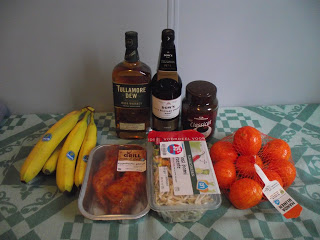
Csendélet a Grizzly barlangjában
Unatkozni nem unatkoztam, mert olvasgattam, pl. Németalföld történelmét. Aszongya: "Amikor visszaállították a helytartóságot, IV. Vilmos sem igen hajlott a kormányzás általános reformjának bevezetésére. 1751-ben ráadásul már meg is halt..." Na, ezzel is csak a gond van!
Tegnap a délutáni szunyóka alatt megálmodtam egy vidám és izgalmas novellát, leírtam a vázlatát, remélem, ebből már lesz valami. Valamikor...
Meg néztem filmet, Az eltakarítónő (Keeping Mum) pompás választás volt! Kristin Scott Thomas szinte lubickolt a szerepében, Rowan Atkinson hozta a tunya formáját, Tamsin Egerton nem szégyenlős, és Maggie Smith mindent megold a maga egyszerű módján:
- ... Bár én ki nem állhatom ezt a típust.
- De nem gyilkolhat meg mindenkit, akit ki nem állhat!
- Az orvosaim is mind ezt mondták. Ebben az egyben sosem értettünk egyet.
Meg persze játszottam. A FEAR eléggé lekötött. Nehéz pályán futottam, és amikor jöttek azok a háromszög alakú izék, és nem úgy robbantak fel, ahogy én azt akartam, csaltam egy kicsit, és vissza-visszamentem, hogy tökéletesen intézzem el őket. A Garage Battle-t viszont egy húzásra megcsináltam, nyilván segített benne a frankó zene is.
Tehát sehol nem voltam, ki sem dugtam az orrom a kégliből, kizárólag a vécéig mentem el, meg a konyháig, aztán vissza a cellámba. De ma már kénytelen leszek, és ez így a jó!
28-A
Na persze, meg ahogy én azt elképzeltem!
Szépen elkerekeztem a McDonald's-hoz, találtam helyet, ahol van kettőhúsz, kipakoltam a gépet, felmentem a Netre, két email fiókot nagyjából rendbe raktam, erre elment a Net. Nesze!
Ma, hétfőn is csak azért tudok itt ülni a Könyvtárban, mert annyira nem volt meló, hogy délben mindenkit hazazavartak. Hát mi a fene lesz ennyi emberrel, ha ilyen kevés munka van?
2015. december 31., csütörtök
- SZILVESZTER
Hát eljött az év utolsó napja is! Már napok (inkább hetek) óta durrogtatják a petárdákat, tűzijátékokat. Tegnap a Könyvtárból hazafelé láttam is egy párat felröptetni. Szép volt.
Nem tettem fel blogot tegnap. Hivatalos dolgoknak próbáltam utánanézni, de a vége az volt, hogy „esse, asse”. Helyette letöltöttem A Frei dossziéból egy párat – azt hiszem, szépen lassan leszedem majd az összeset - meg 3 filmet, és otthon meg is néztem őket. Na nem nagy szám, Az Őrült Nők Ketrece. Az első részből arra emlékszem, amikor (ha valaki megnézi, 1:04:15-nél) Michel Serrault bejön öltönyben. Ugo Tognazzi és a filmbeli fia csak nézik, ahogy besétál, leül, és megpróbál férfiként viselkedni. Nem egészen két perc, de ezért a két percért én Oscart adtam volna!
A MyOtto weblapján van egy oldal, ahol a kollégák hozzászólása olvasható. Csak belekukkantottam, de csupa elégedetlen írás volt. Nem kaptak összesítőt, meg ilyenek. Nos, én kaptam, de ez 5 hétről szólt. Fogalmam sincs, hogy miért így számolnak, de legalább kaptam. Teljes november, és december első hete. Az hagyján, hogy hollandul van, mert a Google még lefordítaná, de tele van rövidítésekkel, amivel nem tudunk mit kezdeni.
A Deák Ferenc utcai társasház elszámolása ennél szegényebb volt részletekben, pedig ott több pénzről szólt. Valami ilyesmit kaptunk muterral: 1 423 972 forint = 1 423 972 forinttal. Aha. Kösz szépen! Persze Batári út úgy lopta meg a házat, ahogy csak bírta, és a végén, amikor az Immobilia, vagy hogy hívták azt a céget, amelyik megvette és felújította a Bécsi és a D. F. utcát, hozzánk is elért, úgy szállt ki, hogy kapott pármillió forintot, a másfél szobás helyett pedig két normális méretű lakást.
Az én elszámolásom természetesen ennél sokkal szerényebb. Mindjárt bele is megyünk a részletekbe.
Azt tudjátok, hogy az első három részlet, amit ezek hetenként utalnak, a MagNet-es magyar bankszámlámra jött. A negyedik már az ING-sre, egészen pontosan így kaptam oda pénzt:
dec 15. 114.38 Ez annyira nem kerek, hogy ez lehetett az a 30e Ft, amit én utaltam át saját magamnak a magyar számláról a hollandra.
dec 17. 90 Ez lesz az elszámolás.
dec 24. 120 Ez meg már a szokásos heti előleg szerintem.
Azt írtam, hogy szerintem megkaptam az elszámolást, mert jött egy olyan tétel, ami kevesebb, mint a szokásos. Hát az a 90 euró kellett hogy legyen. Már csak azért is, mert a MyOtto oldalán az öthetes elszámolás kelte december 15-e, így jelenhetett meg két nappal később a „maradék” kiküldése a számlámon.
És ezt írják:
Ledolgozott órák: 153.75 Ezért jár: € 1337.67
Szombati órák: 5.75 Ezért jár: € 75.04
Túlórák: 2.50 Ezért jár: € 10.88
Ezt a 85.92-t a ledolgozott órákból vezetik le.
Adó, ami az alapból (1337.67-ből) lejön: € 167.40
Tehát marad €1170.27
De még jön a szállás, amit ők így részleteznek:
Ded. rent 347,72-
Ded. damage accomodation 50,00-
Ded nom contr Care Ins Ac 95,30-
Whk EE contr. Tot. 2,87-
Csak tudnám, mik ezek!
A 347.72 a sima bérlés. Na de damage accomodation? Nem rontottam el semmit! És a másik két tétel vajon mi lehet?
Miután levettek, mint a kalapot, a kifizetendő €674.38
Ebből levonnak erre:
Deduction advance payment 560,00-
ami nyilván a már kifizetett előlegeket jelenti (pedig azok sem érték el a 140-et!), tehát marad tisztán €114.38, amit át is utaltak az ING-s bankszámlámra.
És oda már kereken €90 eurónak érkezett meg. Magyarázza már meg valaki! Mert olyan tétel sem volt a bankszámlámon, hogy 24.38-at levettek volna kezelési költségnek. (Szép is lett volna!) Ha 114.38-at küldenek, az miért jelenik meg 90 képében??
De a szombati nappal is gond van, ugyanis 7 órától 15:40-ig az 8 óra 40 perc. És nem 5 és háromnegyed óra. (Ők 15 perces etapokban számolják az időt, hogy könnyebb legyen kiszámítani az órabért.) De itt lenyúltak 3 órát, ráadásul másfélszeres pénzen.
A többinek utána sem néztem.
Csoda így, hogy ennyi elégedetlen bejegyzés volt az oldalon?
Na de nézzünk vissza egy kicsit derűsebben erre az évre!
Hogy Magyarországon mi megy, azt inkább felejtsük el, majd ha elég erőt érzek magamban, megírom a Mikit. Viszont ahol ennyi náció összejön, ott a közös vécékben is érdekes dolgokra lehet bukkanni. Íme két gyöngyszem:
Here I sit broken harted
I came to shit but only farted
Ami magyar fordításban talán így nézne ki:
Itten ülök csalódottan
Szarni jöttem, de csak fingtam
Mire a válasz:
So what a hell
Sit here
Enjoy the smell
Ami így hangzana magyarul:
Mit akarsz hát?
Ülj itt
És élvezd az illatát
Még Karácsony előtt kaptam egy sms-t, aminek a hatására majdnem hazaindultam: Új elnöke van Magyarországnak!
De aztán újraolvastam, és úgy döntöttem, mégis maradok.
Kellemes Ünnepeket
kívánok Neked és
családodnak! Az új
évben is élvezd az
eddigi legjobb
hálózatunk minden
előnyét! Dr Beck
György. Vodafone
Magyarország elnöke
Szóval fel a fejjel, ez még nem a vég, lesz ennél sokkal, de sokkal szarabb is!
Ha otthon maradsz Magyarországon.
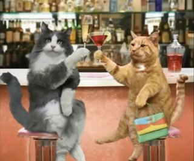
2016. január 5., kedd
- 2016!
IESU
Ez persze 1. hó 3-át jelenti, de ezt már talán így is tudjátok.
Természetesen sehol nem voltam Szilveszterkor, sem utána. De szó szerint! A konyháig/nappaliig meg a vécéig mentem ki a cellámból, meg vissza. Azt annyi. Tegnap már tényleg betegnek éreztem magam, úgy hiányzott a mozgás, de persze annyira azért nem, hogy ki is menjek akár a ház elé.
Ma viszont elmentem végre az AH-be!
Igen, mert már napok óta nem volt zöldségem, és nem is hittem volna, hogy így rákattantam. Egészséges is, mert szinte semmi kalória nincs benne, viszont teletölti a bendőt. Kajám az volt, mert sokáig nem mertem hozzányúlni a kicsivel több mint egy kiló csirkemellhez, meg volt azért 1-2 konzervem is sicher ami fixalapon, de hát a zöldség, és egy kicsit hiányzott a csoki is.
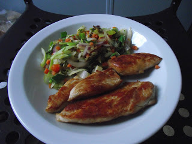
Pedig ez kifejezetten jól sikerült!
Na, elmentem az AH-be, ami az Albert Heijn rövidítése, és vettem vörös- és fokhagymát, egy kenyeret (ja, az is elfogyott), egy 45 dekás zöldségkeveréket… Gyümölcsöt most nem vettem. Van még két mandarinom, meg 2-3 banánom, meg nem is nagyon fértem oda, mert folyton jött valaki, aki elém állt, nem tudtam böngészgetni, így hát otthagytam a francba. Viszont vettem egy tízdekás csokit 85%-os kakaótartalommal, és ha már, akkor egy félliteres csokihabot is.
Egy korsó! Pár évvel ezelőtt ez nem fordulhatott volna elő, hogy sör helyett fél liter csokihabot vegyek!
Meg aztán rábeszéltem magam egy negyed kiló kesudióra is, az puhább, mint a mogyoró. Namost ez idekint sem olcsó mulatság, €3.99, de pl. egy doboz piros Pall Mall is, ami ráadásul csak 19 szál, €5.60, úgyhogy azt hiszem, néha megengedhetem magamnak, hogy ilyesmivel kényeztessem magam. Miután ezek között nem volt bonus árú áru, legalábbis a csaj nem kérte a bónuszkártyámat, a 7 árucikkért összesen 10 euró 79-et fizettem. (Azért nincs kerekítés, mert bankkártyával pengettem.) Erre a kiscsaj, még az elején, amikor levettem a hátamról a zsákot, hogy előguberáljam a „kártyapaklimat”, aszongya:
- Láthatnám a csomagját?
Először nem is értettem, illetve azt hittem, nem értem jól, hogy mit akar. Rákérdeztem, de ugyanazt mondta.
Hát én nem tudom, talán túlérzékeny lettem idekint, beborított a naaagy rózsaszín felhő, hogy most már itt lehetek Nyugat-Európában – egyáltalán Európában –, vagy mi, de tök kiakadtam rajta! Persze megpróbáltam úgy tenni, mintha nem, meg is mutattam szép türelmesen a zsák másik két zsebét is, ő meg szépen megköszönte külön mint a hármat, de komolyan mondom, hogy nagyon rosszul esett. Jó, hogy nincs biztiőr, legalábbis nincs bent az eladótérben, de be vannak kamerázva, ha egy pillanatra is levettem volna a hátamról azt a szart, megértem, hátha belepottyantottam valamit, bár nem tudom, hogy mit, mert a piák közelében sem jártam, talán még egy félkilós zsák vöröshagymát, vagy egy másik szelet csokoládét…
A kurva anyját neki!
Na megállj, gondoltam magamban, haza megyek, és bosszúból a FEAR-en szétlövöm mindenkinek a seggét! Kár, hogy katonák meg démonok ellen kell harcolni, és nem tizen-húszéves pénztáros picsák ellen!
De az sem volt olyan egyszerű, mert ahogy a végéhez közeledem, egyre keményebbek a fiúk, nekem legalábbis úgy tűnt most. Úgyhogy inkább a Drábik János Tudatmódosítás c. könyvét szerkesztgetem. Idegesített, hogy nem sorkizárt, inkább áttettem .odt-be, ez a LibreOffice szövegszerkesztőjének a formátuma, és ott javítgatom. Tele van ugyanis mindenféle hibával!
Az hagyján, hogy minden sor végén Enter van, bár nem egyeznek pontosan a sorvégek a .pdf-fel, még összecsúszva is vannak szavak. OK, esetleg még a kimásolás során is történhetett, bár nem hiszem, és lusta vagyok utánanézni, hiszen úgyis át kell szerkesztenem az egészet, hát nem mindegy?, de vesszőhibákat is találni benne, meg ragozásit is, pl. Cathy-ban stb.
Ezzel most jól elvagyok. Holnap már nyitva lesz a Könyvtár, és nem merem megígérni, mert akkor nem tartom be, de szeretnék benézni.
Felbontottam végre a késői szüretelésű portóit.
Fenséges!
ISTU
Na persze, hogy nem voltam tegnap Könyvtárban!
Reggel 6-kor feküdtem le, dél körül ébredtem, és egészen olyan voltam, mint a mosott szar. A kávé sem segít ilyenkor, csak jobban megkavarja a dolgokat. És ahelyett, hogy visszafeküdtem volna, inkább fent maradtam, és megpróbáltam úgy tenni, mintha friss lennék, de csak áltattam magam. Aztán egyre nyilvánvalóbbá vált, hogy nem jövök be, így egy kicsit megnyugodtam, és befejeztem a FEAR-t. Most már nincs mivel elfoglalnom magam, ha lövöldözni akarok.
Persze feltehetnék valami másik játékot, pl. a Halflife-ot, az még hasonlít is ehhez, és még egyszer sem fejeztem be. Igaz, azért nem, mert tudom a végét, és már nem lesz annyira érdekes. De nem könnyű, és néhol egészen beszarok tőle.
Vagy megpróbálhatnám a Mirror's Edge-et, bár szerintem ha a Watch Dogs nem indult el ezen a gépen, akkor az sem fog. Csak nehogy megint a Renegade mellett döntsek! Azt már kívülről fújom, és olyan sokszor játszottam, hogy semmi új nincs benne. De hát ez legyen a legnagyobb problémám!
Hacsak nem újítanak, holnaptól ismét dolgozom. Szerda-csütörtök-péntek 7-től fél 5-ig.
Mármint reggel 7-től délután fél 5-ig!
De nem bánnám, ha áttennék 9-re a kezdést, és inkább bent lennék fél 7-ig, úgysem lesz érdemes Könyvtárba jönnöm. Cipeljem a laptopot a zsákban azért, hogy egy órát ülhessek itt? Esetleg ha előbb elengednek, de tudod, mit? Inkább dolgoztassanak tovább, abból van a pénz! Aztán a szabad napjaimon el tudok jönni így is.
A portóiból egész kevés maradt már. Jó is, hogy jönnek a munkás hétköznapok, így könnyebben megállom, hogy vegyek egy másik üveggel.
2016. január 11., hétfő
- KAPKODÓS
Miután múlt héten reggeltől kellett dolgoznom, nem cipeltem magammal a laptopot. Fél 4-kor végzek, négy-fél öt, mire beérnék a Könyvtárba, azok meg 6-kor zárnak. Ezért legyen a hátamon a zsák oda-vissza?
Pénteken odahozott Szylwya egy csajt és megkérdezte, hogy ismerem-e.
- Igen, már egy párszor találkoztam vele.
- Ő is magyar – mondta, és olyan elégedetten mosolygott, mintha azt közölte volna, hogy kigyógyultam a rákból.
Ennek ez a mániája, de megfigyeltem, hogy akiket bemutatott, azok hamarosan elköltöztek a fenébe, mert nem bírták tovább a kevés óra (kevés pénz) – sok csesztetés kombinációját. Pedig kár lenne, mert Krisztina szimpatikus, kiszúrtam már korábban is, csak azt hittem, lengyel.
K.-ról kiderült, hogy suliba jár, de miután kell a pénz, inkább halaszt néha 1-1 évet, addig is itt dolgozik a Docdatában.
- Milyen suliba jársz? - kérdeztem.
- Főiskolára.
- Azt sejtettem, de abból sok van. Mit tanulsz?
- Informatikát.
Ó! Mondtam már, hogy szeretlek?
Pedig hányszor elmentünk egymás mellett! Hát ki gondolta volna, hogy magyar?
Meg nem is mertem volna megszólítani.
Jó, ilyeneket lehet kérdezni, hogy mikor kezdtél ma, meg mióta vagy kint, de már meg sem merem kérdezni egy csajtól, hogy melyik országból jött, annyi itt a lengyel.
(Volt ugyanis már ilyen párbeszédem:
- Szia! Honnan vagy?
- Lengyelországból – fordult felém lelkesen a csaj.
- Aha… Jól van… - és odébb húzódtam, mint a hagymaszag. Mi a fenét kezdjek vele?)
Neki elárultam, hogy Magyarországon hajléktalan voltam, és ez érdekli is. Már nem én, hanem a hajléktalan élet, a körülmények. Először el akartam kérni az email címét, hogy kicsipegetek a blogokból, és átküldöm neki, de nem akartam tolakodó lenni (ez majdnem olyan, mintha a telefonszámát kérném el), hanem inkább megadtam neki az Idegenben meg a Szertelen blogja elérhetőségeit, szemezgessen ő.
Viszont ezért nem is nagyon írok róla többet, hiszen valószínűleg olvasni fogja azt is. Azt meg nem akarom, hogy elbízza magát.
Csak a gyenge nő sír, az erős az vásárolni megy – ahogy a Faszbúkon több posztban is olvasható. Ki akartam próbálni, hogy milyen érzés lehet erős nőnek lenni. A nappaliban úgyis kiégett az egyik izzó a kettőből, meg kéne már venni egy konyhamérleget, hogy tudjam, egyáltalán mennyi kókuszolajat használhatok egy-egy sütés alkalmával, meg jó lenne tudni, hány fok van odakint… (Na, a tipikus kockafej! Ahelyett, hogy kinyitná az ajtót és kilépne rajta, le akarja olvasni egy kijelzőről!) Van a „főutcán” - ami ugye nem a Grotestraat, hanem arra merőleges és nekimegy a Városházának – egy hely, ahol a Sony fülest is vettem. (Nincs rajta annyi mélyhang, mint az előzőn volt, de azért nem panaszkodhatom!) Kruidvat-nak hívják, fogalmam sincs, hogy mit jelent, egy kétszintes áruház, ahol a földszinten kozmetikai cuccok meg édesség van (anya gyermekével vásárlócsapda), és fent is hasonló, de apucinak néhány szerszámféleség, meg műszaki dolgok. Na nem sok, mert apuci menjen ki a piacra vagy keressen egy boltot magának, ami külön ezzel foglalkozik – én még nem találtam ilyeneket –, de el tudtam böngészgetni vagy egy órát, ha nem többet.
Kesztyű, sapka csak nőknek és gyermekeknek, a többi ruhadarabról már nem is beszélve. Igaz, ha nem lettem volna rest minduntalan leugrálni a bringáról, rengeteg fél pár kesztyűt összeszedhettem volna a bicikliutakon, nem különben papírzsepit, és itt nem a használtakról van szó, azokat azért általában a szemetesbe dobják, hanem a zsebekből kipotyogottakról, ami még nem „tépőzáras” avagy „műsoros”.
PZS-t egyébként szintén az AH-ben érdemes vásárolni, a legolcsóbb pakkban van a legtöbb, 15 csomag tízdarabos.
Szóval a hosszas böngészés során vásároltam
- egy nagykést, mert mindent egy tízcentis pengéjű hámozókéssel csinálok, 25-ről 8 valamennyire leértékelve, olyan borotvaéles, hogy visszatettem a dobozába és beraktam a szekrény aljába,
- egy akkus csavarhúzót, amit már évek óta akartam, hát majd a hátralevő életem során biztosan kell majd egyszer-kétszer, ha többször nem is,
- egy „izzót” a nappaliba, ami tkp. LED lámpák telepe, vagy mi,
- egy csomagban első-hátsó bringalámpát (mert a kölcsönbiciklibe nem akarok elemeket venni, viszont már nagyon haloványan világítanak) és ezekhez még pótgombelemek is járnak,
- két doboz C-vitamint, mert a második ingyen van, ezek rágótabletták, ami elég hülye egy elnevezés, mert szopogatni kell őket,
- egy ötös csomag TUC kexet, vegyesen, pofátlanul olcsón,
- két félliteres aloe verás üdítőt, mert állítólag marha egészséges,
- meg egy félliteres ice tea-t, mert az átmenet a kávé és a nemiszomkoffeint között.
Ha mindehhez hozzáveszem, hogy egy üveg VSOP minőségű konyak is várt otthon, hát asszem elég jó érzés erős nőnek lenni!
Szombaton voltam ugyan Könyvtárban (nem kéne ezt kisbetűvel írnom?), szóval A Könyvtárban, de persze ha nem írok előre blogot, kicsi a valószínűsége, hogy ott megalkotom.
Mert ugye az ember felmegy ide-oda, ott lát valamit, amiről az eszébe jut másvalami, akkor annak rögtön utána kell nézni, ott meg van egy link egy cikkhez, ami érdekel, meg ugye egy gyenge pillanatban felavászkodom a Faszbúkra, és akkor bármennyi időt képes vagyok elcseszni, hogy végignézzem az „üzeneteket”, amik abból állnak, hogy X likeolta a bejegyzésed, Y ott volt a közeledben a múlt héten (na, ezt kötve hiszem!) egy rendezvényen, meg Z meghívott, hogy játssz a nemtommilyen gagyi böngészős játékkal, ami szintén nem igaz, eszébe sem jutna meghívni rá, nem is ismer, és a tudtán kívül küldi szét az „ismerőseinek” a Faszbúk a meghívókat.
Szóval nem írtam, de most írok itthon, úgyis éppen ebben a percben kaptam egy sms-t, hogy lemondták a mai napomat. Nem fogok keresni €82.65-t, persze bruttó, de így lesz időm bevinni és feladni.
2016. január 19., kedd
- IIBMO
Rohadt nagy pangás van az egész vonalon!
Mármint nálam. Ami azt jelenti, hogy van munka, de közel sem annyi, mint amennyit ezek beígértek. A múlt héten a hétfőmet lemondták, cserében a szerdai szabadnapomon kellett bemennem, és hogy ne ütközzön az éjféli (1 óra, de már fél 11-kor hazazavartak) végzés a reggel 7 órás kezdéssel, a csütörtökömet is elvették, és pénteken is 9-kor kellett kezdenem. Ugyanis inbound-nál 9 előtt nem jön berakni való, de inkább 10 órára, és addig csak takarítani kéne. Ezt a bő 2 órát is megspórolta magának a Docdata.
Szerdán azért meló előtt kimentem a piacra, vettem 3 sült halat meg 4 grillezett pipicombot, mert külön mell nem volt, egész grill csirkét meg nem akartam venni. Kivettem egy húszast kápéban, ne az legyen a gond, hogy nem lehet kártyával fizetni. A piac egyik sarkában van egy török bolt (a másikban meg egy AH), és ott pénteken meló után vettem egy tálca 30 darabos tojást, egy félkilónyi pipimellett, hogy majd kisütöm, meg egy – majdnem – kiló kenyeret, fel is szeletelték géppel, és mondhatom, régen ettem ilyen finomat!
A könyvtárba sincs kedvem elmenni, mert Dimitar, a bolgár srác, akivel együtt kezdtünk még novemberben, elárulta az idei jelszót, így van valamennyi wifim itt a lágerben.
Igazság szerint kurva kevés wifim van, de arra pont elég, hogy lusta legyek elavázni a Bibliotheek-be, ahol viszont nagyon jó a jel, olyan széles a sáv, hogy a biciklit neki lehetne támasztani, de ott nem nagyon szereti, ha pornóoldalakat látogatok. De hát ez legyen a legnagyobb bajom!
A Faszbúkról le vagyok tiltva, mert feltettem valamit, ami csípi a szemüket. Fogalmam sincs, hogy mi lehet az, mert ők nem mondják. Kár pedig, mert ha tudnám, minden egyes alkalommal feltenném. Majd megpróbálok rájönni. Talán ez volt:
GÖRBE TÜKÖR 2009 / 22
(katasztrofális politika, bûn, sztárok stb.)
Lopnak, csalnak, hazudnak...
Nap szítta, vörös arcú parasztok, betonketrecekbe szorult munkások, gondolatai mind-mind keresik az igazságot: A felkelõ napot, a fényt, a napnyugtát, az éjt, keresik életük értelmét, szeretteiket, szülõt, gyermeket, anyát, családot és az örök szabad Magyarországot. Becsapott, megalázott lett Árpád népe. Szónoklatokat hallgathat a szabad világról, álmáról, az emberi jogról, demokráciáról, míg a gyakorlatban gyarló gátlástalanság szorítja szívét: Kiveszett a becsület az emberi testbõl?
"Egyszerû az élet, egyszerû, mint a napjárás, óráról órára meghatározott minden, az ébredéstõl az elalvásig, munka, munka, munka és más semmi, hirdetik versenyt hazudó fosztogatók, így csinálták õk is - mesélik. Itt se korrupt, se csaló, se bitófára való nincs egy se, csak setét árnyék vetül a kurtán-furcsán hízó bankszámlákra, de értsék meg, nemzetbiztonsági okokból, a mikéntje titok!!! Dolgozni, dolgozni, dolgozni! Nem nyafogni!" ÉS NEM SZAKAD LE AZ ÉG. A nap 24 órából áll. Az ember tetõtõl talpig, csak akkor ember, ha emberségbõl, mások iránt mutatott alázatból, megértésbõl, minden körülmények között kiáll a lélekben hordozott igazság mellett és egyéni sorsát hátrahagyva, feláldozza önmagát. De élnek közöttünk állatok, akik nap, mint nap keresztre feszítik az igazságot, az embert. Árpád népe él! Mert az ember állatokkal nem veszi fel a harcot, az ember az állatokat, ember mivolta alapján megveti, elhatárolódik tõlük. Csak a legnagyobbak ismerik fel, hogy a legkisebbek szolgálata a legnemesebb!
Nem javítottam ki, nem az én írásom, csak simán tovább küldtem. Szerintem ez lehetett az, ami kiverte a biztosítékot a magyarországi Faszbúk figyelőknél.
És nekem senki ne jöjjön azzal, hogy mi a fenét hőzöngök innen Európából, menjek haza és ott járassam a számat! Én ugyanis ott éltem (haltam?) 54 évet, sokan meg sem érték közülünk ezt az életkort. Én még kaptam a zsarutól pofont a nyílt utcán, mert nem úgy válaszoltam a kötözködő kérdésére, ahogy szerinte kellett volna. Vittek be nem egyszer szinte a ház elől éjszaka, amikor innen-onnan (kocsmából, Kukitól) érkeztem volna haza, és egy-két óra múlva, amikor kiengedtek, hiába reklamáltam, hogy most akkor vigyenek is haza, gyalog kellett mennem. Jó, gumibot az nem volt, illetve csak koncerten (Hobó, Dunaújváros), az nem személyre szabott „ruha” volt. Én ott szívtam több mint fél évszázadot, hát hadd járassam a pofámat egy kicsit! (Egyébként nézd vissza, feltettem elég hasonló képet, szöveget akkor is, amikor még Mo-on voltam!)
Tenni pedig ugyanúgy semmit nem tudok ellene, mint innen. De a sok hőzöngő, aki azt mondja, hogy otthon kell maradni és onnan harcolni, az miért nem harcol akkor? Miért nem vették még át a hatalmat?
Szombat délután kétszer is végigsöpört egy furcsa, leheletkönnyű zápor a rohanó felhőkből, míg feljebb a bárányfelhők mintha oda lettek volna szögelve. Később úgy tűnt, havas eső esik, de úgy gondoltam, rosszul látom az esőcseppekkel tarkított ablaküvegen keresztül. Végül este leesett a hó, és éjszakára befagytak a pocsolyák. Igaza volt annak a fiatal biztiőrnek, most jött meg a tél.
Miután nem vásároltam be előre, vasárnap voltam kénytelen kimenni. Úgy sütött a Napocska, mintha legalább 10 fok lenne, pluszban, de nulla közeli volt, mert találkoztam befagyott tócsával, és felengedettel is, szinte egymás mellett. A szél nem fújt, de határozottan jó ötletnek tűnt elővennem a sötétkék kabátomat, amit direkt ilyen hideg, száraz időre tartogattam. Ugyanis esőben nem jó, ha átázik, akkor olyan, mintha egy kád vízben sétálnék. Egy kád jéghideg vízben. Mínusz pár fokig viszont jól szigetel, ha bezippezem. A kapucnija vékony szövet, max csak a szél ellen jó.
Szóval nagyon óvatosan kerekeztem be Kaatsheuvel-ben az AH-ig, ahol kenyeret vettem, zöldséget meg némi csokit, és megittam egy café latte-t. Kis csomag – 40 dekás – kenyeret vettem, és mondhatom, egészen szar volt a török kenyér után!
Reggel fél 10-kor a bátyám telefonjára keltem. Fura időpontokban tud hívni, egész hétvégén nem tette, de hát 10 körül különben is felkeltem volna magamtól, mert úgy állítottam be a belső órámat. Szörnyülködött, amikor hallotta, hogy milyen kevés munkám van. Végül is, mondtam neki, keresek annyit, hogy nem tudom elkölteni.
- Megérte egyáltalán kimenned?
Ennél hülyébb kérdést idén még nem hallottam. De azt hiszem, tavaly sem.
Na jól van, el kell készülnöm, mert a végén még elkések!
2016. január 19., kedd
- A KÉS
A kés nem 8 euró volt, hanem 6.99. Nem mintha sokat számítana, akkor is megvettem volna, ha nyolcba kerül.
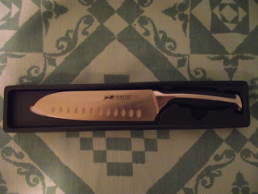
Típusa santoku. Ez mindenkinek ismerős, aki dolgozott már japán konyhán (hehe, sok ilyen olvas engem?), vagy látott a tévében japán konyhát… De ne nagyzoljunk! A santoku, ahogy én tudom, egy félig kés, félig bárd szerű szerszám, ennek nem annyira széles a pengéje, de ez van ráírva. Mit csináljunk?
Egy Sabatier nevű francia cég gyártja, ami a saját bevallásuk szerint a legjobb a világon. (Nem ezt mondja mindegyik? Hol láttál ilyet leírva? „Én ugyan meg nem venném a saját termékem, de ennyi pénzből ilyet tudtunk csinálni, viszont jó árrés van rajta, és ha sokat vásároltok...” stb. stb.)
Elnézéseteket kérem, hogy ilyen morózus vagyok, de most keltem. Na várjatok, iszom egy kis Jackie-t, attól felébredek!
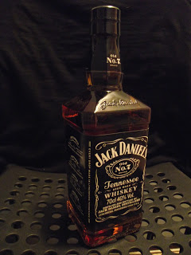
Sajnos csak ekkorát kaptam.
Persze ez nem egy friss kép, talán már két deci sincs belőle. :(
Wow! Ezek asztán tudnak valamit odaki Amerikába! :D
Szóval amikor megvettem a többi cuccal együtt, persze kibontottam és megnéztem a súlypontját, a pengéjét, satöbbi. Enyhén nyélnehéz, ettől „könnyen fordul”, gyorsan lehet vele dolgozni a súlyához képest, de biztos kéz kell hozzá. A pengén mindkét oldalon tucat bemarás, hogy ne tapadjon a husi. Ez sajnos gyengíti a fémet, de hát itt nem beszélünk olyan igénybevételről, mint mondjuk egy dzsungelkésnél. És igen, kurva éles! Ez a nagy súllyal még veszélyes is lehet, ha nem vigyázol. (Tucatszám lehet olyan „konyhakéseket” kapni, amit háziasszonyok kezéhez formáltak. Könnyűek, vékony, nem túl széles pengéjűek, és nem is annyira élesek, lehet velük nyiszálni.)
Amikor vizsgálgattam, közömbösen tűrte. El kellett adnia magát.
Amikor viszont először kézbe vettem, tudta, hogy most dolgozni megyünk. Ittam előtte egy korty konyakot (azt a bársonyos fajtát, a Marie Gall félét, ami inkább nyugtat, mint pörget), mert tudtam, mi következik.
Igen, belém kapott. Nem nagyon, éppen a bőrfelületet sértette meg, nem is látszott, nem is fájt, éppen csak éreztem. Hogy jelezze: Nem vagyok játék, én egy komoly darab vagyok, és ha nem vigyázol, ellened fordulok. Hagymát vágtunk, és egy kicsit belekapott a körmömbe is, de olyan profi módon, hogy csak utólag derült ki. Respect!
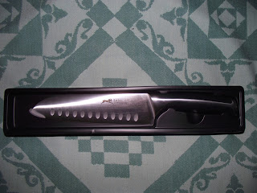
Azért egy kis csiszolás ráfért volna a világhírű pengére
Vasárnap a pipicicit sütöttem, és úgy vettem elő, hogy szóltam:
- Most végre méltó módon húst vághatsz!
Úgy dolgozott, mint a kisangyal! A kezembe simult, biztatott, éreztem, hogy sokkal többre is képes lenne, de hát nem vagyok egy profi hentes, nem fogunk napi több órát dolgozni.
Úgy ézezheti magát, mint egy sportkocsi a garázsban.
Elmostam és visszatettem a dobozába.
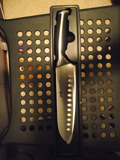
Valamiért ezt csak ebben a helyzetben tudja feltölteni.
A szék alatt látszik a vörös- és fokhagyma, a képen alul a katonai málhazsákom. Csendélet.
Azt mondtam, hogy kivettem a szekrény aljából? Igen, már a múltkor. Jobb híján feltettem az ablakba, hadd nézelődjön. Ott legalább éri a napfény.
2016. január 25., hétfő
- IZSMO
Szóval Pjotr abszolút nem volt útban, bár úgy közlekedett, mint egy tank. De nem keseredtem el túlságosan, amikor elment.
Kint hagyott a tévéasztalon 3 mosóérmét, mögötte egy vadiúj kerékpárpumpát – ez azt jelentette, hogy használhatom kedvemre. De én még be is mentem a szobájába és körülnéztem, mi van még. A szekrény tetején ragasztószalag, ez tök jó lett volna a szennyeszsákomhoz. Így egy csomót kötöttem a lyukra, amitől olyan használhatatlan lett, hogy azt tettem meg a legújabb szemeteszacskómnak, és a legközelebbi ürítésnél kikerült a kukába. Amikor elmostam a hamutartót, feltettem a szekrénye tetejére és reméltem, hogy ott is marad. Nem így lett.
Élveztem, hogy szólóban vagyok. Enyém volt az egész kégli, de persze nem használtam a másik két szobát, inkább csak azért volt jó, mert ezek nem voltak máséi.
Egyik este úgy sütöttem tojást, hogy kivittem a laptopot és letettem az asztalra. Betettem egy ELP lemezt (Emerson, Lake and Palmer, a 70-es évek naaagy virtuózai. Nézz utána, kötelező anyag!), persze mp3-ban volt meg, de azokon a hangszórókon különben sem élvezhetünk szimfonikus hangzást. Na és amíg az szólt, sült a tojás. (Kint is hagytam, kényelmesebb volt asztalnál ülve írni, játszani.) Akkor avattam fel a kést is, hagymát és körmöt vágtam vele, utóbbit nem direkt.
Egyszer berontottam a szobámba, felrántottam a szekrényajtót, kikaptam azt a bársonyos konyakot és „Egészségedre, Uram!” felkiáltással jól meghúztam. Szerintem Isten is mosolygott.
Aztán étkezés előtt a szokásos hálaima. Remélem, még nem unja!
Szóval elvoltam, mint a befőtt.
Aztán múlt héten csütörtök hajnali 1:45-ös kicsekkolással hazaérkezvén látom ám, hogy ég a villany a nappaliban.
Jó, hát világít az izzó, de milyen az már?!
Szóval azt kérdeztem magamtól még a binyiglin ülve, hogy nem én hagytam-e égve még reggel, de tudtam, hogy nem.
Betoppanva látom, hogy egy Bundeswehr bakancs ácsorog a lábtörlő mellett. (A sűrű eső meg nagy szél miatt bent van a lábtörlő.) Én már azóta akarok ilyet, amióta a Gyöksinél láttam, és ez valahol a 80-as évek második felében volt.
De ez nagy! Ez nagyobb, mint az enyém!
Biztos valami nagydarab kopasz, agresszív, szűkagyú lengyelé, és most aztán vége a szép napoknak, még az lesz a legjobb, ha több lakóért imádkozom, hogy ne velem akarjon beszélgetni minden áron!
Pisi, lefekvés, nehéz sóhaj, elalvás.
Reggel, ami más rendes embernek délidő, hallom, hogy jön ki valamelyik szobából. Csendes, finom mozgású, de hallom.
Na, mondom, essünk túl a formaságokon! Felöltöz, hátat egyenesre húz, kisétál – de közben ez kiment az ajtón. Nem baj, kiveszem a kaját a frigóból, majd reggeli után találkozunk. Közben kinézek az ablakon, hát egy hosszú hajú karcsú srác áll kint hosszú (na jó, midi) kabátban háttal és telefonál.
Ez egy fiatal hippi! Ez jöhet!
Amíg kajáltam, lelépett.
Csütörtökön még délutántól éjfélig szólt a munkaidőm, és egy pillanatra láttam szemből is, amikor kikerekeztem a hídig. (Most ugye a „hátsó ajtón” kell közlekednünk, mert a migránsok miatt lezárták a tábor vagy négyötödét, így a recepció is az övék lett. Egy darabig amellett az autópálya mellett kell menni, ami később keresztezi a Taxandriát, de az itteni híd alatt nem megyünk át, ellenkezőleg, jobbra fordulunk, és elmegyünk szinte egészen a recepcióig, ahonnan ugyanúgy vezet tovább az út, mint előtte. Kicsivel több, mint egy kilométer pluszban.) Én majdnem elértem a hídig, ő meg akkor fordult be szembe velem, így láttam egy-két másodpercre. Kerek sötétkék napszemüveg volt rajta, a kabátja szárnya széttárva, kék biciklin ült. Majdnem ráköszöntem, de aztán mégsem. Nem tudta volna, hogy ki vagyok.
Éjfél után, amikor hazatértem, ő nyitott ajtót. Ott volt még Robert és a nője, Olivia.
Utóbbiak titokban tartózkodtak Droomgaardban. Hazaküldték őket 2 hét vakációra, de pár napot maradtak még. Nem értettem igazán, hogy miért itt húzták meg magukat, mert láttam, hogy a házukban ég a villany, de szükségük volt rá, hát legyen úgy akkor.
Olivia már pénteken elment, és így derült ki számomra, hogy ők nem is férj-feleség, csak itt jöttek össze. Robert szeptemberben jött ki, és az, hogy ő lett a D szekció szállásmanagere, megerősíti azt, hogy Droomgaard egészen friss szálláshelye az OTTO-nak.
R.-et otthon várja egy valódi feleség egy egyéves fiúval. Elővette a pénztárcájából a gyűrűjét és felhúzta az ujjára. Azóta le sem vette. Nagy szerencse, hogy ősszel jött ki és nem tavasszal! Talán feltűnt volna az asszonykának, hogy a lebarnult ujján miért nem maradt fehér a bőr a fux alatt. Ő szombaton indult haza, és egy napon keresztül csak a fiát emlegette. Az asszonyt nem.
Adtam neki egy húszast kölcsön. Azt mondta, buszjegyre kell, 18 hiányzik hozzá. Nem hiszem, hogy arra kellett, szerintem inkább egy újabb adag füvet akart vásárolni, de mindegy, ha kell, hát kell, csak adja vissza, amikor megjön! Azonnal fel is ment a Faszbúkra és bejelölt, mintha ez lenne az egyetlen garancia arra, hogy nem fog eltűnni a pénzzel. Búcsúzóul megittunk egy pár sört.
David Bachowsky – ha így írják – az új srác, és egészen megnyerő! Brandon Lee-re hasonlít.
Nem mondod, hogy nem tudod, ki az! Bruce Lee fia, szerencsére fehér volt az anyuka, így egész csinos jószág kerekedett belőle. Véletlenül kinyírták A holló forgatásán, tisztára, mint a faterját.
Davidnek a nagyapja még német volt, de a II. VH után, amikor meghallotta, milyen hatalmas összegű kártérítést kell fizetnie az államnak, inkább Lengyelországba költözött. Hát igen, vannak ilyen brutálisan rossz döntések az életben!
D. csöndes srác, udvarias és csinos. Ha nem a tabletjét nyúzza, zenét szerez vagy játszik, van egy elektroakusztikus gitárja, vagy szöveget ír hozzá… Amikor a barátja örömmel újságolta neki, hogy vett egy okostelefont, megkérdezte, hogy mi az az okostelefon.
Főzni is tud.
15 hónapot volt alkoholelvonón.
Tök sikeres zenész volt, dőlt a pénz is, de nem tudott mihez kezdeni ezzel az egésszel, és ki akarta nyírni magát. Egy 60 méter magas toronyról akart leugrani, és csak azért hívta ki a mentőket, hogy szedjék össze, ne rontsa ott a városképet. Aztán beleakadt a lábába két kiálló tüske és azokon lógott, aztán amikor megunta, letelefonált, hogy OK, inkább szedjék össze akkor.
Annyira szimpatikus volt, hogy ha csaj lettem volna, beleszeretek!
Szombaton jó sokáig fent voltunk és dumáltunk. Mindketten azon csodálkoztunk, hogy idejét sem tudjuk annak, mikor beszéltünk ennyit utoljára.
Aztán vasárnap délelőtt hallottam, hogy kopognak az ajtón.
A péntek éjszaka volt a legszarabb. Nem tudom, hányan voltak a kégliben, de úgy tűnt, azt játsszák, ki tudja hangosabban csapkodni az ajtót. Idegen hangokat is hallottam, reggel 5-kor, amikor kimentem pisilni, egy nagydarab lengyel ült a kanapén. Reggel boros és vodkás üvegeket is láttam a kólás palackok között. Nem bántam, hogy elmennek a Róbert gidáék.
Péntek éjjel pont a háttérhatalomról beszéltem Davidnek, amikor bekopogtak az ajtón. Csak kettőt, diszkréten, de ettől egy kicsit beszartunk. Meg kedvünk sem volt kinyitni. Két introvertált faszi nem szívesen fogad idegent éjfél után. Aztán újjabb két kopogás az ablakon. Egy darabig hallgattunk, aztán csendben beszélgettünk tovább, de végül D. állt fel, hogy megnézi, ki az. Mondtam neki, hogy vegyen kést. Féig-meddig vicceltem, de ő fel is kapott egyet, és úgy nyitott ajtót, de addigra csak egy vörös bringalámpát látott eltűnni a kanyarban.
Hát most is így voltam vele. Biztos valamelyik lengyel haver, aki bepróbálkozik, hátha itt van még a haverja, akit le lehet húzni egy adagra. Nem mentem ki, titokban azt reméltem, D. majd elküldi őket. De semmi nem mozdult.
Aztán jött egy sms, és hirtelen megváltozott minden.
Amikor kinyitottam a telefont, láttam, hogy két üzenetet kaptam. Először persze a korábbit olvastam el. Így szólt:
Your transfer to Gouda will take place on 24.1.16 between 10:00-10:30am.Please report for check out at 10:00am to house D060 with your bike and keys form the house!!!
Congrats
Alex
Ez 23-án nem sokkal éjjel negyed 12 előtt jött, és baromira nem hallottam, mert a nappaliban dumáltam D.-del. A friss meg ez volt:
The busses are waiting for you.Out side D section.
Ez fél 12 előtt jött, de nappal. Nem javítottam ki a helyesírási hibákat, ezek ilyeneket küldözgetnek.
Na, volt nagy kapkodás! Minden szana széjjel szerte, álmomban sem hittem volna, hogy ilyen hamar…
Ja, mert egy magyar csajtól hallottam, hogy két héten belül (nem két nap, két hét!) elköltözünk Goudába, és az azért lesz jó, mert azokon a napokon, amikor nem ad a Docdata munkát, ezek elvisznek valahova máshova. Meg hogy nem lesznek a nyakunkon a migránsok.
Na, most aztán kapkodás!
D. persze alszik. Látom, hogy itthon van, ott a bakelója, a tornacsukáját meg kimosta, ott szárad a kályhán. (A szárítót feltette a kályhára, így jobban szárad, és kevesebb helyet foglal.)
Rámolok. Közben kopognak. Ezt már kinyitottam, és egy konszolidált pali állt ott, ez biztos nem fűért jött. Hanem hogy kész vagyok-e. Hát nem vagyok, mert azt az sms-t, amit éjjel küldtek, most olvastam a frissel együtt. Jó, mennyi idő kell, hogy elkészüljek? Hát 10 perc minimum! Rendben, visszajön 20 perc múlva. Végre egy normális pasi!
Közben tudtam, hogy kint vár az autó, ki tudja, hány másik sorstársammal. Kapkodás, pakolás. A mosóérméket meg a pumpát én is kiraktam – örök hagyaték –, használja nyugodtan. Bringát úgysem vihetek magammal, vissza kell adnom, akkor meg minek a pumpa.
Jó szolgálatot tett egy hatalmas szatyor, amit még Pjotr szobájából mentettem meg, mert ami nem fért be a katonai málhazsákba, azt behánytam oda. A műszaki dolgok a hátimban, ott már nem volt hely semminek. A hűtőben hagytam a tojásokat meg egy fürt szőlőt, majd D. megeszi, tőle nem sajnálom.
Csak azt sajnáltam, hogy nem tudtam elbúcsúzni tőle.
75 kilométert jöttünk Goudáig, és itt egy Elzenhof nevű kempingben lakunk. Ezek házak, nem úgy, mint odaát, és itt nem erdő van, hanem rengeteg víz, meg vízicsibe, meg vadkacsa, meg hattyú…
Na de most el kell mennem kaját venni, mert a közért ugyan itt van velünk szemben, de kilométereket kell gyalogolni a legközelebbi hídig...
Ki kell hozatnom a bringámat!
2016. február 6., szombat
- HONFOGLALÁS - ÚJ HAZA
A címet egy P. Mobil számról nyúltam
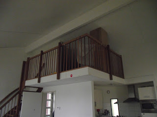
A Grizzly új barlangja
Kicsikét másképp telnek a napok, mint Droomgaard-ban. Kétszer is meggondolom, hogy elinduljak a városba, pedig igazából nem hosszú az út, bő fél óra gyalog. Szinte ilyen messze volt a Lidl, vagy bringával ugyanennyi volt a könyvtár, de valahogy mégis többnek tűnik, mert az idő nagy részében csak a folyó partján sétálsz a hídig, azon túl visszafelé is egy darabig, és csak utána mész be a házak közé. Felesleges körnek tűnik.
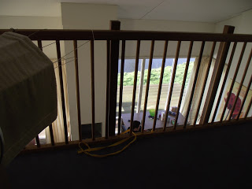
Ezt látom idefentről. Ott van Dimitar feje
A múlt hét így telt:
Szinte minden nap más sofőrrel utazom. Hétfőn Dimitar vezetett, hárman egy lengyel sráccal mentünk dolgozni. A Renault-ban beépített GPS volt, de lengyelül beszélt, és egyikünk sem tudta, hogy lehet valami civilizált nyelvre állítani. A hátsó ülésről fordított a srác, de ez a kütyü nagyon vicces kedvében volt, mert elvitt minket valahova, ahol a közelben sem volt semmi, aztán visszafordított és szinte a kiindulási helyig kalauzolt. Aztán egy pár kilométert mentünk az autópályával párhuzamosan egy egészen szar úton, mire fel tudtunk avázkodni. Fél órát késtünk, mert a kb. egyórás út két és fél óráig tartott. Visszafelé is Gouda környékén bolondult meg.
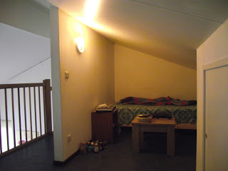
Kuckó
Kedden egy aranyos kiscsajt láttam a Renault kisbusz mellett. Eldumálgattunk, kiderült, hogy ő nem a Docdatában dolgozik, hanem egy másik városban egy másik helyen. Ez is valami raktár szerű, de ez beljebb van, nem ipari terület, mint a miénk.
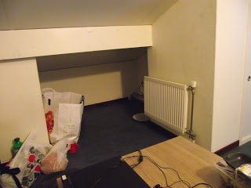
Kicsit alacsony...
Szerdán ismét D. volt a sofőr. Most ketten mentünk, és szinte ugyanannyit kerültünk, de most már kevésbé hallgattunk a GPS-re, és hamarabb odaértünk. Waalwijk-ban viszont én tudtam jobban az utat, hogy kell a Taxandriáról lejönni és rákanyarodni a felette átívelő hídra. Visszafelé a kütyü be akart vinni egy bezárt kerítésen, ami egy hatalmas parkot védett. Ez egyre furább!
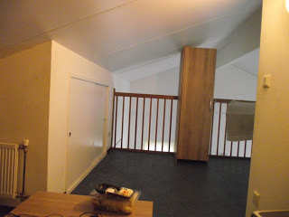
... de az enyém!
Csütörtökön ismét külön mentünk, a kisbuszban ott volt a kiscsaj is, és hallottam, hogy Fanninak hívják. Ismét beszédbe elegyedtünk, de most már nem angolul, hanem magyarul. Másfél évvel ezelőtt jött ki a pasijával, de nem tanult meg hollandul. Rám is ez a sors vár, ha nem állok neki, mert nem fog csak úgy ránk ragadni a nyelv, pláne nem olyan környezetben, ahol szinte mindenki lengyelül beszél.
A sofőr azt mondta, amikor kitett, hogy „kint lesz valahol”, ott várjam. Éjfélig szólt a munkaidőm, de egyig bent kellett volna maradni, annyi munka volt. Én közöltem, hogy a pasi nem fog rám várni, valamit találjanak ki, mert nem hogy nem fogok 80 kilométert legyalogolni, de azt sem tudom, merre induljak. Elengedtek éjfélkor. Marha nagy szélben kint szteppeltem az elhagyatott úton a körforgalomnál, mert ott van lámpa, nehogy azt higgye a faszi, hogy nem vártam meg. Egy szakadt verda megállt mellettem, és három barnaképű fiatalember megkérdezte, hogy segíthetnek-e. Nem, mondtam, köszönöm, csak a sofőrömet várom. Aztán negyed kettőkor visszamentem, hogy beülök melegedni, és meg is próbálok ott aludni, de éppen kijött a piroskabátos főnökünk, a Rolf, és mondta, hogy nincs már bent senki. Abban a pillanatban megérkezett a busz: a faszinak megtelefonálták az egy órás zárást, csak késett egy negyed órát valamiért.
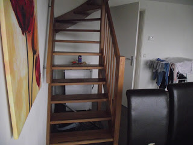
Stairway to Grizzly
Pénteken kivoltam, mint a liba. Eddig délután kellett dolgozni, de most reggel kezdtem, ráadásul 5:30-kor már ki kellett állnom a 31-es ház mellé a kocsit várni, mert a srác, aki vezetett, meg a csaj, aki harmadik volt a kocsiban – mindketten lengyelek – korábban kezdtek és végeztek, mint én. Szinte egész nap egy vékony csajjal dolgoztam, rengeteg gyerekruhát inbound-oltunk, és közben beszélgettünk. Nem kérdeztem, honnan való, volt, hogy németül beszélt, meg egy ideig Olaszországban lakott, szóval érdekes egy nőszemély volt. Waalwijk-ban laknak valakikkel négyen egy bérelt házban, mint Krisztináék (lehet, hogy éppen vele?), és havonta nem több, mint 250 eurót költenek rá. Olcsóbb, mint az OTTÓ-nál, és jóval közelebb is van, bringával percek alatt bent van az ember. Azóta töröm a fejem, hogy lehetne odaköltözni. Mármint a városba.
Fél 6 helyett már 5-kor le tudtam lépni. Na, mondom, millyen jó, hogy a fiataloknak nem kell annyit várniuk rám, én is hamarabb hazakerülök… Aha! Nem várt meg a rohadék! Ott ültem 2 órát abszolút bizonytalanságban, hogy mi lesz velem, mire este 7-kor egy srác, aki szintén Elzenhofban lakik, mondta, hogy 8-kor lesz egy kisbusz, azzal eljöhetek.
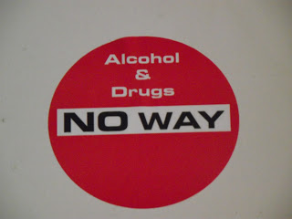
Matrica a galérián
Szombaton tartottunk egy kis búcsúestét fényes nappal, ugyanis Dimitar elköltözött. Nem jött be neki Hollandia, a kevés munkaóra a nem sok fizetéssel. Hazamegy Bulgáriába és nyit egy kajáldát, ahol ilyen tésztába tekert gyros szerű dolgot fog árulni. Nem tudtam megjegyezni a nevét. Jameson whiskyt iszogattunk, mert vettem egy literrel, akciós volt. Nem ittunk meg fejenként két decit, szóval nagyon illedelmesek voltunk. Egész idő alatt azon kesergett, hogy nincs egy rohadt kocsi, ami elvinné őt Oosterwijk-ba, ahol a – mint kiderült, volt – nője lakik most. Onnan jóval közelebb van Eindhoven, ahonnan WizzAir-rel hazarepül. Este végül indult egy járgány, ami elvitte.

Ír. Mint én. Ti meg olvassátok. :)
Vasárnap a szokásos: nem csináltam semmi különöset.
Ezen a héten hétfőn délelőtt pickingeltem, a többi napokon inbound-ra osztottak be. Kedden-szedán délután, csütörtökön-pénteken délelőtt. Megint egy olyan váltás, bosszankodtam, ahol olyan leszek, mint a mosott szar! Panaszkodtam is Kamilnak, amíg aláírtam a szerződéshosszabbítást.
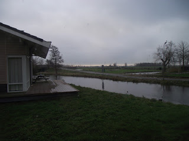
A hátsó traktus
Kedden bementem az irodába a saját példányomért. Az eredeti az enyém, le kellett fénymásolniuk, azért tudtam csak aznap átvenni. Eloy volt ben, mondom neki a hülye beosztásomat, meg hogy otthagyott a fószer. Azt mondta, mindenképpen jelentsem Elzenhofban az irodában, de fene tudja, nem volt hozzá kedvem. Végül is hazajutottam, úgy nézett volna ki, mintha szőrszálhasogató lennék. Meg itt is lengyelek a főnökök, a srác is az, én meg magyar...
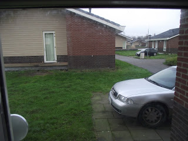
Déli irányban nyílik az ajtó. Az Audi sajnos nem az enyém
Szerdán valami bolond jókedvem volt, a meló is jobban ment, mint máskor. Pedig kifutottam a kenyérből, holnapra már nem lesz, kekszfélém sem volt, de még zöldség sem. Eltoltam az időt, nem tudtam elmenni vásárolni. Holnap meg hajnali kelés, megint nem lesz időm...
Előbb végeztem vagy két órával. Meg kellett volna várnom a többieket, akik pickingeltek, a sofőr meg liftes volt, tehát ő sem tudott előbb elszabadulni. A padon ültem az előtérben, mellettem egy csaj, akit persze látásból már ismertem. Elkezdtünk dumálni. Cseh a lelkem, és csinos is. Nem az a babaszépségű, de nekem bejön. Egyszer csak megtorpan előttem a szemüveges fószer, aki otthagyott pénteken. Mit csinálok? A kocsira várok. Ne várjak, menjek vele!
Az hozott haza, aki 5 nappal azelőtt otthagyott!
A nappaliban egy biciklit láttam. Férfibringa váltóval. De jó lenne ezt kölcsön kérni vásárolni! Majd kiderítem, kié, és felajánlok egy sört vagy üdítőt vagy csokit vagy mit tudom én. Kettő után megjöttek a többiek is, és mesélték, hogy tízen ültek a kilencszemélyes buszban.
Ráadásul néztem a listát, és nem hajnalban kellett másnap kelnem, hanem áttettek délutánra. Ne merjétek azt mondani, hogy nincs Isten!
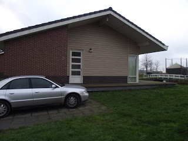
Mi vagyunk
Csütörtökön reggel az egyik srác, akit Marcinnak hívnak (milyen név ez?!) mondta, hogy elvihetem nyugodtan a biciklit. 75 euróért vette egy töröktől. Volt időm vásárolni, és nem voltam mosott kaki állapotban.
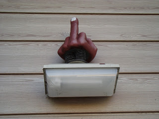
Barátságos vendégváró az ajtó fölött
Pénteken is délutánra szólt a beosztásom. 13:15-re kellett volna kint lennem, de fél 1 után kaptam egy sms-t, hogy lemondják a napomat. Hosszú hétvége!
Aztán jött még egy, ami a jövő heti beosztást közölte, ez összesen 3 nap. Kamil, a másik srác, akivel együtt lakom mondta, hogy mindenkinek ennyi lesz. Kedd-csütörtök-péntek 10-től fél négyig. Reggel kényelmes kelés, délután még világosban haza. Szép az élet!
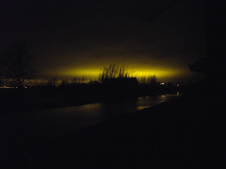
Fura fények
2016. február 7., vasárnap
- LAZY SUNDAY
Szóval a hétvégék mindig ilyen kis pihenősek lesznek, úgy tűnik. Az a baj, hogyvalamennyire van wifi, éppen csak annyira, hogy ne menjek be minden egyes alkalommal a városba.
Szombaton felkerekedtem, és beaváztam. Ez úgy van, hogy mész-mész a parton egy egysávos úton egészen a hídig. Ott balra fordulsz, átmész rajta, és balra jössz le. A túlsó parton aztán visszafelé egy darabig. Nem tudsz sokáig, mert kiderül, hogy egy félszigetkére érkeztél, ahonnan egy híd vezet a „szárazföldre”. Pontosabban kettő: egy a bringáknak, egy pedig a gyalogosoknak. Meg sem próbáltam elkérni Marcin gépét, nem akartam egész délutánra lefoglalni, hátha valaki be akar ugrani vásárolni.
Innen a házak közé jutsz. Egyenesen mész tovább, keresztezel két utcát is, mire az út nekimegy egy templomnak. Erről írtam már, ha jól csalódom. Átalakították, többek között patika van benne, meg vécé. Hogy a két emeleten mi található, azt még nem tudom, de utána fogok járni. Viszont hétvégenként zárva van. Balról kerülöd meg, és egy kis kereszteződésben jobbra fordulsz. Rögtön a sarkon van egy kínai(!) bolt, ott vettem fél tucat izzót, mert botrányosan rosszul vagyunk vele ellátva, jó pár foglalat üresen tátong. 1.50 volt darabja, nem nagy kiadás, de majd megpróbálom bevasalni az OTTÓ-n. A kínaiban azt mondták, ahogy kilépek, jobbra kell fordulnom, és vagy 20 percet sétálni a vasútállomásig, ott van wifi.
De én balra fordultam, bementem a két bolttal odébb álló Plus-ba kaját meg piát venni, és ott is megkérdeztem egy kiscsajt, hogy hol tud. Ő egy La Place nevű éttermet ajánlott. A kínai sarkán jobbra fordulok (tehát ha jövök otthonról, a templomot kikerülve egyenesen megyek tovább) és 10 perc az enyhén kacskaringó utcákon. Ebben benne van az, hogy átmegyek egy másik hidacskán, aztán nekimegyek egy szélesebb csatornának, ami előtt jobbra fordulok, utána balra és kiérek egy térre. Ott lesz La Place.
Nekem negyed óráig tartott az út. Egészen furcsa volt a keskeny utcákon a már-már tömegnek ható emberáradat. Itt majd bonyolultabb lesz kerékpárral elférni. A téren piac volt éppen. Jobbra kellett megkerülnöm, és ott csak virágokat árultak, remélem, a másik oldalon azért volt még más is. Nem néztem meg, mert már nagyon kellett vécére mennem.
Odabent felmentem a galériára, itt van a klotyó is, ami negyed euró. Ez máris fele annyiba kerül, mint más helyeken, de még jobban tetszett volna, ha ingyenes. Mindegy, szokjuk meg, hogy minden pénzbe kerül!
A fal melletti asztaloknál nem láttam konnektort, egy nő az ölében netezett egy Mac-en, és nem kapcsolt rá tápot, viszont középen húzódott egy hosszú-hosszú asztal, körben háttámla nélküli székekkel, a kellős közepében pedig egyetlen háromlukú elosztó. Ahhoz képest egész délután ott ültem.
Néztem a honlapjukon, hogy többek között speltbrodot is lehet kapni, ami nem más, mint tönkölybúzakenyér. Hogy én ezt mennyire keresem, mióta kijöttem! Kettő-valamennyiért hozzá lehet jutni akcióban. Kérdeztem egy igen szemrevaló fiatal teremtést, aki az asztalokat szedte le, hogy mekkora kenyérről van szó, de kiábrándított: kicsike, csak az itt kapható kajákhoz szokták vásárolni. Huh, akkor viszont drága! De a csaj tud egy szupermarketet, amit nem tudott úgy elmagyarázni, hogy megértsem, és egy pékséget, ami ott van valamelyik mellékutcában. Nem is tudtam annyira figyelni, mert közben a szemét néztem. Meg a homlokát. Meg úgy az egész arcát.
Szóval valahol ott van egy pékség, és szerinte ott lehet kapni speltbrodot, ez a lényeg.
A Hely (vagy A Tér, ezeket jelenti franciául) egyébként csak fél 7-ig van nyitva, de annyi elég is.
Legközelebb azért érdemes lenne felfedezni a pályaudvart!
Amikor hazaértem és kitettem az izzókat, nem győzték köszöngetni. Valóban nagy sikert arattam vele, dicsértek orrba-szájba.
Aztán, ahogy itt ültem fent, egyre több idegen hangot hallottam odalentről, meg bútortologatást. Később felszólt Kamil, hogy iszom-e sört, és amikor igent mondtam, megkért, hogy velük fogyasszam el odalent.
Kiderült, hogy egy bulit rittyentettek, ahol ott volt az új lánynak egy barátnője (jaj, nem is mondtam, Dimitar után beköltözött a helyére egy… hm… szigorú arcú, szótlan nő, Malvin spanja), az ölében ült, tojásarca van és hosszú haja, aztán az a sofőr srác, aki liftes volt csütörtökön, meg egy másik, aki szerdán vitt minket (de nem ő hozott engem), neki elöl ki van borotválva az arca (az apja szerint az nem bajusz volt annak idején, hanem csirkeszar (chicken shit), így inkább leszedte) de alul és oldalt szakálla van. Ezt a fazont több emberen is láttam. Ő a nőjével volt, Agneszkával, aki módfelett csinos. Behoztak valahonnan egy kanapét, hogy elférjünk, a félig-meddig szakállas pedig vett egy láda 0.33-as sört. Kamil-ék dobozos Kozellal kínáltak. Egyet-egyet megittam, pedig marha éhes voltam, de nem akartam bulirontó lenni, csak akkor jöttem fel burkolni – meg még egy kis whiskey-t inni –, amikor már elmentek.
Persze javarészt lengyelül folyt a beszélgetés, ezalatt udvariasan (valószínűleg ostobán) vigyorogtam, de egyszer-egyszer belerántottak engem is a sztoriba. Szerintem megálltam a helyem, és sokadszorra is megkaptam, hogy egyáltalán nem látszom 55 évesnek.
Reggel, vagy inkább délben, amikor keltünk, láttam az új csaj barinőjét. Egyszerre ültek asztalhoz reggelizni, utóbbin nem tudom, mi volt, de az egész lába látszott. Kellemes látványt nyújtott, remélem, hosszabb ideig marad!
Még pénteken írtam egy verset úgy pár perc alatt. Nem akartam a tisztelt olvasóközönséget zavarni ezzel, de végül úgy gondoltam, érdemes feltenni, hadd mulassatok ti is! A címe legyen mondjuk
Fal utazás
- Még sohasem láttam a Falat -
mondja a drága
két falat
között.
Agyam falba ütközött.
"Na, megint egy dráma",
gondolom, de nem, mert lám a
történelem
- elismerem -
nem csak minket szúrt hátba.
Fejem még kába,
de itt az elhatározás:
- Megnézzük!
- Nem hiába
vagy te életem párja! -
Arcomon csók csattan,
ez jólesik, nem vitás.
- Fel hát - mondom, -
jöjjön a kirándulás!
Százhússzal repülünk,
repeszt a Skoda.
De a drágát
nem érdekli, hogy mutatom Prágát.
- Ott a Károly-híd.
- Tojok rá, érjünk már oda!
Végül
már autó nélkül
orrunkat korsóba mártva
intek a pincér után.
- Kérem,
a Falat keressük.
- Lebontották régen!
Nőm meg csak fecseg:
- Jaj, nem is tudom,
a gázt elzártam?
Vagy ömlik a propán-bután?
Te meg mit nézel úgy, mint egy orángután?
- Ezentúl - hangom recseg -
többet kell néznünk a híreket -
mondom sután.
2016. március 1., kedd
- FOLYT KÖV
Botrány, milyen régen írtam már! Pedig annyi minden történt azóta! Például egy hét – tíz nap, és innen is elköltözünk, ezúttal Oosterwijk-ba. Mint kiderült, ez az a hely az erdő közepén. Oké, az marhára tetszett, amikor idefelé (Hollandia) jövet beugrottunk, hogy kitegyünk néhány utast, hogy milyen kellemes helyen is van a kéglijük, és az is igaz, hogy csak 40 kilométer a Docdatától, a mostani 80 helyett, de a probléma ugyanaz, ha órákkal előbb végzek, mint a többiek. És ráadásul a legközelebbi közért is valami 10 km-re van. Hát basszus!…
De nem gáz, legalábbis ezzel vigasztalom magam, mert hétfőtől két hét szabin vagyok, kedden repülök Agyarországra, és amikor visszajövök, hozom a bringámat is!
Ez még önmagában nem lenne nagy fegyvertény – 10 km bringával a közértig? Inkább várok egy kocsit, ami arra megy! –, de keresni akarok egy albérletet Waalwijkban, és onnan már minden marha közel lesz. Boltok! Piac! Könyvtár!
Munkahely! Bármikor végzek, ismétlem, bármikor, csak felpattanok a Vadmacskámra (ez a neve neki, rá van írva, és nem én voltam!), és már otthon is vagyok! Abban az albérletben, ami valószínűleg – de nem is, tuti! – hogy olcsóbb lesz, mint az OTTO szállás.
Hát igen, nagy luxus lett volna addig keresni egy kiadó cellát, amíg meg nem jártam anyaországomat. Gondolj bele! Addig nem keresel, de a kecót fizetni kell, duplán esel el a pénzedtől. Így meg a fogam eldöntötte, hogy nem várunk tovább, meg kell látogatni a jóöreg Pannóniát.
Ugyanis egy kissé mindig mozog a protkó, pláne ha használom, és szerintem elrepedt a bal felső egyes a tövénél, eltörte az acéldrót, amivel rátámaszkodik a proti. Fájt, egyre jobban, és szombaton volt a krízis, a legszarabb, éreztem, hogy utána már csak jobb lehet. Így is lett, de a pofim egy kicsit be van dagadva felette, és hát legyünk őszinték, ez nem fog összeforrni! Ezt szerintem ki fogják húzni a francba! És ezzel meg is szűnik fent a bal oldal.
Azért írtam, hogy bal felső egyes, mert bal oldalon felül csak ez az egy fogam van. Mondjuk ez pont a szemfog, tehát gyárilag nem ez volt az első a sorban, de most már az. Az első, és az utolsó is egyben. A jobb oldalon kettő van még, ebből a „kettes” tartja a másik acéldróttal a protkó ezen felét. Jaj, ne öregedjetek meg!
Namost telefonon azt mondta a fogasszisztenscsaj, hogy az új proti – az alsó, mert ott is csak 8 darab saját van, de ebből biztos szanálni kell párat – jó 3 hét alatt készül el. Ez azt jelenti, hogy sicher ami fix alapon 4 hetet kéne kivennem, de
egy: Egy hónap fizukiesés? És ki sem adtak volna annyit! Jön a karnevál, jön Húsvét, kell az ember.
kettő: Négy hétig a Mikivel? Na neeem!
Mert a Vonatra én nem megyek vissza! A csótányok közé. És itt nem a kollégákra gondolok, hanem a hatlábú bogarkákra, akiktől annyira irtózom. Különben is, csak az egyes-kettesbe vennének vissza, az átmenetiek közé, ami azt jelenti, hogy nincs szekrény, ami cuccot hozol, azzal street-elsz másnap egész nap. Ha meg lerakom a Mikinél a putyerkámat, akkor meg már ott is tudok aludni. Na de négy hétig?
Egy hét viszont kevés lett volna. Úgy számoltam ugyanis, hogy két nap az út oda (első nap elindulsz, másodikon megérkezel hulla kicsavartan, aludtál amennyit a kocsiban sikerült, hát kösz szépen), kettő vissza, három nap meg mire elég? Jó, egyszer elmegyek a fogászatra, de mi van akkor, ha több fogam is kezeltetni kell?
Meg aztán van még elintézni valóm bőven, amit, valljuk be, nyugodtan megcsinálhattam volna, mielőtt kijöttem! Ott volt az egész nyár, időm és akkor már pénzem is volt rá!
Tessék! Alsó protit megcsináltatni. Jogosítványt meghosszabbíttatni. Útlevelet kiváltani.
No igen… Végül is lehet, hogy meg sem állok UK-ig. (Mi az, hogy nem tudod, mi az? United Kingdom! Egyesült Királyság! Anglia is ott van.)
Izlandról lemondtam egyelőre: Messzi és hideg ország. Szar kaják vannak. Egyetlen szórakozás, hogy berúgnak az emberek. Ehhez nekem miért kéne télen-nyáron megfagynom?
Aztán még a bőrgyogyinak is megmutatnám magam. Vannak ilyen csúnya kinövések rajtam, amiből nem egyet leoperáltattam már, mert olyan helyen voltak, hogy végképp nagyon zavartak, de attól még tenyésznek máshol is. A hátamon is volt egy, ami folyton beleakadt a ruhába, hátizsákba. Pár hete zuhanyzás közben leesett, hála a Magasságos Úristennek! Nem győztem hálálkodni érte! Előtte véletlenül megsértettem, és vérzett. Azt hittem, sosem fog elmúlni, hiszen ha vért kap, életben marad a nyomorult, de aztán az Úr megkönyörült rajtam. Ezerszer áldott az Ő neve!
Itt kint nem akarok dokihoz járni. Dorota, a leszbi csaj fogat húzatott 40 euróért. Mennyit kértek volna el azért, hogy egy cekásszal egy pillanat alatt leégessék azt a szart a hátamról? Hiszen nem életmentő műtét. A gatyám ráment volna!
És ha már a neveknél tartunk: Kamil a kisebb srác, Marcin a nagyobb darab. Valszeg azért keverhettem össze őket, mert folyton azt hallottam a csajoktól, hogy K-t szólítják, és miután a nagyobb pali itt az alfahím, hát azt hittem, hogy ő az. De nem!
Marcin 27 éves volt, amikor erről beszélgettem vele, később a nője, egy 32 éves nagydarab, eü végzett csaj 28-at mondott, ebből arra következtettem, hogy az a buli az ő szülinapi zsúrja lehetett. A csajt egyébként Malvinnak hívják. Ne röhögj!
Kamil egy férfinév, a Kamill pedig női. Furcsa, mi? Nem normálisak ezek a lengyelek! A nőjét Katarzsinának hívják, amit nem tudom, hogy kell leírni, de nem is baj, mert Kasa a beceneve. Így mondják, és miután ők fordítva használják az s-t és az sz-t, gondolom Kaszának írják. Fura ez is. Különben én Cat-nek hívom magamban, vagyis macskának. Picike, vékony csaj, és csámpás. Úgy megy, mintha útban lennének a heréi, pedig nincsenek is.
A két leszbiről annyit tudok, hogy a vörös hajú Dorota. Nem szép, de neki nem is az a dolga. Még a lábujjai is férfiasnak hatnak, szegény lelke nagyon testet tévesztett. Nőies és férfias is egyszerre. Viszont ma oldalról láttam mosogatás közben, és a segge elég jó! A nője a tojásarcú csaj, aki egy kissé zsíros, de nem vészesen. Mondjuk nekem nem kéne. A nevét nem tudom, de saját kocsija van! Nem az az ezüst színű Audi, az valahová eltűnt, hanem egy sötét VW, és nem is a legkisebb. Ez a nő valami jólmenő vállalkozó lehetett otthon, és miután tönkrement, vagy csak szarabbul ment a bolt, úgy dönthetett, hogy inkább kijön zombinak, és elhozta a járgányát is. Soha nem láttam még közlekedni, tudtommal mást sem vitt közülünk sehová, de van egy kocsija. Fene a jódolgát!
És hát mindannyian fiatalok! Csípem őket, kár, hogy hamarosan felrobban ez a gárda is. Még ha nem is mennék albérletbe, akkor is biztos vagyok benne, hogy szétdobnának minket költözés után. Mindig ezt csinálják.
Ilyenkor szoktam megígérni, hogy most már sűrűbben fogok írni, de… bakker! Ha megígérem, nem fogom betartani!
Na de most őszintén! Ki az, aki Szudánból olvassa a blogomat Opera böngészőn? Lehalok, frankón! Eddig is nemzetközi voltam, de ennyire!... :D
2016. március 11., péntek
- VOORAL DE NEDERLANDSE BUREAUCRATIE
avagy
A holland bürokrácia mindenek felett
Ha valaki lemaradt volna a Faszbúk bejegyzésemről
Kelt: 2016. március 6.
Ez a gyógyszer dolog... Végül is semmi különös, csak a szokásos megpróbáltatások. :)
Először írtam a Csiga barátomnak, h. yo lenne, ha kiváltanák a gyogyimat és feladnák postán. Aztán telefonáltam a dokinak, az asszisztensnővel megbeszéltem, h. megírják a recepteket és kiteszik a recepcióba. (Ezek milyen szépen alliterálnak!) Utaltam zsét a Csiga nevén a Csili (az a nője) banxámlájára, mert azt adták meg, én meg azt hittem, a srácé. De a bank így is elfogadta.
A csaj kiváltotta és 25-én feladta. Írta, h. 3-5 munkanapot ígértek, h. ideér. Szerdán még nem jött meg.
Csütörtökön bementem az egészségházba, ami egy átalakított templomban van, a földszinten patikával, minden emeleten ingyenes vécé, ami nekem nagyon megfelel. :) Ott nem kerültem orvos elé, mert elakadtam az első emeleten a recepciónál.
Van ott egy idősebb nő, aki csak hollandul beszél. Én még mindig nem. Szerencsére volt mellette (a másik ablaknál, ami szinte egész végig zárva volt) egy fiatal csaj, aki tudott angolul. Ezzel a kettővel kellett megharcolnom a bürokratikus marhaságaikat. Adnak egy papírt, amit töltsek ki. Jól van, beírom a nevemet, szül. időt, címnek hogy Résidence Elzenhof. Mondom nekik, h. a pontos címet nem tudom, m. benne van a laptopomban, az viszont otthon a galérián. Hát ők így nem tudják. Yo, akkor menjenek fel az Internetre, ott is a Google Map-be és írják be a keresőbe, h. Résidence Elzenhof, az ki fogja írni profin a címet irányítószámmal, mindennel. Hát ők ezt nem tudják. Aha!
Nagyokat nyeltem, hogy ne kelljen csúnyákat mondanom.
Akkor mutassanak már nekem egy helyet itt a közelben, ahol találok Internetet, és egy perc alatt kiderítem, hogy hol is lakom én pontosan! Dumálnak egymás között, mintha ott se lennék. Mondom nekik, h. az a helyzet, h. egyetlen darab gyogyim van, és ezt nem kéne kihagyni egy napig sem. A banya tapogat a gépen, aztán felém fordítja a monitort. Itt lakom?
Jé, van Internet! :P
A képen 1 lapos tetejű hétvégi ház. Mondom neki, h. nem, a miénk sátortetős, de sztem yo helyen keresgél. Matat, mutat egy képet, amin Elzenhof tárt kapuját látom. Ez az, mondom! Stoofkade? Az az, 11-es szám, arra még emléxem.
Yo. Mi a háziorvosom neve? Mondom neki, h. azért nem írtam oda, mert magyar, és úgysem ismerik. Nincs háziorvosom? Nincs. Az hogy lehet? Hát úgy, hogy nem vagyok beteg, nem volt rá szükségem, csak a gyógyszert szeretném felíratni... Aha. Hogy hívják a háziorvosom?
Ez így ment egy darabig, aztán amikor elfordultam, hogy káromkodok egy jót, látom, h. hárman is állnak a hátam mögött. Intettem, h. jöjjenek nyugodtan, m. ez egy hosszú menetelés lesz.
Néhányat magam elé engedtem, de amikor egy kisgyermekes anyukát faggattak arról, hogy "és a gyerek szokott hirtelen elaludni, mintha ájult lenne?", akkor kifakadtam:
- Nézd a két orvost! Mindjárt meggyógyítják itt helyben!
Azt nem tudom, h. a sorstársak az egyre hosszabb sorban értették-e, amit mondtam, vagy csak egyszerűen több türelmük volt, de úgy tettek, mintha nem hallanák. Közben előkerül hátulról egy harmadik nő és kinyitja azt az ablakot, ahol addig a fiatal csaj ült. Engem akarnak odatessékelni, de már csak az hiányzik, hogy elölről kezdjem az egészet!
A gyerekes nő után visszaálltam a bal oldali ablakhoz, és azt mondtam:
- Akkor most térjünk vissza az én problémámhoz! Az a gond, hogy nemsokára el kell indulnom dolgozni, és ma este elfogy a gyógyszerem.
Várjak még egy kicsit, így háziorvos nélkül ugye ők nem tudnak tenni semmit... Kiálltam a sorból és egy jó cirkalmas káromkodást engedtem el, már az sem izgatott, hogy voltak benne "nemzetközi" szavak is. Erre egy fiatal nő odaszól a lift mellől:
- Jól hallom, magyar? - és odajön kezet fogni.
- Miért - kérdezem mosollyal a nem létező bajszom alatt, - odáig is elhallatszik?
Gömbölyű, jókedvű lány, egy évtizede él itt kint, nem egész egy éves a pici babája. Segít fordítani, ha akarom.
- Köszönöm, de a fiatal nő tud angolul, csak ez a bürokrácia!... Azt hittem, ezt Magyarországgal együtt otthagytam.
- Á, itt még jobban olyanok! Volt, hogy egy kisgyermeket nem láttak el, mert nem volt háziorvosa.
Kijön a csaj az ajtón, és közli, hogy ők annyit tudnak csinálni, hogy holnap jöjjek be, és déltől a földszinten a patikában át tudom venni a gyógyszert. Hány óráig lehet jönni? Ötig.
- Az azért nem jó, mert holnap meg reggeltől dolgozom fél 4-ig innen 80 km-re, és nem fogok ideérni.
Még egy párszor elismételték, h. holnap déltől ötig, tehát ezzel részükről le volt zárva az ügy.
Hétvégén meg zárva vannak.
Nyugodt voltam, mint nyuszi a hurokban. Hogy lesz ebből gyógyszer még a hétvége előtt? Volt, h. 4 és fél órát vártam a buszra, ami haza hozott, de az 1-2 óra várakozás mindennapos.
Péntek délután a sofőr srácnak panaszkodtam. Kérdeztem, hogy elém tudna-e jönni korábban, én majd elkéredzkedem, ha mond egy fix időpontot. Ez a srác nagyon nem tud angolul, amit én mondok, azt nem érti, de én sem, amit ő. Végül úgy tűnik, mintha azt ajánlaná, hogy ő majd megveszi a gyógyszert. A szám tátva a csodálkozástól. Lengyel még nem volt ennyire jó fej! Mondjuk az fura, hogy nem kérdezi, hol az a patika, pénzt sem kér... Már majdnem adtam neki 5 eurót, de amikor megérkezünk a Docdatához és kérek tőle egy tollat, hogy felírjam a gyógyszer nevét és a címet, nem adja oda, csak a papírt lobogtatja, amire a napi útvonaltervét írta.
- Medicine - mondom neki.
- Yes, yes, medicine! - és odaírja egy sor végére. Mutatja, hogy most már ott van, bárki elolvashatja.
Jééézusom!...
Megköszönöm a fuvart és kiszállok. Hogy lesz ebből gyógyszer a hétvége előtt?
Szintén az Olsok-tól, de egy másik sofőr jön elém. Beszállok, elindulunk. Amikor kiérünk Waalwijkból, hátraszól, hogy megyünk gyógyszert kiváltani. Szóval a másik srác már szólt neki. Mondom neki, hogy igen, ha odaérnénk 5 előtt, az nagyon jó lenne.
Nem bízom benne, de annyira nincsenek beállva az autópályák, egyre inkább úgy tűnik, hogy az utolsó percben még odaérhetünk.
Megáll tankolni. Basszus! Biztos, hogy ez nem ért volna rá 5 után? Kényelmesen besétál és fizet. Kocogunk tovább, a forgalom egyre sűrűbb.
Útközben néhány telefont elintéz, majd hátraszól, hogy előbb a vasútállomásra megyünk, utána a templomhoz. Rásandítok a műszerfalon az órára. Nekem az is jó, ha csak kitesz ott, mondom, aztán mehet, amerre akar. Ez egy olyan gyógyszer, amit nem lehet kihagyni, és ha ma nem váltom ki...
Bent Goudában kb. 20 kilométer per órával vánszorgunk. Előttünk-mögöttünk nincs senki. Mi lenne, ha hátulról fejbe rúgnám az acélbetétes munkásbakancsommal?
Hogy lesz ebből gyógyszer még a hétvége előtt?
Végre meglátom a templomot. Odaérünk a bejáratához, de megfordul a kocsival és a túloldalon leparkol. Harminc méter plusz. Már teljesen lemondtam arról, hogy kiváltom még ma. Végül is hétfőn is jó lesz, három nap alatt csak nem kap el a hirtelen halál, amivel ilyenkor az orvosok riogatják az embert! És ha igen, hát... ennyi volt! 55 év. Más a felét sem éri meg. Hányan elmentek 27 évesen! Igaz, ők nem álltak le úgy, mint én.
Odabattyogok a fotocellás ajtó elé. Egy másodperc, nem nyílik! Na, szevasz, itt a vége! Persze, nem fognak rád várni, hátha pár perccel 5 után esel be. Miért, ki a fene vagy te?... Aztán kinyílik az ajtó.
Bent meglepően sokan vannak a zárórához képest. Húzok egy sorszámot, és pont sorra kerülök. Mögöttem még 2-3 érkező. Hát akkor mégsem késtem el?
Kissé sokáig tart, amíg a nő leellenőrzi, ki is vagyok, és még tovább, amíg hátul kutat. De aztán kijön egy doboz gyógyszerrel meg valami papírral, meg sem próbálom leolvasni, biztos hollandus nyelven van, majd ha sok időm lesz, lefordíttatom a Google-lal.
- Nagyon köszönöm! Mennyit kell fizetnem?
- Semennyit. A biztosítása fedezi.
Hoppácska! Európa?
Kifelé menet megnézem, a rendelés van ötig, a tár fél 6-ig van nyitva. Ismét totál feleslegesen aggódtam!
2016. március 21., hétfő
- HOLIDAY
Tehát a hétfő – az a hétfő – azzal telt, hogy összepakoltam mindent. Igen, mert az a szabály, hogy ha elmész szabira, mindenedet össze kell rámolni, sőt a kulcsot is le kell adni. Nem tudom, mi ebben a pláne, talán az, hogy ha közben elköltözik az OTTO arról a helyről, csak fel kelljen kapni a cuccodat, aztán majd értesítenek, hogy hova mész „haza”. A kulcsot ugyan nem adtam le, de bezsákoltam mindenemet, ill. ami nem fért bele, azt a Pjotr-tól örökölt nagy szatyorba dobáltam. A városban egy telefonboltban kinyomtattam a beszállókártyámat, korán lefeküdtem és forgolódtam, mert nem tudtam elaludni.
Kedden 4:30-ra volt felhúzva a telefonom, de 20 perccel előtte ébredtem Dorota barátnője telcsijére. Az volt a terv, hogy 5-kor indulok, hogy 6-ra tuti kiérjek a vasúthoz, akkor nem késem le a 6:12-es utrechti vonatot. Kapóra jött a csaj korai kelése, mert reménykedhettem abban, hogy kivitetem magam ha nem is az állomásig, de a hídig mindenképpen. Az is negyed óra spór, a gyaloglás nehézségeiről nem is beszélve. Addig-addig molyoltam a nappaliban, hogy nagy nehezen elkészült a bögre. Magától hozta szóba a fuvar lehetőségét, de nem örültem neki, ugyanis arra hivatkozott, hogy ha tegnap szóltam volna, elvitt volna, de neki is sietnie kell, mert elkésik a munkából. Kérdeztem tőle, hogy a hídig sem tudna-e, de mondta, hogy éppen az ellenkező irányba megy.
Ott is van élet? Ki hitte volna! (Egyszer elsétáltam arrafelé, amikor azt hittem, átmehetek a vasúti hídon, és hátha hamarabb találom meg a közértet, és mondhatom, eléggé elvarázsolt világ van arrafelé!)
Felkaptam a zsákom, mert késésben voltam, és igencsak szaporáztam kifelé Elzenhofból. Láttam autókat, amik indulni készültek. Nem mentem oda egyikhez sem, arra apelláltam, hogy majd ha jönnek kifelé, leintem valamelyiket. Nekik csak pár perc, ami nekem negyed óra. Jöttek is, de egyik sem állt meg! Szépen kikerültek és húztak tovább! Jó hangosan szidtam őket, minden lengyel sofőrt, sőt minden lengyelt, kivétel nélkül. Mélységesen csalódtam bennük, és nem örültem egyáltalán, hogy így indul a vakációm.
Miután abban voltam, hogy kések, rohamléptekkel haladtam Gouda Station felé. 43 perc alatt értem oda. Jól leizzadtam, a hátam egy merő víz volt. Kis híján negyed órám maradt, azt azzal töltöttem, hogy megpróbáltam megnyugodni. Végül is nem történt semmi különös, a büdös parasztok csak a formájukat hozták, erre számíthattam is volna.
Kábé időben indultunk, fél 7 körül értünk Utrecht Központira, ahol át kellett mennem a 11b vágányról a 15-ösre, ahol aztán várhattam a többiekkel együtt. Késett a nyavalyás, és ez azért volt ijesztő, mert a hátam mögötti (talán a 16-os?) vágányon indulni készült egy vonat, és a vágányszámokat nem is láttam kiírva. Egy frászban voltam, hogy az lesz az enyém, és a többiek azért olyan nyugodtak, mert ők egy másik vonatra várnak, ami később indul. Megkérdeztem egy csajt, de ő azt mondta, hogy az előttünk lévő a 15-ös.
Hát jó, legyen úgy akkor, próbáljunk megnyugodni! Immár másodszor!
Pár perc késéssel befutott az, amire vártunk, de azért felszálláskor egy melós kinézetű fazontól megérdeklődtem, hogy ez megy-e Eindhovenbe. Igent mondott, leültem, de vigyáztam, hogy még mindig tökvizes pólóm ne nagyon érjen a hátamhoz. A felkelő nap a szemembe sütött.
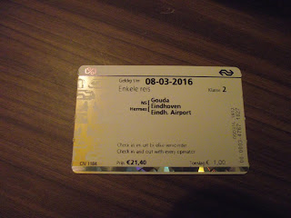
Vonat- és buszjegy
Eindhovenben az 1. vágányra futottunk be. Maradt a beígért 3 perc a buszindulásig, úgy tűnt, behozta a késést a vonat. Kimentem hát az állomásépület elé, és keresni kezdtem a 401-es buszt, de semmi ilyesmit nem találtam. Egy ott ácsorgót megkérdeztem, aki felhomályosított, hogy az épület másik felén van a buszvégállomás.
Baaaszki!
Ilyenkor persze mindenki szembejön, úgyhogy mire átértem, pont előttem húzott el, amire fel akartam szállni. Egy kiscsajtól megtudtam, hogy van direkt reptéri járat is, ott áll bent. Nosza!
Felszálltam és odakoccantottam a kártyát a leolvasóhoz, felvillant egy nagy nulla. Leültem.
- Ne izgulj, te hülye – mondtam magamnak, - ha elkésel, hát elkésel, nem tudsz mit tenni ellene! Ha meg nem, akkor megint csak feleslegesen görcsöltél.
Órák múlva elindultunk. Igen, eltelt addig vagy három perc is! Az időt, amíg átmentünk a városon, arra használtam, hogy két főtt tojást megpucoltam és megettem két kenyérrel. Volt egy félliteres flakonban vizem, de később akartam inni, nehogy felhígítsa az enzimeket a gyomromban.
A reptér valahogy elég szegényes benyomást keltett. Nem tudom, miért, nem is néztem meg, ez csak egy impresszió volt. Talán a sok film, amit kölyökkorom óta láttam tette, hogy egy repülőteret mindenféle luxussal felszerelt helynek képzel az ember. Napfény, csillogás, pezsgős és koktélos poharak, szőke miniszoknyás csajok. Mindenki boldog, mindenki gazdag. Ferihegy meg ugye magyar, tehát annak nem kell fényűzőnek lennie… De tulajdonképpen nem különbözött sem a magyar, sem a frankfurti reptértől. Úgy tűnik, ezeket egy kaptafára építik.
Még a karórámat is levetették, az acélbetétes topogót meg én kérdeztem meg, hát persze, hogy azt is le kellett húzni! Aztán már a fémkapu után odajött egy szép szál tag és megkérdezte, hogy ez-e az én tatyóm. Mondtam neki, hogy igen, erre azt mondta, vegyem ki belőle a laptopot. Kivettem, ő meg visszavitte azt is, meg a hátizsákomat is újabb röntgenvizsgálatra, de aztán visszakaptam őket. Majdnem hiánytalanul, mert a vizemet azt kivette és kidobta a kukába. Még inni sem engedett belőle. A kajámat meghagyták, kár volt magamba erőltetni a tojglikat.
Én pedig szomjas voltam! Na, mondom, most jöhet az, hogy egymillió forintért – ill. még euróért – vehetek valami löttyöt a presszóban. Kimentem vécére, de nagydologra már nem volt idő. Beálltam a megfelelő sorba, és átkoztam magam, hogy miért nem ittam ki a flakont, mielőtt átvizsgáltak.
Aztán még egyszer megátkoztam magam, és visszamentem a vécébe, hogy onnan, mármint a vízcsapról feltöltekezzem. Hiszen az ingyen van!
Ismét visszaálltam a hosszabbra nőtt sorba, és türelmesen ácsorogtam, amíg egy kisméretű félnéger nőszemély átnézte a beszállókártyáinkat. Nagyon csinos volt! Persze nyilván előfeltétel jelentkezésnél, de végre egy kellemes meglepetés, szinte bearanyozta a napomat, ami akkor még aludt valahol a keleti látóhatár alatt, amikor én a lengyel bagázst szidva meneteltem a folyóparton. Mennyire más volt már a helyzet!
Aztán végre beszállás, és pár perc késéssel start. Erről csináltam is egy 8 perc 50 másodperces HD filmet, de 1.81GB lett, meg sem próbálom feltölteni. Ráadásul a hang késik valamiért, és nem tudom utánaállítani. Előbb hallani, hogy „repülünk”, és utána fordul rá a pofámra az objektív.
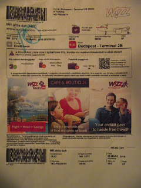
A beszállókártya
Mikikém Ferihegy vasútállomáson várt rám. Nem tudtam lebeszélni róla, mindenképpen ki akart jönni elém. Ez is alku eredménye volt, ugyanis a reptéren akart találkozni, de mondtam, hogy ott könnyen elkerüljük egymást. Egy rohadt kávét úgy megittam volna! Addig-addig köröztem, amíg találtam egy méregdrága presszót, ahol 450 forintért kaptam volna egy kapuccsínót. Ennyiért inkább vettem egy buszjegyet, mert a 200-as busz elsőajtós, nem tudtam volna fellógni. Volt egy olyan érzésem, hogy ez megkerüli az egész repülőteret, és ha tudtam volna, hogy merre induljak, gyalog hamarabb odaértem volna a vasútállomásra, de hát mindegy volt már, lélekben amúgy is fel kellett készülnöm Magyarországra és Fülöp Miklósra.
Az a 11 nap, amit Hunniában töltöttem, elég gyorsan elszállt. Persze reggeltől estig hallgatnom kellett a cigányorbánt, meg az ő zsidó bandáját, és hogy ne csodálkozzak azon, hogy így elbaszták ezt az országot. Egyetlen napra sem maradtam egyedül, és ezért nagyon kellett törnöm a fejem, hogy ne maradjon ki semmi fontos, amiért ideutaztam. Az első dolgom az volt, hogy elmentem a MagNet Bankba az Astoriához és kivettem az összes pénzt. Kicsivel több, mint 50 rugó volt bent, de miután nem tudtam a PIN kódot és személyesen vettem fel, többe került, így 49-et kaptam. Csigáéknál volt még 15 rugóm, azt elkértem. Ez, és a Hollandiából visszahozott ezer valamennyi szépen elfogyott, de olyan szinten, hogy még az ING-s kártyámról is le kellett venni majdnem száz eurót, persze magyar devizában. Vagyis összesen több, mint 95 ezer forintot költöttem. Szép?
A fogamat 10-én, csütörtök délelőtt húzattam ki a Simon dokival, ugyanis a Hengermalom úti fogászatra, ahol mint hajléktalant fogadtak, 17-ére kaptam időpontot, én pedig aznap akartam visszaindulni, hogy a hétvégét itthon töltsem. Nem is próbáltam elmenni oda, le sem mondtam, úgysem veszik észre, hogy nem jártam ott. Csak azt sajnáltam, hogy nem voltam erőszakosabb és nem csináltattam meg az alsó fogsoromat is még a nyáron.
Dr. Simonnál Emese az asszisztens csaj, vele egy házban laktam a Belvárosban. Mi az ötödiken, ők a hetediken. Áltisibe is egy helyre jártunk, csak ő pár évvel alattam, nem is tudtam volna arról, hogy létezik, ha nem lakunk együtt.
A fogamban egy gennyzsák lehetett, mert hiába kaptam 4-5 irányból a gyogyit, ahogy hozzáért a fogóval, láttam a naprendszer közelebb eső bolygóit a szomszédos napokkal együtt. Hangosan felnyögtem.
- Na, na! Már kint is van! - mondta a doki, és elkezdte húzni. Megjelent a Tejút, és a távolabbi galaxisok is felfénylettek. Ismét felnyögtem, így adva hangot méltatlankodásomnak, de aztán egy rántás, és kint is volt. A fájdalom még jó pár percig ott lüktetett a számban. Amikor kijöttem, két sápadt kiscsaj ült a Miki mellett. Nem mertek rámnézni.
- Kihallapfott? - kérdeztem a pofámból kilógó véres tampon mellett. A jobb oldali meg sem tudott szólalni, a másik bólintott.
- Igen.
A szótlan felállt és bement. Kapásból fel tudtam volna sorolni száztíz helyet, ahol szívesebben lett volna ma délelőtt, de én sem voltam jobban.
Jó, a 95-ben benne volt az is, hogy 4800-at adtam a házidokimnak, aki megvizsgált és kiállított egy papírt, amivel megújíthattam a jogosítványt. (Amikor mondtam neki, hogy elkallódott a gyógyszerem a postán, szó nélkül felírt még egy félévi adagot.) A Kormányablaknál 14 rugót útlevélre és ismét vagy négyet a jogsira, ezek kész lettek péntekre, de kiváltani már nem tudtam őket, majd Miki átveszi meghatalmazással. Ha ezt még októberben elintéztem volna, most csak fel kellett volna kapnom az asztalról. 4400 forintért vettem 4 ceruzaaksit, töltőt kaptam a Mikitől. Megtisztelve kellett éreznem magam, mert ezt annak idején az anyjának vásárolta. Cserében a kétdarabos töltőt, amit számgépről lehet tölteni, ott hagytam neki. Kaját vettem, piát vettem, magamnak egy húszdekás neszkávét, egy D-, meg rengeteg C-vitamint, és egy nagy doboz valamit, ami vitamin is, és ásványi anyag pótló is. Barna kapszulákban van. Eredetileg kollagént is akartam vagy fél évre, de azt kihagytam, mert ebben a korban 3 doboz egy havi adag, és a törzsvásárlói ára is 4100 rupó per doboz. Meg azt hová raktam volna?
És persze benne volt az a 39 000 froncsi is, amit a Taxibusznak adtam, hogy vigyenek el innen. 95 euró a fuvar, 35 a bringáért, az 130, de csak forintban tudtam fizetni. Rendesek voltak, 300-ban megszámolták.
Elkísértem M.-t az önkormányzathoz, ahol beadtuk a papírt, hogy a következő hónapban is megkapja azt az 5 rugó segélyt, amit még akkor intéztünk neki, amikor a leszázalékolása után futkostunk. Most, hogy átutalták az ehavit, gyorsan beadtuk a következőre.
Ő is ki akar menni, de Ausztriában gondolkodik. Egy volt kollégája, a Jani szintén kilépett, és menne vele. J. erdélyi, de állítólag vállalhat munkát az EU-ban. Láttam egy hirdetést, amit M. kimentett a gépére, ott takarítókat keresnek, férfiakat és nőket, nyelvtudás nélkül egy osztrák szállodába. Kaja, szállás ingyen, havi bruttó 1450 euró fizetés. Afene, jobban keresnének, mint én, és többet is félre tudnának tenni! Ha nem utálnám annyira a takarítást, komolyan elgondolkodnék rajta.
Az, hogy a házidokim 150/akármennyi vérnyomást mért, még nem volt annyira feltűnő, bár itt kint már simán elértem a normális szintet, de pár nappal később kezdtem tréül lenni. Éreztem, hogy magas, nem is kissé. Nem értettem, hiszen szedtem azt, amit itt kaptam ingyen a biztosításomra. Megnéztem, Amlodipin bezilát, akárcsak a magyar. (A Teva egy debreceni gyógyszergyár.) Mindkettő 5 milligrammos. Nem fért a fejembe. A kávé? Vagy a pia? De hát idekint akkor miért nem?
Váltottam, elkezdtem szedni a magyart. Azóta rendben érzem magam.
Kimentünk Ürömre a Sebipetiékhez, elhoztam a padlásról a gurulós sporttáskámat. Jó poros volt, először fel is tettem magamnak a kérdést, hogy valóban el akarom-e vinni, de már hallottam is M. hangját:
- Attilám! Persze, hogy elhozod! Azt te vetted, nem kevés pénzért, az a tied, hülye lennél ott hagyni!
Itt sem találtam a multiméteremet, amivel az elemek feszültségét szoktam mérni. Miután M.-nél nem volt, azt hittem, Ürömön hagytam.
Dórika gyereket vár, ez már a negyedik lesz. Van még kb. 3 hónapja. Gratuláltam nekik, meg a Noéminek is az övéhez. Megmondták, hogy átadják. Visszafelé vonattal mentünk a Nyugatiba.
Nagyon megváltozott Üröm és környéke! Méghozzá előnyére. Az út, ami kivezet Pilisborosjenőre, meg lett emelve, a vonat alatta kanyarodik el. Az állomásról egy alagút vezet az új út alatt, és szépen megcsinálták egészen a Solymárvölgyi útig. Sőt, még az sem tűnt olyan hepehupásnak. Hát, változnak az idők!
M. rendes volt, kisikálta a tatyómat. Nem éreztem különösebb hálát, mert nem felejtettem el, hogy tartozik még 18 ropival, plusz a kamatos kamatok, amit nem én találtam ki, hanem ő, amikor azt az ötvenvalahány ezret kölcsön kérte. Persze tisztában vagyok vele, hogy az életben nem fogja megadni, nem is hozom szóba, de remélem, hogy ő sem felejtette el, és egy kicsit, legalább egy kicsit lelkiismeret-furdalása van emiatt.
És ha már a veszteségeknél tartunk, tekintsük át, mivel lettem rövidebb, mióta megismertem őt!
Volt az a kaland, amikor a Norbi, akit még mindig nem ismerek, de nincs is kedvem megismerni, bent volt a lakásban, és „hogy lehet ilyen koszban élni?” felkiáltással felkapott több szatyrot is és kisietett vele a kukába. Köztük volt az enyém is, amiben a kipukkadt akkumulátorú tabletem is benne volt, meg még egy pár cucc: a Samsung töltője, egy flakon fertőtlenítő, ami több mint 4 rugó volt, meg még egy pár dolog, ami most nem is jut az eszembe, de összességében elég sokba került nekem.
Aztán a lélegeztetőgépem sem tudom használni, amióta olyan lelkesen kitakarítottak Andikámmal karöltve, hogy a maszkról leszakadt a már félig lelógó gumipogácsa, ami a homlokomnál tartotta. Pedig használnom kéne, mert az alvási apnoé nem tréfadolog!
Furcsa még, hogy nem találom a teszkós télikabátomat, ami könnyű és meleg volt, meg két zippes, csuklyás kardigánomat.
Ezek csak így kapásból, már nem is próbálok mindennek utánaszámolni. Most már tényleg remélem, hogy nem kell sűrűn találkoznom velük, akárki is vitte el. Új ország, új élet, le kell szarni, ami régen volt! Változtatni úgysem tudok rajta. Tanulságnak jó, azt annyi!
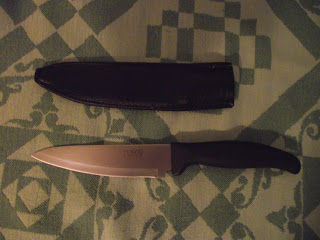
Azért a teszkós késem meglett!
Pénteken este 10 után szálltam be a Ford Tranzitba, és szombaton este 9 után szálltam ki itthon, Elzenhofban. Kajám nem maradt mára, és kb. 3 decinyi házipálinkát ittam egy ózdi cigánygyerek jóvoltából. Hosszú volt az út, de már túl vagyok rajta. Ma bent voltam a városban és vásároltam. Vadmacskám alig várta, hogy újra meglovagoljam. Sajnos M. kicsit sok levegőt fút a kerekekbe, így semmi rugózása nem maradt, de miután a hátsó puha volt, gondolom hamarosan le fog engedni, és akkor majd jó lesz. A hétfőm még szabad, és ha nem változik semmi, akkor kedden dolgozom legközelebb.
Egyszer még vissza kell mennem a papírokért, és valószínűleg jobban járok, ha félévente, vagy ahogy fogy a gyogyi, ott íratom fel. De már nem gondolkodom Magyarországban. Vesztő hely. Akár egybe is írhattam volna.
2016. március 23., szerda
- ANYÁM
Anyám ma lenne 83 éves.
Nem vagyok nyugodt a tekintetben, hogy mindent megtettem érte, amíg Békásmegyeren haldoklott. Jó, kiganéztam alóla, lemostam, próbáltam valami kaját vagy vizet beleerőltetni - sikertelenül -, de aztán húztam vissza a cellámba és beletemetkeztem a számítógépembe. Nem bírtam látni, ahogy szép lassan kiszáll belőle az élet.
A bátyámnál vagy a sógornőmnél persze ez jóval több volt, de... nem elég. Addig kellett volna mellette lennem, amíg lehetett. Amíg még képes volt beszélni. Gyakorlatilag egyedül kellett szembenéznie az egésszel, és hát nem ettől rettegünk mindannyian?
Még sokáig elbőgtem magam, amikor mindez az eszembe jutott. Kicsit most is. Ő biztos megbocsájtott nekem, de én nem bírok magamnak. És a bátyáméknak sem.
Aztán Edi (anyám húga, hetekkel élte túl őt) halála után a Blaskó család szakított velünk. A két lánya lepattintott minket a Faszbúkon. Engem is, naná. Nem is értem, miért csodálkoztam rajta.
Ők voltak, akik utoljára élve látták anyámat. Délután 2 körül jártak ott, bementek hozzá és még beszéltek vele. Aztán valamit dumáltak bratyóékkal is, már nem fog kiderülni, hogy mit. Ugyanis Ediék - vagyis a lányok - nem beszélnek velünk, isteni Fecóka meg a gyengéd, megértő, halk szavú felesége pedig csak hazudna valami semmitmondót. Szerintem finoman megkapták a magukét, de ezt sosem fogják bevallani. Egyébként is lepereg róluk minden ilyesmi. Bonnie és Clyde, ahogy Juliskám jellemezte magukat.
Aznap bőgve mentem a tanfolyamra. Nem is értem, miért nem maradtam otthon. (Otthon? Az a lakás soha nem volt az otthonom.) Talán ő maga küldött el, hogy ne kelljen végignéznem a haláltusáját. Talán csak bemesélem magamnak. Végül is két nappal korábban egy kézszorítással elbúcsúzott. Akkor is csak kimenekültem előle.
Pontosan tudom, mikor ment el. Már a HÉV-en ültem hazafelé, amikor a bal vállamon egy szorítást éreztem. Pedig nem volt a közelemben senki. Akkor megnyugodtam. Tudtam, hogy már jó helyen van.
2016. március 23., szerda
- 1000
Ezer darab oldalmegjelenítésnél tartunk. Köszönöm Nektek! :)
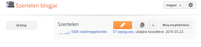
2016. március 25., péntek
- KÉPZAVAR
Szombat este, amikor visszajöttem, buliszag volt a lakásban. Ott volt mindenki: Marcin, az alfahím a nőjével, Malwinkával. Megölelt a csaj, nagyon jólesett. Kamil a picike Kaszával (jaj, hadd írjam Kashának!), a két leszboszi, meg egy magas srác, akiről azt hittem, valakinek a meghívott vendége.
Marcin kérdezte, hogy hogy telt a két hét, de inkább a visszaútról meséltem neki. Amikor ahhoz a részhez értem, hogy a cigánygyerek megkínált pálinkával, felállt és azt mondta:
- Ez mind átverés (bullshit)! Nem hiszem el, hogy egy cigány pálinkával kínál!
Mindezt halál komoly pofával. Neki ilyen a humora, de én tökjót nevettem rajta. Aztán elmeséltem nekik még azt is, hogy az egyik német benzinkútnál sok volt a kerítés, nem tudtam kimenni a zöldbe, kénytelen voltam az angol vécét használni. Volt egy kéteurósom, meg némi apró, de valóban aprók, egy- és kétcentesek. Azokat itt el lehetett volna költeni, annyi viszont nem volt, hogy elég legyen az automatába. 70 centtel működött, és kiadott egy kártyát ötvenről, amit le lehetett vásárolni. Nem csak ott, hanem akármelyik kútnál, ami az ő nevüket viseli, persze megint elfelejtettem megnézni, de úgysem járok sokat Németországban. Mindenesetre értelmes volt ott elkölteni, hiszen a fene sem tudja, hol állunk meg legközelebb. Viszont így, hogy 20 centtel rövidebb lett a büdzsé, nem jött ki egy kapuccsinó. A cigány srác állt mögöttem, és kipótolta a pénzt úgy, hogy az ő kávéjának az árát is odaadta a kiegészítő apróval együtt.
Amikor odaálltunk a kávéautomatához a két zsetonnal, ami egyébként kísétetiesen hasonlít a droomgaardi mosózsetonhoz, láttuk, hogy az egy feketekávé kivételével, amit ő ivott, minden egy árban van. A fekete 2.30, a többi 2.70. Tehát itt vesztett 40 centet, meg még amit nekem adott, sőt a kártyát sem vette el az automatából. Bementem a vécé előterébe, és láttam, hogy kilóg egy a gépből. Kivettem és odaadtam neki. Persze utólag nem sokat ér vele, de majd ha legközelebb Németországban jár, és éppen annál a hálózatnál… Szóval elteheti emlékbe.
Aztán amikor ahhoz a részhez értem, hogy egy cigánytól pénzt kaptam, Marcin ismét felállt, hogy hatásosabb legyen a szentenciája, és ezt mondta:
- Egy cigány pénzt adott neked? Ez a legnagyobb átverés! Ezt már senki nem fogja neked elhinni. Attila, menjél aludni, mert részeg vagy! - és kiment a nappaliból.
Gurultam a röhögéstől!
Kedden volt az első munkanapom. Úgy volt, hogy aznap és pénteken délutános vagyok, ami azt jelenti, hogy 15:30-tól éjjel 1-ig, de úgyis előbb lesz vége. Ilyenkor meg kell várni a pickingelőket, mert az autó is csak 1 után érkezik (volt, hogy 2 után jött), és persze ezt az időt már nem fizetik. A két középső napom, szerda és csütörtök reggel 10-től 15:30-ig szólt volna, és az benne a szopás, hogy alig tudsz aludni. Ugyais ilyenkor kint kell lenni sokszor fél 9-kor az autónál. Számold ki! Ha negyed 2-kor elvisz a kocsi, 2 után érsz be Elzenhofba. Be a házba, pisi, minden, és ha rögtön lefekszel, talán tudsz aludni 5 órát, és máris mehetsz vissza gályázni. Azért ez nem annyira európai!
De hát akkor ki fog internetezni? És ha rögtön lefekszem, nem is biztos, hogy el tudok aludni.
Kedden a 10-es hallban a 4. emeleten kezdtem. Odajön a vörösre festett hajú, apró termetű, szétcigarettázott hangú nő, az egyik a zöld sasok közül (ld: Lengyelország megmutatja igazi arcát) és azt mondja, hogy beszélni akar velem. Persze éppen akkor mentem oda a vízgéphez, egy fokkal jobb lett volna, ha éppen lázas munkában talál, de hát ilyen az élet. Mondom neki, hogy tessék.
Hogy a kompjúter kidobta az én nevemet (is, mert egy aránylag rövid lista volt nála), hogy nem teljesítem a normát. Mert van egy norma, óránként 150 árucikket (item) kell a helyére tenni, az én rátám pedig 75.
Hm… Az pont a fele.
És hogy szedjem össze magam, mert ez nagyon alacsony, és csak azért szól, mert ha egy nap kirúgnak, akkor ne azt kérdezzem, hogy mi ez a szar (what the fuck is this).
Na, jól van akkor, már nem is hiányzott más a boldogságomhoz! Pont most hoztam ki magammal mégegy sporttáskát, meg a biciklit, ha költözni kell, hát az nagy szopás. És hova? Mert nem akarok visszamenni Magyarországra. Dánia? Vagy Ausztria?
El lett cseszve a napom, és az csak a jobbik eset, ha csak a napom. Törtem a fejem, mi a fenét lehetne csinálni. Jó, hogy általában nem szünetben megyek ki kakálni, hanem amikor rámjön, meg nekem az a jó, hogyha a cég fizeti a szarásomat, de ha ezt kihagyom, akkor sem tudok kétszeres sebességre gyorsulni! Az a sok apró szar, amikkel rohangálni kell, elviszi az időt. Még ha nem is lenne saját helyük, keresnék nekik újat, ahhoz nem kéne oda-vissza bejárni az egész emeletet. Bezzeg milyen jó volt a másodikon a könyvekkel!…
Éjjel, amikor vége volt a melónak, bekapcsoltam a telefonom, és jött egy sms, hogy a másnapi beosztásomat reggeliről délutánira cserélték. Ezt már az itteni OTTO csinálta, nem az, aki részegen vagy beszívva Venloban (vagy Venrayben, ezt sosem tudom) megcsinálja az eredetit.
Szerdán a white boardnál láttam, hogy a 3. szintre vagyok beosztva. Kérdeztem a Halászjutkát, mert utánajártam, hogy ő csinálja a beosztást (a másik zöld sas!), hogy nem tud-e legközelebb a könyvekhez tenni, mert ott feljavíthatnám a rátámat, de azt mondta, hogy a 3. nem vészes.
Nem vészes, mi?! A sok apró kozmetikai biszbasszal! Hát kösz szépen! Belehúztam, amennyire tudtam, de hát ki a fene tud kétszer olyan gyorsan dolgozni? Menjenek a fenébe!
Dániában milyen deviza van?
Amikor éjfél után megérkeztünk, a listáról tudtam meg, hogy csütörtökön is délutános leszek. Ül egy angyal az OTTO irodájában és törődik velem!
Ugyanis így az órám is több, bár nem dolgozzuk ki mind a 9 és felet, és ki tudom aludni magam. Ki tudnám…
Aznap már a másodikra osztottak be, és estefelé megtalált a cigihangú, és megdicsért, hogy milyen jó a rátám (amazing). Nem tudtam megállni, hogy ne hivatkozzak arra, hogy nem kell szétsétálnom az agyam, hanem egy POS (szürke, alacsony, négykerekű doboz) könyvet 10 méteren be tudok inboundolni.
Mert hogy tökmindegy, hogy hová teszed őket, csak beférjenek a helyükre (lokatio). Azon belül semmi nem számít: sem méret, sem téma, semmi. Csak legyenek bent!
Imádom!
Hazafelé Malwin elkérte a sofőr másnapi beosztását, onnan olvasta fel, hogy kiket visz ma. Esküszöm, hogy indulásnak thirteen o'clock-ot mondott, vagyis du. 1 órát! Meg sem néztem a listát, mert minek.
Ma mentem le a lépcsőn, és odaszóltam a békésen ücsörgő Marcinnak:
- 5 perc indulásig!
Elkerekedett szemekkel nézett rám. A csaj kezében megállt a kenőkés.
- 14 órakor!
- Nem Malwina mondta, hogy 13 óra?
Nem, nem, miért mennénk be 2 órával korábban?
Hát mert már volt velem olyan, és bent vártam több mint egy órát, hogy az én munkaidőm elkezdődjön.
Á, nem, az biztosan 2 óra lesz!
Úgyhogy feljöttem ide a kuckómba, és megírtam ezt a blogbejegyzést. Nem vagyok elég hülye, még nagyobbat kell belőlem csinálni?
2016. április 19., kedd
- JELEN!
Hú, de régen… Na mindegy.
Szóval amikor visszajöttem, itt volt egy colos srác, akit még nem láttam előtte. Piskótával kínált (butter cake), a csajok meg nagyon finom konyakkal, úgyhogy elvoltam, mint a befőtt, de aztán persze már alig vártam, hogy felszivárogjak ide, mint a hagymaszag. Beszélgetni úgysem akartam volna velük, meg ők sem velem, mert bonyolult lett volna angolra fordítani a dolgokat, így lengyelül tudtak dumálni egymással.
Reggel meglepve láttam, hogy a két csaj a kanapén alszik. Mi ez? Ennyire udvariasak akartak lenni a sráccal, hogy inkább ők alszanak kint ketten, hogy a csávó egyedül elférjen az ágyban? Aztán eltűntek. Ők elköltöztek, a pasi maradt. Hiányoznak.
(Aztán a srác is elbútorozott egy pár hete. Nem maradt sokáig, ezért kár volt a leszbosziakat kitúrni. Állítólag egy Albert Heijn-ben fog dolgozni. Hát, egészségére!)
Nem számoltam a Húsvéttal, az pedig hívatlanul is eljött.
Itt az a divat, hogy a többnapos ünnepek első napján zárva tartják a boltokat, a másodikon kinyitnak, de rendszerint rövidített műszakban. Engem vasárnap evett be a fene a városba, és akkor is délután. Reménytelennek tűnt, hogy bármilyen kaját beszerezzek, amikor rátaláltam egy cukrászdára. Nem is volt messze az AH-től, pár méter csak. Kint egy D betű volt, de a zacskójukon az áll, hogy Délifrance, bármit is jelentsen. Bementem, és nem bántam meg, mert egy nagyon csinos csaj volt az eladó.
Pontosabban ketten voltak, de valahogy ezen akadt meg a szemem. Talán azért, mert Joan Jett-re hasonlított, őt meg imádom.
Kértem egy almás pitét, amit ott helyben meg is kajáltam, és isteni finom volt! Meg vettem, úgy emlékszem, 4 croissan-t, mert a negyedik ingyen volt, és a kétféle pizzából 1-1 szeletet. Ezek téglalap alakúak, nem körcikk, tehát tárolni és szállítani is könnyebb volt. Mint kiderült, eléggé egyformának tűntek, a sajt alatt fűszeres darált hús. De ez akkor megmentette az életemet. 3 perc a mikróban, és fogyasztható. Két étkezésre is elég volt.
Másnap aztán csak a Plus-ig mentem be, ott vásároltam kaját, de pár héttel később még megjelentem a Délifrance-ban. Joan emlékezett rám, a másik nem. Nem baj, én sem őrá. Ketten magyaráztuk neki, hogy én voltam az, aki Húsvét vasárnap kajáért mászkált a városban, és újra biztosítottam őket, hogy aznap megmentették az életemet. A másik bögrét ez nem nagyon érdekelte, engem meg az nem, hogy őt nem. Joannak gyönyörű barna szemei vannak. Két almás pitét elvittem, meg egy másik sütit, amiről az derült ki, hogy kávéízű, de mazsola is van benne. A nevét nem tudták megmondani, de az sem érdekelt. Vállig érő barna haja van, és karcsú, nyúlánk alakja.
Mármint a csajnak.
Ide még vissza kell jönnöm egy párszor!
A meló… Hát a meló ugyebár már régen elvesztette a varázsát, napi robotnak tűnik, a köcsög lengyel sofőrökkel pedig csak a gond van. Hol ők késnek, és akkor az természetes, hol én kések, és akkor a morgás van. Hát az anyátok! Persze a kocsiban rajtam kívül mindenki lengyel, így nem is lehet igazam, tehát jobb, ha befogom a pofámat, és leszokom a késésekről. De miután max. pár percről van szó, nem szólhatnak igazából semmit.
Most csütörtökön viszont sikerült vagy negyed órát késnem. Én sem tudom, hogy jött össze! A helyzet az, hogy bármikor megyek zuhanyozni, valakinek mindenképpen akkor kell nyitogatnia a vízcsapot. Ilyenkor mosogatnak, vagy húzzák a vécét, vagy fogat mosnak a konyhában… Valamit mindenképpen csinálniuk kell, amikor én vagyok bent. Persze a meleg víz elmegy, és kell egy pár másodperc, amíg utána is visszaáll arra a hőmérsékletre, amit én állítottam be. Ezzel szépen mindig elmegy az idő. És nem veszik észre, hogy ezért kések!
Marcin, az alfahím nem egyszer rám szólt, hogy most menjek, mert most üres a fürdőszoba. Egyszer túl sokat nyitogatták a csapokat, és amikor kijöttem, odaszóltam neki:
- Beküldesz a fürdőbe, hogy hideg vízzel zuhanyozzak.
Hogy neki nincs hatalma a víz hőmérséklete felett. Megkérdezte, hogy egyfolytában hideg volt-e a víz, és mondtam neki, hogy nem, hanem hullámokban. Ha ebből nem ért, akkor semmiből, de szart rá továbbra is. Pedig ha ennyire szereti – szeretné – az ujját rajta tartani a család ügyeinek az ütőerén (szép képzavar!), hát akkor megszervezhetné azt is, hogy ne legyen elcseszve a fürdésem. De odáig nem jut el az én Osztap Benderem.
Na és csütörtökön a szokottnál is később mentem be, ki volt számolva az időm, és a szokottnál is többet nyitogattak-csukogattak. Egyszer csak azt hallom, hogy bevágják az előszobaajtót, és utána már egyenletesen jött a meleg víz. Na, mondom, végre!
Rövidesen végeztem is, de azért ideges voltam: éreztem, hogy kicsúszok az időből. Nem baj, magukra vessenek, biztos nem lesz pofájuk beugatni, de ha mégis, hát arra fogok hivatkozni, hogy őmiattuk késtem.
Nem volt alkalmam semmire sem hivatkozni, mert nem várt meg a sofőr. Elment a nyavalyás, itt hagyott, és még egy lengyel srácot is. Amikor ő bement az irodába, hogy megkérdezze, hogy most mi lesz, kijött a nő, bemutatkozott, hogy ő Kasha, és ő itt a szállásmanager. És hogy a faszi azért nem várt meg, mert hogy én rendszeresen kések, itt is, és a munkahelyen is, mert ott meg állandóan kávékat meg csokoládékat iszom, amíg a többiek rám várnak az autóban.
Ez sem volt igaz, mert egy csomószor volt, hogy én vártam rájuk az autóban ülve. Egyszer mondjuk várniuk kellett vagy fél órát, mert egyedül én inboundoltam a brigádból, és a végén azt mondták, hogy álljunk neki takarítani. Én el is kezdtem, a többiek meg szépen elszivárogtak, úgyhogy ezzel elment egy fél órám, pedig annak az emeletnek csak a felét csináltam meg. Mertek volna reklamálni, szóltam volna, hogy a másik felét csináltassák meg azzal a tizenvalahány emberrel, akik tiplit vettek! De hát már a floor operator-ok sem voltak ott. Nekem hosszabb lett a munkaidőm fél órával, mint a többieknek. Amikor lejöttem, benéztem a pickingelőkhöz, és láttam, hogy még vannak, akik dolgoznak, így azt hittem, van időm, de akkor sem ittam semmit, hanem kimentem, hogy beülök az autóba olvasni. (Igen, a sötét autóba, éjszaka, mert én azt tablet PC-n csinálom.) De kiderült, hogy azt a brigádot már egy fél órája elengedték. Ludwig volt a sofőr, aki hússzal ment Goudában, amikor azt hittem, perceim vannak arra, hogy a gyógyszeremhez jussak. Nem akkor utáltam meg, nekem már eleve nem volt szimpatikus, és ez gondolom kölcsönös lehet. Mellette ült a nője, akit már a múltkor is fuvarozgattunk egyik egyik benzinkúttól a másikig. (Hogy is van a maszek fuvarokkal kapcsolatos szabály? Úgy, hogy tilos!) Beszólt a pasi is, meg a csaj is, én annyit mondtam, hogy dolgoztam. A faszi mondott valamit lengyelül, én meg magyarul válaszoltam neki, hogy neked is. Ebben maradtunk, más szó nem esett. És most végre bosszút állhatott.
Egen, negyed óra késés valóban elég durva, és ezért nem is rá tudtam haragudni, hanem Marcinra, hogy miért nem bír rendet tartani a lakásban, ha már beleugat mindenbe. Másnap nem is szóltam hozzá. (Micsoda büntetés! Szerintem csak röhögött a markában.) De hát ezt nem lehet sokáig csinálni, úgyhogy újra beszélőviszonyban vagyunk.
Jó hír viszont, hogy a fiatalok – Kamil és Kasha – költözni akarnak, és rám is gondoltak. Kamillal dumáltunk erről. Azt mondta, hogy hiába kérdezte M.-ékat, csak hümmögtek. Ezt jó jelnek tartom, mert azt jelenti, hogy nincs kedvük jönni, de mondani persze nem mondtam.
A ház, amit 600-ért bérelnénk, valahol Kaatsheuvel oldalában van, méghozzá nem is messze Droomgaard-tól, attól talán délre valahol. A telefonján mutatott róla képet. Gyakorlatilag ugyanaz a bungaló, 3 hálóval, csak nem fehér, hanem kék. Nekem mindegy, csak elég távol legyünk a migránsoktól!
Vajon végül ki lesz a harmadikban?
Mindhármunknak van bringája, tehát a közlekedés megoldva. Persze a rezsiért külön kell fizetni, és még havi harmincért állítólag elég jó wifit adnak, de akkor is olcsóbban jövünk ki, és nem függünk többet az autóvezetőktől. Bár már ott tartanánk!
Tegnap, vagyis vasárnap érkezett egy bucifejű lengyel, ő fog a colos helyén lakni. Valami Macseknak hívják – nem vicc!
Nem is szoba az, hanem átjáróház.
Éjfél után szépen, halkan elment a Net sétálni, és még azóta sem bírt hazatérni. Próbáltam elérni a gépről a routert, de lusta és türelmetlen vagyok végigpróbálgatni a lehetőségeket, miután a 4 legvalószínűbb nem jött be, ezért úgy döntöttem, hogy kaja után bemegyek a városba, és ott keresek egy helyet, ahol van szabad wifi, és feladom végre a blogot, hadd olvassatok.
Ja, a kaja! Tegnap éppen szartam (hát bocsi, csak ittam egy kis konyakot, és ilyenkor… tudod!…), amikor hallom, hogy csengetnek. Meg voltam róla győződve, hogy valamelyiknek valamelyik lengyel haverja jön megint, de nem, mert a magyar pár keresett meg engem.
Ők is a DocDatában dolgoznak, de hátul, egy másik (harmadik? negyedik?) cégnél, ami magyarul méhkaptárt jelent. Pontosabban dolgoztak, és most elköltöznek „privátba”. Később lehet, hogy visszamennek Mo.-ra, de remélem, hogy ezt rosszul értettem. Na és hoztak egy hatalmas szatyor kaját, hogy ők nem akarják elvinni, de teli volt mindenféle levesporral, pop cornnal, fűszerekkel, pezsgőtablettával… Meg volt a közepén egy félliteres vodkás üvegben igazi házi pálinka!
Na és volt 3 doboz rizs is, meg egy üveg Uncle Ben's, úgyhogy nagy elhatározásomban meghívtam a házat egy rizses csirkére, már csak csirkemellfilét kellett venni hozzá. Persze azt is én vettem, két dobozzal, á 85 deka és €5.50. Vagyis több mint másfél kilót kaptam 11 euróért. De tegnap valahogy elmaradt a főzőcske, így ma csinálta meg Marcin.
Most kajáltam be egy hatalmas adagot. És persze már elég késő van ahhoz, hogy elmenjek netezni. La Place fél 7-ig van nyitva, ha most rögtön elindulok, talán éppen látom bezárni.
Holnap délelőtt lesz az alkalom, hacsak addig nem jön meg ez a szar wifi ide Elzenhofba. Hát sajnálom!
2016. április 29., péntek
- MIT TEGYÜNK, HA NEM TUDJUK, MIT TEGYÜNK?
(Azaz talán most meg tudom magyarázni, mitől vagyok én annyira motiválatlan.)
Braskó Csaba írása
A legutóbbi levelemben arról írtam, mi történik akkor, amikor együtt dolgozom egy ügyféllel. Most pedig arról írok, mi történik akkor, amikor valakivel nem tudok együtt dolgozni.
Az én munkám ugyanis akkor kezdődik, amikor valaki tudja, hova akar eljutni. amikor pontosan tudja, hogy mit akar. Amikor van egy jövőképe. Sajnos azonban gyakori eset, hogy az ember nincs tisztában ezzel. Szeretne kezdeni magával valamit, de nem tudja pontosan, hogy mit. Érzi ő, hogy többre hivatott, de nem tudja még, mire. Sejti, hogy a cégében van potenciál, de nem biztos benne, hogy mi is az.
Úgy tűnik vannak emberek, akik szeretnének tenni valamit, de nem tudják, mit.
Mit tegyen valaki aki nem tudja, mit tegyen? Merre induljon, aki nem tudja, hova akar menni?
Ha kezedbe veszel egy sikerkönyvet, akkor az égvilágon semmilyen segítséget nem fogsz ehhez kapni, ugyanis az összes azzal kezdődik, hogy találd ki, mi az, amit akarsz. A sikerszerzők azért nem tudnak neked ebben segíteni, mert ez a probléma nem ilyen jellegű.
Az ember természeténél fogva tudja, hogy mit akar. Nézz meg egy kisgyereket: sohasem unatkozik. Mindig tudja, mi érdekli, mivel szeretne játszani, kivel szeretne együtt lenni. A kisgyerek gátlástalanul megmondja, ha valaki szép, és azt is, ha valaki büdös. A kisgyerek tehát tisztában van a vágyaival, tisztában van a körülötte lévő világgal, és el tudja dönteni, hogy mit akar. Azonban - ahogy arról már egy korábbi levélben írtam - a kisgyerek rabszolga is egyben: nem tehet meg mindent, amire vágyik. Akkor kell lefeküdnie aludni, ha azt a szülei diktálják, akkor kell ennie, amikor azt megmondják neki, fel kell vennie a sapkát akkor is, amikor ő nem akarja, és akkor is fogat kell mosnia, ha az neki nem tetszik. A kisgyerek részben a saját érdekében válik rabszolgává, hiszen az egészsége múlik rajta, hogy tiszták legyenek a fogai és jól felöltözzön a hidegben. Ugyanakkor részben azért is válik rabszolgává, mert a szüleinek így kényelmes.
Egyetlen szülőtől sem elvárható, hogy napi 24 órában a gyerek rendelkezésére álljon, hiszen akkor ő válna rabszolgává. Szükséges tehát egyfajta egyensúly, amit persze néha nem könnyű megtalálni. Amikor pedig nem sikerül, akkor az okozhat problémákat felnőttkorban.
Ugyanis amikor a szülő túlzott alkalmazkodást vár a gyerektől, akkor a gyereknek meg kell tanulnia lemondania a saját vágyairól.
A gyerek nem tudja másképp kezelni ezt a helyzetet. Ugyanolyan ez, mint a szobatisztaság: kell egy bizonyos kor, egy bizonyos érettség, amire megtanulja használni a megfelelő izmait. Addig maximum annyit tudna tenni a gyerek, hogy nem eszik és nem iszik, így nincs mit kipisilni. Pontosan ugyanez a helyzet a vágyakkal is. Ha a gyereknek azt mondja a szülő, hogy nem játszhat a homokozóban annyit, amennyit ő szeretne, akkor a gyerek csak egyetlen dolgot tud tenni: valahogy megtanulja lekapcsolni a homokozás iránti vágyait.
Ez nem egészen pontos így. A gyerek kétféle dolgot tud tenni: megküzd a vágyaiért, vagy alkalmazkodik. Természetesen a küzdelem ilyen esetben rendszerint kudarcra van ítélve, és emiatt a gyerek több-kevesebb küzdés után inkább az alkalmazkodás felé fordul, mégpedig azért, hogy elkerülje azt az óriási fájdalmat, amit a vágyainak a beteljesületlensége, és a küzdelem kudarca jelent.
Ha a szülő annak érdekében, hogy az ő élete kényelmes legyen, sok dologban kezdi korlátozni a gyereket, akkor a gyerek nagyon nagy gyakorlatra tesz szert a vágyainak az elfojtásában. Minél gyakorlottabb lesz ugyanis, annál több fájdalomtól tud megszabadulni ezáltal. A csapda persze az, hogy mivel ezt a viselkedést a túlélésünk miatt, és az óriási fájdalom elkerülése érdekében alakítottuk ki, ezért aztán nem mondunk le erről felnőttkorunkban sem.
Ez az egyik legkézenfekvőbb oka annak, ha valaki felnőttként nem tudja, mit akar.
Mert gyerekként megtanulta, hogy sokkal biztonságosabb elfojtania a vágyait. A különös az egészben az, hogy az ilyen emberek meg vannak győződve róla, hogy nekik teljesen normális és átlagos gyerekkoruk volt. Ez természetes eredménye ennek a lelki folyamatnak, hiszen pont az a lényege az egésznek, hogy megszabaduljanak a fájdalmas emlékektől. Pontosan azért nem emlékeznek arra, hogy milyen rossz élmények érték őket gyerekként, mivel hatásos módszert alakítottak ki magukban az alkalmazkodásra. Ennek a végeredménye, hogy kapunk egy felnőtt embert, akiben nincs igazán erős ambíció, és még arról is meg van győződve, hogy az ő gyerekkora egészen átlagos volt.
Ilyen helyzetben nem segítenek a sikerkönyvek, hiszen ilyenkor először is vissza kell szerezni azt a képességünket, hogy kapcsolatot tudjunk teremteni a vágyainkkal. Erre leghatékonyabb módszer a terápia. A terapeuta munkája az, hogy megmutassa nekünk, létezik egészséges, normális, kiegyensúlyozott kapcsolat két ember között. Létezik olyan kapcsolat, amiben kimondhatjuk, amit gondolunk anélkül, hogy szégyellni kellene magunkat. Létezik olyan kapcsolat, ahol örülnek a vágyainknak. Ezt kizárólag egy ember tudja megmutatni nekünk, ez nem megtanulható könyvekből. Ez a folyamat van akinél hosszabb, van akinél rövidebb ideig tart, azonban amint ezt a megtapasztalást képesek vagyunk a mindennapi életünkbe is átvinni, akkor többé már nem lesz szükségünk arra, hogy elnyomjuk a vágyainkat.
Ezen a ponton jön az a tanulási folyamat, aminek során ténylegesen megtörténik a vágyaink "újraélesztése". Itt a régi gyerekkori reflextől kell megszabadulni, miszerint a vágyainkat nem kell komolyan venni. Nyilvánvalóan ha a szüleink nem vettek minket komolyan, akkor mi magunk sem vesszük magunkat komolyan. Ezért a gyakorlás lényege, hogy elkezdjük magunkat komolyan venni.
A saját vágyaikat rutinosan elfojtó emberek nagy része általában inkább abban jó, hogy azt tudja, mi az, amit nem akar, és csak kevésbé van tisztában azzal, mit is akar. Ezért érdemes azzal kezdeni, hogy megszüntessük azokat a dolgokat magunk körül, amit nem akarunk. Egy jó gyakorlat erre, ha előveszünk egy papírt, és felírunk rá néhány olyan dolgot, ami zavar minket. Például ha zavar, hogy a párunk mindig hangosan zörög a kulccsal, ha a főnök esténként sms-eket küld, ha a szomszéd hajnalban nyírja a füvet, akkor ezeket mind írjuk össze egy darab papírra. Ezután pedig vegyük komolyan magunkat, és kezdjük el kipipálni a listán a tételeket, azaz kezdjünk el megküzdeni azokért a dolgokért, amik nekünk fontosak.
Ilyenkor ha törik, ha szakad, be kell bizonyítani magunknak, hogy erre képesek vagyunk. Rá kell venni a párunkat, hogy ne zörögjön a kulccsal, a főnököt arra, hogy ne küldözgessen üzeneteket munkaidőn kívül, a szomszédot arra, hogy normális időben nyírja a füvet, és így tovább. Ezzel három dolgot tanítunk meg magunknak. Az első, hogy a küzdelemnek van értelme, nem úgy, mint gyerekkorunkban, amikor az erőviszonyok miatt kudarcra voltak ítélve a próbálkozásaink. A második, hogy képesek vagyunk elérni, hogy a környezetünk a vágyainknak megfelelően alakuljon, azaz önbizalomra tudunk szert tenni. A harmadik pedig az, hogy megtanítjuk magunknak, hogy érdemes vágyni dolgokra, és nem kell ezekről többé lemondanunk, hiszen a vágyaink végül elérhetőek.
Ekkor kezdődhet az én munkám.
2016. május 1., vasárnap
- VÁLTÁS UTÁN, VÁLTÁS ELŐTT
Ma lesz az első vasárnap, hogy dolgozom. Ez azért jó, mert 100%-os pótlékot kapunk rá, vagyis kétszer annyit keresek, mintha csak hétköznap csinálnám. Csakhogy valami félreértés történt.
Hogy miféle, azt csak találgatni tudom. Ugyanis az Isabel-en, ami egy weboldal, és a beosztásunk azaz shift-ünk (váltás) van egész hétre feltüntetve, szerepel a vasárnap is. Ugyanúgy az sms-ben is, amit péntekenként kapunk az OTTO-tól. A listán azonban, amit este 8 és 9 között tesznek ki az egyik ház falára, nem vagyok rajta. Arra gondolok, hogy tele lenne a busz (mikrobuszról beszélünk, a vezetőével együtt 9 ülés van benne) és valakit ki kéne hagyni, és hát persze ne egy lengyelt hagyjunk már ki, hanem a magyart. És marhára meg lennék lepve, ha nem erről lenne szó.
Itt a házban a többiek általában heti 6-7 napot dolgoznak, de hát ők lengyelek! Hadd keressenek sok-sok pénzt!
Írtam egy sms-t annak a Kamil-nak (Chobrak), aki az OTTO irodában ül, illetve nem ül, mert szinte mindig kong az ürességtől a kis kalitka, bármikor megyek oda valamiért, szóval írtam neki, hogy mi az ábra, és visszaírta, hogy igen, ő is látja az Isabel-en, hogy be vagyok osztva, jöjjek csak, de fontos, hogy közöljem az itteni irodával is. (Pedig ő is lengyel.) Közöltem velük sms-ben, ugyanis az egész valamikor este 9 után volt, és nem hogy most, de napközben is ritka, mint a fehér Zorro, hogy ott ül valaki. Azt is írtam, hogy szóljanak a sofőrnek is. Na ők nem válaszoltak, úgyhogy most izgalmas a dolog. Délben, amikor a „sorakozó” lesz, ahogy én hívom, lesznek majd nagy meglepetések!
Váltás előtt vagyunk, erősen körvonalazódik már a költözésünk az itteni Kamil-lal és Kashával.
Ez, mint írtam, egy kaatsheuvel-i bungaló lenne, takkra olyan, mint Droomgaard-ban volt, csak nem ott, hanem egy másik telepen, de közel hozzá. Ezt – természetesen – egy lengyel iroda adja bérbe. Meglepődtem volna, ha oda nem tették volna be a lábukat!
Úgy néz ki, hogy csak egy hónap kauciót kell fizetni, meg valami 120 euró körül a közvetítési díjért. „Nézz szét! Mindenki leveszi a részét” - ahogy a Tankcsapda megénekelte még annak idején.
Na és úgy lenne elosztva a dolog, mondja az én Kamil-om, hogy 1450 euró egyharmadát nekem kéne fizetnem, a kétharmadát meg majd ők a csajjal. De ha más nincs, Waalwijk-ban – persze szintén egy lengyelek által uralt iroda útján – kiveszek egy szobát, 250-ért már hirdetnek, és az közelebb is van a melóhelyhez.
Váltás történt a Vodafone-nál is. Először is megszüntették a sCool csomagomat, ami igencsak kedvező árfekvésű volt. (Naná, azért kellett megszüntetni!) Rábasztak a Bázis díjcsomagra. Felmentem a Voda oldalára, hogy megnézzem a percdíjakat, mert azt ugye elfelejtették megírni, de ott csak a Max csomagok voltak, ahogy egy (két?) hónappal ezelőtt is.
Ma nem voltam rest, az esti 11 órás kabaré ismétlést meghallgattam (meg fel is vettem, mert arra is képes a Radio Maximus programja), aztán a Himnuszt és a híreket is, de a sporthírekre kikapcsoltam és felhívtam a Vodát.
Aránylag hamar kapcsoltak. Egy pasival dumáltam, megérdeklődtem a dolgokat, és persze, hogy a Bázis a legdrágább! Egységesen (magyarul: a percdíj és az sms is) 59 forint. Szemben a sCool nem is tudom már, talán 29 forintjával. Hát dugjátok fel magatoknak! Ő, mint a többi telefonos kisasszony is, a Perc+ díjcsomagot ajánlotta, ami egy tizessel olcsóbb, de csak akkor lép életbe, ha minimum 2 rugót feltöltesz rá. Ha hármat, akkor 30 napig 30 froncsiért telefonálsz, és ha ötöt, akkor 25-ért.
De csak 30 napig! Aztán visszadob az alap 49-re, és ha ezt sokallod, újra töltened kell rá.
Kérdeztem, hogy nincs is más tarifacsomagjuk? De, a Max díjcsomag. És a kör bezárult!
Na jól van akkor, asszem az lesz, hogy hagyom a Bázison, úgysem telefonálok olyan sokat. Mi a fenének szervezzem meg mindig (de legalább egyszer), hogy Magyarországon töltsenek a telefonomra, én meg utaljam át euróban, ami majd forint alakban fog megérkezni stb. Ugyanis, mint az Idegenben blog olvasói oly jól tudják, egyszer R'damban töltöttem a SIM kártyámra, és nem is tudom, hány százalékot levont az összegből. Hát anyád!
Szóval itt tartunk. Délben valószínűleg lesz egy kis harc, és még az is lehet, hogy éjfél után is, amikor haza kell jönni, mert két sofőr is előszeretettel hurcolássza a nőjét. De majd beleülök az ölébe, és akkor nem lesz kedve többet eljönni velünk!
2016. május 6., péntek
- KETTŐ-HUSZONHÉT
Ez a vasárnapi meló elég furcsa dolgokat hozott. Ilyenkor csak picking van, a pénz pedig duplának számít, ezért nagyon lelkesek a fiatalok. Nekem eddig csak egy szombatom volt, másfélszeres pénzért, de azt sem számolták el rendesen, így nem is hiányzott a hétvégi munka, de ha már így esett, hát nem bánom. Kb. annyit fogok keresni csak ma, mint a Miki egész havi rokkantnyugdíja.
A szokásostól eltérően a nyakamban hagytam a chipet, nem tettem be a zsákba még az autóban. Amikor szombaton hajnali kettő körül haza értünk, levettem és bedobtam ide az ágy melletti szekrénykébe a plasztikkártyával együtt. Na és vasárnap már a sorompó elé kanyarodtunk, amikor rájöttem, hogy ott is maradt.
Volt már ilyen, átlag kéthavonta eljátszom. Ilyenkor felszólnak telefonon a megfelelő irodába – nekem ugye az OTTO az –, lejön valaki és beenged. Igen ám, de most még senki nem volt bent. A bejárat is zárva volt, vagyis csak a biztiőrök voltak az egész épületben, és gondolom még folyt a szolgálat átadás, tehát szó sem lehetett arról, hogy bárki lejöjjön értem. Kamilt azért felhívták, de ő semmit nem tudott tenni otthonról. A zsákomnak kaptam egy szekrényt (már nem hordok kabátot, azt a két percet kibírom, amíg a kocsitól a házig elérek) és rám bízták a kulcsot, beletettem a kajás zacsiba. Addig-addig vártam, amíg a biztiőr megunta, és felengedett.
Amikor a szkennert kértem ki, a srác odaadta a billentyűzetet, hogy gépeljem be a nevem. Érdekes módon nem voltam a gépben. Volt ugyan egy másik Attila (az ő neve helyesen írva, csak engem könyveltek Atillának, bár egyesek szerint ez lenne az eredeti), de az meg Balogh volt. Találomra kikeresett egy nevet és arra adta ki a kütyüt.
A földszinten szokás szerint rengetegen voltunk, és senkinek nem akaródzott elkezdeni dolgozni, viszont mindenki beszélgetett, izgett-mozgott, lökdösődött. A kopasz soviniszta barom volt megint a koordinátor a számgépnél, aki beleüvöltött a pofámba, hogy ne hazudjak (Ld: Lengyelország megmutatja igazi arcát), és a lista szerint pont ide vagyok beosztva, tehát megint marha jó napom lesz… A gép mellett volt még egy piros kabátos, az a team leader. Ezért nem találtam a helyén, a kalitkában! Ugyanis szólni akartam neki, hogy pötyögje be a gépbe a munkaidőm kezdetét és majd a végét, de mivel ő is lengyel, hát inkább itt rontotta a levegőt. Ha holland lett volna, valószínűleg ott marad a kalitkában és hagyja, hogy follyanak a dolgok a maguk útján, de ennek a szemüveges lófejű nőnek itt kellett hetyegnie!
Odamentem hozzá és mondtam, hogy mi van. Az meg haza akart küldeni! Mondom neki, hogy nem tudok haza menni. Kérdezi, hol lakom, mondom neki, hogy Gouda. Láttam, hogy tűnődik magában, hozzá tettem, hogy kb. 80 kilométer. De hogy ilyenkor ezt nem lehet, és haza kell menni! Hogy jöttem be? Mondom, hogy a biztiőr beengedett. Hát nagyon nehezen, de beleegyezett, hogy maradjak, és elmondta vagy háromszor, hogy ez az utolsó alkalom.
Vajon a lengyelekkel is ilyen szigorúak?
A kopasz gané közben a lépcsőn állt, hogy magasabban legyen, mint a többiek, és amikor odament valaki, hogy becsekkoljon, kipipálta a nevét. Láttuk egymást a kapu előtt, természetesen nem köszöntünk, de tudta, hogy itt vagyok. Most úgy tett, mint aki nem, és hangosan kérdezte, hogy itt vagyok-e. Többen is mondták, hogy igen. (A fél év alatt azért nem csak a főnökök jegyeztek meg.) Mondtam én is, hogy itt vagyok. Azt mondta:
- Hi! (Szia.)
Általános derültség. Rávágtam:
- Hi!
További derültség.
Nem vártam meg az ilyenkor szokásos színielőadást, hogy lejön, mond valami hülyeséget, és „OK, tessék nekiállni a munkának!”, hanem vettem egy listát és kimentem egy kocsiért, hogy telepakolom.
Egész végig vigyáztam, hogy ne tudjon belekötni semmibe. A gyorsaságommal sem volt baj, láttam nálam sokkal, de sokkal lassabban dolgozó lengyeleket.
Aztán amikor elfogynak a tennivalók, átteszik az embert másik emeletre, esetleg másik hallba. Engem ez a barom felküldött a másodikra.
Felmentem, körülnéztem, hogy van-e befejezni való kocsi, és amikor láttam, hogy nincs, akkor odamentem a géphez, hogy kérek vagy elveszek egy listát. Már a kezemben is volt, amikor hirtelen előkerült a jobb könyökömnél egy koordinátor csaj, természetesen lengyel, és ingerülten kérdezte, hogy mit akarok itt. Mondom neki, hogy ideküldtek. Az nem lehet, biztosan nem a másodikat mondták, engem a negyedikre küldtek, menjek oda, nekik itt nincs szükségük segítségre!
Nincs is azon csodálkozni való, hogy ezek körbeveszik magukat a kedvenceikkel, én is ezt tenném a helyükben. De azért stílus is van a világon! Összeszorítottam a pofám, de kicsúszott rajta:
- De, másodikat mondtak! - és ott hagytam a fenébe.
A negyediken aztán kaptam egy olyan listát, amin onnan is, és a harmadikról is kellett gyűjtenem.
Ez úgy megy, hogy a Hall One-ban és a Hall Five-ban is a földszinten és a másodikon van koordinátor. A földszintiek gyűjtenek az elsőről, természetesen a földszintről, és „odakint” a nagy polcokról is, ahol a targoncák is mászkálnak. A H1-ban a Hall 10-ből és a Hall 13-ből is, a H5-ban a Hall 14-ból. A második emeletiek a másodikról, harmadikról és a negyedikről. De előfordul a 4.-en is, hogy nyomtatnak papírt, és akkor onnan mész szedegetni.
Bonyolultnak tűnik? Pár hónap után már nem az. Persze sokszor előfordul, hogy nem olvasom el figyelmesen, amit a szkenner kiír, és amikor mondjuk a H1 földszinten vagyok és felajánlja következőnek a H5 első emeletet, elfogadom, és rányomok a zöld gombra. Ilyenkor nincs mit tenni, szépen átsétálok és gyűjtök onnan.
Belekezdtél, hát meg kell enned
mindent, amit magadnak főztél -
mondja a Tankcsapda egy igen súlyos számban. Ha jók lesztek, egyszer majd megmutatom azt is. Van olyan, mint a Lopott könyvek című.
Na és tízen-húszon darab cucc jött össze a negyedikről, és a harmadikról is majdnem 30 volt várható, ez rajta van a listán, onnan lehet tudni. Sajnos a 4.-ről „nincs lift” a 3.-ra, és kézben kellett volna lehordani pár kanyarban egy ottani trolira, úgy folytatni a melót. Vagy lent összeszedni egy piros plasztikkosárba, és azt felhordani. A fenti koordinátor csaj ez utóbbit ajánlotta, de nekem nem volt sok kedvem hozzá.
Tenni viszont nem tudtam ellene, így hát lementem és uzsgyi. Viszont olyan szép tele kosár jött össze, hogy Piroska legyen a talpán, aki átvonszolja az erdőn. Nyüszögtek a kerekek, ahogy vontattam magam után. Egy (lengyel) csaj megjegyezte, hogy nehéz a kosár.
- Bizony! - mondtam neki, teljesen igaza volt. Csak kézisúlyzó tárcsából 30 kiló volt rajta. Úgy tudtam felvinni, hogy megálltam a lépcső alján terpeszben, lehajoltam, és 1-1 fokot emeltem rajta, aztán utánaléptem. Csodáltam, hogy a füle nem szakadt le! De mindegy, mert akkor meg a kosár szélét fogtam volna. Keményfaszú magyar gyerek vagyok, megcsináltam, de sajnáltam, hogy a nő nincs ott, hogy mondhassam neki:
- Egen, valóban egyszerűbb volt!
Már tudniillik a harmadikról gyűjteni és felhozni a lépcsőn.
Eljött az első szünet ideje, majd elmúlt. Visszamentem a 4. emeletre, egy lista anyagát még begyűjtöttem, aztán, mivel nem volt több, lementem a földszintre. Ez a faszkalap megvárta, amíg odajön a géphez egy zöldkabátos, és nekem támadt, hogy hol voltam. Hirtelen jött, nem voltam rá felkészülve. Mondom, hogy szünetem volt. Na de annak vége! Hol voltam fél órán keresztül? Hát a negyediken. Igen, de miért ott? Mit csináltam én fél óráig?
Nem értettem, hogy mit nem ért, pedig csak kötözködött.
Hogy micsoda? Hát dolgoztam. Fent a negyediken. Na de hol voltam én fél óráig?
Ez hülye! De nem mondhattam neki, mert ott volt az a csaj, akinek hiányzik az egyik foga – ha visszalapoztok, tudni fogjátok, ő volt a második, aki utánam jött, hogy menjünk a team leader-hez, mert túl sokan látták, hogy ez a seggfej nekem esett. Most is láthatott valamit a csajon, vagy egyszerűen ebben a sztoriban nem volt több, amit kihozhatott volna belőle, mert kibökte, hogy szünet után oda kell visszamennem, ahová eredetileg be vagyok osztva. De hol voltam egy fél óráig?!
Aztán nagyon gyorsan hozzá tette, hogy lezárja a dolgot, és ne is legyen időm megmukkanni:
- Na jó. Nem is érdekel. Tessék, itt a lista, dolgozzál!
Ezt persze nekem eddig senki nem mondta, és nem is kérték számon. Fogtam a papírt, és ahogy kifelé mentem, egyfolytában káromkodtam, jó hangosan, persze magyarul, ügyelve arra, hogy a nemzetközi szavakat kerüljem, de egyszer sem ismételtem magam, amíg ki nem értem oda, ahol az üres trolikat tároljuk.
A sztorihoz még hozzá tartozik, hogy amikor visszaértem, átküldtek az ötös hallba. Aznap akkor láttam utoljára ezt a gyökeret, és mindig későn kapcsolok, de most már tudom, hogy annak a csajnak a keze volt a dologban. Így mentett ki ez alól a geci alól, és este 7 után ő küldött vissza a H10-be azzal, hogy most már csend van, menjek nyugodtan. És tényleg, a paraszt fejű már haza ment akkorra.
Ezt a nőt is Kashának hívják, mint később megtudtam. Azóta is kedves velem, viccelődünk is, van, hogy megfogja a felső karomat – majdnem hogy ráüt. Közvetlen csaj, bírjuk egymást. Ez meg fog védeni ettől a selejttől, ha úgy hozná a sors.
Közben alakulgatunk költözés ügyben is. Kamil inzéti, a kis Kasha pasija. (Érzed ezt az alliterációt?) Tegnapelőtt volt Waalwijk-ban az irodában, és megcsinálták a szerződést, tegnap pedig lefordította angolra a holland szöveget, és odaadja pendrive-on. Egyelőre nem érdekel, mert pl. ezzel a bloggal szenvedek 2 napja, meg sok kis szar van, ami elaprózza az időmet, de nemsokára kerítek rá alkalmat, hogy a pénzügyi oldalát bepötyögjem ide. Az egy hónap kaució és az első hónap ki van már fizetve, ill. gondolom ő a többit is rendezte, én 750 eurót utaltam a srácnak, de ebből vissza fognak fizetni a fiatalok valami 110 körül. Nem is maradt a számlámon, csak kettő euró huszonhét cent. Még szerencse, hogy van némi kápé a bukszámban, bár úgy alakult, hogy mégsem mentem be vásárolni. Csak zöldség kellett volna, ahhoz meg lusta voltam.
Úgy volt, hogy hétfőn már költözünk, de elhalasztódik egy kicsit, mert állítólag pont azt a bungit vették ki előttünk… Szerintem csak zsebpénzt próbálnak legombolni rólunk, de mondtam K-nak, hogy ne adjon.
Szóval egyelőre legyen elég ennyi, hadd adjam fel végre, mert még készülnöm is kell, és lesni, hogy mikor üres a fürdő.
Tervezem egy „sorozat” írását (Vágóképek), ami időrend vagy -megjelölés nélkül rövid sztorikkal, adatokkal, ilyesmivel szolgálnának. Tudod, fel-felbukkannak dolgok, amiket már nehéz vagy felesleges lenne visszamenőleg beilleszteni bárhová is, de a hangulata vagy tartalma miatt érdemes lejegyezni, már csak a feledékenységem miatt is. Nekem is jó visszaolvasni néha a régi dolgokat, újra átélni vagy csak rácsodálkozni:
- Jé! Ilyen is volt?
2016. május 9., hétfő
- BOSZORKÁNYOS SZOMBAT
Szombaton hajnali 2 után értünk haza, és szokás szerint felmentem a Netre. Nem tudom, miért szenvedek mindig félálomban, ahelyett, hogy lefeküdnék aludni a fenébe!
Valamikor délelőtt arra keltem, hogy Maciek és Malwinka itt ülnek – mármint a nappaliban – a kanapén és beszélgetnek. A nyelvtanról (grammatika), az angol és magyar nyelvtanról.
Namost Maciek nem tud halkan, kulturáltan beszélgetni, egyáltalán semmit nem tud halkan, kulturáltan csinálni, mert amikor kimegy pl. vécére, akkor is hangosan szívja az orrát, harákol, és csapkodja az összes ajtót, amin keresztülmegy. Ő gyárilag ilyen, de attól nekem még nem kell szeretnem.
Szóval a zenés ébresztő megvolt, és ez rá is nyomta a bélyegét az egész napomra. Lehangolt voltam, mint egy elhanyagolt, múlt századi zongora, még ahhoz sem volt lelkierőm, hogy bemenjek a városba kaját venni. Volt még pár tömlő halkrémem, meg kenyér, meg zöldség, meg volt ilyen butter cake-em. Ezt a Plus-ban vettem, előre fel van szeletelve, még ezzel sem kell törődni.
Még a délelőtt folyamán, vagy már kora délután felkiabált nekem Marcin, Malwin pasija, hogy kölcsönvette a „Lamborghinimet”, de nem kellett a kulcsa, mert ez van neki – és felmutatott egy baromi ronda neonzöld bringazárat.
Hát így! Hogy most már le is nyúljuk a másik gépét! De jó lenne már ott lakni a bungiban!
Ja, az meg kimondottan a droomgaard-i kemping területén van, azon a migránsok elől elkerített helyen, ahol mi is laktunk, mielőtt ide Goudába költöztem. Arról már akkor is hallottam, hogy az OTTO lemond róla, csak mi arra tippeltünk, hogy visszakapja a táborvezetőség, és jópénzért odaadják azt is a menekülteknek. (Nyilván államköltségen laknak ott, nem a kemping vezetősége jótékonykodik nekik nulla bevételért, meg a saját költségükön fizetik a rezsiátalányt!) Bár, ami azt illeti, még a takarítók is lengyelek voltak a kempingben, tehát igencsak valószínű, hogy a táborvezetőség is az, és naná, hogy lengyel tulajdonú közvetítőirodának adják ki, nehogy már a hollandnál maradjon a zseton!
Szóval felzavarva, megrabolva (vagy inkább megbecstelenítve), kialvatlanul gubbasztottam itt fent, csak vécére meg kajáért jártam le, ami ugye nem egy kimondott közösségi élet. De nekem nem is hiányzik senki, felőlem dajdajozhatnak, csak ne akkor, amikor alszom.
Az pedig elég sűrűn megtörtént. Azért gépezés közben szellemileg fáradozik az ember elfelé, és olykor elterültem, mint a Nagy-Alföld, és szunyáltam. Volt, hogy magamtól ébredtem arra, hogy pisilnem kell, volt, hogy Kamil tűzijátékára, amit állítólag elég drágán vásárol, de semmi extrát nem tud, csak kurva hangosan fütyül, ha meggyújtják, aztán hirtelen eltűnik, mint Petőfi a ködben.
Amikor már kellőképpen beivott a társaság – láttam valami borosüveget is az asztalon –, kitaláltak maguknak. Hogy menjek már le, kint leterítenek a fűben egy pokrócot, és kiülünk a napra.
Namost az úgy van, hogy pénteken hoztam a közértből negyed kiló kávét Marcinnak (előtte vagy 20 percig magyarázta, hogy NE neszkávét hozzak, hanem olyat, amit le kell főzni, bár ő úgy csinálja, mintha nesz lenne, vastagon áll a zacc a bögréje alján, beletesz vagy egy evőkanállal, a marhája), egy liter teljes tejet Malwinkának (ezúttal nem felejtettem el, igaz, hogy fel is írták), meg Maciek-nek egy adaptert a telefonboltból, ahol a belépőkártyámat nyomtattam (nano SIM-ből csinál „normált”). Piszokul örültek neki, tényleg tök odavoltak meg vissza, mint a gyerekek Karácsonykor, nem győztek dicsérni.
Na, most aztán minden áron azt akarták, hogy menjek le közéjük. Csakhogy nekem nem volt kedvem. Mi a fenét csináljak ott? Jó, megiszok egy pofa italt, ha adnak, hülyén vigyorgok, mintha érteném, hogy mit mondanak, néha-néha lefordítanának nekem valamit angolra, ami nem „titok”, tehát nem róluk vagy valamelyik ismerősükről szól, hanem semleges téma… Max fél óra után úgyis visszaszivárogtam volna, de addig sem éreztem volna jól magam. Megköszöntem, de udvariasan visszautasítottam. Mosolyogni nem mertem, mert nem volt bent a protkóm, de hát értsenek már a szóból, kanyargom!
Ötpercenként felüvöltöttek.
- Attilaaa! ATTILAAAAAA!!
- Egen.
- Fent vagy?
- Fent.
- Gyere lee!
- Nem megyek. Rendesek vagytok, d…
- Gyere leeee! Szeretnénk, ha itt lennél velünk. Itt leeent!
Bazdmeg…
- Attilllaaaa!
- Haddnemennyek!
Egy darabig csend, aztán elölről.
Malwinka kitalálta, hogy én szomorú vagyok. Erre kezdtem begurulni, és ki sem mentem a korláthoz, úgy mondtam, hogy nem vagyok szomorú, jókedvű vagyok, és akkor lennék szomorú, ha le kéne mennem. Oda le közéjük.
Akkor feljött a Malwin. Fogta magát, és feljött!
- Attila! Tudjuk, hogy te szomorú vagy…
- De nem vagyok!…
- … de mi szeretünk téged. Tudjuk, hogy öreg vagy…
Na, kösz szépen!
- … de mi mind szeretünk, és fogadd el ezt – itt letett két kis szelet Snicker's csokit az asztalkám sarkára –, és ne haragudj ránk, mert mi szeretünk!
Idelépett és megölelt. Megpróbáltam úgy rámosolyogni, hogy ne villanjon ki az az egy fogam itt oldalt. Biztosítottam róla, hogy én is szeretem őket, és nagyon szépen köszönöm a csokit.
Maciek átlag kétóránként felüvöltött, mint egy sebzett vadállat, hogy lemegyek-e inni vele egy sört.
- Attila, my friend!!
Kicsodád??
Vagy hogy beszélgetek-e vele. Politikáról. Ez összetéveszt engem valakivel!
Vagy Kashka felszólt:
- Attila!
- Yes?
- Hoddzs! - a hodzsi azt jelenti lengyelül, hogy gyere.
Ez általában be is jön neki, de most nem mentem le, nehogy az legyen, hogy neki lemegyek, a pasijának nem. Vagy neki lemegyek, Malwinnak vagy a két bikának nem. Remélem, megértette!
Aztán feljött Marcin is. Hogy van-e valami bajom. Mondtam, hogy nincs, tényleg, csak van végre annyi Internet, hogy nem kell fél órát várni minden kattintás után stb.
Aztán feljött Kamil is. Beszélt valami 166 euróról. Tejóisten, mi a fenét akar ez 166 euróért venni? Mondom neki, hogy összesen nincs annyi pénzem. Erre elkerekedett szemekkel, hogy dehogy is, ő fog nekem adni (aha, szóval ennyi jár vissza a 250-ből, amit a rám eső 500 felett még átutaltam neki!), meg még annyit, amennyit most tudok neki kölcsönözni. Egy húszasom volt, meg egy ötösöm, odaadtam neki a bémalért.
- Tehát 166 meg húsz… - és itt komoly fejtörésbe kezdett. Nem volt már annyira szomjas… Együtt megfejtettük, hogy akkor kedden, amikor megjön a fizetés, 186 ficcset fog visszaadni.
Indulás előtt még megkérdezte:
- Szereted a kokaint?
Jézus ereje!
- Nem, köszönöm, minden ilyesmiről leszoktam már!
De hát egy húszasért hol akar ez kokót venni?
Már éjjel, de szerencsére fent voltam, Maciek kijött telefonálni. Elkezdte a szobájában, de úgy látszik, túlságosan visszaverődött az üvöltése a falakról, és inkább kijött a nappaliba. Itt mászkált – komolyan, menetelt fel és alá! - és közben üvöltött a telefonba. Ez jó negyed óráig eltartott, és egészen biztos vagyok benne, hogy az összes csukott ajtó dacára a két pár a saját cellájukban kiválóan hallott minden egyes szót. De talán még a szomszédos házakban is tudták követni az eszmecsere itteni felét.
Na, vasárnap bementem a városba. Csak a Plus-ig, mert már így is 4 óra elmúlt, a Délifrance meg akkor zár, a török meg nincs is nyitva. Amikor megjöttem, adtam a két hölgynek egy-egy csokihabot. El voltak ájulva.
Igen, mert volt egy kis lelkiismeret-furdalásom Malwinka miatt, hogy ez tényleg azt hitte, hogy én szomorú vagyok, vagy nem szeretem őket, vagy mit tudom én. Kashkának meg azért, hogy ne csak M. kapjon, hanem ő is, meg egyébként is őt jobban szeretem. De hát ezt nem kell nekik tudniuk.
Pénteken a szokott sms-ben azt írta az OTTO, hogy hétfőn de. 10-től du. fél 4-ig dolgozom, kedd-szerda-csütörtök meg du-tól éjjel egyig. Négy nap. Elég lesz ez a magyarnak! Örüljön, hogy bevettük a csapatba!
Vasárnap jött egy sms, amiben a hétfői beosztásomat áttették délelőtt 10-ről délelőtt 10-re. Szóval… Én nem tudom, hogy az illető, aki Venlo-ban ül az irodában és elköveti ezeket a hülyébbnél hülyébb beosztásokat, és amikor kijavítja magát, akkor ugyanarra javítja, mint az eredeti agymenése volt, az be van baszva, be van szívva, vagy mind a kettő?
Várjál, még nincs vége! Amikor Marcin meg a nője kimentek a listához, és visszajöttek, közölték, hogy nem vagyok rajta. Kamil és Kasha hajnali 6-kor mennek el a telepről, ők meg a harmadik pár (Lukas és Monika, ők a másik végében laknak) du. 2-kor, én pedig az egész listán nem szereplek.
Kimentem, megnéztem, a 14 órás buszon csak ők lesznek négyen utasok. Visszajöttem, és írtam egy sms-t Kamilnak (tudod, az OTTÓsnak), hogy miújság van. Beletelt pár percbe, amíg utánanézett, aztán visszaírt, hogy hétfőn szabad vagyok, mert nincs transzport reggel a tízórás kezdéshez. Erre felhomályosítottam, hogy van 4 szabad hely Marcinék járatán, talán be lehet suvasztani a délutáni shiftbe plusz egy inbound-ost. Válaszolt, hogy reggel meglátja, mit tehet.
A délután azért is lenne jó, mert hosszabb, mint a délelőtt. Meg nem kell korán kelni. Cserébe viszont későn érek haza. Hát, valamit valamiért!
2016. május 12., csütörtök
- KERÉKPÍR
Tegnap már ¼ 12-kor ki kellett csekkolnunk, nem volt több inbound-olni való. A pickerek persze maradtak még, pedig napközben egy csomót átküldtek hozzánk. Most nem bírtak volna minket odaküldeni! Több mint 2 órát vártam rájuk – meg persze a buszra.
Marcinék megéheztek, és megkérték a sofőrt, hogy nézzünk be a McDonald's-hoz. Az éjjel zár, meg a Burger fucKingben is már fent voltak a székek. Rákanyarodtunk a Mc Drive In-jéhez vezető sávra.
Megállt az autó egy oszlopnál, ahol láthatólag lehet valamit rendelni. Marcin szállt ki, az alfahím, majd ő intézkedik.
- Hallo!… Hallo!…
Kiszálltam én is, és felgyalogoltam az épületig, az első ablakig. Bent rontotta a levegőt két fiatal nőszemély. Megkérdeztem, hogy nyitva vannak-e, az egyik válaszolt, hogy még 5 percig. Tehát ez egy órakor zár.
Visszabattyogtam, de már messziről intettem egy nagy OK-t, mire M. ismét nekikezdett hallózni. Amíg visszabarangoltam, senki nem „vette fel” neki. Mondtam, hogy öt percünk van még, közben a mellettünk levő sávba beállt egy fehér furgon, neki több esze volt, mert előttünk sorolt be. Közben valamit visszaválaszoltak a nagy embernek, beültünk a kocsiba és beálltunk a szakadt verda mögé.
Amikor sorra kerültünk, és a csajok kérdezték, hogy mit szeretnénk, kikiabáltam:
- Nincsen rajtam nadrág!
Azt nem tudom, hogy meghallották-e, de a buszban megdermedt a levegő. Vagy nem értették, mit mondok, vagy komolyan vették, vagy nem tudom. Amikor tovább mentünk a kiadó ablak elé, M. megkérdezte:
- Gondolod, hogy rámennek a csirkédre?
Először nem értettem, de aztán leesett, hogy értette.
Amikor beálltunk a másik ablak elé, kiordítottam, hogy tele kérem, de ők sem reagáltak. Biztos fáradtak voltak már, vagy egyszerűen megszokták a sok hülyét napközben.
Kezdem unni, hogy vadidegenek (is) idejárnak kölcsönkérni a bringámat! Már gondolkodtam azon is, hogy pénzt szedek érte, de akkor el kéne tűrnöm, hogy akár reggel 7-kor becsengetnek. Malwin mondta a frankót:
- Ne add kölcsön senkinek!
Kasia (a lengyelek így írják) kérdezte:
- Még Marcinnak sem?
Ez a kérdés aztán függőben maradt.
Ma direkt korán bementem vásárolni, ami azt jelenti, hogy 11-kor már kijöttem a Plus-ből(-ból, tökmindegy, csak a hollandok ü-vel ejtik), éppen harangozott a templom, ami már régóta eü központ. Amikor visszaértem, a szomszéd házból az egyik srác már ott toporgott a küszöbünkön, valakivel beszélgetett a nyitott ajtón keresztül, de nem láttam, kivel. Mire felléptem a teraszra, már meg is fordult, hogy engem keres. Természetesen a binyigli kellett neki „egy fél órára”. Odaadtam neki, de nem tudtam letiltani az arcomról az érzést, hogy már nagyon elegem van belőlük.
Valamikor visszahozta, de én nem hallottam, csak a gépet láttam a helyén, amikor lementem zuhanyozni. Kerestem a kulcsot, de az nem volt sehol. Kérdezgettem a többieket, senki nem tud róla. Marcin át is ment a szomszédba, bezörgetett, de senki nem nyitott ajtót. Én sejtem, mi lehetett! Jöttek autóval, hogy beviszik őt is vásárolni, erre gyorsan visszadobta a gépet, a kulcs meg nála maradt. Nyilván még nem értek vissza, amikor M. kereste őket.
Amikor kijöttem a fürdőből, Marcin mondta, hogy lazítsak, meglesz a kulcs. Mondtam neki, hogy nem vagyok ideges (ez azért nem teljesen igaz), mert ettől kezdve nem fogom odaadni a binyiglit senkinek.
- Nekem sem? - firtatta, amíg baktattam fel a lépcsőn. Nem válaszoltam, értsen ennyiből.
- Nekem sem? - erősködött. Megálltam a korlátnál, mint egy frissen zuhanyozott Mussolini, és leszóltam a néphez:
- Itt van három darab bringa. Miért mindig az enyém van a középpontban?
Költői kérdés volt, nem vártam rá választ, ott hagytam a francba a hallgatóságot. Ő persze utánam szólt:
- Mert a tiéd a legjobb! Olyan, mint egy Lamborghini.
Nem vitatkoztam. Végül is igaza van.
2016. május 25., szerda
- KÖZELEG A TÉL
Ó igen, a Trónok harca! Hát engem is beszippantott ez a sorozat.
Az első évadot kivégeztem, és mondhatom, valóban remek műsor! Összehasonlítani nem tudom ugyan, mivel a Hacktion címűn kívül mást nem ismerek, de butaság is lenne. (Pl. utóbbi mindenképpen előnyt élvez a témája miatt, bár eléggé tudományos-fantasztikus dolgokkal van tele: bepötyögsz vagy húsz karaktert, és megjelenik egy vadidegen épület teljes tervrajza, vagy egy tök ismeretlen parkolóház biztonsági kameráinak a képe. Igen, még válogathatsz is köztük!) Hiszen még a kor sem stimmel.
A kor… Igen, a fantasy-ben az a jó, hogy játszódhatna a Földön is, mondjuk egy régebbi korban (ugyanis ha kardok helyett energianyalábokkal küzdenének, az sci-fi lenne), csak a történelmük más. (Régi és új istenek. A mások több ezer éve a jég alatt alszanak, de hamarosan felébrednek stb.) Csakhogy az amerikai kontinensen a középkorban boldog indiánok lovagoltak a prérin, vagy délebbre talán nem annyira boldog indiánok játszották a korai futballt, hogy aztán a győztes(?) csapat feláldozásra kerüljön – ha jól emlékszem, és nem keverem össze a vallási indítékaikat. Hatalmas váraik egyáltalán nem voltak, ahogy kardjaik sem, így Európai területen kell hogy játszódjék. A Keskeny-tenger lehet akár a Földközi is.
A szereplők. Én nem tudom olyan analitikus szemmel nézni, mint a cikkírók többsége. Nézem, és élvezem. Nem lepődök meg áruláson, intrikán, hiszen jómagam is ugyanezen a bolygón élek. Ezek csak színesebbé és fordulatosabbá teszik a filmfolyamot, amiért végül is szeretjük.
Kiemelném a törpét. Ez annyira cinikus, hogy rögtön belopta magát a szívembe! Cinikus és leleményes. Aki volt már legkisebb a családban, az tudja, hogy olykor milyen rohadt nehéz érvényesülni.
A királynő bátyja az aztán igazi rosszember, de ezeknek gyönyörű stílusuk van, ami tiszteletet érdemel. Tőlem megkapják.
Mint a törpe csupa ránc arcú haverja, aki nagy harcos, és nem játszik tisztességesen, de életben marad egy párbaj után.
Mindenki kedvence Daenerys (itt többnyire a férfiak nevében beszélek), bár eleinte tisztasága, naívsága néhol bosszantott. A rockerek jól hozták magukat, és valljuk be őszintén, a legjobb buli mindig náluk van!
Hát hajrá, jöhet a második évad, most töltöttem le szinte hiánytalanul!
2016. május 25., szerda
- VÁLTÁSKA
Na jó, elég volt ebből a szarból!
Semmit nem enged állítani, önfejű köcsög!
Gyertek át a http://szertelen.gportal.hu/ oldalra, itt befejeztem! :P


{kind=link}
{kind=link}
{kind=link}
{kind=link}
{kind=link}
{kind=link}
{kind=link}
{kind=link}
{kind=link}
{kind=link}
{kind=link}
{kind=link}
{kind=link}
{kind=link}
{kind=link}
{kind=link}
{kind=link}
{kind=link}
{kind=link}
{kind=link}
{kind=link}
{kind=link}
{kind=link}
{kind=link}
{kind=link}
{kind=link}
{kind=link}
{kind=link}
{kind=link}
{kind=link}
{kind=link}
{kind=link}
{kind=link}
{kind=link}
{kind=link}
{kind=link}
{kind=link}
{kind=link}
{kind=link}